00 开篇词 迎难而上，做云原生时代的弄潮儿
你好，我是罗剑锋，不过更愿意你称呼我“Chrono”。
先来简单介绍一下我自己吧。作为一个有着近二十年工作经验的“技术老兵”，我一直奋斗在开发第一线，从Windows到Linux、从硬件到软件，从单机到集群、云，开发了各种形式的应用，也经历了许多大小不一的公司，现在是在API管理和微服务平台公司Kong，基于Nginx/OpenResty研发Kong Gateway、Kong ingress Controller等产品。
其实我应该算是极客时间的老朋友了，在2019年开了《透视HTTP协议》的课程，在2020年开了《C++实战笔记》的课程，然后因为工作上的事情比较多，“消失”了近两年的时间。
不过这段日子里我倒没有“两耳不闻窗外事”，而是一直在关注业界的新技术新动向，所以今天，我再次回到了极客时间的这个大讲堂，想和你聊聊如今风头正劲的Kubernetes。
现在的Kubernetes
你一定听说过Kubernetes吧，也许更熟悉一点的，是许多人总挂在嘴边的缩写——“K8s”。
自从2013年Docker诞生以来，容器一跃成为了IT界最热门的话题。而Kubernetes则趁着容器的“东风”，借助Google和CNCF的强力“背书”，击败了Docker Swarm和Apache Mesos，成为了“容器编排”领域的王者至尊。
换一个更通俗易懂的说法，那就是：现在Kubernetes已经没有了实际意义上的竞争对手，它的地位就如同Linux一样，成为了事实上的云原生操作系统，是构建现代应用的基石。
毕竟，现代应用是什么？是微服务，是服务网格，这些统统要围绕着容器来开发、部署和运行，而使用容器就必然要用到容器编排技术，在现在只有唯一的选项，那就是Kubernetes。
不管你是研发、测试、还是运维，不管你是前台、后台、还是中台，不管你用的是C++、Java还是Python，不管你是搞数据库、区块链、还是人工智能，不管你是从事网站、电商、还是音视频，在这个“云原生”时代，Kubernetes都是一个绕不过去的产品，是我们工作中迟早要面对的“坎儿”。
你也许会有疑惑：我现在的工作和“云”毫不沾边，而且Kubernetes都“火”了这么久，现在才开始学，会不会有点晚了？值不值呢？
这里我就要引用一句老话了：“艺多不压身”，还有另一句：“机遇总是偏爱有准备的人”。
“云原生”已经是现在IT界的普遍共识，是未来的大势所趋。也许这个“浪潮”暂时还没有打到你这里来，但一旦它真正来临，只有你提前做好了知识储备，才能够迎难而进，站上浪头成为“弄潮儿”，否则就可能会被“拍在沙滩上”。
我和你说一下我自己的亲身经历吧。
早在Docker和Kubernetes发布之初，我就对它们有过关注。不过因为我的主要工作语言是C/C++，而Docker和Kubernetes用的都是Go，当时Go的性能还比较差（比如垃圾回收机制导致的著名Stop the World），所以我只是简单了解了，没有去特别研究。
过了几年，一个偶然的机会，我们要在客户的环境里部署自研应用，但依赖库差异太大，很难搞定。这个时候我又想起了Docker，经过一个多星期的折腾，艰难地啃下了一大堆资料之后，总算是把系统正常上线了。
虽然任务完成了，但也让我意识到自己从前对Docker的轻视是非常错误的，于是就痛下决心，开始从头、系统地学习整理容器知识，之后也就很自然地搭上了Kubernetes这条“大船”。
再后来，我想换新工作，面试的时候Boss出了道“偏门”题，讲Kubernetes的容器和环境安全。虽然我不熟悉这个方向，但凭借着之前的积累，只用了一个晚上就赶出了20多页的PPT，第二天面对几位评委侃侃而谈，最终顺利拿下了Offer。
你看，如果我当时一味固执己见，只呆在自己的“舒适区”里，不主动去学习容器技术和Kubernetes，当机遇不期而至的时候，很可能就会因为手足无措而错失了升职加薪的良机。
所以也希望你不要犯我当初的错误，我们应当看清楚时代的走向，尽可能超前于时代，越早掌握Kubernetes，将来自己成功的几率就越大。
学习Kubernetes有哪些难点
那么，我们应该怎么来学习Kubernetes呢？
其实今天学习Kubernetes的难度，比起前几年来说，已经是极大地下降了，网上资料非常多，有博客、专题、视频等各种形式，而且Kubernetes为了推广自身，在官网上还放出了非常详细的教程和参考手册，只要你肯花时间，完全可以“自学成才”。
不过，“理想很丰满，现实很骨感”。理论上讲，学习Kubernetes只要看资料就足够了，但实际情况却是学习起来仍然困难重重，我们会遇到很多意想不到的问题。
这是因为Kubernetes是一个分布式、集群化、云时代的系统，有许多新概念和新思维方式，和我们以往经验、认知的差异很大。
我觉得，Kubernetes技术栈的特点可以用四个字来概括，那就是“新、广、杂、深”。
- “新”是指Kubernetes用到的基本上都是比较前沿、陌生的技术，而且版本升级很快，经常变来变去。
- “广”是指Kubernetes涉及的应用领域很多、覆盖面非常广，不太好找到合适的切入点或者突破口。
- “杂”是指Kubernetes的各种实现比较杂乱，谁都可以上来“掺和”一下，让人看的眼晕。
- “深”是指Kubernetes面对的每个具体问题和方向，都需要有很深的技术背景和底蕴，想要吃透很不容易。
这四个特点就导致Kubernetes的“门槛”相当高，学习曲线非常陡峭，学习成本非常昂贵，有可能花费了大量的时间和精力却南辕北辙、收效甚微，这点我确实是深有体会。
比如在初学的过程中我就遇到过这些疑问，不知道你有没有同感：
- Docker、Containerd、K8s、K3s、MicroK8s、Minikube……这么多项目，该如何选择？
- 容器的概念太抽象了，怎么才能够快速准确地理解？
- 镜像的命名稀奇古怪，里面的“bionic”“buster”等都是什么意思？
- 不知道怎么搭建出Kubernetes环境，空有理论知识，无法联系实际。
- YAML文件又长又乱，到哪里能找到说明，能否遵循什么简单规律写出来？
- Pod、Deployment、StatefulSet……这么多的对象，有没有什么内在的脉络和联系？
遗憾的是，这些问题很难在现有的Kubernetes资料里找到答案。
我个人感觉，它们往往“站得太高”，没有为“零基础”的初学者考虑，总会预设一些前提，比如熟悉Linux系统、知道编程语言、了解网络技术等等，有时候还会因为版本过时而失效，或者是忽略一些关键的细节。
这就让我们初学者经常“卡”在一些看似无关紧要却又非常现实的难点上，这样的点越积越多，最后就让人逐渐丧失了学习Kubernetes的信心和勇气。
所以，我就想以自己的学习经历为基础，融合个人感悟、经验教训和心得技巧，整理出一个初学者面对Kubernetes这门新技术的入门路线和系统思路，让你在学习时有捷径可走，不再有迷茫和困惑，能快速高效地迈入Kubernetes的宏伟殿堂。
在这个专栏里你会怎么学习Kubernetes
讲到这里，你一定很想知道，这个专栏有什么特点，和别的课程有哪些不一样，结合刚才讲的Kubernetes技术栈四个特点“技术新、领域广、实现杂、方向深”，我来仔细说一说我的想法和考量。
- 第一，没有太多前提，不会Go你也可以学。
在这门课里，我不会要求你学习Go语言，也不会去讲Kubernetes的源码。
虽然是研发出身，但我并没有特别深入地了解Go语言，但是，我认为这反而是一个优势。因为面对Kubernetes的时候我和你是“平等”的，不会“下意识”地去从源码层次来讲解它的运行原理，更能够设身处地为你着想。
讲源码虽然会很透彻，但它的前置条件实在是太高了，不是所有的人都具备这个基础的。为了学习Kubernetes要先了解Go语言，有点“本末倒置”，如同钱钟书老先生所说：“如果你吃了个鸡蛋，觉得味道不错，何必去认识那个下蛋的母鸡呢?”（我觉得这方面也可以对比一下Linux操作系统，它是用C语言写的，但几乎没有人要求我们在学习Linux之前需要事先掌握C语言。）
不过如果你真想做Kubernetes开发，等学会了Kubernetes的基本概念和用法，再回头去学Go语言也完全来得及。
- 第二，这个专栏我会定位在“入门”，也就是说，不会去讲那些高深的大道理和复杂的工作流程，语言也尽量朴素平实，少用专业术语和缩略词。
毕竟Kubernetes系统涉及的领域太过庞大，对于初次接触的人来说直接“抠”内部细节不太合适，那样很容易会“跑偏”“钻牛角尖”。
我觉得学习Kubernetes最好的方式是尽快建立一个全局观和大局观，等到你对这个陌生领域的全貌有了粗略但完整的认识之后，再挑选一个自己感兴趣的方向去研究，才是性价比最高的做法。
而且前面也说过，Kubernetes版本更新很快，有的功能点或许一段时间之后就成了废弃的特性（比如ComponentStatus在1.19被废弃、PodSecurityPolicy在1.21被废弃），如果讲得太细，万一今后它过时无用，就实在是太尴尬了。
- 第三，课程会以实战为导向，强调眼手脑结合，鼓励你多动手、多实际操作，我认为这是这个课程最大的特点。
Kubernetes一般每年都会发布一个大版本，大版本又会有很多的小版本，每个版本都会持续改进功能特性，但一味求新，不符合当前的实际情况，毕竟生产环境里稳定是最重要的。
所以，我就选择了今年（2022年）初发布的Kubernetes 1.23.3，它是最后一个支持Docker的大版本，承上启下，具有很多的新特性，同时也保留了足够的历史兼容性，非常适合用来学习Kubernetes。
在课程里，我会先从Docker开始，陆续用minikube、kubeadm搭建单机和多机的Kubernetes集群环境，在讲解概念的同时，还会给出大量的docker、kubectl操作命令，让你能够看完课程后立即上手演练，用实际操作来强化学习效果。
- 第四，具体到每一节课上，我不会“贪大求全”，而是会“短小精悍”，做减法而不是加法，力争每节课只聚焦在一个知识点。
这是因为Kubernetes涉及的领域太广了，它的知识结构是网状的，之间的联系很密切，在学习时稍不注意就会跳跃到其他的地方，很容易“发散”“跑题”，导致思维不集中。
所以我在讲解的时候会尽量克制，把每节课收束在一个相对独立的范围之内，不会有太多的外延话题，也不会机械地罗列API、命令参数、属性字段（这些你都可以查阅Kubernetes文档），在讲解复杂的知识点时还会配上图片，让你能够精准地理解吸收知识。
比如Pod等众多API对象之间的关系一直是学习Kubernetes的难点，单用文字很难解释清楚，所以我画了很多图，帮助你形象地理解它们的联系。就像这张：

因为每一讲都聚焦在一个知识点上，专栏的整个结构，我也梳理出了一条独特路线：把Kubernetes的知识点由网状结构简化成了线性结构，你可以在这条路线上循序渐进，由浅入深、由易到难地学习完整的Kubernetes知识体系。
专栏的线性结构是什么样的
从这些设想出发，我把专栏主要划分成了五个模块。
- 课前准备
在正式学习前首先有一节课前准备，这也是我写专栏的惯例了，会跟你说一下我们学习的实验环境，用虚拟机软件搭建出一个Linux系统，为零基础的同学扫除一些非常简单但是其他地方可能没有讲到的后顾之忧。
- 入门篇
我会用最流行的Docker来讲解Kubernetes的基础技术：容器，让你了解它的基本原理，熟悉常用的Docker命令，能够轻松地拉取、构建镜像，运行容器，能够使用容器在本机搭建开发测试环境。
- 初级篇
在具备了容器的知识之后，我们就可以来学习Kubernetes了，用的是单机环境minikube。你会了解为什么容器会发展到容器编排，Kubernetes解决了什么问题，它的基本架构是什么样子的，再学习YAML语言、核心对象Pod，还有离线业务对象Job/CronJob、配置信息对象ConfigMap/Secret。
- 中级篇
我们会在“初级篇”的基础上更进一步，使用kubeadm搭建出一个多节点的集群，模拟真实的生产环境，并介绍Kubernetes里的4个重要概念：Deployment、DaemonSet、Service、Ingress。学习了这些对象，你就能够明白Kubernetes的优点、特点是什么，知道为什么它能够一统天下，成为云原生时代的操作系统。
- 高级篇
经过前面几个模块的学习，你就已经对Kubernetes有了比较全面的认识了，所以我会再讲解一些深层次知识点和高级应用技巧，包括持久化存储、有状态的对象、应用的滚动更新和自动伸缩、容器和节点的管理等等。
当然，这种纯线性学习也难免会有缺点，我也会用其他的形式来补充完善，让你的学习过程更丰富多样，比如每一讲后面的知识小贴士、互动答疑。
在专栏的中后期，我还会为你准备一些“加餐”，讲讲Kubernetes相关的一些“花边逸闻”，比如docker-compose、CNCF、API Gateway等等，扩展一些虽然是外围但也很有实际意义的知识。
前面说过要多动手实践，为了强化实战效果，每个模块的知识点学完后，我都会安排一节实战演练课和一节视频课：
- 实战课，我们会应用模块中学习的知识，来实战搭建WordPress网站，你可以跟着课程一路走下来，看着它如何从单机应用演变到集群里的高可用系统的。
- 视频课，我会把这个模块里大部分重要的知识点都实机操作演示给你看，相信通过“文字+图片+音频+视频”的多种形式，你的学习一定会非常充实而满足。
你的Kubernetes之旅马上就要开始了，我再送你一张课程的知识地图，希望你能够在今后的三个月里以它为伴，用努力与坚持去浇灌学习之花，收获丰硕的知识和喜悦之果！-

戳这里 👉学习交流群，进群和罗老师、技术大牛们一起快速成长
专栏的画图工具说明：知识讲解类keynote，思维导图类Xmind。
00 课前准备 动手实践才是最好的学习方式
你好，我是Chrono，今天我们的任务是搭建实验环境。
如果你看过我的另外两个极客时间专栏（《透视HTTP协议》和《C++实战笔记》）就会知道，我一直都很强调实验环境的重要程度，毕竟计算机这门学科的实践性要大于理论性，而且有一个能够上手操作的实际环境，对学习理论也非常有帮助。
落到我们的这个Kubernetes学习课上，实验环境更是必不可少的，因为和网络协议、编程语言不同，Kubernetes是一个更贴近于生产环境的庞大系统，如果“光说不练”，即使你掌握了再多的知识，但不能和实际相结合，也只能是“纸上谈兵”。
俗话说：“工欲善其事，必先利其器”，所以在正式学习之前，我们必须要有一个基本的实验环境，要能够在环境中熟悉Kubernetes的操作命令、验证测试Kubernetes的各种特性，有这样的“帮手”作为辅助，我们的学习才能够事半功倍。
选择什么样的实验环境
但想要得到一个完整的Kubernetes环境不那么容易，因为它太复杂了，对软硬件的要求都比较高，安装部署过程中还有许多的小细节，这些都会成为学习过程中的“拦路虎”。
那么，应该怎么搭建出符合我们要求的实验环境呢？
你也许会说：现在的云厂商到处都是，去网上申请一个就好了。
这也许是一个比较便捷的获取途径，不过我有一些不同的意见。
首先，这些网上的“云主机”很少是免费的，都需要花钱，而且想要好配置还要花更多的钱，对于我们的学习来说性价比不高。其次，“云主机”都是在“云”上，免不了会受网络和厂商的限制，存在不稳定因素。再次，这些“云主机”都是厂商已经为我们配好了的，很多软硬件都是固定的，不能随意定制，特别是很难真正“从零搭建”。
考虑上面的这三点，我建议还是在本地搭建实验环境最好，不会受制于人，完全自主可控。
不过，Kubernetes通常都运行在集群环境下，由多台服务器组成，难道我们还要自己置办几台电脑来组网吗？
这倒大可不必。因为现在的虚拟机软件已经非常成熟可靠了，能够在一台电脑里虚拟出多台主机，这些虚拟主机用起来和真实的物理主机几乎没有什么差异，只要你的电脑配置不是太差，组成一个三四台虚拟服务器的小集群是毫无问题的，而且虚拟机的创建删除都非常简单，成本极低。
使用虚拟机软件还有一点额外的好处，由于很多云服务商内部也在大量使用虚拟服务器，Kubernetes里的容器技术也与虚拟机有很多相似之处，通过使用虚拟机，我们还能顺便对比这些技术的异同点，加深对Kubernetes的理解。
所以综合来看，我建议你挑选一台配置不算太差的笔记本或者台式机，在里面使用虚拟机来搭建我们这门课程的实验环境。
作为宿主机电脑的CPU和硬盘的要求不高，4核、300G就可以了，关键是内存要足够大，因为虚拟机和Kubernetes都很能“吃”内存，最少要有8G，这样起码能够支持开两个虚拟机组成最小的集群。
选择什么样的虚拟机软件
确定了我们的实验环境大方向——虚拟机之后，我们就要选择虚拟机软件了。
目前市面上的主流虚拟机软件屈指可数，所以选择起来并不算困难，我个人推荐的有两个：VirtualBox和VMWare Fusion。
我们先讲适用面广的VirtualBox。
VirtualBox是Oracle推出的一款虚拟机软件，历史很悠久，一直坚持免费政策，使用条款上也没有什么限制，是一个难得的精品软件。
VirtualBox支持Windows和macOS，但有一个小缺点，它只能运行在Intel（x86_64）芯片上，不支持Apple新出的M1（arm64/aarch64）芯片，这导致它无法在新款Mac上使用，不得不说是一大遗憾。
所以，如果你手里是Apple M1 Mac，就只能选择其他的虚拟机软件了。在macOS上，虚拟机最出名的应该是Parallel Desktop和VMWare Fusion这两个了，都需要付费。这里我比较推荐VMWare Fusion。
不过对于VMWare Fusion来说，它对M1的支持进展比较迟缓，所以在正式的付费版出来之前，公布了一个“技术预览版”，是完全免费的，而且功能、性能也比较好，虽然有使用时间的限制（大约300天），但对于我们的学习来说是足够了。
这里我给出VirtualBox（https://www.virtualbox.org/wiki/Downloads）和VMWare Fusion（https://communities.vmware.com/t5/Fusion-for-Apple-Silicon-Tech/ct-p/3022）的网址，你可以课后去看一下，尽快下载。
选择哪种Linux发行版
有了虚拟机软件之后，我们就要在上面安装操作系统，在这方面毫无疑问只能是Linux，因为Kubernetes只能运行在Linux之上。
不过麻烦的是，Linux世界又分裂成很多不同的发行版，流行的有CentOS/Fedora、 Ubuntu/Debian、SUSE等等，没有一个占据绝对统治地位的系统。

那选哪个比较好呢？
我们的主要目的是学习，所以易用性应该是首要关注点，另外系统还应该能够同时支持x86_64和arm64。筛选下来我建议选择Ubuntu 22.04 Jammy Jellyfish 桌面版（https://ubuntu.com/download/desktop），它有足够新的特性，非常适合运行Kubernetes，而内置的浏览器、终端等工具也很方便我们的调试和测试。
但对Apple M1用户来说，有一个不太好的消息，Ubuntu 22.04在内核由5.13升级到5.15的时候引入了一个小Bug，导致VMWare Fusion无法正常安装启动，这个问题直到4月份的正式版发布还没有解决。
好在我当初为了测试，下载了一个较早的“daily build”版本，它可以在VMWare Fusion里正常安装，我把它上传到了云盘（https://www.aliyundrive.com/s/FRmnawAURKu），你可以下载后使用。
需要注意一点，由于网站的限制，文件的后缀名被改成了 .mov ，你必须去掉这个后缀，还原成原始的 .iso 才能使用。
如何配置虚拟机
准备好虚拟机软件和Ubuntu光盘镜像之后，我们就可以来安装虚拟机了。不过在安装之前，我们必须要把虚拟机适当地配置一下。
因为Kubernetes不是一般的应用软件，而是一个复杂的系统软件，对硬件资源的要求有一点高，好在并不太高，2核CPU、2G内存是最低要求，如果条件允许，我建议把内存增大到4G，硬盘40G以上，这样运行起来会更流畅一些。另外，一些对于服务器来说不必要的设备也可以禁用或者删除，比如声卡、摄像头、软驱等等，可以节约一点系统资源。

由于Linux服务器大多数要以终端登录的方式使用，多台服务器还要联网，所以在网络方面我们还需要特别设置。
前面说虚拟机软件首选VirtualBox，Apple M1 Mac备选VMWare Fusion技术预览版，这里我也分别说下两个软件的不同设置。
对于VirtualBox，首先，你需要在“工具 - 网络”里创建一个“Host-only”的网络，IP地址段随意，比如这里就使用了它自动分配的“192.168.56.1/24”：

然后，在虚拟机的配置里，你需要启用两个网卡。“网卡1”就设置成刚才创建的“Host-only”网络，它是我们在本地终端登录和联网时用的；而“网卡2”是“网络地址转换（NAT）”，用来上外网：

对于VMWare Fusion，你需要在“偏好设置-网络”里，添加一个自定义的网络，比如这里的“vmnet3”，网段是“192.168.10.0”，允许使用NAT连接外网，然后在虚拟机的网络设置里选用这个网络：
如何安装虚拟机
把CPU、内存、硬盘、网络都配置好之后，再加载上Ubuntu 22.04的光盘镜像，我们就可以开始安装Linux了。
在安装的过程中，为了节约时间，建议选择“最小安装”，同时物理断网，避免下载升级包。注意，断网对于Apple M1来说特别重要，否则Ubuntu会自动更新到5.15内核，导致安装后无法正常启动。
安装完Linux系统之后，我们还要再做一些环境的初始化操作。
首先我们需要用 Ctrl + Alt + T 打开命令行窗口，然后用 apt 从Ubuntu的官方软件仓库安装git、vim、curl等常用工具：
sudo apt update
sudo apt install -y git vim curl jq
Ubuntu 桌面版默认是不支持远程登录的，所以为了让后续的实验更加便利，我们还需要安装“openssh-server”，再使用命令 ip addr ，查看虚拟机的IP地址，然后就可以在宿主机上使用 ssh 命令登录虚拟机：
sudo apt install -y openssh-server
ip addr
从这个截图里可以看到，这台VirtualBox虚拟机有3个网卡，其中名字是“enp0s3”的网卡就是我们之前配置的“192.168.56.1/24”网段，IP地址是自动分配的“192.168.56.11”。
如果你对自动分配的IP地址不是很满意，也可以在Ubuntu右上角的系统设置里修改网卡，把它从动态地址（DHCP）改成静态地址（Manual），具体的参数可以参考下面的截图，重启后新的IP地址就生效了。

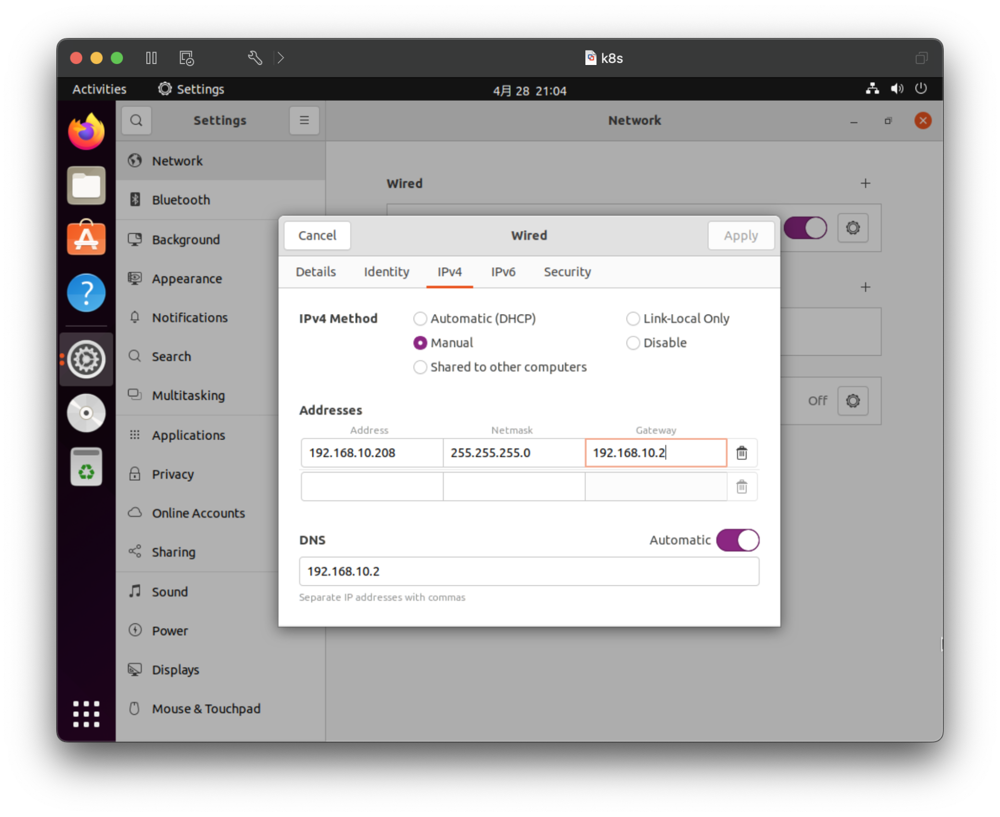
这些工作完成之后，我建议你再给虚拟机拍个快照，做好备份工作，这样万一后面有什么意外发生环境被弄乱了，也可以轻松回滚到拍快照时的正确状态。

现在，让我们启动一个命令行终端（我用的是Mac里的“iTerm2”），使用 ssh ，输入用户名、密码和IP地址，就能够登录创建好的虚拟机了：

有哪些常用的Linux操作
到这里，我们的实验环境就算是搭建完毕了，虽然目前只有最基本的Linux系统，但在后面的“入门篇”“初级篇”“中级篇”里，我们会以它为基础逐步完善，实现完整的Kubernetes环境。
特别提醒一下，因为Kubernetes基于Linux，虽然也有图形化的Dashboard，但更多的时候都是在命令行里工作，所以你需要对基本的Linux操作有所了解。
学习Linux操作系统是另外一个很大的话题了，虽然它很重要，但并不是我们这门课的目标，我这里简单列一些比较常用的知识，你可以检测一下自己的掌握程度，如果有不了解的，希望你课后再查找相关资料补上这些点：
- 命令行界面称为“Shell”，支持交互操作，也支持脚本操作，也就是“Shell编程”。
- root用户有最高权限，但有安全隐患，所以通常我们都只使用普通用户身份，必要的时候使用
sudo来临时使用root权限。 - 查看系统当前进程列表的命令是
ps，它是Linux里最常用的命令之一。 - 查看文件可以使用
cat，如果内容太多，可以用管道符|，后面跟more、less。 - vim是Linux里最流行的编辑器，但它的使用方式与一般的编辑器不同，学习成本略高。
- curl能够以命令行的方式发送HTTP请求，多用来测试HTTP服务器（例如Nginx）。
小结
好了，我们的课前准备就要结束了，我再简单小结一下今天的要点内容：
- 一个完善的实验环境能够很好地辅助我们的学习，建议在本地使用虚拟机从零开始搭建Kubernetes环境。
- 虚拟机软件可以选择VirtualBox（intel芯片）和VMWare Fusion（Apple M1芯片），因为Kubernetes只能运行在Linux上，建议选择最新的Ubuntu 22.04。
- 虚拟机要事先配置好内存、网络等参数，安装系统时选最小安装，然后再安装一些常用的工具。
- 虚拟机都支持快照，环境设置好后要及时备份，出现问题可以随时回滚恢复，避免重复安装系统浪费时间。

在今天的整个搭建过程中，虚拟机设置很关键，这里我也特地录制了一段视频供你更直观地对照参考：-
另外，我写专栏的惯例是在GitHub上开一个配套的学习项目，这门课程的仓库就叫“k8s_study”（https://github.com/chronolaw/k8s_study），里面有文档链接、安装脚本、测试命令、YAML描述文件等等，你可以克隆下来在后续的课程中参照着学习。
课下作业
最后是课下作业时间，请实际动手操作，在你自己的电脑上用虚拟机搭建出Linux实验环境，为下一节课正式学习Docker做好准备。
欢迎在下方留言区和其他同学一起积极参与讨论，如果在搭建过程中有疑问也欢迎留言，我会第一时间给你回复。-

01 初识容器：万事开头难
你好，我是Chrono。
在课前准备里，我们使用VirtualBox/VMWare搭建了Linux虚拟机环境，有了这个基础，今天我们就开始正式的学习。
俗话说：“万事开头难”，对于Kubernetes这个庞大而陌生的领域来说更是如此，如何迈出学习的第一步非常关键，所以，今天我们先从最简单、最基本的知识入手，聊聊最流行的容器技术Docker，先搭建实验环境，再动手操作一下，进而破除它的神秘感。
Docker的诞生
现在我们都已经对Container、Kubernetes这些技术名词耳熟能详了，但你知道这一切的开端——Docker，第一次在世界上的亮相是什么样子的吗？
九年前，也就是2013年3月15日，在北美的圣克拉拉市召开了一场Python开发者社区的主题会议PyCon，研究和探讨各种Python开发技术和应用，与我们常说的“云”“PaaS”“SaaS”根本毫不相关。
在当天的会议日程快结束时，有一个“闪电演讲”（lighting talk）的小环节。其中有一位开发者，用了5分钟的时间，做了题为 “The future of Linux Containers” 的演讲，不过临近末尾因为超时而被主持人赶下了台，场面略显尴尬（你可以在这里回看这段具有历史意义的视频）。

相信你一定猜到了，这个只有短短5分钟的技术演示，就是我们目前所看到的、席卷整个业界的云原生大潮的开端。正是在这段演讲里，Solomon Hykes（dotCloud公司，也就是Docker公司的创始人）首次向全世界展示了Docker技术。
5分钟的时间非常短，但演讲里却包含了几个现在已经普及，但当时却非常新奇的概念，比如容器、镜像、隔离运行进程等，信息量非常大。
PyCon2013大会之后，许多人都意识到了容器的价值和重要性，发现它能够解决困扰了云厂商多年的打包、部署、管理、运维等问题，Docker也就迅速流行起来，成为了GitHub上的明星项目。然后在几个月的时间里，Docker更是吸引了Amazon、Google、Red Hat等大公司的关注，这些公司利用自身的技术背景，纷纷在容器概念上大做文章，最终成就了我们今天所看到的至尊王者Kubernetes的出现。
Docker的形态
好了，下面我们就要来一个“情境再现”，在我们的Linux虚拟机上搭建一个容器运行环境，模拟一下当年Solomon Hykes初次展示Docker的场景。
当然，如今的Docker经过了九年的发展，已经远不是当初的“吴下阿蒙”了，不过最核心的那些概念和操作还是保持了一贯性，没有太大的变化。
首先，我们需要对Docker的形态有所了解。目前使用Docker基本上有两个选择：Docker Desktop和Docker Engine。
Docker Desktop是专门针对个人使用而设计的，支持Mac和Windows快速安装，具有直观的图形界面，还集成了许多周边工具，方便易用。
不过，我个人不是太推荐使用Docker Desktop，原因有两个。第一个，它是商业产品，难免会带有Docker公司的“私人气息”，有一些自己的、非通用的东西，不利于我们后续的Kubernetes学习。第二个，它只是对个人学习免费，受条款限制不能商用，我们在日常工作中难免会“踩到雷区”。
Docker Engine则和Docker Desktop正好相反，完全免费，但只能在Linux上运行，只能使用命令行操作，缺乏辅助工具，需要我们自己动手DIY运行环境。不过要是较起真来，它才是Docker当初的真正形态，“血脉”最纯正，也是现在各个公司在生产环境中实际使用的Docker产品，毕竟机房里99%的服务器跑的都是Linux。
所以，在接下来的学习过程里，我推荐使用Docker Engine，之后在本专栏内，如果没有什么特别的声明，Docker这个词通常指的就是Docker Engine。
Docker的安装
在课前准备里，我们已经在Linux虚拟机里安装了一些常用软件，用的是Ubuntu的包管理工具apt，所以，我们仍然可以使用同样的方式来安装Docker。
先让我们尝试输入命令 docker ，会得到“命令未找到”的提示，还有如何安装的建议：
Command 'docker' not found, but can be installed with:
sudo apt install docker.io
所以，你只需要按照系统的提示，“照葫芦画瓢”输入命令，安装 docker.io 就可以了。为了方便，你还可以使用 -y 参数来避免确认，实现自动化操作：
sudo apt install -y docker.io #安装Docker Engine
刚才说过，Docker Engine不像Docker Desktop那样可以安装后就直接使用，必须要做一些手工调整才能用起来，所以你还要在安装完毕后执行下面的两条命令：
sudo service docker start #启动docker服务
sudo usermod -aG docker ${USER} #当前用户加入docker组
第一个 service docker start 是启动Docker的后台服务，第二个 usermod -aG 是把当前的用户加入Docker的用户组。这是因为操作Docker必须要有root权限，而直接使用root用户不够安全，加入Docker用户组是一个比较好的选择，这也是Docker官方推荐的做法。当然，如果只是为了图省事，你也可以直接切换到root用户来操作Docker。
上面的三条命令执行完之后，我们还需要退出系统（命令 exit ），再重新登录一次，这样才能让修改用户组的命令 usermod 生效。
现在我们就可以来验证Docker是否安装成功了，使用的命令是 docker version 和 docker info。
docker version 会输出Docker客户端和服务器各自的版本信息：

下面是我从中摘出的比较关键的版本号和系统信息。可以看到，我使用的是Docker Engine 20.10.12，系统是Linux，硬件架构是arm64，也就是Apple M1：
Client:
Version: 20.10.12
OS/Arch: linux/arm64
Server:
Engine:
Version: 20.10.12
OS/Arch: linux/arm64
docker info 会显示当前Docker系统相关的信息，例如CPU、内存、容器数量、镜像数量、容器运行时、存储文件系统等等，这里我也摘录了一部分：
Server:
Containers: 1
Running: 0
Paused: 0
Stopped: 1
Images: 8
Server Version: 20.10.12
Storage Driver: overlay2
Backing Filesystem: extfs
Cgroup Driver: systemd
Default Runtime: runc
Kernel Version: 5.13.0-19-generic
Operating System: Ubuntu Jammy Jellyfish (development branch)
OSType: linux
Architecture: aarch64
CPUs: 2
Total Memory: 3.822GiB
Docker Root Dir: /var/lib/docker
docker info 显示的这些信息，对于我们了解Docker的内部运行状态非常有用，比如在这里，你就能够看到当前有一个容器处于停止状态，有8个镜像，存储用的文件系统是overlay2，Linux内核是5.13，操作系统是Ubuntu 22.04 Jammy Jellyfish，硬件是aarch64，两个CPU，内存4G。
Docker的使用
现在，我们已经有了可用的Docker运行环境，就可以来重现9年前Solomon Hykes的那场简短的技术演示了。
首先，我们使用命令 docker ps，它会列出当前系统里运行的容器，就像我们在Linux系统里使用 ps 命令列出运行的进程一样。
注意，所有的Docker操作都是这种形式：以 docker 开始，然后是一个具体的子命令，之前的 docker version 和 docker info 也遵循了这样的规则。你还可以用 help 或者 --help 来获取帮助信息，查看命令清单和更详细的说明。
因为我们刚刚安装好Docker环境，这个时候还没有运行任何容器，所以列表显然是空的。

接下来，让我们尝试另一个非常重要的命令 docker pull ，从外部的镜像仓库（Registry）拉取一个busybox镜像（image），你可以把它类比成是Ubuntu里的“apt install”下载软件包：
docker pull busybox #拉取busybox镜像

docker pull 会有一些看起来比较奇怪的输出信息，现在我们暂时不用管，后续的课程会有详细解释。
我们再执行命令 docker images ，它会列出当前Docker所存储的所有镜像：

可以看到，命令会显示有一个叫busybox的镜像，镜像的ID号是一串16进制数字，大小是1.41MB。
现在，我们就要从这个镜像启动容器了，命令是 docker run ，执行 echo 输出字符串，这也正是Solomon Hykes在大会上所展示的最精彩的那部分：
docker run busybox echo hello world
这条命令会在我们的终端上，输出计算机世界最著名的语句“hello world”：

然后我们再用 docker ps 命令，加上一个参数 -a ，就可以看到这个已经运行完毕的容器：

以上的这些，基本上就是Solomon Hykes闪电演讲的全部内容了。
初次接触容器的你可能会感到很困惑，这些命令都做了什么？看起来并没有展示出什么特别神奇的本领啊？可能还不如直接写一个Shell脚本来得省事。
有同样感想的不止你一个，也许PyCon2013当时绝大部分的现场观众也都有这样的疑问。不要着急，我们在后续的课程再逐步讲解这其中的奥妙。
Docker的架构
这里我再稍微讲一下Docker Engine的架构，让你有个初步的印象，也为之后的学习做一个铺垫。
下面的这张图来自Docker官网（https://docs.docker.com/get-started/overview/），精准地描述了Docker Engine的内部角色和工作流程，对我们的学习研究非常有指导意义。

刚才我们敲的命令行 docker 实际上是一个客户端client ，它会与Docker Engine里的后台服务Docker daemon通信，而镜像则存储在远端的仓库Registry里，客户端并不能直接访问镜像仓库。
Docker client可以通过 build、pull、run等命令向Docker daemon发送请求，而Docker daemon则是容器和镜像的“大管家”，负责从远端拉取镜像、在本地存储镜像，还有从镜像生成容器、管理容器等所有功能。
所以，在Docker Engine里，真正干活的其实是默默运行在后台的Docker daemon，而我们实际操作的命令行工具“docker”只是个“传声筒”的角色。
Docker官方还提供一个“hello-world”示例，可以为你展示Docker client到Docker daemon再到Registry的详细工作流程，你只需要执行这样一个命令：
docker run hello-world
它会先检查本地镜像，如果没有就从远程仓库拉取，再运行容器，最后输出运行信息：

小结
好了，今天我们初步了解了容器技术，再简单小结一下主要的内容：
- 容器技术起源于Docker，它目前有两个产品：Docker Desktop和Docker Engine，我们的课程里推荐使用免费的Docker Engine，它可以在Ubuntu系统里直接用apt命令安装。
- Docker Engine需要使用命令行操作，主命令是
docker，后面再接各种子命令。 - 查看Docker的基本信息的命令是
docker version和docker info，其他常用的命令有docker ps、docker pull、docker images、docker run。 - Docker Engine是典型的客户端/服务器（C/S）架构，命令行工具Docker直接面对用户，后面的Docker daemon和Registry协作完成各种功能。
课下作业
最后是课下作业时间，给你留两个思考题：
- 学完了这节课，你对容器技术和Docker有什么样的认识和感受？
- Docker Engine为什么要设计成客户端/服务器（C/S）架构？它有什么样的好处？
欢迎在留言区发言参与讨论，如果觉得有收获，也欢迎你转发给身边的朋友一起学习。我们下节课见。

02 被隔离的进程：一起来看看容器的本质
你好，我是Chrono。
在上一次课里，我们初步了解了容器技术，在Linux虚拟机里安装了当前最流行的容器Docker，还使用 docker ps、docker run等命令简单操作了容器。
广义上来说，容器技术是动态的容器、静态的镜像和远端的仓库这三者的组合。不过，“容器”这个术语作为容器技术里的核心概念，不仅是大多数初次接触这个领域的人，即使是一些已经有使用经验的人，想要准确地把握它们的内涵、本质都是比较困难的。
那么今天，我们就一起来看看究竟什么是容器（即狭义的、动态的容器）。
容器到底是什么
从字面上来看，容器就是Container，一般把它形象地比喻成现实世界里的集装箱，它也正好和Docker的现实含义相对应，因为码头工人（那只可爱的小鲸鱼）就是不停地在搬运集装箱。

集装箱的作用是标准化封装各种货物，一旦打包完成之后，就可以从一个地方迁移到任意的其他地方。相比散装形式而言，集装箱隔离了箱内箱外两个世界，保持了货物的原始形态，避免了内外部相互干扰，极大地简化了商品的存储、运输、管理等工作。
再回到我们的计算机世界，容器也发挥着同样的作用，不过它封装的货物是运行中的应用程序，也就是进程，同样它也会把进程与外界隔离开，让进程与外部系统互不影响。
我们还是来实际操作一下吧，来看看在容器里运行的进程是个什么样子。
首先，我们使用 docker pull 命令，拉取一个新的镜像——操作系统Alpine：
docker pull alpine
然后我们使用 docker run 命令运行它的Shell程序：
docker run -it alpine sh
注意我们在这里多加了一个 -it 参数，这样我们就会暂时离开当前的Ubuntu操作系统，进入容器内部。
现在，让我们执行 cat /etc/os-release ，还有 ps 这两个命令，最后再使用 exit 退出，看看容器里与容器外有什么不同：

就像这张截图里所显示的，在容器里查看系统信息，会发现已经不再是外面的Ubuntu系统了，而是变成了Alpine Linux 3.15，使用 ps 命令也只会看到一个完全“干净”的运行环境，除了Shell（即sh）没有其他的进程存在。
也就是说，在容器内部是一个全新的Alpine操作系统，在这里运行的应用程序完全看不到外面的Ubuntu系统，两个系统被互相“隔离”了，就像是一个“世外桃源”。
我们还可以再拉取一个Ubuntu 18.04的镜像，用同样的方式进入容器内部，然后执行 apt update、apt install 等命令来看看：
docker pull ubuntu:18.04
docker run -it ubuntu:18.04 sh
# 下面的命令都是在容器内执行
cat /etc/os-release
apt update
apt install -y wget redis
redis-server &
这里我就不截图了，具体的结果留给你课下去实际操作体会。可以看到的是，容器里是另一个完整的Ubuntu 18.04 系统，我们可以在这个“世外桃源”做任意的事情，比如安装应用、运行Redis服务等。但无论我们在容器里做什么，都不会影响外面的Ubuntu系统（当然不是绝对的）。
到这里，我们就可以得到一个初步的结论：容器，就是一个特殊的隔离环境，它能够让进程只看到这个环境里的有限信息，不能对外界环境施加影响。
那么，很自然地，我们会产生另外一个问题：为什么需要创建这样的一个隔离环境，直接让进程在系统里运行不好吗？
为什么要隔离
相信因为这两年疫情，你对“隔离”这个词不会感觉到太陌生。为了防止疫情蔓延，我们需要建立方舱、定点医院，把患病人群控制在特定的区域内，更进一步还会实施封闭小区、关停商场等行动。虽然这些措施带来了一些不便，但都是为了整个社会更大范围的正常运转。
同样的，在计算机世界里的隔离也是出于同样的考虑，也就是系统安全。
对于Linux操作系统来说，一个不受任何限制的应用程序是十分危险的。这个进程能够看到系统里所有的文件、所有的进程、所有的网络流量，访问内存里的任何数据，那么恶意程序很容易就会把系统搞瘫痪，正常程序也可能会因为无意的Bug导致信息泄漏或者其他安全事故。虽然Linux提供了用户权限控制，能够限制进程只访问某些资源，但这个机制还是比较薄弱的，和真正的“隔离”需求相差得很远。
而现在，使用容器技术，我们就可以让应用程序运行在一个有严密防护的“沙盒”（Sandbox）环境之内，就好像是把进程请进了“隔离酒店”，它可以在这个环境里自由活动，但绝不允许“越界”，从而保证了容器外系统的安全。

另外，在计算机里有各种各样的资源，CPU、内存、硬盘、网卡，虽然目前的高性能服务器都是几十核CPU、上百GB的内存、数TB的硬盘、万兆网卡，但这些资源终究是有限的，而且考虑到成本，也不允许某个应用程序无限制地占用。
容器技术的另一个本领就是为应用程序加上资源隔离，在系统里切分出一部分资源，让它只能使用指定的配额，比如只能使用一个CPU，只能使用1GB内存等等，就好像在隔离酒店里保证一日三餐，但想要吃山珍海味那是不行的。这样就可以避免容器内进程的过度系统消耗，充分利用计算机硬件，让有限的资源能够提供稳定可靠的服务。
所以，虽然进程被“关”在了容器里，损失了一些自由，但却保证了整个系统的安全。而且只要进程遵守隔离规定，不做什么出格的事情，也完全是可以正常运行的。
与虚拟机的区别是什么
你也许会说，这么看来，容器不过就是常见的“沙盒”技术中的一种，和虚拟机差不了多少，那么它与虚拟机的区别在哪里呢？又有什么样的优势呢？
在我看来，其实容器和虚拟机面对的都是相同的问题，使用的也都是虚拟化技术，只是所在的层次不同，我们可以参考Docker官网上的两张图，把这两者对比起来会更利于学习理解。

（Docker官网的图示其实并不太准确，容器并不直接运行在Docker上，Docker只是辅助建立隔离环境，让容器基于Linux操作系统运行）
首先，容器和虚拟机的目的都是隔离资源，保证系统安全，然后是尽量提高资源的利用率。
之前在使用VirtualBox/VMware创建虚拟机的时候，你也应该看到了，它们能够在宿主机系统里完整虚拟化出一套计算机硬件，在里面还能够安装任意的操作系统，这内外两个系统也同样是完全隔离，互不干扰。
而在数据中心的服务器上，虚拟机软件（即图中的Hypervisor）同样可以把一台物理服务器虚拟成多台逻辑服务器，这些逻辑服务器彼此独立，可以按需分隔物理服务器的资源，为不同的用户所使用。
从实现的角度来看，虚拟机虚拟化出来的是硬件，需要在上面再安装一个操作系统后才能够运行应用程序，而硬件虚拟化和操作系统都比较“重”，会消耗大量的CPU、内存、硬盘等系统资源，但这些消耗其实并没有带来什么价值，属于“重复劳动”和“无用功”，不过好处就是隔离程度非常高，每个虚拟机之间可以做到完全无干扰。
我们再来看容器（即图中的Docker），它直接利用了下层的计算机硬件和操作系统，因为比虚拟机少了一层，所以自然就会节约CPU和内存，显得非常轻量级，能够更高效地利用硬件资源。不过，因为多个容器共用操作系统内核，应用程序的隔离程度就没有虚拟机那么高了。
运行效率，可以说是容器相比于虚拟机最大的优势，在这个对比图中就可以看到，同样的系统资源，虚拟机只能跑3个应用，其他的资源都用来支持虚拟机运行了，而容器则能够把这部分资源释放出来，同时运行6个应用。
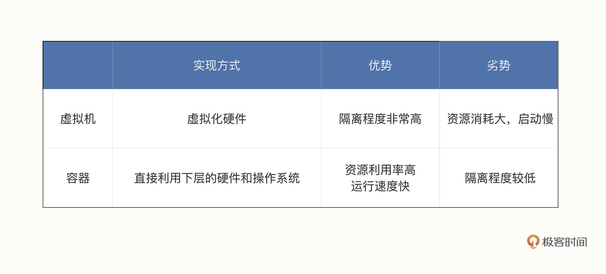
当然，这个对比图只是一个形象的展示，不是严谨的数值比较，不过我们还可以用手里现有的VirtualBox/VMware虚拟机与Docker容器做个简单对比。
一个普通的Ubuntu虚拟机安装完成之后，体积都是GB级别的，再安装一些应用很容易就会上到10GB，启动的时间通常需要几分钟，我们的电脑上同时运行十来个虚拟机可能就是极限了。而一个Ubuntu镜像大小则只有几十MB，启动起来更是非常快，基本上不超过一秒钟，同时跑上百个容器也毫无问题。
不过，虚拟机和容器这两种技术也不是互相排斥的，它们完全可以结合起来使用，就像我们的课程里一样，用虚拟机实现与宿主机的强隔离，然后在虚拟机里使用Docker容器来快速运行应用程序。
隔离是怎么实现的
我们知道虚拟机使用的是Hypervisor（KVM、Xen等），那么，容器是怎么实现和下层计算机硬件和操作系统交互的呢？为什么它会具有高效轻便的隔离特性呢？
其实奥秘就在于Linux操作系统内核之中，为资源隔离提供了三种技术：namespace、cgroup、chroot，虽然这三种技术的初衷并不是为了实现容器，但它们三个结合在一起就会发生奇妙的“化学反应”。
namespace是2002年从Linux 2.4.19开始出现的，和编程语言里的namespace有点类似，它可以创建出独立的文件系统、主机名、进程号、网络等资源空间，相当于给进程盖了一间小板房，这样就实现了系统全局资源和进程局部资源的隔离。
cgroup是2008年从Linux 2.6.24开始出现的，它的全称是Linux Control Group，用来实现对进程的CPU、内存等资源的优先级和配额限制，相当于给进程的小板房加了一个天花板。
chroot的历史则要比前面的namespace、cgroup要古老得多，早在1979年的UNIX V7就已经出现了，它可以更改进程的根目录，也就是限制访问文件系统，相当于给进程的小板房铺上了地砖。
你看，综合运用这三种技术，一个四四方方、具有完善的隔离特性的容器就此出现了，进程就可以搬进这个小房间，过它的“快乐生活”了。我觉得用鲁迅先生的一句诗来描述这个情景最为恰当：躲进小楼成一统，管他冬夏与春秋。
小结
好了，今天我们一起学习了容器技术中最关键的概念：动态的容器，再简单小结一下课程的要点：
- 容器就是操作系统里一个特殊的“沙盒”环境，里面运行的进程只能看到受限的信息，与外部系统实现了隔离。
- 容器隔离的目的是为了系统安全，限制了进程能够访问的各种资源。
- 相比虚拟机技术，容器更加轻巧、更加高效，消耗的系统资源非常少，在云计算时代极具优势。
- 容器的基本实现技术是Linux系统里的namespace、cgroup、chroot。
课下作业
最后是课下作业时间，给你留两个思考题：
- 你能够对比现实中的集装箱，说出容器技术更多的优点吗？
- 有一种说法：容器就是轻量级的虚拟机，你认为这种说法正确吗？
欢迎在留言区发言参与讨论，如果你觉得有收获，也欢迎转发给身边的朋友一起学习。我们下节课见。

03 容器化的应用：会了这些你就是Docker高手
你好，我是Chrono。
在上一次课里，我们了解了容器技术中最核心的概念：容器，知道它就是一个系统中被隔离的特殊环境，进程可以在其中不受干扰地运行。我们也可以把这段描述再简化一点：容器就是被隔离的进程。
相比笨重的虚拟机，容器有许多优点，那我们应该如何创建并运行容器呢？是要用Linux内核里的namespace、cgroup、chroot三件套吗？
当然不会，那样的方式实在是太原始了，所以今天，我们就以Docker为例，来看看什么是容器化的应用，怎么来操纵容器化的应用。
什么是容器化的应用
之前我们运行容器的时候，显然不是从零开始的，而是要先拉取一个“镜像”（image），再从这个“镜像”来启动容器，像[第一节课]这样：
docker pull busybox
docker run busybox echo hello world
那么，这个“镜像”到底是什么东西呢？它又和“容器”有什么关系呢？
其实我们在其他场合中也曾经见到过“镜像”这个词，比如最常见的光盘镜像，重装电脑时使用的硬盘镜像，还有虚拟机系统镜像。这些“镜像”都有一些相同点：只读，不允许修改，以标准格式存储了一系列的文件，然后在需要的时候再从中提取出数据运行起来。
容器技术里的镜像也是同样的道理。因为容器是由操作系统动态创建的，那么必然就可以用一种办法把它的初始环境给固化下来，保存成一个静态的文件，相当于是把容器给“拍扁”了，这样就可以非常方便地存放、传输、版本化管理了。

如果还拿之前的“小板房”来做比喻的话，那么镜像就可以说是一个“样板间”，把运行进程所需要的文件系统、依赖库、环境变量、启动参数等所有信息打包整合到了一起。之后镜像文件无论放在哪里，操作系统都能根据这个“样板间”快速重建容器，应用程序看到的就会是一致的运行环境了。
从功能上来看，镜像和常见的tar、rpm、deb等安装包一样，都打包了应用程序，但最大的不同点在于它里面不仅有基本的可执行文件，还有应用运行时的整个系统环境。这就让镜像具有了非常好的跨平台便携性和兼容性，能够让开发者在一个系统上开发（例如Ubuntu），然后打包成镜像，再去另一个系统上运行（例如CentOS），完全不需要考虑环境依赖的问题，是一种更高级的应用打包方式。
理解了这一点，我们再回过头来看看第一节课里运行的Docker命令。
docker pull busybox ，就是获取了一个打包了busybox应用的镜像，里面固化了busybox程序和它所需的完整运行环境。
docker run busybox echo hello world ，就是提取镜像里的各种信息，运用namespace、cgroup、chroot技术创建出隔离环境，然后再运行busybox的 echo 命令，输出 hello world 的字符串。
这两个步骤，由于是基于标准的Linux系统调用和只读的镜像文件，所以，无论是在哪种操作系统上，或者是使用哪种容器实现技术，都会得到完全一致的结果。
推而广之，任何应用都能够用这种形式打包再分发后运行，这也是无数开发者梦寐以求的“一次编写，到处运行（Build once, Run anywhere）”的至高境界。所以，所谓的“容器化的应用”，或者“应用的容器化”，就是指应用程序不再直接和操作系统打交道，而是封装成镜像，再交给容器环境去运行。
现在你就应该知道了，镜像就是静态的应用容器，容器就是动态的应用镜像，两者互相依存，互相转化，密不可分。
之前的那张Docker官方架构图你还有印象吧，我们在第一节课曾经简单地介绍过。可以看到，在Docker里的核心处理对象就是镜像（image）和容器（container）：
好，理解了什么是容器化的应用，接下来我们再来学习怎么操纵容器化的应用。因为镜像是容器运行的根本，先有镜像才有容器，所以先来看看关于镜像的一些常用命令。
常用的镜像操作有哪些
在前面的课程里你应该已经了解了两个基本命令，docker pull 从远端仓库拉取镜像，docker images 列出当前本地已有的镜像。
docker pull 的用法还是比较简单的，和普通的下载非常像，不过我们需要知道镜像的命名规则，这样才能准确地获取到我们想要的容器镜像。
镜像的完整名字由两个部分组成，名字和标签，中间用 : 连接起来。
名字表明了应用的身份，比如busybox、Alpine、Nginx、Redis等等。标签（tag）则可以理解成是为了区分不同版本的应用而做的额外标记，任何字符串都可以，比如3.15是纯数字的版本号、jammy是项目代号、1.21-alpine是版本号加操作系统名等等。其中有一个比较特殊的标签叫“latest”，它是默认的标签，如果只提供名字没有附带标签，那么就会使用这个默认的“latest”标签。
那么现在，你就可以把名字和标签组合起来，使用 docker pull 来拉取一些镜像了：
docker pull alpine:3.15
docker pull ubuntu:jammy
docker pull nginx:1.21-alpine
docker pull nginx:alpine
docker pull redis
有了这些镜像之后，我们再用 docker images 命令来看看它们的具体信息：

在这个列表里，你可以看到，REPOSITORY列就是镜像的名字，TAG就是这个镜像的标签，那么第三列“IMAGE ID”又是什么意思呢？
它可以说是镜像唯一的标识，就好像是身份证号一样。比如这里我们可以用“ubuntu:jammy”来表示Ubuntu 22.04镜像，同样也可以用它的ID“d4c2c……”来表示。
另外，你可能还会注意到，截图里的两个镜像“nginx:1.21-alpine”和“nginx:alpine”的IMAGE ID是一样的，都是“a63aa……”。这其实也很好理解，这就像是人的身份证号码是唯一的，但可以有大名、小名、昵称、绰号，同一个镜像也可以打上不同的标签，这样应用在不同的场合就更容易理解。
IMAGE ID还有一个好处，因为它是十六进制形式且唯一，Docker特意为它提供了“短路”操作，在本地使用镜像的时候，我们不用像名字那样要完全写出来这一长串数字，通常只需要写出前三位就能够快速定位，在镜像数量比较少的时候用两位甚至一位数字也许就可以了。
来看另一个镜像操作命令 docker rmi ，它用来删除不再使用的镜像，可以节约磁盘空间，注意命令 rmi ，实际上是“remove image”的简写。
下面我们就来试验一下，使用名字和IMAGE ID来删除镜像：
docker rmi redis
docker rmi d4c
这里的第一个 rmi 删除了Redis镜像，因为没有显式写出标签，默认使用的就是“latest”。第二个 rmi 没有给出名字，而是直接使用了IMAGE ID的前三位，也就是“d4c”，Docker就会直接找到这个ID前缀的镜像然后删除。
Docker里与镜像相关的命令还有很多，不过以上的 docker pull、docker images、docker rmi 就是最常用的三个了，其他的命令我们后续课程会陆续介绍。

常用的容器操作有哪些
现在我们已经在本地存放了镜像，就可以使用 docker run 命令把这些静态的应用运行起来，变成动态的容器了。
基本的格式是“docker run 设置参数”，再跟上“镜像名或ID”，后面可能还会有附加的“运行命令”。
比如这个命令：
docker run -h srv alpine hostname
这里的 -h srv 就是容器的运行参数，alpine 是镜像名，它后面的 hostname 表示要在容器里运行的“hostname”这个程序，输出主机名。
docker run 是最复杂的一个容器操作命令，有非常多的额外参数用来调整容器的运行状态，你可以加上 --help 来看它的帮助信息，今天我只说几个最常用的参数。
-it 表示开启一个交互式操作的Shell，这样可以直接进入容器内部，就好像是登录虚拟机一样。（它实际上是“-i”和“-t”两个参数的组合形式）
-d 表示让容器在后台运行，这在我们启动Nginx、Redis等服务器程序的时候非常有用。
--name 可以为容器起一个名字，方便我们查看，不过它不是必须的，如果不用这个参数，Docker会分配一个随机的名字。
下面我们就来练习一下这三个参数，分别运行Nginx、Redis和Ubuntu：
docker run -d nginx:alpine # 后台运行Nginx
docker run -d --name red_srv redis # 后台运行Redis
docker run -it --name ubuntu 2e6 sh # 使用IMAGE ID，登录Ubuntu18.04
因为第三个命令使用的是 -it 而不是 -d ，所以它会进入容器里的Ubuntu系统，我们需要另外开一个终端窗口，使用 docker ps 命令来查看容器的运行状态：

可以看到，每一个容器也会有一个“CONTAINER ID”，它的作用和镜像的“IMAGE ID”是一样的，唯一标识了容器。
对于正在运行中的容器，我们可以使用 docker exec 命令在里面执行另一个程序，效果和 docker run 很类似，但因为容器已经存在，所以不会创建新的容器。它最常见的用法是使用 -it 参数打开一个Shell，从而进入容器内部，例如：
docker exec -it red_srv sh
这样我们就“登录”进了Redis容器，可以很方便地查看服务的运行状态或者日志。
运行中的容器还可以使用 docker stop 命令来强制停止，这里我们仍然可以使用容器名字，不过或许用“CONTAINER ID”的前三位数字会更加方便。
docker stop ed4 d60 45c
容器被停止后使用 docker ps 命令就看不到了，不过容器并没有被彻底销毁，我们可以使用 docker ps -a 命令查看系统里所有的容器，当然也包括已经停止运行的容器：

这些停止运行的容器可以用 docker start 再次启动运行，如果你确定不再需要它们，可以使用 docker rm 命令来彻底删除。
注意，这个命令与 docker rmi 非常像，区别在于它没有后面的字母“i”，所以只会删除容器，不删除镜像。
下面我们就来运行 docker rm 命令，使用“CONTAINER ID”的前两位数字来删除这些容器：
docker rm ed d6 45
执行删除命令之后，再用 docker ps -a 查看列表就会发现这些容器已经彻底消失了。
你可能会感觉这样的容器管理方式很麻烦，启动后要ps看ID再删除，如果稍微不注意，系统就会遗留非常多的“死”容器，占用系统资源，有没有什么办法能够让Docker自动删除不需要的容器呢？
办法当然有，就是在执行 docker run 命令的时候加上一个 --rm 参数，这就会告诉Docker不保存容器，只要运行完毕就自动清除，省去了我们手工管理容器的麻烦。
我们还是用刚才的Nginx、Redis和Ubuntu这三个容器来试验一下，加上 --rm 参数（省略了name参数）：
docker run -d --rm nginx:alpine
docker run -d --rm redis
docker run -it --rm 2e6 sh
然后我们用 docker stop 停止容器，再用 docker ps -a ，就会发现不需要我们再手动执行 docker rm ，Docker已经自动删除了这三个容器。

小结
好了，今天我们一起学习了容器化的应用，然后使用Docker实际操作了镜像和容器，运行了被容器化的Alpine、Nginx、Redis等应用。
镜像是容器的静态形式，它打包了应用程序的所有运行依赖项，方便保存和传输。使用容器技术运行镜像，就形成了动态的容器，由于镜像只读不可修改，所以应用程序的运行环境总是一致的。
而容器化的应用就是指以镜像的形式打包应用程序，然后在容器环境里从镜像启动容器。
由于Docker的命令比较多，而且每个命令还有许多参数，一节课里很难把它们都详细说清楚，希望你课下参考Docker自带的帮助或者官网文档（https://docs.docker.com/reference/），再多加实操练习，相信你一定能够成为Docker高手。
我这里就对今天的镜像操作和容器操作做个小结：
- 常用的镜像操作有
docker pull、docker images、docker rmi，分别是拉取镜像、查看镜像和删除镜像。 - 用来启动容器的
docker run是最常用的命令，它有很多参数用来调整容器的运行状态，对于后台服务来说应该使用-d。 docker exec命令可以在容器内部执行任意程序，对于调试排错特别有用。- 其他常用的容器操作还有
docker ps、docker stop、docker rm，用来查看容器、停止容器和删除容器。
课下作业
最后是课下作业时间，给你留两个思考题：
- 说一说你对容器镜像的理解，它与rpm、deb安装包有哪些不同和优缺点。
- 你觉得
docker run和docker exec的区别在哪里，应该怎么使用它们？
欢迎在留言区参与讨论，据说打字发言能把自己学到的新知识再加工一遍，可以显著提升理解哦。
我们下节课再见。-

04 创建容器镜像：如何编写正确、高效的Dockerfile
你好，我是Chrono。
上一次的课程里我们一起学习了容器化的应用，也就是被打包成镜像的应用程序，然后再用各种Docker命令来运行、管理它们。
那么这又会带来一个疑问：这些镜像是怎么创建出来的？我们能不能够制作属于自己的镜像呢？
所以今天，我就来讲解镜像的内部机制，还有高效、正确地编写Dockerfile制作容器镜像的方法。
镜像的内部机制是什么
现在你应该知道，镜像就是一个打包文件，里面包含了应用程序还有它运行所依赖的环境，例如文件系统、环境变量、配置参数等等。
环境变量、配置参数这些东西还是比较简单的，随便用一个manifest清单就可以管理，真正麻烦的是文件系统。为了保证容器运行环境的一致性，镜像必须把应用程序所在操作系统的根目录，也就是rootfs，都包含进来。
虽然这些文件里不包含系统内核（因为容器共享了宿主机的内核），但如果每个镜像都重复做这样的打包操作，仍然会导致大量的冗余。可以想象，如果有一千个镜像，都基于Ubuntu系统打包，那么这些镜像里就会重复一千次Ubuntu根目录，对磁盘存储、网络传输都是很大的浪费。
很自然的，我们就会想到，应该把重复的部分抽取出来，只存放一份Ubuntu根目录文件，然后让这一千个镜像以某种方式共享这部分数据。
这个思路，也正是容器镜像的一个重大创新点：分层，术语叫“Layer”。
容器镜像内部并不是一个平坦的结构，而是由许多的镜像层组成的，每层都是只读不可修改的一组文件，相同的层可以在镜像之间共享，然后多个层像搭积木一样堆叠起来，再使用一种叫“Union FS联合文件系统”的技术把它们合并在一起，就形成了容器最终看到的文件系统（图片来源）。
我来拿大家都熟悉的千层糕做一个形象的比喻吧。
千层糕也是由很多层叠加在一起的，从最上面可以看到每层里面镶嵌的葡萄干、核桃、杏仁、青丝等，每一层糕就相当于一个Layer，干果就好比是Layer里的各个文件。但如果某两层的同一个位置都有干果，也就是有文件同名，那么我们就只能看到上层的文件，而下层的就被屏蔽了。
你可以用命令 docker inspect 来查看镜像的分层信息，比如nginx:alpine镜像：
docker inspect nginx:alpine
它的分层信息在“RootFS”部分：-
通过这张截图就可以看到，nginx:alpine镜像里一共有6个Layer。
相信你现在也就明白，之前在使用 docker pull、docker rmi 等命令操作镜像的时候，那些“奇怪”的输出信息是什么了，其实就是镜像里的各个Layer。Docker会检查是否有重复的层，如果本地已经存在就不会重复下载，如果层被其他镜像共享就不会删除，这样就可以节约磁盘和网络成本。
Dockerfile是什么
知道了容器镜像的内部结构和基本原理，我们就可以来学习如何自己动手制作容器镜像了，也就是自己打包应用。
在之前我们讲容器的时候，曾经说过容器就是“小板房”，镜像就是“样板间”。那么，要造出这个“样板间”，就必然要有一个“施工图纸”，由它来规定如何建造地基、铺设水电、开窗搭门等动作。这个“施工图纸”就是“Dockerfile”。
比起容器、镜像来说，Dockerfile非常普通，它就是一个纯文本，里面记录了一系列的构建指令，比如选择基础镜像、拷贝文件、运行脚本等等，每个指令都会生成一个Layer，而Docker顺序执行这个文件里的所有步骤，最后就会创建出一个新的镜像出来。
我们来看一个最简单的Dockerfile实例：
# Dockerfile.busybox
FROM busybox # 选择基础镜像
CMD echo "hello world" # 启动容器时默认运行的命令
这个文件里只有两条指令。
第一条指令是 FROM，所有的Dockerfile都要从它开始，表示选择构建使用的基础镜像，相当于“打地基”，这里我们使用的是busybox。
第二条指令是 CMD，它指定 docker run 启动容器时默认运行的命令，这里我们使用了echo命令，输出“hello world”字符串。
现在有了Dockerfile这张“施工图纸”，我们就可以请出“施工队”了，用 docker build 命令来创建出镜像：
docker build -f Dockerfile.busybox .
Sending build context to Docker daemon 7.68kB
Step 1/2 : FROM busybox
---> d38589532d97
Step 2/2 : CMD echo "hello world"
---> Running in c5a762edd1c8
Removing intermediate container c5a762edd1c8
---> b61882f42db7
Successfully built b61882f42db7
你需要特别注意命令的格式，用 -f 参数指定Dockerfile文件名，后面必须跟一个文件路径，叫做“构建上下文”（build’s context），这里只是一个简单的点号，表示当前路径的意思。
接下来，你就会看到Docker会逐行地读取并执行Dockerfile里的指令，依次创建镜像层，再生成完整的镜像。
新的镜像暂时还没有名字（用 docker images 会看到是 <none>），但我们可以直接使用“IMAGE ID”来查看或者运行：
docker inspect b61
docker run b61
怎样编写正确、高效的Dockerfile
大概了解了Dockerfile之后，我再来讲讲编写Dockerfile的一些常用指令和最佳实践，帮你在今后的工作中把它写好、用好。
首先因为构建镜像的第一条指令必须是 FROM，所以基础镜像的选择非常关键。如果关注的是镜像的安全和大小，那么一般会选择Alpine；如果关注的是应用的运行稳定性，那么可能会选择Ubuntu、Debian、CentOS。
FROM alpine:3.15 # 选择Alpine镜像
FROM ubuntu:bionic # 选择Ubuntu镜像
我们在本机上开发测试时会产生一些源码、配置等文件，需要打包进镜像里，这时可以使用 COPY 命令，它的用法和Linux的cp差不多，不过拷贝的源文件必须是“构建上下文”路径里的，不能随意指定文件。也就是说，如果要从本机向镜像拷贝文件，就必须把这些文件放到一个专门的目录，然后在 docker build 里指定“构建上下文”到这个目录才行。
这里有两个 COPY 命令示例，你可以看一下：
COPY ./a.txt /tmp/a.txt # 把构建上下文里的a.txt拷贝到镜像的/tmp目录
COPY /etc/hosts /tmp # 错误！不能使用构建上下文之外的文件
接下来要说的就是Dockerfile里最重要的一个指令 RUN ，它可以执行任意的Shell命令，比如更新系统、安装应用、下载文件、创建目录、编译程序等等，实现任意的镜像构建步骤，非常灵活。
RUN 通常会是Dockerfile里最复杂的指令，会包含很多的Shell命令，但Dockerfile里一条指令只能是一行，所以有的 RUN 指令会在每行的末尾使用续行符 \，命令之间也会用 && 来连接，这样保证在逻辑上是一行，就像下面这样：
RUN apt-get update \
&& apt-get install -y \
build-essential \
curl \
make \
unzip \
&& cd /tmp \
&& curl -fSL xxx.tar.gz -o xxx.tar.gz\
&& tar xzf xxx.tar.gz \
&& cd xxx \
&& ./config \
&& make \
&& make clean
有的时候在Dockerfile里写这种超长的 RUN 指令很不美观，而且一旦写错了，每次调试都要重新构建也很麻烦，所以你可以采用一种变通的技巧：把这些Shell命令集中到一个脚本文件里，用 COPY 命令拷贝进去再用 RUN 来执行：
COPY setup.sh /tmp/ # 拷贝脚本到/tmp目录
RUN cd /tmp && chmod +x setup.sh \ # 添加执行权限
&& ./setup.sh && rm setup.sh # 运行脚本然后再删除
RUN 指令实际上就是Shell编程，如果你对它有所了解，就应该知道它有变量的概念，可以实现参数化运行，这在Dockerfile里也可以做到，需要使用两个指令 ARG 和 ENV。
它们区别在于 ARG 创建的变量只在镜像构建过程中可见，容器运行时不可见，而 ENV 创建的变量不仅能够在构建镜像的过程中使用，在容器运行时也能够以环境变量的形式被应用程序使用。
下面是一个简单的例子，使用 ARG 定义了基础镜像的名字（可以用在“FROM”指令里），使用 ENV 定义了两个环境变量：
ARG IMAGE_BASE="node"
ARG IMAGE_TAG="alpine"
ENV PATH=$PATH:/tmp
ENV DEBUG=OFF
还有一个重要的指令是 EXPOSE，它用来声明容器对外服务的端口号，对现在基于Node.js、Tomcat、Nginx、Go等开发的微服务系统来说非常有用：
EXPOSE 443 # 默认是tcp协议
EXPOSE 53/udp # 可以指定udp协议
讲了这些Dockerfile指令之后，我还要特别强调一下，因为每个指令都会生成一个镜像层，所以Dockerfile里最好不要滥用指令，尽量精简合并，否则太多的层会导致镜像臃肿不堪。
docker build是怎么工作的
Dockerfile必须要经过 docker build 才能生效，所以我们再来看看 docker build 的详细用法。
刚才在构建镜像的时候，你是否对“构建上下文”这个词感到有些困惑呢？它到底是什么含义呢？
我觉得用Docker的官方架构图来理解会比较清楚（注意图中与“docker build”关联的虚线）。
因为命令行“docker”是一个简单的客户端，真正的镜像构建工作是由服务器端的“Docker daemon”来完成的，所以“docker”客户端就只能把“构建上下文”目录打包上传（显示信息 Sending build context to Docker daemon ），这样服务器才能够获取本地的这些文件。
明白了这一点，你就会知道，“构建上下文”其实与Dockerfile并没有直接的关系，它其实指定了要打包进镜像的一些依赖文件。而 COPY 命令也只能使用基于“构建上下文”的相对路径，因为“Docker daemon”看不到本地环境，只能看到打包上传的那些文件。
但这个机制也会导致一些麻烦，如果目录里有的文件（例如readme/.git/.svn等）不需要拷贝进镜像，docker也会一股脑地打包上传，效率很低。
为了避免这种问题，你可以在“构建上下文”目录里再建立一个 .dockerignore 文件，语法与 .gitignore 类似，排除那些不需要的文件。
下面是一个简单的示例，表示不打包上传后缀是“swp”“sh”的文件：
# docker ignore
*.swp
*.sh
另外关于Dockerfile，一般应该在命令行里使用 -f 来显式指定。但如果省略这个参数，docker build 就会在当前目录下找名字是 Dockerfile 的文件。所以，如果只有一个构建目标的话，文件直接叫“Dockerfile”是最省事的。
现在我们使用 docker build 应该就没什么难点了，不过构建出来的镜像只有“IMAGE ID”没有名字，不是很方便。
为此你可以加上一个 -t 参数，也就是指定镜像的标签（tag），这样Docker就会在构建完成后自动给镜像添加名字。当然，名字必须要符合上节课里的命名规范，用 : 分隔名字和标签，如果不提供标签默认就是“latest”。
小结
好了，今天我们一起学习了容器镜像的内部结构，重点理解容器镜像是由多个只读的Layer构成的，同一个Layer可以被不同的镜像共享，减少了存储和传输的成本。
如何编写Dockerfile内容稍微多一点，我再简单做个小结：
- 创建镜像需要编写Dockerfile，写清楚创建镜像的步骤，每个指令都会生成一个Layer。
- Dockerfile里，第一个指令必须是
FROM，用来选择基础镜像，常用的有Alpine、Ubuntu等。其他常用的指令有：COPY、RUN、EXPOSE，分别是拷贝文件，运行Shell命令，声明服务端口号。 docker build需要用-f来指定Dockerfile，如果不指定就使用当前目录下名字是“Dockerfile”的文件。docker build需要指定“构建上下文”，其中的文件会打包上传到Docker daemon，所以尽量不要在“构建上下文”中存放多余的文件。- 创建镜像的时候应当尽量使用
-t参数，为镜像起一个有意义的名字，方便管理。
今天讲了不少，但关于创建镜像还有很多高级技巧等待你去探索，比如使用缓存、多阶段构建等等，你可以再参考Docker官方文档（https://docs.docker.com/engine/reference/builder/），或者一些知名应用的镜像（如Nginx、Redis、Node.js等）进一步学习。
课下作业
最后是课下作业时间，这里有一个完整的Dockerfile示例，你可以尝试着去解释一下它的含义，然后再自己构建一下：
# Dockerfile
# docker build -t ngx-app .
# docker build -t ngx-app:1.0 .
ARG IMAGE_BASE="nginx"
ARG IMAGE_TAG="1.21-alpine"
FROM ${IMAGE_BASE}:${IMAGE_TAG}
COPY ./default.conf /etc/nginx/conf.d/
RUN cd /usr/share/nginx/html \
&& echo "hello nginx" > a.txt
EXPOSE 8081 8082 8083
当然还有两个思考题：
- 镜像里的层都是只读不可修改的，但容器运行的时候经常会写入数据，这个冲突应该怎么解决呢？（答案在本期找）
- 你能再列举一下镜像的分层结构带来了哪些好处吗？
欢迎积极留言。如果你觉得有收获，也欢迎分享给身边的朋友同事一起讨论学习。
05 镜像仓库：该怎样用好Docker Hub这个宝藏
你好，我是Chrono。
上一次课里我们学习了“Dockerfile”和“docker build”的用法，知道了如何创建自己的镜像。那么镜像文件应该如何管理呢，具体来说，应该如何存储、检索、分发、共享镜像呢？不解决这些问题，我们的容器化应用还是无法顺利地实施。
今天，我就来谈一下这个话题，聊聊什么是镜像仓库，还有该怎么用好镜像仓库。
什么是镜像仓库（Registry）
之前我们已经用过 docker pull 命令拉取镜像，也说过有一个“镜像仓库”（Registry）的概念，那到底什么是镜像仓库呢？
还是来看Docker的官方架构图（它真的非常重要）：
图里右边的区域就是镜像仓库，术语叫Registry，直译就是“注册中心”，意思是所有镜像的Repository都在这里登记保管，就像是一个巨大的档案馆。
然后我们再来看左边的“docker pull”，虚线显示了它的工作流程，先到“Docker daemon”，再到Registry，只有当Registry里存有镜像才能真正把它下载到本地。
当然了，拉取镜像只是镜像仓库最基本的一个功能，它还会提供更多的功能，比如上传、查询、删除等等，是一个全面的镜像管理服务站点。
你也可以把镜像仓库类比成手机上的应用商店，里面分门别类存放了许多容器化的应用，需要什么去找一下就行了。有了它，我们使用镜像才能够免除后顾之忧。
什么是Docker Hub
不过，你有没有注意到，在使用 docker pull 获取镜像的时候，我们并没有明确地指定镜像仓库。在这种情况下，Docker就会使用一个默认的镜像仓库，也就是大名鼎鼎的“Docker Hub”（https://hub.docker.com/）。
Docker Hub是Docker公司搭建的官方Registry服务，创立于2014年6月，和Docker 1.0同时发布。它号称是世界上最大的镜像仓库，和GitHub一样，几乎成为了容器世界的基础设施。
Docker Hub里面不仅有Docker自己打包的镜像，而且还对公众免费开放，任何人都可以上传自己的作品。经过这8年的发展，Docker Hub已经不再是一个单纯的镜像仓库了，更应该说是一个丰富而繁荣的容器社区。
你可以看看下面的这张截图，里面列出的都是下载量超过10亿次（1 Billion）的最受欢迎的应用程序，比如Nginx、MongoDB、Node.js、Redis、OpenJDK等等。显然，把这些容器化的应用引入到我们自己的系统里，就像是站在了巨人的肩膀上，一开始就会有一个高水平的起点。

但和GitHub、App Store一样，面向所有人公开的Docker Hub也有一个不可避免的缺点，就是“良莠不齐”。
在Docker Hub搜索框里输入关键字，比如Nginx、MySQL，它立即就会给出几百几千个搜索结果，有点“乱花迷人眼”的感觉，这么多镜像，应该如何挑选出最适合自己的呢？下面我就来说说自己在这方面的一些经验。
如何在Docker Hub上挑选镜像
首先，你应该知道，在Docker Hub上有官方镜像、认证镜像和非官方镜像的区别。
官方镜像是指Docker公司官方提供的高质量镜像（https://github.com/docker-library/official-images），都经过了严格的漏洞扫描和安全检测，支持x86_64、arm64等多种硬件架构，还具有清晰易读的文档，一般来说是我们构建镜像的首选，也是我们编写Dockerfile的最佳范例。
官方镜像目前有大约100多个，基本上囊括了现在的各种流行技术，下面就是官方的Nginx镜像网页截图：

你会看到，官方镜像会有一个特殊的“Official image”的标记，这就表示这个镜像经过了Docker公司的认证，有专门的团队负责审核、发布和更新，质量上绝对可以放心。
第二类是认证镜像，标记是“Verified publisher”，也就是认证发行商，比如Bitnami、Rancher、Ubuntu等。它们都是颇具规模的大公司，具有不逊于Docker公司的实力，所以就在Docker Hub上开了个认证账号，发布自己打包的镜像，有点类似我们微博上的“大V”。

这些镜像有公司背书，当然也很值得信赖，不过它们难免会带上一些各自公司的“烙印”，比如Bitnami的镜像就统一以“minideb”为基础，灵活性上比Docker官方镜像略差，有的时候也许会不符合我们的需求。
除了官方镜像和认证镜像，剩下的就都属于非官方镜像了，不过这里面也可以分出两类。
第一类是“半官方”镜像。因为成为“Verified publisher”是要给Docker公司交钱的，而很多公司不想花这笔“冤枉钱”，所以只在Docker Hub上开了公司账号，但并不加入认证。
这里我以OpenResty为例，看一下它的Docker Hub页面，可以看到显示的是OpenResty官方发布，但并没有经过Docker正式认证，所以难免就会存在一些风险，有被“冒名顶替”的可能，需要我们在使用的时候留心鉴别一下。不过一般来说，这种“半官方”镜像也是比较可靠的。
第二类就是纯粹的“民间”镜像了，通常是个人上传到Docker Hub的，因为条件所限，测试不完全甚至没有测试，质量上难以得到保证，下载的时候需要小心谨慎。
除了查看镜像是否为官方认证，我们还应该再结合其他的条件来判断镜像质量是否足够好。做法和GitHub差不多，就是看它的下载量、星数、还有更新历史，简单来说就是“好评”数量。
一般来说下载量是最重要的参考依据，好的镜像下载量通常都在百万级别（超过1M），而有的镜像虽然也是官方认证，但缺乏维护，更新不及时，用的人很少，星数、下载数都寥寥无几，那么还是应该选择下载量最多的镜像，通俗来说就是“随大流”。
下面的这张截图就是OpenResty在Docker Hub上的搜索结果。可以看到，有两个认证发行商的镜像（Bitnami、IBM），但下载量都很少，还有一个“民间”镜像下载量虽然超过了1M，但更新时间是3年前，所以毫无疑问，我们应该选择排在第三位，但下载量超过10M、有360多个星的“半官方”镜像。
看了这么多Docker Hub上的镜像，你一定注意到了，应用都是一样的名字，比如都是Nginx、Redis、OpenResty，该怎么区分不同作者打包出的镜像呢？
如果你熟悉GitHub，就会发现Docker Hub也使用了同样的规则，就是“用户名/应用名”的形式，比如 bitnami/nginx、ubuntu/nginx、rancher/nginx 等等。
所以，我们在使用 docker pull 下载这些非官方镜像的时候，就必须把用户名也带上，否则默认就会使用官方镜像：
docker pull bitnami/nginx
docker pull ubuntu/nginx
Docker Hub上镜像命名的规则是什么
确定了要使用的镜像还不够，因为镜像还会有许多不同的版本，也就是“标签”（tag）。
直接使用默认的“latest”虽然简单方便，但在生产环境里是一种非常不负责任的做法，会导致版本不可控。所以我们还需要理解Docker Hub上标签命名的含义，才能够挑选出最适合我们自己的镜像版本。
下面我就拿官方的Redis镜像作为例子，解释一下这些标签都是什么意思。

通常来说，镜像标签的格式是应用的版本号加上操作系统。
版本号你应该比较了解吧，基本上都是主版本号+次版本号+补丁号的形式，有的还会在正式发布前出rc版（候选版本，release candidate）。而操作系统的情况略微复杂一些，因为各个Linux发行版的命名方式“花样”太多了。
Alpine、CentOS的命名比较简单明了，就是数字的版本号，像这里的 alpine3.15 ，而Ubuntu、Debian则采用了代号的形式。比如Ubuntu 18.04是 bionic，Ubuntu 20.04是 focal，Debian 9是 stretch，Debian 10是 buster，Debian 11是 bullseye。
另外，有的标签还会加上 slim、fat，来进一步表示这个镜像的内容是经过精简的，还是包含了较多的辅助工具。通常 slim 镜像会比较小，运行效率高，而 fat 镜像会比较大，适合用来开发调试。
下面我就列出几个标签的例子来说明一下。
- nginx:1.21.6-alpine，表示版本号是1.21.6，基础镜像是最新的Alpine。
- redis:7.0-rc-bullseye，表示版本号是7.0候选版，基础镜像是Debian 11。
- node:17-buster-slim，表示版本号是17，基础镜像是精简的Debian 10。
该怎么上传自己的镜像
现在，我想你应该对如何在Docker Hub上选择镜像有了比较全面的了解，那么接下来的问题就是，我们自己用Dockerfile创建的镜像该如何上传到Docker Hub上呢？
这件事其实一点也不难，只需要4个步骤就能完成。
第一步，你需要在Docker Hub上注册一个用户，这个就不必再多说了。
第二步，你需要在本机上使用 docker login 命令，用刚才注册的用户名和密码认证身份登录，像这里就用了我的用户名“chronolaw”：-

第三步很关键，需要使用 docker tag 命令，给镜像改成带用户名的完整名字，表示镜像是属于这个用户的。或者简单一点，直接用 docker build -t 在创建镜像的时候就起好名字。
这里我就用上次课里的镜像“ngx-app”作为例子，给它改名成 chronolaw/ngx-app:1.0：
docker tag ngx-app chronolaw/ngx-app:1.0

第四步，用 docker push 把这个镜像推上去，我们的镜像发布工作就大功告成了：
docker push chronolaw/ngx-app:1.0
你还可以登录Docker Hub网站验证一下镜像发布的效果，可以看到它会自动为我们生成一个页面模板，里面还可以进一步丰富完善，比如添加描述信息、使用说明等等：-
现在你就可以把这个镜像的名字（用户名/应用名:标签）告诉你的同事，让他去用 docker pull 下载部署了。
离线环境该怎么办
使用Docker Hub来管理镜像的确是非常方便，不过有一种场景下它却是无法发挥作用，那就是企业内网的离线环境，连不上外网，自然也就不能使用 docker push、docker pull 来推送拉取镜像了。
那这种情况有没有解决办法呢？
方法当然有，而且有很多。最佳的方法就是在内网环境里仿造Docker Hub，创建一个自己的私有Registry服务，由它来管理我们的镜像，就像我们自己搭建GitLab做版本管理一样。
自建Registry已经有很多成熟的解决方案，比如Docker Registry，还有CNCF Harbor，不过使用它们还需要一些目前没有讲到的知识，步骤也有点繁琐，所以我会在后续的课程里再介绍。
下面我讲讲存储、分发镜像的一种“笨”办法，虽然比较“原始”，但简单易行，可以作为临时的应急手段。
Docker提供了 save 和 load 这两个镜像归档命令，可以把镜像导出成压缩包，或者从压缩包导入Docker，而压缩包是非常容易保管和传输的，可以联机拷贝，FTP共享，甚至存在U盘上随身携带。
需要注意的是，这两个命令默认使用标准流作为输入输出（为了方便Linux管道操作），所以一般会用 -o、-i 参数来使用文件的形式，例如：
docker save ngx-app:latest -o ngx.tar
docker load -i ngx.tar
小结
好了，今天我们一起学习了镜像仓库，了解了Docker Hub的使用方法，整理一下要点方便你加深理解：
- 镜像仓库（Registry）是一个提供综合镜像服务的网站，最基本的功能是上传和下载。
- Docker Hub是目前最大的镜像仓库，拥有许多高质量的镜像。上面的镜像非常多，选择的标准有官方认证、下载量、星数等，需要综合评估。
- 镜像也有很多版本，应该根据版本号和操作系统仔细确认合适的标签。
- 在Docker Hub注册之后就可以上传自己的镜像，用
docker tag打上标签再用docker push推送。 - 离线环境可以自己搭建私有镜像仓库，或者使用
docker save把镜像存成压缩包，再用docker load从压缩包恢复成镜像。
课下作业
最后是课下作业时间，给你留两个思考题：
- 很多应用（如Nginx、Redis、Go）都已经有了Docker官方镜像，为什么其他公司（Bitnami、Rancher）还要重复劳动，发布自己打包的镜像呢？
- 你能否对比一下GitHub和Docker Hub，说说它们两个在功能、服务对象、影响范围等方面的异同点呢？
记得在留言区留言参与讨论哦，如果我看到，也会第一时间给你回复。我们下节课再见。

06 打破次元壁：容器该如何与外界互联互通
你好，我是Chrono。
在前面的几节课里，我们已经学习了容器、镜像、镜像仓库的概念和用法，也知道了应该如何创建镜像，再以容器的形式启动应用。
不过，用容器来运行“busybox”“hello world”这样比较简单的应用还好，如果是Nginx、Redis、MySQL这样的后台服务应用，因为它们运行在容器的“沙盒”里，完全与外界隔离，无法对外提供服务，也就失去了价值。这个时候，容器的隔离环境反而成为了一种负面特性。
所以，容器的这个“小板房”不应该是一个完全密闭的铁屋子，而是应该给它开几扇门窗，让应用在“足不出户”的情况下，也能够与外界交换数据、互通有无，这样“有限的隔离”才是我们真正所需要的运行环境。
那么今天，我就以Docker为例，来讲讲有哪些手段能够在容器与外部系统之间沟通交流。
如何拷贝容器内的数据
我们首先来看看Docker提供的 cp 命令，它可以在宿主机和容器之间拷贝文件，是最基本的一种数据交换功能。
试验这个命令需要先用 docker run 启动一个容器，就用Redis吧：
docker run -d --rm redis

注意这里使用了 -d、--rm 两个参数，表示运行在后台，容器结束后自动删除，然后使用 docker ps 命令可以看到Redis容器正在运行，容器ID是“062”。
docker cp 的用法很简单，很类似Linux的“cp”“scp”，指定源路径（src path）和目标路径（dest path）就可以了。如果源路径是宿主机那么就是把文件拷贝进容器，如果源路径是容器那么就是把文件拷贝出容器，注意需要用容器名或者容器ID来指明是哪个容器的路径。
假设当前目录下有一个“a.txt”的文件，现在我们要把它拷贝进Redis容器的“/tmp”目录，如果使用容器ID，命令就会是这样：
docker cp a.txt 062:/tmp
接下来我们可以使用 docker exec 命令，进入容器看看文件是否已经正确拷贝了：
docker exec -it 062 sh
可以看到，在“/tmp”目录下，确实已经有了一个“a.txt”。
现在让我们再来试验一下从容器拷贝出文件，只需要把 docker cp 后面的两个路径调换一下位置：
docker cp 062:/tmp/a.txt ./b.txt
这样，在宿主机的当前目录里，就会多出一个新的“b.txt”，也就是从容器里拿到的文件。
如何共享主机上的文件
docker cp 的用法模仿了操作系统的拷贝命令，偶尔一两次的文件共享还可以应付，如果容器运行时经常有文件来往互通，这样反复地拷来拷去就显得很麻烦，也很容易出错。
你也许会联想到虚拟机有一种“共享目录”的功能。它可以在宿主机上开一个目录，然后把这个目录“挂载”进虚拟机，这样就实现了两者共享同一个目录，一边对目录里文件的操作另一边立刻就能看到，没有了数据拷贝，效率自然也会高很多。
沿用这个思路，容器也提供了这样的共享宿主机目录的功能，效果也和虚拟机几乎一样，用起来很方便，只需要在 docker run 命令启动容器的时候使用 -v 参数就行，具体的格式是“宿主机路径:容器内路径”。
我还是以Redis为例，启动容器，使用 -v 参数把本机的“/tmp”目录挂载到容器里的“/tmp”目录，也就是说让容器共享宿主机的“/tmp”目录：
docker run -d --rm -v /tmp:/tmp redis
然后我们再用 docker exec 进入容器，查看一下容器内的“/tmp”目录，应该就可以看到文件与宿主机是完全一致的。
docker exec -it b5a sh # b5a是容器ID
你也可以在容器里的“/tmp”目录下随便做一些操作，比如删除文件、建立新目录等等，再回头观察一下宿主机，会发现修改会即时同步，这就表明容器和宿主机确实已经共享了这个目录。
-v 参数挂载宿主机目录的这个功能，对于我们日常开发测试工作来说非常有用，我们可以在不变动本机环境的前提下，使用镜像安装任意的应用，然后直接以容器来运行我们本地的源码、脚本，非常方便。
这里我举一个简单的例子。比如我本机上只有Python 2.7，但我想用Python 3开发，如果同时安装Python 2和Python 3很容易就会把系统搞乱，所以我就可以这么做：
先使用
docker pull拉取一个Python 3的镜像，因为它打包了完整的运行环境，运行时有隔离，所以不会对现有系统的Python 2.7产生任何影响。在本地的某个目录编写Python代码，然后用
-v参数让容器共享这个目录。现在就可以在容器里以Python 3来安装各种包，再运行脚本做开发了。
docker pull python:alpine docker run -it –rm -v
pwd:/tmp python:alpine sh
显然，这种方式比把文件打包到镜像或者 docker cp 会更加灵活，非常适合有频繁修改的开发测试工作。
如何实现网络互通
现在我们使用 docker cp 和 docker run -v 可以解决容器与外界的文件互通问题，但对于Nginx、Redis这些服务器来说，网络互通才是更要紧的问题。
网络互通的关键在于“打通”容器内外的网络，而处理网络通信无疑是计算机系统里最棘手的工作之一，有许许多多的名词、协议、工具，在这里我也没有办法一下子就把它都完全说清楚，所以只能从“宏观”层面讲个大概，帮助你快速理解。
Docker提供了三种网络模式，分别是null、host和bridge。
null是最简单的模式，也就是没有网络，但允许其他的网络插件来自定义网络连接，这里就不多做介绍了。
host的意思是直接使用宿主机网络，相当于去掉了容器的网络隔离（其他隔离依然保留），所有的容器会共享宿主机的IP地址和网卡。这种模式没有中间层，自然通信效率高，但缺少了隔离，运行太多的容器也容易导致端口冲突。
host模式需要在 docker run 时使用 --net=host 参数，下面我就用这个参数启动Nginx：
docker run -d --rm --net=host nginx:alpine
为了验证效果，我们可以在本机和容器里分别执行 ip addr 命令，查看网卡信息：
ip addr # 本机查看网卡
docker exec xxx ip addr # 容器查看网卡

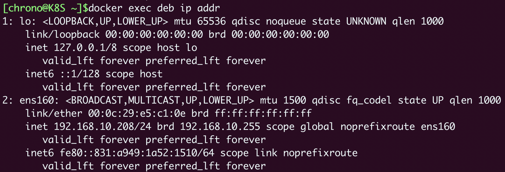
可以看到这两个 ip addr 命令的输出信息是完全一样的，比如都是一个网卡ens160，IP地址是“192.168.10.208”，这就证明Nginx容器确实与本机共享了网络栈。
第三种bridge，也就是桥接模式，它有点类似现实世界里的交换机、路由器，只不过是由软件虚拟出来的，容器和宿主机再通过虚拟网卡接入这个网桥（图中的docker0），那么它们之间也就可以正常的收发网络数据包了。不过和host模式相比，bridge模式多了虚拟网桥和网卡，通信效率会低一些。

和host模式一样，我们也可以用 --net=bridge 来启用桥接模式，但其实并没有这个必要，因为Docker默认的网络模式就是bridge，所以一般不需要显式指定。
下面我们启动两个容器Nginx和Redis，就像刚才说的，没有特殊指定就会使用bridge模式：
docker run -d --rm nginx:alpine # 默认使用桥接模式
docker run -d --rm redis # 默认使用桥接模式
然后我们还是在本机和容器里执行 ip addr 命令（Redis容器里没有ip命令，所以只能在Nginx容器里执行）：
对比一下刚才host模式的输出，就可以发现容器里的网卡设置与宿主机完全不同，eth0是一个虚拟网卡，IP地址是B类私有地址“172.17.0.2”。
我们还可以用 docker inspect 直接查看容器的ip地址：
docker inspect xxx |grep IPAddress

这显示出两个容器的IP地址分别是“172.17.0.2”和“172.17.0.3”，而宿主机的IP地址则是“172.17.0.1”，所以它们都在“172.17.0.0/16”这个Docker的默认网段，彼此之间就能够使用IP地址来实现网络通信了。
如何分配服务端口号
使用host模式或者bridge模式，我们的容器就有了IP地址，建立了与外部世界的网络连接，接下来要解决的就是网络服务的端口号问题。
你一定知道，服务器应用都必须要有端口号才能对外提供服务，比如HTTP协议用80、HTTPS用443、Redis是6379、MySQL是3306。[第4讲]我们在学习编写Dockerfile的时候也看到过，可以用 EXPOSE 指令声明容器对外的端口号。
一台主机上的端口号数量是有限的，而且多个服务之间还不能够冲突，但我们打包镜像应用的时候通常都使用的是默认端口，容器实际运行起来就很容易因为端口号被占用而无法启动。
解决这个问题的方法就是加入一个“中间层”，由容器环境例如Docker来统一管理分配端口号，在本机端口和容器端口之间做一个“映射”操作，容器内部还是用自己的端口号，但外界看到的却是另外一个端口号，这样就很好地避免了冲突。
端口号映射需要使用bridge模式，并且在 docker run 启动容器时使用 -p 参数，形式和共享目录的 -v 参数很类似，用 : 分隔本机端口和容器端口。比如，如果要启动两个Nginx容器，分别跑在80和8080端口上：
docker run -d -p 80:80 --rm nginx:alpine
docker run -d -p 8080:80 --rm nginx:alpine
这样就把本机的80和8080端口分别“映射”到了两个容器里的80端口，不会发生冲突，我们可以用curl再验证一下：

使用 docker ps 命令能够在“PORTS”栏里更直观地看到端口的映射情况：

小结
好了，今天我们一起学习了容器与外部系统之间沟通交流的几种方法。
你会发现，这些方法几乎消除了容器化的应用和本地应用因为隔离特性而产生的差异，而因为镜像独特的打包机制，容器技术显然能够比apt/yum更方便地安装各种应用，绝不会“污染”已有的系统。
今天的课里我列举了Python、Nginx等例子，你还可以举一反三，借鉴它们把本地配置文件加载到容器里适当的位置，再映射端口号，把Redis、MySQL、Node.js都运行起来，让容器成为我们工作中的得力助手。
照例简单小结一下这次的要点：
docker cp命令可以在容器和主机之间互相拷贝文件，适合简单的数据交换。docker run -v命令可以让容器和主机共享本地目录，免去了拷贝操作，提升工作效率。- host网络模式让容器与主机共享网络栈，效率高但容易导致端口冲突。
- bridge网络模式实现了一个虚拟网桥，容器和主机都在一个私有网段内互联互通。
docker run -p命令可以把主机的端口号映射到容器的内部端口号，解决了潜在的端口冲突问题。
课下作业
最后是课下作业时间，给你留两个思考题：
- 你能说出今天学的
docker cp命令和第4讲Dockerfile里的COPY指令有什么区别吗？ - 你觉得host模式和bridge模式各有什么优缺点，在什么场景下应用最合适？
欢迎积极留言讨论，我会第一时间给你回复，如果有收获也欢迎你转发给身边的朋友一起学习。
下节课是实战演练，下节课见。
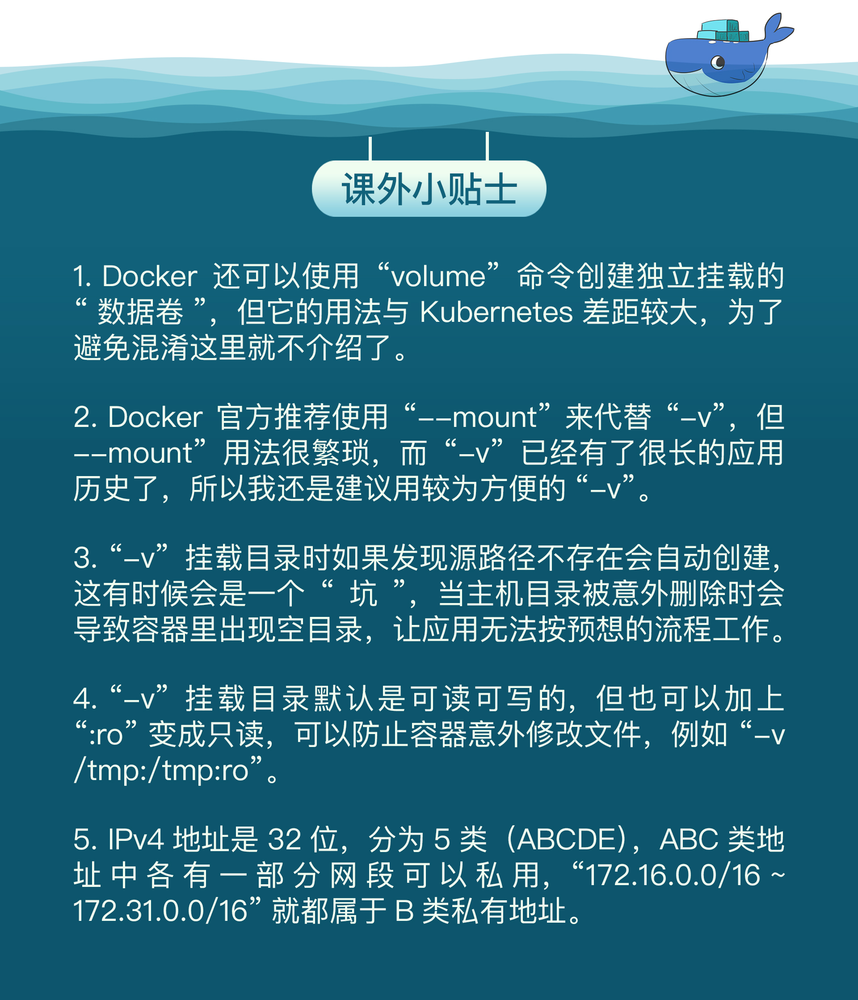
07 实战演练：玩转Docker
你好，我是Chrono。
学到今天的这次课，我们的“入门篇”就算是告一段落了，有这些容器知识作为基础，很快我们就要正式开始学习Kubernetes。不过在那之前，来对前面的课程做一个回顾和实践，把基础再夯实一下。
要提醒你的是，Docker相关的内容很多很广，在入门篇中，我只从中挑选出了一些最基本最有用的介绍给你。而且在我看来，我们不需要完全了解Docker的所有功能，我也不建议你对Docker的内部架构细节和具体的命令行参数做过多的了解，太浪费精力，只要会用够用，需要的时候能够查找官方手册就行。
毕竟我们这门课程的目标是Kubernetes，而Docker只不过是众多容器运行时（Container Runtime）中最出名的一款而已。当然，如果你当前的工作是与Docker深度绑定，那就另当别论了。
好下面我先把容器技术做一个简要的总结，然后演示两个实战项目：使用Docker部署Registry和WordPress。
容器技术要点回顾
容器技术是后端应用领域的一项重大创新，它彻底变革了应用的开发、交付与部署方式，是“云原生”的根本（[01讲]）。
容器基于Linux底层的namespace、cgroup、chroot等功能，虽然它们很早就出现了，但直到Docker“横空出世”，把它们整合在一起，容器才真正走近了大众的视野，逐渐为广大开发者所熟知（[02讲]）。
容器技术中有三个核心概念：容器（Container）、镜像（Image），以及镜像仓库（Registry）（[03讲]）。
从本质上来说，容器属于虚拟化技术的一种，和虚拟机（Virtual Machine）很类似，都能够分拆系统资源，隔离应用进程，但容器更加轻量级，运行效率更高，比虚拟机更适合云计算的需求。
镜像是容器的静态形式，它把应用程序连同依赖的操作系统、配置文件、环境变量等等都打包到了一起，因而能够在任何系统上运行，免除了很多部署运维和平台迁移的麻烦。
镜像内部由多个层（Layer）组成，每一层都是一组文件，多个层会使用Union FS技术合并成一个文件系统供容器使用。这种细粒度结构的好处是相同的层可以共享、复用，节约磁盘存储和网络传输的成本，也让构建镜像的工作变得更加容易（[04讲]）。
为了方便管理镜像，就出现了镜像仓库，它集中存放各种容器化的应用，用户可以任意上传下载，是分发镜像的最佳方式（[05讲]）。
目前最知名的公开镜像仓库是Docker Hub，其他的还有quay.io、gcr.io，我们可以在这些网站上找到许多高质量镜像，集成到我们自己的应用系统中。
容器技术有很多具体的实现，Docker是最初也是最流行的容器技术，它的主要形态是运行在Linux上的“Docker Engine”。我们日常使用的 docker 命令其实只是一个前端工具，它必须与后台服务“Docker daemon”通信才能实现各种功能。
操作容器的常用命令有 docker ps、docker run、docker exec、docker stop 等；操作镜像的常用命令有 docker images、docker rmi、docker build、docker tag 等；操作镜像仓库的常用命令有 docker pull、docker push 等。
好简单地回顾了容器技术，下面我们就来综合运用在“入门篇”所学到的各个知识点，开始实战演练，玩转Docker。
搭建私有镜像仓库
在第5节课讲Docker Hub的时候曾经说过，在离线环境里，我们可以自己搭建私有仓库。但因为镜像仓库是网络服务的形式，当时还没有学到容器网络相关的知识，所以只有到了现在，我们具备了比较完整的Docker知识体系，才能够搭建私有仓库。
私有镜像仓库有很多现成的解决方案，今天我只选择最简单的Docker Registry，而功能更完善的CNCF Harbor留到后续学习Kubernetes时再介绍。
你可以在Docker Hub网站上搜索“registry”，找到它的官方页面（https://registry.hub.docker.com/_/registry/）：

Docker Registry的网页上有很详细的说明，包括下载命令、用法等，我们可以完全照着它来操作。
首先，你需要使用 docker pull 命令拉取镜像：
docker pull registry
然后，我们需要做一个端口映射，对外暴露端口，这样Docker Registry才能提供服务。它的容器内端口是5000，简单起见，我们在外面也使用同样的5000端口，所以运行命令就是 docker run -d -p 5000:5000 registry ：
docker run -d -p 5000:5000 registry
启动Docker Registry之后，你可以使用 docker ps 查看它的运行状态，可以看到它确实把本机的5000端口映射到了容器内的5000端口。

接下来，我们就要使用 docker tag 命令给镜像打标签再上传了。因为上传的目标不是默认的Docker Hub，而是本地的私有仓库，所以镜像的名字前面还必须再加上仓库的地址（域名或者IP地址都行），形式上和HTTP的URL非常像。
比如在这里，我就把“nginx:alpine”改成了“127.0.0.1:5000/nginx:alpine”：
docker tag nginx:alpine 127.0.0.1:5000/nginx:alpine
现在，这个镜像有了一个附加仓库地址的完整名字，就可以用 docker push 推上去了：
docker push 127.0.0.1:5000/nginx:alpine

为了验证是否已经成功推送，我们可以把刚才打标签的镜像删掉，再重新下载：
docker rmi 127.0.0.1:5000/nginx:alpine
docker pull 127.0.0.1:5000/nginx:alpine

这里 docker pull 确实完成了镜像下载任务，不过因为原来的层原本就已经存在，所以不会有实际的下载动作，只会创建一个新的镜像标签。
Docker Registry虽然没有图形界面，但提供了RESTful API，也可以发送HTTP请求来查看仓库里的镜像，具体的端点信息可以参考官方文档（https://docs.docker.com/registry/spec/api/），下面的这两条curl命令就分别获取了镜像列表和Nginx镜像的标签列表：
curl 127.1:5000/v2/_catalog
curl 127.1:5000/v2/nginx/tags/list
可以看到，因为应用被封装到了镜像里，所以我们只用简单的一两条命令就完成了私有仓库的搭建工作，完全不需要复杂的软件安装、环境设置、调试测试等繁琐的操作，这在容器技术出现之前简直是不可想象的。
搭建WordPress网站
Docker Registry应用比较简单，只用单个容器就运行了一个完整的服务，下面我们再来搭建一个有点复杂的WordPress网站。
网站需要用到三个容器：WordPress、MariaDB、Nginx，它们都是非常流行的开源项目，在Docker Hub网站上有官方镜像，网页上的说明也很详细，所以具体的搜索过程我就略过了，直接使用 docker pull 拉取它们的镜像：
docker pull wordpress:5
docker pull mariadb:10
docker pull nginx:alpine
我画了一个简单的网络架构图，你可以直观感受一下它们之间的关系：

这个系统可以说是比较典型的网站了。MariaDB作为后面的关系型数据库，端口号是3306；WordPress是中间的应用服务器，使用MariaDB来存储数据，它的端口是80；Nginx是前面的反向代理，它对外暴露80端口，然后把请求转发给WordPress。
我们先来运行MariaDB。根据说明文档，需要配置“MARIADB_DATABASE”等几个环境变量，用 --env 参数来指定启动时的数据库、用户名和密码，这里我指定数据库是“db”，用户名是“wp”，密码是“123”，管理员密码（root password）也是“123”。
下面就是启动MariaDB的 docker run 命令：
docker run -d --rm \
--env MARIADB_DATABASE=db \
--env MARIADB_USER=wp \
--env MARIADB_PASSWORD=123 \
--env MARIADB_ROOT_PASSWORD=123 \
mariadb:10
启动之后，我们还可以使用 docker exec 命令，执行数据库的客户端工具“mysql”，验证数据库是否正常运行：
docker exec -it 9ac mysql -u wp -p
输入刚才设定的用户名“wp”和密码“123”之后，我们就连接上了MariaDB，可以使用 show databases; 和 show tables; 等命令来查看数据库里的内容。当然，现在肯定是空的。
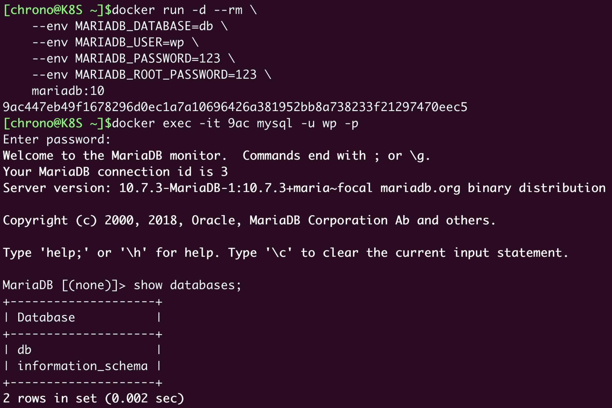
因为Docker的bridge网络模式的默认网段是“172.17.0.0/16”，宿主机固定是“172.17.0.1”，而且IP地址是顺序分配的，所以如果之前没有其他容器在运行的话，MariaDB容器的IP地址应该就是“172.17.0.2”，这可以通过 docker inspect 命令来验证：
docker inspect 9ac |grep IPAddress

现在数据库服务已经正常，该运行应用服务器WordPress了，它也要用 --env 参数来指定一些环境变量才能连接到MariaDB，注意“WORDPRESS_DB_HOST”必须是MariaDB的IP地址，否则会无法连接数据库：
docker run -d --rm \
--env WORDPRESS_DB_HOST=172.17.0.2 \
--env WORDPRESS_DB_USER=wp \
--env WORDPRESS_DB_PASSWORD=123 \
--env WORDPRESS_DB_NAME=db \
wordpress:5
WordPress容器在启动的时候并没有使用 -p 参数映射端口号，所以外界是不能直接访问的，我们需要在前面配一个Nginx反向代理，把请求转发给WordPress的80端口。
配置Nginx反向代理必须要知道WordPress的IP地址，同样可以用 docker inspect 命令查看，如果没有什么意外的话它应该是“172.17.0.3”，所以我们就能够写出如下的配置文件（Nginx的用法可参考其他资料，这里就不展开讲了）：
server {
listen 80;
default_type text/html;
location / {
proxy_http_version 1.1;
proxy_set_header Host $host;
proxy_pass http://172.17.0.3;
}
}
有了这个配置文件，最关键的一步就来了，我们需要用 -p 参数把本机的端口映射到Nginx容器内部的80端口，再用 -v 参数把配置文件挂载到Nginx的“conf.d”目录下。这样，Nginx就会使用刚才编写好的配置文件，在80端口上监听HTTP请求，再转发到WordPress应用：
docker run -d --rm \
-p 80:80 \
-v `pwd`/wp.conf:/etc/nginx/conf.d/default.conf \
nginx:alpine
三个容器都启动之后，我们再用 docker ps 来看看它们的状态：
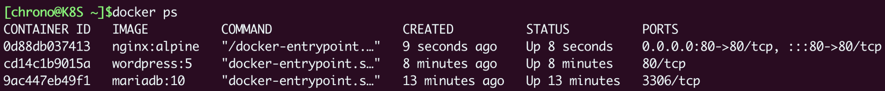
可以看到，WordPress和MariaDB虽然使用了80和3306端口，但被容器隔离，外界不可见，只有Nginx有端口映射，能够从外界的80端口收发数据，网络状态和我们的架构图是一致的。
现在整个系统就已经在容器环境里运行好了，我们来打开浏览器，输入本机的“127.0.0.1”或者是虚拟机的IP地址（我这里是“http://192.168.10.208”），就可以看到WordPress的界面：

在创建基本的用户、初始化网站之后，我们可以再登录MariaDB，看看是否已经有了一些数据：
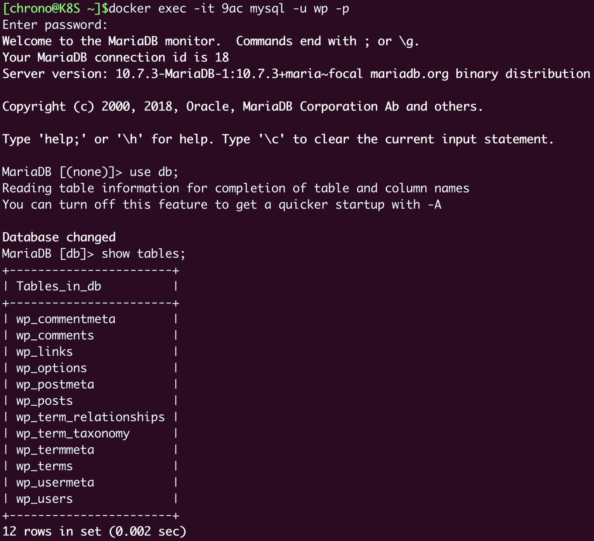
可以看到，WordPress已经在数据库里新建了很多的表，这就证明我们的容器化的WordPress网站搭建成功。
小结
好了，今天我们简单地回顾了一下容器技术，这里有一份思维导图，是对前面所有容器知识要点的总结，你可以对照着用来复习。

我们还使用Docker实际搭建了两个服务：Registry镜像仓库和WordPress网站。
通过这两个项目的实战演练，你应该能够感受到容器化对后端开发带来的巨大改变，它简化了应用的打包、分发和部署，简单的几条命令就可以完成之前需要编写大量脚本才能完成的任务，对于开发、运维来绝对是一个“福音”。
不过，在感受容器便利的同时，你有没有注意到它还是存在一些遗憾呢？比如说：
- 我们还是要手动运行一些命令来启动应用，然后再人工确认运行状态。
- 运行多个容器组成的应用比较麻烦，需要人工干预（如检查IP地址）才能维护网络通信。
- 现有的网络模式功能只适合单机，多台服务器上运行应用、负载均衡该怎么做？
- 如果要增加应用数量该怎么办？这时容器技术完全帮不上忙。
其实，如果我们仔细整理这些运行容器的 docker run 命令，写成脚本，再加上一些Shell、Python编程来实现自动化，也许就能够得到一个勉强可用的解决方案。
这个方案已经超越了容器技术本身，是在更高的层次上规划容器的运行次序、网络连接、数据持久化等应用要素，也就是现在我们常说的“容器编排”（Container Orchestration）的雏形，也正是后面要学习的Kubernetes的主要出发点。
课下作业
最后是课下作业时间，给你留两个思考题：
- 学完了“入门篇”，和刚开始相比，你对容器技术有了哪些更深入的思考和理解？
- 你觉得容器编排应该解决哪些方面的问题？
欢迎积极留言讨论，如果有收获，也欢迎你转发给身边的朋友一起学习。
下节课是视频课，我会用视频直观演示我们前面学过的操作，我们下节课见。-

08 视频：入门篇实操总结
你好，我是Chrono。
今天的课程和前面的不太一样，变成了视频的形式。之前也讲过很多次学习Kubernetes要以动手实操为主，加上专栏里单纯的文字配图的形式还是不太直观，所以每到一个学习阶段，我们就会来一个视频总结，把之前学习的内容以视频的形式展现出来，这样也许会让学习的效果更好。
这次视频课程的主要内容和第7讲差不多，是对“入门篇”的回顾与总结，但侧重点是对Docker的实际操作，不会再重复讲那些理论知识。每个视频后都会附上操作要点，供你快速定位和做笔记。
好了，我们正式开始吧。
一. 熟悉Docker的使用
视频操作要点：
首先来操作一下Docker Engine。
（有了[课前准备]的基础）在这台机器上，Docker已经安装好了，我给你用 docker version 和 docker info 看一下它的信息。
docker version 显示的是Docker Engine 20.10.12，系统是Linux，硬件架构是arm64，也就是Apple M1。
docker info 显示的是当前系统相关的信息，例如CPU、内存、容器数量、镜像数量、容器运行时、存储文件系统等等。这里存储用的文件系统是overlay2，Linux内核是5.13，操作系统是Ubuntu 22.04 Jammy Jellyfish，硬件是aarch64，两个CPU，内存4G。
现在我们用 docker ps 看一下容器列表，应该是空的。
然后用 docker pull 拉取busybox镜像，再用 docker images 看镜像列表。
使用 docker run 启动busybox镜像，执行最简单的hello world：
docker run busybox echo hello world
然后再用 docker ps -a 查看已经结束的容器列表，应该可以看到刚刚运行完毕的Busybox容器，可以用 docker rm 再加上容器ID删除它。
二. 镜像和容器
视频操作要点：
我们再来拉取另一个镜像，操作系统Alpine：
docker pull alpine
然后用 docker run，加上it参数，运行它里面的shell：
docker run -it alpine sh
这样就暂时离开当前的Ubuntu操作系统，进入了容器内部的Alpine系统，可以在里面执行任意的命令，比如 cat /etc/os-release 。
这个容器环境与外面是完全隔离的，进程、文件系统都独立，不过也有没有隔离的部分，比如时间和内核。
使用exit退出容器，然后在宿主机环境执行date、uname -a，你就可以看到它与容器里是一致的。
让我们再运行一个容器：
docker run -d --rm nginx:alpine
在宿主机里用 ps -ef|grep nginx 可以看到有3个Nginx进程，它们其实就是容器里的Nginx进程，用docker stop停止后再用ps，就能发现它们已经消失了。
这就证明，容器其实就是操作系统里的进程，只是被容器运行环境加上了namespace、cgroup、chroot的限制，所以容器和普通进程在资源的使用方面是没有什么区别的，也因为没有虚拟机的成本，启动更迅速，资源利用率也就更高。
三. 构建自己的镜像
视频操作要点：
现在让我们来尝试编写Dockerfile，构建一个自己的镜像。
这个Dockerfile先用arg指令定义了IMAGE_BASE、IMAGE_TAG两个变量，然后使用from指令指定了构建的基础镜像，把这两个变量结合起来就是 nginx:1.21-alpine 。
后面的两个env指令定义了PATH和DEBUG两个环境变量。arg指令定义的变量只能在构建镜像的时候使用，而env定义的变量则会在容器运行的时候以环境变量的形式出现，让进程运行时使用。
接下来是copy指令，它会把构建上下文里的./default.conf拷贝到镜像的/etc/nginx/conf.d/，注意copy指令不能使用绝对路径，必须是构建上下文的相对路径，而且Docker会把构建上下文里的所有文件打包传递给docker daemon，所有尽量只包含必要的文件。
run指令就是构建镜像时要执行的shell命令，可以是安装软件、创建目录、编译程序等等，这里只是简单地用echo命令生成了一个文本文件。
最后两条指令是 expose 和 workdir，expose 是声明容器对外服务的端口号，而 workdir 是容器的工作目录。
了解了Dockerfile的内容之后，我们就要用 docker build 来构建镜像了，使用 -t 打上标签，再加上构建上下文路径，当前目录就用一个点号 .：
docker build -t ngx-app:1.0 .
构建完成，生成镜像文件，我们可以用 docker run 从镜像启动容器，验证镜像里的文件是否正确生成：
docker run -it --rm ngx-app:1.0 sh
然后我们还可以用 docker save/load 命令把它导出成压缩包，方便保存和传输：
docker save ngx-app:1.0 -o ngx.tar
docker load -i ngx.tar
四. 与外部系统互通的操作
视频操作要点：
接下来我们看看容器与外部系统互通的一些操作。
首先是 docker cp 命令。让我们先启动一个Redis容器：
docker run -d --rm redis
然后用 echo 命令生成一个简单的文本文件：
echo 'aaa' > a.txt
用 docker ps 命令看看容器的ID，就可以使用 docker cp 命令把这个文件拷贝进容器里了：
docker cp a.txt 062:/tmp
使用 docker exec 可以进入容器内部，查看文件是否已经正确拷贝：
docker exec -it 062 sh
ls /tmp
退出容器，我们再把这个文件改个名字，拷贝出来：
docker cp 062:/tmp/a.txt ./b.txt
现在我们再看看用 -v 参数直接挂载本地目录，把文件直接映射到容器内部：
docker run -d --rm -v /tmp:/tmp redis
用 docker exec 进入容器，查看一下容器内的“/tmp”目录，应该就可以看到文件与宿主机是完全一致的。
docker exec -it b5a sh # b5a是容器ID
-p 参数是映射本机端口到容器端口，我们启动一个Nginx容器，把本机的80端口映射到容器的80端口：
docker run -d -p 80:80 --rm nginx:alpine
docker ps 可以看到端口的映射情况，我们也可以使用curl直接访问容器里的Nginx服务：
curl 127.1:80 -I
再使用exec就可以看到容器里的网卡情况：
docker exec xxx ip addr
可以发现容器里的网卡设置与宿主机完全不同，eth0是一个虚拟网卡，IP地址是B类私有地址“172.17.0.2”。
五. 搭建WordPress
视频操作要点：
最后演示一下使用Docker搭建WordPress的过程。
因为在Docker命令里写环境变量很麻烦，命令很长，所以我把搭建的过程写成了一个脚本。
一共有三条命令，首先启动MariaDB，设置数据库名、用户名、密码等环境变量，然后启动WordPress，使用刚才的MariaDB的用户名、密码，db_host必须是MariaDB的IP地址，然后再启动Nginx，它需要在配置文件里指定WordPress的地址，然后用-v参数挂载进容器里。
执行这个脚本之后，我们用 docker ps 看一下容器的状态。
确认容器都运行正常，我们就可以在浏览器里输入IP地址，访问WordPress网站了。
课下作业
今天是动手操作课，作业就是一定记得让自己实际上手操作一遍哦。
欢迎在留言区分享自己的实操感受，如果有什么疑问也欢迎留言分享参与讨论。我们下节课初级篇见。
09 走近云原生：如何在本机搭建小巧完备的Kubernetes环境
你好，我是Chrono。
在前面的“入门篇”里，我们学习了以Docker为代表的容器技术，做好了充分的准备，那么今天我们就来看看什么是容器编排、什么是Kubernetes，还有应该怎么在自己的电脑上搭建出一个小巧完善的Kubernetes环境，一起走近云原生。
什么是容器编排
容器技术的核心概念是容器、镜像、仓库，使用这三大基本要素我们就可以轻松地完成应用的打包、分发工作，实现“一次开发，到处运行”的梦想。
不过，当我们熟练地掌握了容器技术，信心满满地要在服务器集群里大规模实施的时候，却会发现容器技术的创新只是解决了运维部署工作中一个很小的问题。现实生产环境的复杂程度实在是太高了，除了最基本的安装，还会有各式各样的需求，比如服务发现、负载均衡、状态监控、健康检查、扩容缩容、应用迁移、高可用等等。

虽然容器技术开启了云原生时代，但它也只走出了一小步，再继续前进就无能为力了，因为这已经不再是隔离一两个进程的普通问题，而是要隔离数不清的进程，还有它们之间互相通信、互相协作的超级问题，困难程度可以说是指数级别的上升。
这些容器之上的管理、调度工作，就是这些年最流行的词汇：“容器编排”（Container Orchestration）。
容器编排这个词听起来好像挺高大上，但如果你理解了之后就会发现其实也并不神秘。像我们在上次课里使用Docker部署WordPress网站的时候，把Nginx、WordPress、MariaDB这三个容器理清次序、配好IP地址去运行，就是最初级的一种“容器编排”，只不过这是纯手工操作，比较原始、粗糙。
面对单机上的几个容器，“人肉”编排调度还可以应付，但如果规模上到几百台服务器、成千上万的容器，处理它们之间的复杂联系就必须要依靠计算机了，而目前计算机用来调度管理的“事实标准”，就是我们专栏的主角：Kubernetes。
什么是Kubernetes
现在大家谈到容器都会说是Docker，但其实早在Docker之前，Google在公司内部就使用了类似的技术（cgroup就是Google开发再提交给Linux内核的），只不过不叫容器。
作为世界上最大的搜索引擎，Google拥有数量庞大的服务器集群，为了提高资源利用率和部署运维效率，它专门开发了一个集群应用管理系统，代号Borg，在底层支持整个公司的运转。
2014年，Google内部系统要“升级换代”，从原来的Borg切换到Omega，于是按照惯例，Google会发表公开论文。
因为之前在发表MapReduce、BigTable、GFS时吃过亏（被Yahoo开发的Hadoop占领了市场），所以Google决定借着Docker的“东风”，在发论文的同时，把C++开发的Borg系统用Go语言重写并开源，于是Kubernetes就这样诞生了。

由于Kubernetes背后有Borg系统十多年生产环境经验的支持，技术底蕴深厚，理论水平也非常高，一经推出就引起了轰动。然后在2015年，Google又联合Linux基金会成立了CNCF（Cloud Native Computing Foundation，云原生基金会），并把Kubernetes捐献出来作为种子项目。
有了Google和Linux这两大家族的保驾护航，再加上宽容开放的社区，作为CNCF的“头把交椅”，Kubernetes旗下很快就汇集了众多行业精英，仅用了两年的时间就打败了同期的竞争对手Apache Mesos和Docker Swarm，成为了这个领域的唯一霸主。
那么，Kubernetes到底能够为我们做什么呢？
简单来说，Kubernetes就是一个生产级别的容器编排平台和集群管理系统，不仅能够创建、调度容器，还能够监控、管理服务器，它凝聚了Google等大公司和开源社区的集体智慧，从而让中小型公司也可以具备轻松运维海量计算节点——也就是“云计算”的能力。
什么是minikube
Kubernetes一般都运行在大规模的计算集群上，管理很严格，这就对我们个人来说造成了一定的障碍，没有实际操作环境怎么能够学好用好呢？
好在Kubernetes充分考虑到了这方面的需求，提供了一些快速搭建Kubernetes环境的工具，在官网（https://kubernetes.io/zh/docs/tasks/tools/）上推荐的有两个：kind和minikube，它们都可以在本机上运行完整的Kubernetes环境。
我说一下对这两个工具的个人看法，供你参考。
kind基于Docker，意思是“Kubernetes in Docker”。它功能少，用法简单，也因此运行速度快，容易上手。不过它缺少很多Kubernetes的标准功能，例如仪表盘、网络插件，也很难定制化，所以我认为它比较适合有经验的Kubernetes用户做快速开发测试，不太适合学习研究。
不选kind还有一个原因，它的名字与Kubernetes YAML配置里的字段 kind 重名，会对初学者造成误解，干扰学习。
再来看minikube，从名字就能够看出来，它是一个“迷你”版本的Kubernetes，自从2016年发布以来一直在积极地开发维护，紧跟Kubernetes的版本更新，同时也兼容较旧的版本（最多只到之前的6个小版本）。
minikube最大特点就是“小而美”，可执行文件仅有不到100MB，运行镜像也不过1GB，但就在这么小的空间里却集成了Kubernetes的绝大多数功能特性，不仅有核心的容器编排功能，还有丰富的插件，例如Dashboard、GPU、Ingress、Istio、Kong、Registry等等，综合来看非常完善。
所以，我建议你在这个专栏里选择minikube来学习Kubernetes。
如何搭建minikube环境
minikube支持Mac、Windows、Linux这三种主流平台，你可以在它的官网（https://minikube.sigs.k8s.io）找到详细的安装说明，当然在我们这里就只用虚拟机里的Linux了。
minikube的最新版本是1.25.2，支持的Kubernetes版本是1.23.3，所以我们就选定它作为我们初级篇的学习工具。
minikube不包含在系统自带的apt/yum软件仓库里，我们只能自己去网上找安装包。不过因为它是用Go语言开发的，整体就是一个二进制文件，没有多余的依赖，所以安装过程也非常简单，只需要用curl或者wget下载就行。
minikube的官网提供了各种系统的安装命令，通常就是下载、拷贝这两步，不过你需要注意一下本机电脑的硬件架构，Intel芯片要选择带“amd64”后缀，Apple M1芯片要选择“arm64”后缀，选错了就会因为CPU指令集不同而无法运行：

我也把官网上Linux系统安装的命令抄在了这里，你可以直接拷贝后安装：
# Intel x86_64
curl -Lo minikube https://storage.googleapis.com/minikube/releases/latest/minikube-linux-amd64
# Apple arm64
curl -Lo minikube https://storage.googleapis.com/minikube/releases/latest/minikube-linux-arm64
sudo install minikube /usr/local/bin/
安装完成之后，你可以执行命令 minikube version，看看它的版本号，验证是否安装成功：
minikube version
不过minikube只能够搭建Kubernetes环境，要操作Kubernetes，还需要另一个专门的客户端工具“kubectl”。
kubectl的作用有点类似之前我们学习容器技术时候的工具“docker”，它也是一个命令行工具，作用也比较类似，同样是与Kubernetes后台服务通信，把我们的命令转发给Kubernetes，实现容器和集群的管理功能。
kubectl是一个与Kubernetes、minikube彼此独立的项目，所以不包含在minikube里，但minikube提供了安装它的简化方式，你只需执行下面的这条命令：
minikube kubectl
它就会把与当前Kubernetes版本匹配的kubectl下载下来，存放在内部目录（例如 .minikube/cache/linux/arm64/v1.23.3），然后我们就可以使用它来对Kubernetes“发号施令”了。
所以，在minikube环境里，我们会用到两个客户端：minikube管理Kubernetes集群环境，kubectl操作实际的Kubernetes功能，和Docker比起来有点复杂。
我画了一个简单的minikube环境示意图，方便你理解它们的关系。
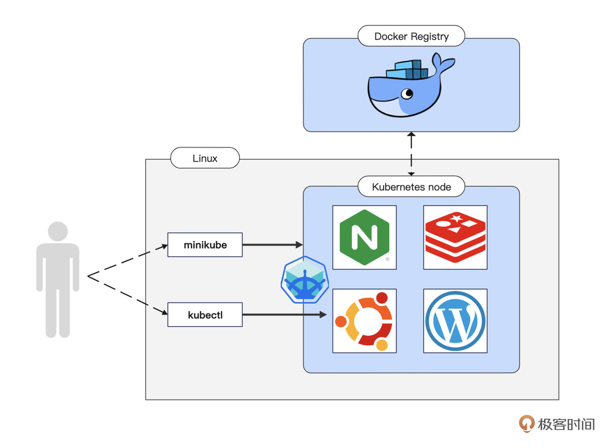
实际验证minikube环境
前面的工作都做完之后，我们就可以在本机上运行minikube，创建Kubernetes实验环境了。
使用命令 minikube start 会从Docker Hub上拉取镜像，以当前最新版本的Kubernetes启动集群。不过为了保证实验环境的一致性，我们可以在后面再加上一个参数 --kubernetes-version，明确指定要使用Kubernetes版本。
这里我使用“1.23.3”，启动命令就是：
minikube start --kubernetes-version=v1.23.3

（它的启动过程使用了比较活泼的表情符号，可能是想表现得平易近人吧，如果不喜欢也可以调整设置关闭它。）
现在Kubernetes集群就已经在我们本地运行了，你可以使用 minikube status、minikube node list这两个命令来查看集群的状态：
minikube status
minikube node list
从截图里可以看到，Kubernetes集群里现在只有一个节点，名字就叫“minikube”，类型是“Control Plane”，里面有host、kubelet、apiserver三个服务，IP地址是192.168.49.2。
你还可以用命令 minikube ssh 登录到这个节点上，虽然它是虚拟的，但用起来和实机也没什么区别：
有了集群，接下来我们就可以使用kubectl来操作一下，初步体会Kubernetes这个容器编排系统，最简单的命令当然就是查看版本：
kubectl version
不过这条命令还不能直接用，因为使用minikube自带的kubectl有一点形式上的限制，要在前面加上minikube的前缀，后面再有个 --，像这样：
minikube kubectl -- version
为了避免这个不大不小的麻烦，我建议你使用Linux的“alias”功能，为它创建一个别名，写到当前用户目录下的 .bashrc 里，也就是这样：
alias kubectl="minikube kubectl --"
另外，kubectl还提供了命令自动补全的功能，你还应该再加上“kubectl completion”：
source <(kubectl completion bash)
现在，我们就可以愉快地使用kubectl了：
下面我们在Kubernetes里运行一个Nginx应用，命令与Docker一样，也是 run，不过形式上有点区别，需要用 --image 指定镜像，然后Kubernetes会自动拉取并运行：
kubectl run ngx --image=nginx:alpine
这里涉及Kubernetes里的一个非常重要的概念：Pod，你可以暂时把它理解成是“穿了马甲”的容器，查看Pod列表需要使用命令 kubectl get pod，它的效果类似 docker ps：
命令执行之后可以看到，在Kubernetes集群里就有了一个名字叫ngx的Pod正在运行，表示我们的这个单节点minikube环境已经搭建成功。
小结
好了，今天我们先了解了容器编排概念和Kubernetes的历史，然后在Linux虚拟机上安装了minikube和kubectl，运行了一个简单但完整的Kubernetes集群，实现了与云原生的“第一次亲密接触”。
那什么是云原生呢？这在CNCF上有明确的定义，不过我觉得太学术化了，我也不想机械重复，就讲讲我自己的通俗理解吧。
所谓的“云”，现在就指的是Kubernetes，那么“云原生”的意思就是应用的开发、部署、运维等一系列工作都要向Kubernetes看齐，使用容器、微服务、声明式API等技术，保证应用的整个生命周期都能够在Kubernetes环境里顺利实施，不需要附加额外的条件。
换句话说，“云原生”就是Kubernetes里的“原住民”，而不是从其他环境迁过来的“移民”。
最后照例小结一下今天的内容：
- 容器技术只解决了应用的打包、安装问题，面对复杂的生产环境就束手无策了，解决之道就是容器编排，它能够组织管理各个应用容器之间的关系，让它们顺利地协同运行。
- Kubernetes源自Google内部的Borg系统，也是当前容器编排领域的事实标准。minikube可以在本机搭建Kubernetes环境，功能很完善，适合学习研究。
- 操作Kubernetes需要使用命令行工具kubectl，只有通过它才能与Kubernetes集群交互。
- kubectl的用法与docker类似，也可以拉取镜像运行，但操作的不是简单的容器，而是Pod。
另外还要说一下Kubernetes的官网（https://kubernetes.io/zh/），里面有非常详细的文档，包括概念解释、入门教程、参考手册等等，最难得的是它有全中文版本，我们阅读起来完全不会有语言障碍，希望你有时间多上去看看，及时获取官方第一手知识。
课下作业
最后是课下作业时间，给你留两个思考题：
- 你是怎么理解容器编排和Kubernetes的？它们应该能够解决什么问题？
- 你认为Kubernetes和Docker之间有什么区别？
欢迎积极留言参与讨论，觉得有收获也欢迎你转发给朋友一起学习，我们下节课见。

10 自动化的运维管理：探究Kubernetes工作机制的奥秘
你好，我是Chrono。
在上一次课里，我们看到容器技术只实现了应用的打包分发，到运维真正落地实施的时候仍然会遇到很多困难，所以就需要用容器编排技术来解决这些问题，而Kubernetes是这个领域的唯一霸主，已经成为了“事实标准”。
那么，Kubernetes凭什么能担当这样的领军重任呢？难道仅仅因为它是由Google主导开发的吗？
今天我就带你一起来看看Kubernetes的内部架构和工作机制，了解它能够傲视群雄的秘密所在。
云计算时代的操作系统
前面我曾经说过，Kubernetes是一个生产级别的容器编排平台和集群管理系统，能够创建、调度容器，监控、管理服务器。
容器是什么？容器是软件，是应用，是进程。服务器是什么？服务器是硬件，是CPU、内存、硬盘、网卡。那么，既可以管理软件，也可以管理硬件，这样的东西应该是什么？
你也许会脱口而出：这就是一个操作系统（Operating System）！
没错，从某种角度来看，Kubernetes可以说是一个集群级别的操作系统，主要功能就是资源管理和作业调度。但Kubernetes不是运行在单机上管理单台计算资源和进程，而是运行在多台服务器上管理几百几千台的计算资源，以及在这些资源上运行的上万上百万的进程，规模要大得多。

所以，你可以把Kubernetes与Linux对比起来学习，而这个新的操作系统里自然会有一系列新名词、新术语，你也需要使用新的思维方式来考虑问题，必要的时候还得和过去的习惯“说再见”。
Kubernetes这个操作系统与Linux还有一点区别你值得注意。Linux的用户通常是两类人：Dev和Ops，而在Kubernetes里则只有一类人：DevOps。
在以前的应用实施流程中，开发人员和运维人员分工明确，开发完成后需要编写详细的说明文档，然后交给运维去部署管理，两者之间不能随便“越线”。
而在Kubernetes这里，开发和运维的界限变得不那么清晰了。由于云原生的兴起，开发人员从一开始就必须考虑后续的部署运维工作，而运维人员也需要在早期介入开发，才能做好应用的运维监控工作。
这就会导致很多Kubernetes的新用户会面临身份的转变，一开始可能会有点困难。不过不用担心，这也非常正常，任何的学习过程都有个适应期，只要过了最初的概念理解阶段就好了。
Kubernetes的基本架构
操作系统的一个重要功能就是抽象，从繁琐的底层事务中抽象出一些简洁的概念，然后基于这些概念去管理系统资源。
Kubernetes也是这样，它的管理目标是大规模的集群和应用，必须要能够把系统抽象到足够高的层次，分解出一些松耦合的对象，才能简化系统模型，减轻用户的心智负担。
所以，Kubernetes扮演的角色就如同一个“大师级别”的系统管理员，具有丰富的集群运维经验，独创了自己的一套工作方式，不需要太多的外部干预，就能够自主实现原先许多复杂的管理工作。
下面我们就来看看这位资深管理员的“内功心法”。
Kubernetes官网上有一张架构图，但我觉得不是太清晰、重点不突出，所以另外找了一份（图片来源）。虽然这张图有点“老”，但对于我们初学Kubernetes还是比较合适的。

Kubernetes采用了现今流行的“控制面/数据面”（Control Plane / Data Plane）架构，集群里的计算机被称为“节点”（Node），可以是实机也可以是虚机，少量的节点用作控制面来执行集群的管理维护工作，其他的大部分节点都被划归数据面，用来跑业务应用。
控制面的节点在Kubernetes里叫做Master Node，一般简称为Master，它是整个集群里最重要的部分，可以说是Kubernetes的大脑和心脏。
数据面的节点叫做Worker Node，一般就简称为Worker或者Node，相当于Kubernetes的手和脚，在Master的指挥下干活。
Node的数量非常多，构成了一个资源池，Kubernetes就在这个池里分配资源，调度应用。因为资源被“池化”了，所以管理也就变得比较简单，可以在集群中任意添加或者删除节点。
在这张架构图里，我们还可以看到有一个kubectl，它就是Kubernetes的客户端工具，用来操作Kubernetes，但它位于集群之外，理论上不属于集群。
你可以使用命令 kubectl get node 来查看Kubernetes的节点状态：
kubectl get node
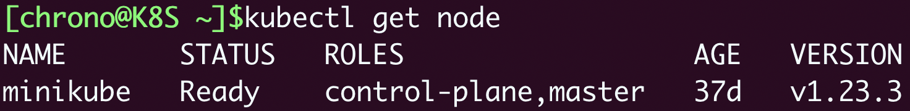
可以看到当前的minikube集群里只有一个Master，那Node怎么不见了？
这是因为Master和Node的划分不是绝对的。当集群的规模较小，工作负载较少的时候，Master也可以承担Node的工作，就像我们搭建的minikube环境，它就只有一个节点，这个节点既是Master又是Node。
节点内部的结构
Kubernetes的节点内部也具有复杂的结构，是由很多的模块构成的，这些模块又可以分成组件（Component）和插件（Addon）两类。
组件实现了Kubernetes的核心功能特性，没有这些组件Kubernetes就无法启动，而插件则是Kubernetes的一些附加功能，属于“锦上添花”，不安装也不会影响Kubernetes的正常运行。
接下来我先来讲讲Master和Node里的组件，然后再捎带提一下插件，理解了它们的工作流程，你就会明白为什么Kubernetes有如此强大的自动化运维能力。
Master里的组件有哪些
Master里有4个组件，分别是apiserver、etcd、scheduler、controller-manager。

apiserver是Master节点——同时也是整个Kubernetes系统的唯一入口，它对外公开了一系列的RESTful API，并且加上了验证、授权等功能，所有其他组件都只能和它直接通信，可以说是Kubernetes里的联络员。
etcd是一个高可用的分布式Key-Value数据库，用来持久化存储系统里的各种资源对象和状态，相当于Kubernetes里的配置管理员。注意它只与apiserver有直接联系，也就是说任何其他组件想要读写etcd里的数据都必须经过apiserver。
scheduler负责容器的编排工作，检查节点的资源状态，把Pod调度到最适合的节点上运行，相当于部署人员。因为节点状态和Pod信息都存储在etcd里，所以scheduler必须通过apiserver才能获得。
controller-manager负责维护容器和节点等资源的状态，实现故障检测、服务迁移、应用伸缩等功能，相当于监控运维人员。同样地，它也必须通过apiserver获得存储在etcd里的信息，才能够实现对资源的各种操作。
这4个组件也都被容器化了，运行在集群的Pod里，我们可以用kubectl来查看它们的状态，使用命令：
kubectl get pod -n kube-system
注意命令行里要用 -n kube-system 参数，表示检查“kube-system”名字空间里的Pod，至于名字空间是什么，我们后面会讲到。
Node里的组件有哪些
Master里的apiserver、scheduler等组件需要获取节点的各种信息才能够作出管理决策，那这些信息该怎么来呢？
这就需要Node里的3个组件了，分别是kubelet、kube-proxy、container-runtime。
kubelet是Node的代理，负责管理Node相关的绝大部分操作，Node上只有它能够与apiserver通信，实现状态报告、命令下发、启停容器等功能，相当于是Node上的一个“小管家”。
kube-proxy的作用有点特别，它是Node的网络代理，只负责管理容器的网络通信，简单来说就是为Pod转发TCP/UDP数据包，相当于是专职的“小邮差”。
第三个组件container-runtime我们就比较熟悉了，它是容器和镜像的实际使用者，在kubelet的指挥下创建容器，管理Pod的生命周期，是真正干活的“苦力”。

我们一定要注意，因为Kubernetes的定位是容器编排平台，所以它没有限定container-runtime必须是Docker，完全可以替换成任何符合标准的其他容器运行时，例如containerd、CRI-O等等，只不过在这里我们使用的是Docker。
这3个组件中只有kube-proxy被容器化了，而kubelet因为必须要管理整个节点，容器化会限制它的能力，所以它必须在container-runtime之外运行。
使用 minikube ssh 命令登录到节点后，可以用 docker ps 看到kube-proxy：
minikube ssh
docker ps |grep kube-proxy
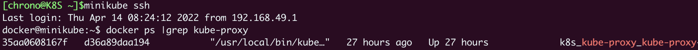
而kubelet用 docker ps 是找不到的，需要用操作系统的 ps 命令：
ps -ef|grep kubelet

现在，我们再把Node里的组件和Master里的组件放在一起来看，就能够明白Kubernetes的大致工作流程了：
- 每个Node上的kubelet会定期向apiserver上报节点状态，apiserver再存到etcd里。
- 每个Node上的kube-proxy实现了TCP/UDP反向代理，让容器对外提供稳定的服务。
- scheduler通过apiserver得到当前的节点状态，调度Pod，然后apiserver下发命令给某个Node的kubelet，kubelet调用container-runtime启动容器。
- controller-manager也通过apiserver得到实时的节点状态，监控可能的异常情况，再使用相应的手段去调节恢复。
其实，这和我们在Kubernetes出现之前的操作流程也差不了多少，但Kubernetes的高明之处就在于把这些都抽象化规范化了。
于是，这些组件就好像是无数个不知疲倦的运维工程师，把原先繁琐低效的人力工作搬进了高效的计算机里，就能够随时发现集群里的变化和异常，再互相协作，维护集群的健康状态。
插件（Addons）有哪些
只要服务器节点上运行了apiserver、scheduler、kubelet、kube-proxy、container-runtime等组件，就可以说是一个功能齐全的Kubernetes集群了。
不过就像Linux一样，操作系统提供的基础功能虽然“可用”，但想达到“好用”的程度，还是要再安装一些附加功能，这在Kubernetes里就是插件（Addon）。
由于Kubernetes本身的设计非常灵活，所以就有大量的插件用来扩展、增强它对应用和集群的管理能力。
minikube也支持很多的插件，使用命令 minikube addons list 就可以查看插件列表：
minikube addons list

插件中我个人认为比较重要的有两个：DNS和Dashboard。
DNS你应该比较熟悉吧，它在Kubernetes集群里实现了域名解析服务，能够让我们以域名而不是IP地址的方式来互相通信，是服务发现和负载均衡的基础。由于它对微服务、服务网格等架构至关重要，所以基本上是Kubernetes的必备插件。
Dashboard就是仪表盘，为Kubernetes提供了一个图形化的操作界面，非常直观友好，虽然大多数Kubernetes工作都是使用命令行kubectl，但有的时候在Dashboard上查看信息也是挺方便的。
你只要在minikube环境里执行一条简单的命令，就可以自动用浏览器打开Dashboard页面，而且还支持中文：
minikube dashboard

小结
好了，今天我们一起来研究了Kubernetes的内部架构和工作机制，可以看到它的功能非常完善，实现了大部分常见的运维管理工作，而且是全自动化的，能够节约大量的人力成本。
由于Kubernetes的抽象程度比较高，有很多陌生的新术语，不太好理解，所以我画了一张思维导图，你可以对照着再加深理解。
最后小结一下今天的要点：
- Kubernetes能够在集群级别管理应用和服务器，可以认为是一种集群操作系统。它使用“控制面/数据面”的基本架构，Master节点实现管理控制功能，Worker节点运行具体业务。
- Kubernetes由很多模块组成，可分为核心的组件和选配的插件两类。
- Master里有4个组件，分别是apiserver、etcd、scheduler、controller-manager。
- Node里有3个组件，分别是kubelet、kube-proxy、container-runtime。
- 通常必备的插件有DNS和Dashboard。
课下作业
最后是课下作业时间，给你留两个思考题：
- 你觉得Kubernetes算得上是一种操作系统吗？和真正的操作系统相比有什么差异？
- 说说你理解的Kubernetes组件的作用，你觉得哪几个最重要？
欢迎积极留言或者提问，和其他同学一起参与讨论，我们下节课见。

11 YAML：Kubernetes世界里的通用语
你好，我是Chrono。
在上次课里，我们一起研究了Kubernetes的内部架构和组成，知道它分为控制面和数据面。控制面管理集群，数据面跑业务应用，节点内部又有apiserver、etcd、scheduler、kubelet、kube-proxy等组件，它们互相协作来维护整个集群的稳定运行。
这套独特的Master/Node架构是Kubernetes得以安身立命的根本，但仅依靠这套“内功心法”是不是就能够随意仗剑走天涯了呢？
显然不行。就像许多武侠、玄幻作品里的人物一样，Kubernetes也需要一份“招式秘籍”才能把自己的“内功”完全发挥出来，只有内外兼修才能够达到笑傲江湖的境界。
而这份“招式秘籍”，就是Kubernetes世界里的标准工作语言YAML，所以今天，我就来讲讲为什么要有YAML、它是个什么样子、该怎么使用。
声明式与命令式是怎么回事
Kubernetes使用的YAML语言有一个非常关键的特性，叫“声明式”（Declarative），对应的有另外一个词：“命令式”（Imperative）。
所以在详细了解YAML之前，我们得先来看看“声明式”与“命令式”这两种工作方式，它们在计算机世界里的关系有点像小说里的“剑宗”与“气宗”。
我们在入门篇里学习的Docker命令和Dockerfile就属于“命令式”，大多数编程语言也属于命令式，它的特点是交互性强，注重顺序和过程，你必须“告诉”计算机每步该做什么，所有的步骤都列清楚，这样程序才能够一步步走下去，最后完成任务，显得计算机有点“笨”。
“声明式”，在Kubernetes出现之前比较少见，它与“命令式”完全相反，不关心具体的过程，更注重结果。我们不需要“教”计算机该怎么做，只要告诉它一个目标状态，它自己就会想办法去完成任务，相比起来自动化、智能化程度更高。
这两个概念比较抽象，不太好理解，也是Kubernetes初学者经常遇到的障碍之一。Kubernetes官网上特意以空调为例，解说“声明式”的原理，但我感觉还是没有说得太清楚，所以这里我就再以“打车”来形象地解释一下“命令式”和“声明式”的区别。
假设你要打车去高铁站，但司机不熟悉路况，你就只好不厌其烦地告诉他该走哪条路、在哪个路口转向、在哪里进出主路、停哪个站口。虽然最后到达了目的地，但这一路上也费了很多口舌，发出了无数的“命令”。很显然，这段路程就属于“命令式”。
现在我们来换一种方式，同样是去高铁站，但司机经验丰富，他知道哪里有拥堵、哪条路的红绿灯多、哪段路有临时管控、哪里可以抄小道，此时你再多嘴无疑会干扰他的正常驾驶，所以，你只要给他一个“声明”：我要去高铁站，接下来就可以舒舒服服地躺在后座上休息，顺利到达目的地了。
在这个“打车”的例子里，Kubernetes就是这样的一位熟练的司机，Master/Node架构让它对整个集群的状态了如指掌，内部的众多组件和插件也能够自动监控管理应用。
这个时候我们再用“命令式”跟它打交道就不太合适了，因为它知道的信息比我们更多更全面，不需要我们这个外行去指导它这个内行，所以我们最好是做一个“甩手掌柜”，用“声明式”把任务的目标告诉它，比如使用哪个镜像、什么时候运行，让它自己去处理执行过程中的细节。
那么，该用什么方式去给Kubernetes发出一个“声明”呢？
容器技术里的Shell脚本和Dockerfile可以很好地描述“命令式”，但对于“声明式”就不太合适了，这个时候，我们需要使用专门的YAML语言。
什么是YAML
YAML语言创建于2001年，比XML晚了三年。XML你应该知道吧，它是一种类似HTML的标签式语言，有很多繁文缛节。而YAML虽然在名字上模仿了XML，但实质上与XML完全不同，更适合人类阅读，计算机解析起来也很容易。
YAML的官网（https://yaml.org/）有对语言规范的完整介绍，所以我就不在这里列举语言的细节了，只讲一些与Kubernetes相关的要点，帮助你快速掌握。
你需要知道，YAML是JSON的超集，支持整数、浮点数、布尔、字符串、数组和对象等数据类型。也就是说，任何合法的JSON文档也都是YAML文档，如果你了解JSON，那么学习YAML会容易很多。
但和JSON比起来，YAML的语法更简单，形式也更清晰紧凑，比如：
- 使用空白与缩进表示层次（有点类似Python），可以不使用花括号和方括号。
- 可以使用
#书写注释，比起JSON是很大的改进。 - 对象（字典）的格式与JSON基本相同，但Key不需要使用双引号。
- 数组（列表）是使用
-开头的清单形式（有点类似MarkDown）。 - 表示对象的
:和表示数组的-后面都必须要有空格。 - 可以使用
---在一个文件里分隔多个YAML对象。
下面我们来看几个YAML的简单示例。
首先是数组，它使用 - 列出了三种操作系统：
# YAML数组(列表)
OS:
- linux
- macOS
- Windows
这段YAML对应的JSON如下：
{
"OS": ["linux", "macOS", "Windows"]
}
对比可以看到YAML形式上很简单，没有闭合花括号、方括号的麻烦，每个元素后面也不需要逗号。
再来看一个YAML对象，声明了1个Master节点，3个Worker节点：
# YAML对象(字典)
Kubernetes:
master: 1
worker: 3
它等价的JSON如下：
{
"Kubernetes": {
"master": 1,
"worker": 3
}
}
注意到了吗YAML里的Key都不需要使用双引号，看起来更舒服。
把YAML的数组、对象组合起来，我们就可以描述出任意的Kubernetes资源对象，第三个例子略微复杂点，你可以自己尝试着解释一下：
# 复杂的例子，组合数组和对象
Kubernetes:
master:
- apiserver: running
- etcd: running
node:
- kubelet: running
- kube-proxy: down
- container-runtime: [docker, containerd, cri-o]
关于YAML语言的其他知识点我就不再一一细说了，都整理在了这张图里，你可以参考YAML官网，在今后的课程中慢慢体会。

什么是API对象
学到这里还不够，因为YAML语言只相当于“语法”，要与Kubernetes对话，我们还必须有足够的“词汇”来表示“语义”。
那么应该声明Kubernetes里的哪些东西，才能够让Kubernetes明白我们的意思呢？
作为一个集群操作系统，Kubernetes归纳总结了Google多年的经验，在理论层面抽象出了很多个概念，用来描述系统的管理运维工作，这些概念就叫做“API对象”。说到这个名字，你也许会联想到上次课里讲到的Kubernetes组件apiserver。没错，它正是来源于此。
因为apiserver是Kubernetes系统的唯一入口，外部用户和内部组件都必须和它通信，而它采用了HTTP协议的URL资源理念，API风格也用RESTful的GET/POST/DELETE等等，所以，这些概念很自然地就被称为是“API对象”了。
那都有哪些API对象呢？
你可以使用 kubectl api-resources 来查看当前Kubernetes版本支持的所有对象：
kubectl api-resources

在输出的“NAME”一栏，就是对象的名字，比如ConfigMap、Pod、Service等等，第二栏“SHORTNAMES”则是这种资源的简写，在我们使用kubectl命令的时候很有用，可以少敲几次键盘，比如Pod可以简写成po，Service可以简写成svc。
在使用kubectl命令的时候，你还可以加上一个参数 --v=9，它会显示出详细的命令执行过程，清楚地看到发出的HTTP请求，比如：
kubectl get pod --v=9

从截图里可以看到，kubectl客户端等价于调用了curl，向8443端口发送了HTTP GET 请求，URL是 /api/v1/namespaces/default/pods。
目前的Kubernetes 1.23版本有50多种API对象，全面地描述了集群的节点、应用、配置、服务、账号等等信息，apiserver会把它们都存储在数据库etcd里，然后kubelet、scheduler、controller-manager等组件通过apiserver来操作它们，就在API对象这个抽象层次实现了对整个集群的管理。
如何描述API对象
现在我们就来看看如何以YAML语言，使用“声明式”在Kubernetes里描述并创建API对象。
之前我们运行Nginx的命令你还记得吗？使用的是 kubectl run，和Docker一样是“命令式”的：
kubectl run ngx --image=nginx:alpine
我们来把它改写成“声明式”的YAML，说清楚我们想要的Nginx应用是个什么样子，也就是“目标状态”，让Kubernetes自己去决定如何拉取镜像运行：
apiVersion: v1
kind: Pod
metadata:
name: ngx-pod
labels:
env: demo
owner: chrono
spec:
containers:
- image: nginx:alpine
name: ngx
ports:
- containerPort: 80
有了刚才YAML语言知识“打底”，相信你基本上能够把它看明白，知道它是一个Pod，要使用nginx:alpine镜像创建一个容器，开放端口80，而其他的部分，就是Kubernetes对API对象强制的格式要求了。
因为API对象采用标准的HTTP协议，为了方便理解，我们可以借鉴一下HTTP的报文格式，把API对象的描述分成“header”和“body”两部分。
“header”包含的是API对象的基本信息，有三个字段：apiVersion、kind、metadata。
apiVersion表示操作这种资源的API版本号，由于Kubernetes的迭代速度很快，不同的版本创建的对象会有差异，为了区分这些版本就需要使用apiVersion这个字段，比如v1、v1alpha1、v1beta1等等。
kind表示资源对象的类型，这个应该很好理解，比如Pod、Node、Job、Service等等。
metadata这个字段顾名思义，表示的是资源的一些“元信息”，也就是用来标记对象，方便Kubernetes管理的一些信息。
apiVersion: v1 kind: Pod metadata: name: ngx-pod labels:
env: demo owner: chrono
比如在这个YAML示例里就有两个“元信息”，一个是name，给Pod起了个名字叫 ngx-pod，另一个是labels，给Pod“贴”上了一些便于查找的标签，分别是 env 和 owner。
apiVersion、kind、metadata都被kubectl用于生成HTTP请求发给apiserver，你可以用 --v=9 参数在请求的URL里看到它们，比如：
https://192.168.49.2:8443/api/v1/namespaces/default/pods/ngx-pod
和HTTP协议一样，“header”里的apiVersion、kind、metadata这三个字段是任何对象都必须有的，而“body”部分则会与对象特定相关，每种对象会有不同的规格定义，在YAML里就表现为 spec 字段（即specification），表示我们对对象的“期望状态”（desired status）。
还是来看这个Pod，它的spec里就是一个 containers 数组，里面的每个元素又是一个对象，指定了名字、镜像、端口等信息：
spec:
containers:
- image: nginx:alpine
name: ngx
ports:
- containerPort: 80
现在把这些字段综合起来，我们就能够看出，这份YAML文档完整地描述了一个类型是Pod的API对象，要求使用v1版本的API接口去管理，其他更具体的名称、标签、状态等细节都记录在了metadata和spec字段等里。
使用 kubectl apply、kubectl delete，再加上参数 -f，你就可以使用这个YAML文件，创建或者删除对象了：
kubectl apply -f ngx-pod.yml
kubectl delete -f ngx-pod.yml
Kubernetes收到这份“声明式”的数据，再根据HTTP请求里的POST/DELETE等方法，就会自动操作这个资源对象，至于对象在哪个节点上、怎么创建、怎么删除完全不用我们操心。
如何编写YAML
讲到这里，相信你对如何使用YAML与Kubernetes沟通应该大概了解了，不过疑问也会随之而来：这么多API对象，我们怎么知道该用什么apiVersion、什么kind？metadata、spec里又该写哪些字段呢？还有，YAML看起来简单，写起来却比较麻烦，缩进对齐很容易搞错，有没有什么简单的方法呢？
这些问题最权威的答案无疑是Kubernetes的官方参考文档（https://kubernetes.io/docs/reference/kubernetes-api/），API对象的所有字段都可以在里面找到。不过官方文档内容太多太细，查阅起来有些费劲，所以下面我就介绍几个简单实用的小技巧。
第一个技巧其实前面已经说过了，就是 kubectl api-resources 命令，它会显示出资源对象相应的API版本和类型，比如Pod的版本是“v1”，Ingress的版本是“networking.k8s.io/v1”，照着它写绝对不会错。
第二个技巧，是命令 kubectl explain，它相当于是Kubernetes自带的API文档，会给出对象字段的详细说明，这样我们就不必去网上查找了。比如想要看Pod里的字段该怎么写，就可以这样：
kubectl explain pod
kubectl explain pod.metadata
kubectl explain pod.spec
kubectl explain pod.spec.containers

使用前两个技巧编写YAML就基本上没有难度了。
不过我们还可以让kubectl为我们“代劳”，生成一份“文档样板”，免去我们打字和对齐格式的工作。这第三个技巧就是kubectl的两个特殊参数 --dry-run=client 和 -o yaml，前者是空运行，后者是生成YAML格式，结合起来使用就会让kubectl不会有实际的创建动作，而只生成YAML文件。
例如，想要生成一个Pod的YAML样板示例，可以在 kubectl run 后面加上这两个参数：
kubectl run ngx --image=nginx:alpine --dry-run=client -o yaml
就会生成一个绝对正确的YAML文件：
apiVersion: v1
kind: Pod
metadata:
creationTimestamp: null
labels:
run: ngx
name: ngx
spec:
containers:
- image: nginx:alpine
name: ngx
resources: {}
dnsPolicy: ClusterFirst
restartPolicy: Always
status: {}
接下来你要做的，就是查阅对象的说明文档，添加或者删除字段来定制这个YAML了。
这个小技巧还可以再进化一下，把这段参数定义成Shell变量（名字任意，比如\(do/\)go，这里用的是$out），用起来会更省事，比如：
export out="--dry-run=client -o yaml"
kubectl run ngx --image=nginx:alpine $out
今后除了一些特殊情况，我们都不会再使用 kubectl run 这样的命令去直接创建Pod，而是会编写YAML，用“声明式”来描述对象，再用 kubectl apply 去发布YAML来创建对象。
小结
好了，今天就到这里，我们一起学习了“声明式”和“命令式”的区别、YAML语言的语法、如何用YAML来描述API对象，还有一些编写YAML文件的技巧。
Kubernetes采用YAML作为工作语言是它有别与其他系统的一大特色，声明式的语言能够更准确更清晰地描述系统状态，避免引入繁琐的操作步骤扰乱系统，与Kubernetes高度自动化的内部结构相得益彰，而且纯文本形式的YAML也很容易版本化，适合CI/CD。
再小结一下今天的内容要点：
- YAML是JSON的超集，支持数组和对象，能够描述复杂的状态，可读性也很好。
- Kubernetes把集群里的一切资源都定义为API对象，通过RESTful接口来管理。描述API对象需要使用YAML语言，必须的字段是apiVersion、kind、metadata。
- 命令
kubectl api-resources可以查看对象的apiVersion和kind，命令kubectl explain可以查看对象字段的说明文档。 - 命令
kubectl apply、kubectl delete发送HTTP请求，管理API对象。 - 使用参数
--dry-run=client -o yaml可以生成对象的YAML模板，简化编写工作。
课下作业
最后是课下作业时间，给你留两个思考题：
- 你是如何理解“命令式”和“声明式”的？为什么说空调是“声明式”的？
- 使用
--v=9参数，试着解释一下YAML是如何被kubectl转换成HTTP请求的。
欢迎在留言区分享你的思考，从今天开始我们就要习惯写YAML来创建对象了，如果学习过程中有任何问题也欢迎留言提问，我会第一时间回复你。下节课再见。
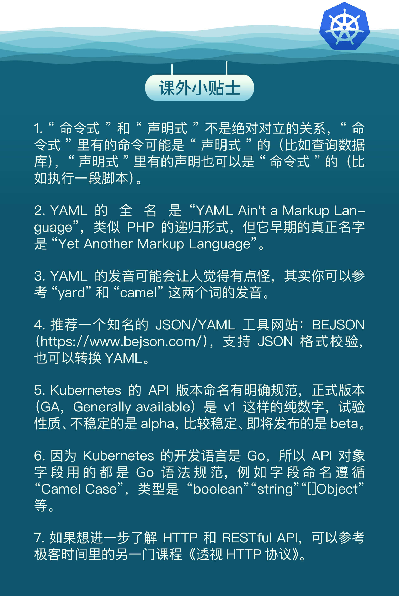
12 Pod：如何理解这个Kubernetes里最核心的概念？
你好，我是Chrono。
前两天我们学习了Kubernetes世界里的工作语言YAML，还编写了一个简短的YAML文件，描述了一个API对象：Pod，它在spec字段里包含了容器的定义。
那么为什么Kubernetes不直接使用已经非常成熟稳定的容器？为什么要再单独抽象出一个Pod对象？为什么几乎所有人都说Pod是Kubernetes里最核心最基本的概念呢？
今天我就来逐一解答这些问题，希望你学完今天的这次课，心里面能够有明确的答案。
为什么要有Pod
Pod这个词原意是“豌豆荚”，后来又延伸出“舱室”“太空舱”等含义，你可以看一下这张图片，形象地来说Pod就是包含了很多组件、成员的一种结构。

容器技术我想你现在已经比较熟悉了，它让进程在一个“沙盒”环境里运行，具有良好的隔离性，对应用是一个非常好的封装。
不过，当容器技术进入到现实的生产环境中时，这种隔离性就带来了一些麻烦。因为很少有应用是完全独立运行的，经常需要几个进程互相协作才能完成任务，比如在“入门篇”里我们搭建WordPress网站的时候，就需要Nginx、WordPress、MariaDB三个容器一起工作。
WordPress例子里的这三个应用之间的关系还是比较松散的，它们可以分别调度，运行在不同的机器上也能够以IP地址通信。
但还有一些特殊情况，多个应用结合得非常紧密以至于无法把它们拆开。比如，有的应用运行前需要其他应用帮它初始化一些配置，还有就是日志代理，它必须读取另一个应用存储在本地磁盘的文件再转发出去。这些应用如果被强制分离成两个容器，切断联系，就无法正常工作了。
那么把这些应用都放在一个容器里运行可不可以呢？
当然可以，但这并不是一种好的做法。因为容器的理念是对应用的独立封装，它里面就应该是一个进程、一个应用，如果里面有多个应用，不仅违背了容器的初衷，也会让容器更难以管理。
为了解决这样多应用联合运行的问题，同时还要不破坏容器的隔离，就需要在容器外面再建立一个“收纳舱”，让多个容器既保持相对独立，又能够小范围共享网络、存储等资源，而且永远是“绑在一起”的状态。
所以，Pod的概念也就呼之欲出了，容器正是“豆荚”里那些小小的“豌豆”，你可以在Pod的YAML里看到，“spec.containers”字段其实是一个数组，里面允许定义多个容器。
如果再拿之前讲过的“小板房”来比喻的话，Pod就是由客厅、卧室、厨房等预制房间拼装成的一个齐全的生活环境，不仅同样具备易于拆装易于搬迁的优点，而且要比单独的“一居室”功能强大得多，能够让进程“住”得更舒服。
为什么Pod是Kubernetes的核心对象
因为Pod是对容器的“打包”，里面的容器是一个整体，总是能够一起调度、一起运行，绝不会出现分离的情况，而且Pod属于Kubernetes，可以在不触碰下层容器的情况下任意定制修改。所以有了Pod这个抽象概念，Kubernetes在集群级别上管理应用就会“得心应手”了。
Kubernetes让Pod去编排处理容器，然后把Pod作为应用调度部署的最小单位，Pod也因此成为了Kubernetes世界里的“原子”（当然这个“原子”内部是有结构的，不是铁板一块），基于Pod就可以构建出更多更复杂的业务形态了。
下面的这张图你也许在其他资料里见过，它从Pod开始，扩展出了Kubernetes里的一些重要API对象，比如配置信息ConfigMap、离线作业Job、多实例部署Deployment等等，它们都分别对应到现实中的各种实际运维需求。
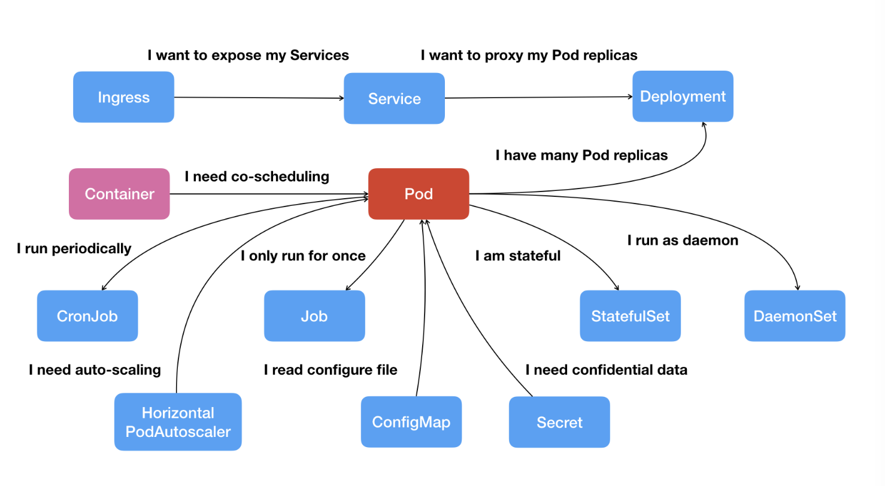
不过这张图虽然很经典，参考价值很高，但毕竟有些年头了，随着Kubernetes的发展，它已经不能够全面地描述Kubernetes的资源对象了。
受这张图的启发，我自己重新画了一份以Pod为中心的Kubernetes资源对象关系图，添加了一些新增的Kubernetes概念，今后我们就依据这张图来探索Kubernetes的各项功能。

从这两张图中你也应该能够看出来，所有的Kubernetes资源都直接或者间接地依附在Pod之上，所有的Kubernetes功能都必须通过Pod来实现，所以Pod理所当然地成为了Kubernetes的核心对象。
如何使用YAML描述Pod
既然Pod这么重要，那么我们就很有必要来详细了解一下Pod，理解了Pod概念，我们的Kubernetes学习之旅就成功了一半。
还记得吧，我们始终可以用命令 kubectl explain 来查看任意字段的详细说明，所以接下来我就只简要说说写YAML时Pod里的一些常用字段。
因为Pod也是API对象，所以它也必然具有apiVersion、kind、metadata、spec这四个基本组成部分。
“apiVersion”和“kind”这两个字段很简单，对于Pod来说分别是固定的值 v1 和 Pod，而一般来说，“metadata”里应该有 name 和 labels 这两个字段。
我们在使用Docker创建容器的时候，可以不给容器起名字，但在Kubernetes里，Pod必须要有一个名字，这也是Kubernetes里所有资源对象的一个约定。在课程里，我通常会为Pod名字统一加上 pod 后缀，这样可以和其他类型的资源区分开。
name 只是一个基本的标识，信息有限，所以 labels 字段就派上了用处。它可以添加任意数量的Key-Value，给Pod“贴”上归类的标签，结合 name 就更方便识别和管理了。
比如说，我们可以根据运行环境，使用标签 env=dev/test/prod，或者根据所在的数据中心，使用标签 region: north/south，还可以根据应用在系统中的层次，使用 tier=front/middle/back ……如此种种，只需要发挥你的想象力。
下面这段YAML代码就描述了一个简单的Pod，名字是“busy-pod”，再附加上一些标签：
apiVersion: v1
kind: Pod
metadata:
name: busy-pod
labels:
owner: chrono
env: demo
region: north
tier: back
“metadata”一般写上 name 和 labels 就足够了，而“spec”字段由于需要管理、维护Pod这个Kubernetes的基本调度单元，里面有非常多的关键信息，今天我介绍最重要的“containers”，其他的hostname、restartPolicy等字段你可以课后自己查阅文档学习。
“containers”是一个数组，里面的每一个元素又是一个container对象，也就是容器。
和Pod一样，container对象也必须要有一个 name 表示名字，然后当然还要有一个 image 字段来说明它使用的镜像，这两个字段是必须要有的，否则Kubernetes会报告数据验证错误。
container对象的其他字段基本上都可以和“入门篇”学过的Docker、容器技术对应，理解起来难度不大，我就随便列举几个：
- ports：列出容器对外暴露的端口，和Docker的
-p参数有点像。 - imagePullPolicy：指定镜像的拉取策略，可以是Always/Never/IfNotPresent，一般默认是IfNotPresent，也就是说只有本地不存在才会远程拉取镜像，可以减少网络消耗。
- env：定义Pod的环境变量，和Dockerfile里的
ENV指令有点类似，但它是运行时指定的，更加灵活可配置。 - command：定义容器启动时要执行的命令，相当于Dockerfile里的
ENTRYPOINT指令。 - args：它是command运行时的参数，相当于Dockerfile里的
CMD指令，这两个命令和Docker的含义不同，要特别注意。
现在我们就来编写“busy-pod”的spec部分，添加 env、command、args 等字段：
spec:
containers:
- image: busybox:latest
name: busy
imagePullPolicy: IfNotPresent
env:
- name: os
value: "ubuntu"
- name: debug
value: "on"
command:
- /bin/echo
args:
- "$(os), $(debug)"
这里我为Pod指定使用镜像busybox:latest，拉取策略是 IfNotPresent ，然后定义了 os 和 debug 两个环境变量，启动命令是 /bin/echo，参数里输出刚才定义的环境变量。
把这份YAML文件和Docker命令对比一下，你就可以看出，YAML在 spec.containers 字段里用“声明式”把容器的运行状态描述得非常清晰准确，要比 docker run 那长长的命令行要整洁的多，对人、对机器都非常友好。
如何使用kubectl操作Pod
有了描述Pod的YAML文件，现在我就介绍一下用来操作Pod的kubectl命令。
kubectl apply、kubectl delete 这两个命令在上次课里已经说过了，它们可以使用 -f 参数指定YAML文件创建或者删除Pod，例如：
kubectl apply -f busy-pod.yml
kubectl delete -f busy-pod.yml
不过，因为我们在YAML里定义了“name”字段，所以也可以在删除的时候直接指定名字来删除：
kubectl delete pod busy-pod
和Docker不一样，Kubernetes的Pod不会在前台运行，只能在后台（相当于默认使用了参数 -d），所以输出信息不能直接看到。我们可以用命令 kubectl logs，它会把Pod的标准输出流信息展示给我们看，在这里就会显示出预设的两个环境变量的值：
kubectl logs busy-pod

使用命令 kubectl get pod 可以查看Pod列表和运行状态：
kubectl get pod

你会发现这个Pod运行有点不正常，状态是“CrashLoopBackOff”，那么我们可以使用命令 kubectl describe 来检查它的详细状态，它在调试排错时很有用：
kubectl describe pod busy-pod
通常需要关注的是末尾的“Events”部分，它显示的是Pod运行过程中的一些关键节点事件。对于这个busy-pod，因为它只执行了一条 echo 命令就退出了，而Kubernetes默认会重启Pod，所以就会进入一个反复停止-启动的循环错误状态。
因为Kubernetes里运行的应用大部分都是不会主动退出的服务，所以我们可以把这个busy-pod删掉，用上次课里创建的ngx-pod.yml，启动一个Nginx服务，这才是大多数Pod的工作方式。
kubectl apply -f ngx-pod.yml
启动之后，我们再用 kubectl get pod 来查看状态，就会发现它已经是“Running”状态了：

命令 kubectl logs 也能够输出Nginx的运行日志：

另外，kubectl也提供与docker类似的 cp 和 exec 命令，kubectl cp 可以把本地文件拷贝进Pod，kubectl exec 是进入Pod内部执行Shell命令，用法也差不多。
比如我有一个“a.txt”文件，那么就可以使用 kubectl cp 拷贝进Pod的“/tmp”目录里：
echo 'aaa' > a.txt
kubectl cp a.txt ngx-pod:/tmp
不过 kubectl exec 的命令格式与Docker有一点小差异，需要在Pod后面加上 --，把kubectl的命令与Shell命令分隔开，你在用的时候需要小心一些：
kubectl exec -it ngx-pod -- sh
小结
好了，今天我们一起学习了Kubernetes里最核心最基本的概念Pod，知道了应该如何使用YAML来定制Pod，还有如何使用kubectl命令来创建、删除、查看、调试Pod。
Pod屏蔽了容器的一些底层细节，同时又具有足够的控制管理能力，比起容器的“细粒度”、虚拟机的“粗粒度”，Pod可以说是“中粒度”，灵活又轻便，非常适合在云计算领域作为应用调度的基本单元，因而成为了Kubernetes世界里构建一切业务的“原子”。
今天的知识要点我简单列在了下面：
- 现实中经常会有多个进程密切协作才能完成任务的应用，而仅使用容器很难描述这种关系，所以就出现了Pod，它“打包”一个或多个容器，保证里面的进程能够被整体调度。
- Pod是Kubernetes管理应用的最小单位，其他的所有概念都是从Pod衍生出来的。
- Pod也应该使用YAML“声明式”描述，关键字段是“spec.containers”，列出名字、镜像、端口等要素，定义内部的容器运行状态。
- 操作Pod的命令很多与Docker类似，如
kubectl run、kubectl cp、kubectl exec等，但有的命令有些小差异，使用的时候需要注意。
虽然Pod是Kubernetes的核心概念，非常重要，但事实上在Kubernetes里通常并不会直接创建Pod，因为它只是对容器做了简单的包装，比较脆弱，离复杂的业务需求还有些距离，需要Job、CronJob、Deployment等其他对象增添更多的功能才能投入生产使用。
课下作业
最后是课下作业时间，给你留两个思考题：
- 如果没有Pod，直接使用容器来管理应用会有什么样的麻烦？
- 你觉得Pod和容器之间有什么区别和联系？
欢迎留言参与讨论，如果有收获也欢迎你分享给朋友一起学习。我们下节课再见。

13 Job_CronJob：为什么不直接用Pod来处理业务？
你好，我是Chrono。
在上次的课里我们学习了Kubernetes的核心对象Pod，用来编排一个或多个容器，让这些容器共享网络、存储等资源，总是共同调度，从而紧密协同工作。
因为Pod比容器更能够表示实际的应用，所以Kubernetes不会在容器层面来编排业务，而是把Pod作为在集群里调度运维的最小单位。
前面我们也看到了一张Kubernetes的资源对象关系图，以Pod为中心，延伸出了很多表示各种业务的其他资源对象。那么你会不会有这样的疑问：Pod的功能已经足够完善了，为什么还要定义这些额外的对象呢？为什么不直接在Pod里添加功能，来处理业务需求呢？
这个问题体现了Google对大规模计算集群管理的深度思考，今天我就说说Kubernetes基于Pod的设计理念，先从最简单的两种对象——Job和CronJob讲起。
为什么不直接使用Pod
现在你应该知道，Kubernetes使用的是RESTful API，把集群中的各种业务都抽象为HTTP资源对象，那么在这个层次之上，我们就可以使用面向对象的方式来考虑问题。
如果你有一些编程方面的经验，就会知道面向对象编程（OOP），它把一切都视为高内聚的对象，强调对象之间互相通信来完成任务。
虽然面向对象的设计思想多用于软件开发，但它放到Kubernetes里却意外地合适。因为Kubernetes使用YAML来描述资源，把业务简化成了一个个的对象，内部有属性，外部有联系，也需要互相协作，只不过我们不需要编程，完全由Kubernetes自动处理（其实Kubernetes的Go语言内部实现就大量应用了面向对象）。
面向对象的设计有许多基本原则，其中有两条我认为比较恰当地描述了Kubernetes对象设计思路，一个是“单一职责”，另一个是“组合优于继承”。
“单一职责”的意思是对象应该只专注于做好一件事情，不要贪大求全，保持足够小的粒度才更方便复用和管理。
“组合优于继承”的意思是应该尽量让对象在运行时产生联系，保持松耦合，而不要用硬编码的方式固定对象的关系。
应用这两条原则，我们再来看Kubernetes的资源对象就会很清晰了。因为Pod已经是一个相对完善的对象，专门负责管理容器，那么我们就不应该再“画蛇添足”地盲目为它扩充功能，而是要保持它的独立性，容器之外的功能就需要定义其他的对象，把Pod作为它的一个成员“组合”进去。
这样每种Kubernetes对象就可以只关注自己的业务领域，只做自己最擅长的事情，其他的工作交给其他对象来处理，既不“缺位”也不“越位”，既有分工又有协作，从而以最小成本实现最大收益。
为什么要有Job/CronJob
现在我们来看看Kubernetes里的两种新对象：Job和CronJob，它们就组合了Pod，实现了对离线业务的处理。
上次课讲Pod的时候我们运行了两个Pod：Nginx和busybox，它们分别代表了Kubernetes里的两大类业务。一类是像Nginx这样长时间运行的“在线业务”，另一类是像busybox这样短时间运行的“离线业务”。
“在线业务”类型的应用有很多，比如Nginx、Node.js、MySQL、Redis等等，一旦运行起来基本上不会停，也就是永远在线。
而“离线业务”类型的应用也并不少见，它们一般不直接服务于外部用户，只对内部用户有意义，比如日志分析、数据建模、视频转码等等，虽然计算量很大，但只会运行一段时间。“离线业务”的特点是必定会退出，不会无期限地运行下去，所以它的调度策略也就与“在线业务”存在很大的不同，需要考虑运行超时、状态检查、失败重试、获取计算结果等管理事项。
而这些业务特性与容器管理没有必然的联系，如果由Pod来实现就会承担不必要的义务，违反了“单一职责”，所以我们应该把这部分功能分离到另外一个对象上实现，让这个对象去控制Pod的运行，完成附加的工作。
“离线业务”也可以分为两种。一种是“临时任务”，跑完就完事了，下次有需求了说一声再重新安排；另一种是“定时任务”，可以按时按点周期运行，不需要过多干预。
对应到Kubernetes里，“临时任务”就是API对象Job，“定时任务”就是API对象CronJob，使用这两个对象你就能够在Kubernetes里调度管理任意的离线业务了。
由于Job和CronJob都属于离线业务，所以它们也比较相似。我们先学习通常只会运行一次的Job对象以及如何操作。
如何使用YAML描述Job
Job的YAML“文件头”部分还是那几个必备字段，我就不再重复解释了，简单说一下：
- apiVersion不是
v1，而是batch/v1。 - kind是
Job，这个和对象的名字是一致的。 - metadata里仍然要有
name标记名字，也可以用labels添加任意的标签。
如果记不住这些也不要紧，你还可以使用命令 kubectl explain job 来看它的字段说明。不过想要生成YAML样板文件的话不能使用 kubectl run，因为 kubectl run 只能创建Pod，要创建Pod以外的其他API对象，需要使用命令 kubectl create，再加上对象的类型名。
比如用busybox创建一个“echo-job”，命令就是这样的：
export out="--dry-run=client -o yaml" # 定义Shell变量
kubectl create job echo-job --image=busybox $out
会生成一个基本的YAML文件，保存之后做点修改，就有了一个Job对象：
apiVersion: batch/v1
kind: Job
metadata:
name: echo-job
spec:
template:
spec:
restartPolicy: OnFailure
containers:
- image: busybox
name: echo-job
imagePullPolicy: IfNotPresent
command: ["/bin/echo"]
args: ["hello", "world"]
你会注意到Job的描述与Pod很像，但又有些不一样，主要的区别就在“spec”字段里，多了一个 template 字段，然后又是一个“spec”，显得有点怪。
如果你理解了刚才说的面向对象设计思想，就会明白这种做法的道理。它其实就是在Job对象里应用了组合模式，template 字段定义了一个“应用模板”，里面嵌入了一个Pod，这样Job就可以从这个模板来创建出Pod。
而这个Pod因为受Job的管理控制，不直接和apiserver打交道，也就没必要重复apiVersion等“头字段”，只需要定义好关键的 spec，描述清楚容器相关的信息就可以了，可以说是一个“无头”的Pod对象。
为了辅助你理解，我把Job对象重新组织了一下，用不同的颜色来区分字段，这样你就能够很容易看出来，其实这个“echo-job”里并没有太多额外的功能，只是把Pod做了个简单的包装：

总的来说，这里的Pod工作非常简单，在 containers 里写好名字和镜像，command 执行 /bin/echo，输出“hello world”。
不过，因为Job业务的特殊性，所以我们还要在 spec 里多加一个字段 restartPolicy，确定Pod运行失败时的策略，OnFailure 是失败原地重启容器，而 Never 则是不重启容器，让Job去重新调度生成一个新的Pod。
如何在Kubernetes里操作Job
现在让我们来创建Job对象，运行这个简单的离线作业，用的命令还是 kubectl apply：
kubectl apply -f job.yml
创建之后Kubernetes就会从YAML的模板定义中提取Pod，在Job的控制下运行Pod，你可以用 kubectl get job、kubectl get pod 来分别查看Job和Pod的状态：
kubectl get job
kubectl get pod

可以看到，因为Pod被Job管理，它就不会反复重启报错了，而是会显示为 Completed 表示任务完成，而Job里也会列出运行成功的作业数量，这里只有一个作业，所以就是 1/1。
你还可以看到，Pod被自动关联了一个名字，用的是Job的名字（echo-job）再加上一个随机字符串（pb5gh），这当然也是Job管理的“功劳”，免去了我们手工定义的麻烦，这样我们就可以使用命令 kubectl logs 来获取Pod的运行结果：

到这里，你可能会觉得，经过了Job、Pod对容器的两次封装，虽然从概念上很清晰，但好像并没有带来什么实际的好处，和直接跑容器也差不了多少。
其实Kubernetes的这套YAML描述对象的框架提供了非常多的灵活性，可以在Job级别、Pod级别添加任意的字段来定制业务，这种优势是简单的容器技术无法相比的。
这里我列出几个控制离线作业的重要字段，其他更详细的信息可以参考Job文档：
- activeDeadlineSeconds，设置Pod运行的超时时间。
- backoffLimit，设置Pod的失败重试次数。
- completions，Job完成需要运行多少个Pod，默认是1个。
- parallelism，它与completions相关，表示允许并发运行的Pod数量，避免过多占用资源。
要注意这4个字段并不在 template 字段下，而是在 spec 字段下，所以它们是属于Job级别的，用来控制模板里的Pod对象。
下面我再创建一个Job对象，名字叫“sleep-job”，它随机睡眠一段时间再退出，模拟运行时间较长的作业（比如MapReduce）。Job的参数设置成15秒超时，最多重试2次，总共需要运行完4个Pod，但同一时刻最多并发2个Pod：
apiVersion: batch/v1
kind: Job
metadata:
name: sleep-job
spec:
activeDeadlineSeconds: 15
backoffLimit: 2
completions: 4
parallelism: 2
template:
spec:
restartPolicy: OnFailure
containers:
- image: busybox
name: echo-job
imagePullPolicy: IfNotPresent
command:
- sh
- -c
- sleep $(($RANDOM % 10 + 1)) && echo done
使用 kubectl apply 创建Job之后，我们可以用 kubectl get pod -w 来实时观察Pod的状态，看到Pod不断被排队、创建、运行的过程：
kubectl apply -f sleep-job.yml
kubectl get pod -w

等到4个Pod都运行完毕，我们再用 kubectl get 来看看Job和Pod的状态：

就会看到Job的完成数量如同我们预期的是4，而4个Pod也都是完成状态。
显然，“声明式”的Job对象让离线业务的描述变得非常直观，简单的几个字段就可以很好地控制作业的并行度和完成数量，不需要我们去人工监控干预，Kubernetes把这些都自动化实现了。
如何使用YAML描述CronJob
学习了“临时任务”的Job对象之后，再学习“定时任务”的CronJob对象也就比较容易了，我就直接使用命令 kubectl create 来创建CronJob的样板。
要注意两点。第一，因为CronJob的名字有点长，所以Kubernetes提供了简写 cj，这个简写也可以使用命令 kubectl api-resources 看到；第二，CronJob需要定时运行，所以我们在命令行里还需要指定参数 --schedule。
export out="--dry-run=client -o yaml" # 定义Shell变量
kubectl create cj echo-cj --image=busybox --schedule="" $out
然后我们编辑这个YAML样板，生成CronJob对象：
apiVersion: batch/v1
kind: CronJob
metadata:
name: echo-cj
spec:
schedule: '*/1 * * * *'
jobTemplate:
spec:
template:
spec:
restartPolicy: OnFailure
containers:
- image: busybox
name: echo-cj
imagePullPolicy: IfNotPresent
command: ["/bin/echo"]
args: ["hello", "world"]
我们还是重点关注它的 spec 字段，你会发现它居然连续有三个 spec 嵌套层次：
- 第一个
spec是CronJob自己的对象规格声明 - 第二个
spec从属于“jobTemplate”，它定义了一个Job对象。 - 第三个
spec从属于“template”，它定义了Job里运行的Pod。
所以，CronJob其实是又组合了Job而生成的新对象，我还是画了一张图，方便你理解它的“套娃”结构：

除了定义Job对象的“jobTemplate”字段之外，CronJob还有一个新字段就是“schedule”，用来定义任务周期运行的规则。它使用的是标准的Cron语法，指定分钟、小时、天、月、周，和Linux上的crontab是一样的。像在这里我就指定每分钟运行一次，格式具体的含义你可以课后参考Kubernetes官网文档。
除了名字不同，CronJob和Job的用法几乎是一样的，使用 kubectl apply 创建CronJob，使用 kubectl get cj、kubectl get pod 来查看状态：
kubectl apply -f cronjob.yml
kubectl get cj
kubectl get pod
小结
好了，今天我们以面向对象思想分析了一下Kubernetes里的资源对象设计，它强调“职责单一”和“对象组合”，简单来说就是“对象套对象”。
通过这种嵌套方式，Kubernetes里的这些API对象就形成了一个“控制链”：
CronJob使用定时规则控制Job，Job使用并发数量控制Pod，Pod再定义参数控制容器，容器再隔离控制进程，进程最终实现业务功能，层层递进的形式有点像设计模式里的Decorator（装饰模式），链条里的每个环节都各司其职，在Kubernetes的统一指挥下完成任务。
小结一下今天的内容：
- Pod是Kubernetes的最小调度单元，但为了保持它的独立性，不应该向它添加多余的功能。
- Kubernetes为离线业务提供了Job和CronJob两种API对象，分别处理“临时任务”和“定时任务”。
- Job的关键字段是
spec.template，里面定义了用来运行业务的Pod模板，其他的重要字段有completions、parallelism等 - CronJob的关键字段是
spec.jobTemplate和spec.schedule，分别定义了Job模板和定时运行的规则。
课下作业
最后是课下作业时间，给你留两个思考题：
- 你是怎么理解Kubernetes组合对象的方式的？它带来了什么好处？
- Job和CronJob的具体应用场景有哪些？能够解决什么样的问题？
欢迎在留言区分享你的疑问和学习心得，如果觉得有收获，也欢迎你分享给朋友一起学习。
下节课见。
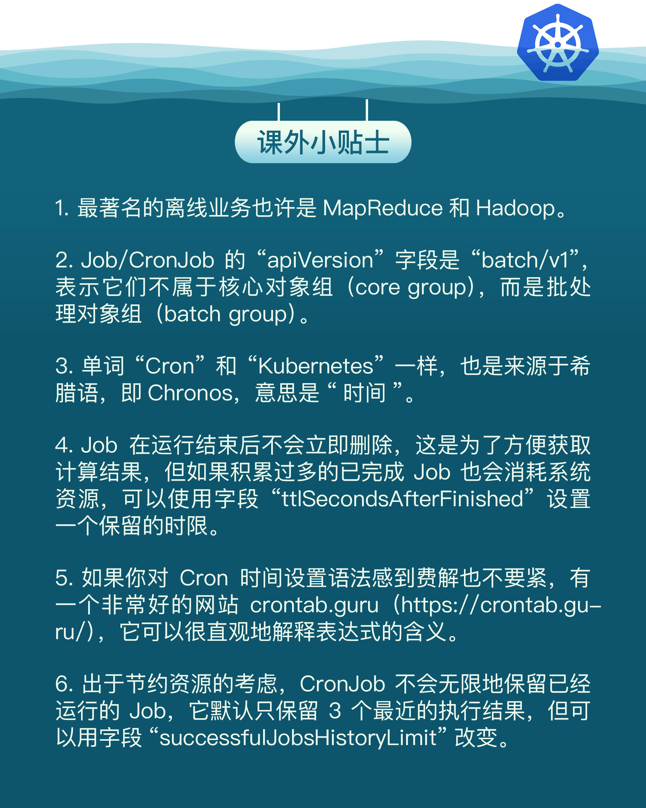
14 ConfigMap_Secret：怎样配置、定制我的应用
你好，我是Chrono。
前两节课里我们学习了Kubernetes里的三种API对象：Pod、Job和CronJob，虽然还没有讲到更高级的其他对象，但使用它们也可以在集群里编排运行一些实际的业务了。
不过想让业务更顺利地运行，有一个问题不容忽视，那就是应用的配置管理。
配置文件，你应该有所了解吧，通常来说应用程序都会有一个，它把运行时需要的一些参数从代码中分离出来，让我们在实际运行的时候能更方便地调整优化，比如说Nginx有nginx.conf、Redis有redis.conf、MySQL有my.cnf等等。
我们在“入门篇”里学习容器技术的时候讲过，可以选择两种管理配置文件的方式。第一种是编写Dockerfile，用 COPY 指令把配置文件打包到镜像里；第二种是在运行时使用 docker cp 或者 docker run -v，把本机的文件拷贝进容器。
但这两种方式都存在缺陷。第一种方法相当于是在镜像里固定了配置文件，不好修改，不灵活，第二种方法则显得有点“笨拙”，不适合在集群中自动化运维管理。
对于这个问题Kubernetes有它自己的解决方案，你也应该能够猜得到，当然还是使用YAML语言来定义API对象，再组合起来实现动态配置。
今天我就来讲解Kubernetes里专门用来管理配置信息的两种对象：ConfigMap和Secret，使用它们来灵活地配置、定制我们的应用。
ConfigMap/Secret
首先你要知道，应用程序有很多类别的配置信息，但从数据安全的角度来看可以分成两类：
- 一类是明文配置，也就是不保密，可以任意查询修改，比如服务端口、运行参数、文件路径等等。
- 另一类则是机密配置，由于涉及敏感信息需要保密，不能随便查看，比如密码、密钥、证书等等。
这两类配置信息本质上都是字符串，只是由于安全性的原因，在存放和使用方面有些差异，所以Kubernetes也就定义了两个API对象，ConfigMap用来保存明文配置，Secret用来保存秘密配置。
什么是ConfigMap
先来看ConfigMap，我们仍然可以用命令 kubectl create 来创建一个它的YAML样板。注意，它有简写名字“cm”，所以命令行里没必要写出它的全称：
export out="--dry-run=client -o yaml" # 定义Shell变量
kubectl create cm info $out
得到的样板文件大概是这个样子：
apiVersion: v1
kind: ConfigMap
metadata:
name: info
你可能会有点惊讶，ConfigMap的YAML和之前我们学过的Pod、Job不一样，除了熟悉的“apiVersion”“kind”“metadata”，居然就没有其他的了，最重要的字段“spec”哪里去了？这是因为ConfigMap存储的是配置数据，是静态的字符串，并不是容器，所以它们就不需要用“spec”字段来说明运行时的“规格”。
既然ConfigMap要存储数据，我们就需要用另一个含义更明确的字段“data”。
要生成带有“data”字段的YAML样板，你需要在 kubectl create 后面多加一个参数 --from-literal ，表示从字面值生成一些数据：
kubectl create cm info --from-literal=k=v $out
注意，因为在ConfigMap里的数据都是Key-Value结构，所以 --from-literal 参数需要使用 k=v 的形式。
把YAML样板文件修改一下，再多增添一些Key-Value，就得到了一个比较完整的ConfigMap对象：
apiVersion: v1
kind: ConfigMap
metadata:
name: info
data:
count: '10'
debug: 'on'
path: '/etc/systemd'
greeting: |
say hello to kubernetes.
现在就可以使用 kubectl apply 把这个YAML交给Kubernetes，让它创建ConfigMap对象了：
kubectl apply -f cm.yml
创建成功后，我们还是可以用 kubectl get、kubectl describe 来查看ConfigMap的状态：
kubectl get cm
kubectl describe cm info


你可以看到，现在ConfigMap的Key-Value信息就已经存入了etcd数据库，后续就可以被其他API对象使用。
什么是Secret
了解了ConfigMap对象，我们再来看Secret对象就会容易很多，它和ConfigMap的结构和用法很类似，不过在Kubernetes里Secret对象又细分出很多类，比如：
- 访问私有镜像仓库的认证信息
- 身份识别的凭证信息
- HTTPS通信的证书和私钥
- 一般的机密信息（格式由用户自行解释）
前几种我们现在暂时用不到，所以就只使用最后一种，创建YAML样板的命令是 kubectl create secret generic ，同样，也要使用参数 --from-literal 给出Key-Value值：
kubectl create secret generic user --from-literal=name=root $out
得到的Secret对象大概是这个样子：
apiVersion: v1
kind: Secret
metadata:
name: user
data:
name: cm9vdA==
Secret对象第一眼的感觉和ConfigMap非常相似，只是“kind”字段由“ConfigMap”变成了“Secret”，后面同样也是“data”字段，里面也是Key-Value的数据。
不过，既然它的名字是Secret，我们就不能像ConfigMap那样直接保存明文了，需要对数据“做点手脚”。你会发现，这里的“name”值是一串“乱码”，而不是刚才在命令行里写的明文“root”。
这串“乱码”就是Secret与ConfigMap的不同之处，不让用户直接看到原始数据，起到一定的保密作用。不过它的手法非常简单，只是做了Base64编码，根本算不上真正的加密，所以我们完全可以绕开kubectl，自己用Linux小工具“base64”来对数据编码，然后写入YAML文件，比如：
echo -n "123456" | base64
MTIzNDU2
要注意这条命令里的 echo ，必须要加参数 -n 去掉字符串里隐含的换行符，否则Base64编码出来的字符串就是错误的。
我们再来重新编辑Secret的YAML，为它添加两个新的数据，方式可以是参数 --from-literal 自动编码，也可以是自己手动编码：
apiVersion: v1
kind: Secret
metadata:
name: user
data:
name: cm9vdA== # root
pwd: MTIzNDU2 # 123456
db: bXlzcWw= # mysql
接下来的创建和查看对象操作和ConfigMap是一样的，使用 kubectl apply、kubectl get、kubectl describe：
kubectl apply -f secret.yml
kubectl get secret
kubectl describe secret user

这样一个存储敏感信息的Secret对象也就创建好了，而且因为它是保密的，使用 kubectl describe 不能直接看到内容，只能看到数据的大小，你可以和ConfigMap对比一下。
如何使用
现在通过编写YAML文件，我们创建了ConfigMap和Secret对象，该怎么在Kubernetes里应用它们呢？
因为ConfigMap和Secret只是一些存储在etcd里的字符串，所以如果想要在运行时产生效果，就必须要以某种方式“注入”到Pod里，让应用去读取。在这方面的处理上Kubernetes和Docker是一样的，也是两种途径：环境变量和加载文件。
先看比较简单的环境变量。
如何以环境变量的方式使用ConfigMap/Secret
在前面讲Pod的时候，说过描述容器的字段“containers”里有一个“env”，它定义了Pod里容器能够看到的环境变量。
当时我们只使用了简单的“value”，把环境变量的值写“死”在了YAML里，实际上它还可以使用另一个“valueFrom”字段，从ConfigMap或者Secret对象里获取值，这样就实现了把配置信息以环境变量的形式注入进Pod，也就是配置与应用的解耦。
由于“valueFrom”字段在YAML里的嵌套层次比较深，初次使用最好看一下 kubectl explain 对它的说明：
kubectl explain pod.spec.containers.env.valueFrom
“valueFrom”字段指定了环境变量值的来源，可以是“configMapKeyRef”或者“secretKeyRef”，然后你要再进一步指定应用的ConfigMap/Secret的“name”和它里面的“key”，要当心的是这个“name”字段是API对象的名字，而不是Key-Value的名字。
下面我就把引用了ConfigMap和Secret对象的Pod列出来，给你做个示范，为了提醒你注意，我把“env”字段提到了前面：
apiVersion: v1
kind: Pod
metadata:
name: env-pod
spec:
containers:
- env:
- name: COUNT
valueFrom:
configMapKeyRef:
name: info
key: count
- name: GREETING
valueFrom:
configMapKeyRef:
name: info
key: greeting
- name: USERNAME
valueFrom:
secretKeyRef:
name: user
key: name
- name: PASSWORD
valueFrom:
secretKeyRef:
name: user
key: pwd
image: busybox
name: busy
imagePullPolicy: IfNotPresent
command: ["/bin/sleep", "300"]
这个Pod的名字是“env-pod”，镜像是“busybox”，执行命令sleep睡眠300秒，我们可以在这段时间里使用命令 kubectl exec 进入Pod观察环境变量。
你需要重点关注的是它的“env”字段，里面定义了4个环境变量，COUNT、GREETING、USERNAME、PASSWORD。
对于明文配置数据， COUNT、GREETING 引用的是ConfigMap对象，所以使用字段“configMapKeyRef”，里面的“name”是ConfigMap对象的名字，也就是之前我们创建的“info”，而“key”字段分别是“info”对象里的 count 和 greeting。
同样的对于机密配置数据， USERNAME、PASSWORD 引用的是Secret对象，要使用字段“secretKeyRef”，再用“name”指定Secret对象的名字 user，用“key”字段应用它里面的 name 和 pwd 。
这段解释确实是有点绕口令的感觉，因为ConfigMap和Secret在Pod里的组合关系不像Job/CronJob那么简单直接，所以我还是用画图来表示它们的引用关系：
从这张图你就应该能够比较清楚地看出Pod与ConfigMap、Secret的“松耦合”关系，它们不是直接嵌套包含，而是使用“KeyRef”字段间接引用对象，这样，同一段配置信息就可以在不同的对象之间共享。
弄清楚了环境变量的注入方式之后，让我们用 kubectl apply 创建Pod，再用 kubectl exec 进入Pod，验证环境变量是否生效：
kubectl apply -f env-pod.yml
kubectl exec -it env-pod -- sh
echo $COUNT
echo $GREETING
echo $USERNAME $PASSWORD
这张截图就显示了Pod的运行结果，可以看到在Pod里使用 echo 命令确实输出了我们在两个YAML里定义的配置信息，也就证明Pod对象成功组合了ConfigMap和Secret对象。
以环境变量的方式使用ConfigMap/Secret还是比较简单的，下面来看第二种加载文件的方式。
如何以Volume的方式使用ConfigMap/Secret
Kubernetes为Pod定义了一个“Volume”的概念，可以翻译成是“存储卷”。如果把Pod理解成是一个虚拟机，那么Volume就相当于是虚拟机里的磁盘。
我们可以为Pod“挂载（mount）”多个Volume，里面存放供Pod访问的数据，这种方式有点类似 docker run -v，虽然用法复杂了一些，但功能也相应强大一些。
在Pod里挂载Volume很容易，只需要在“spec”里增加一个“volumes”字段，然后再定义卷的名字和引用的ConfigMap/Secret就可以了。要注意的是Volume属于Pod，不属于容器，所以它和字段“containers”是同级的，都属于“spec”。
下面让我们来定义两个Volume，分别引用ConfigMap和Secret，名字是 cm-vol 和 sec-vol：
spec:
volumes:
- name: cm-vol
configMap:
name: info
- name: sec-vol
secret:
secretName: user
有了Volume的定义之后，就可以在容器里挂载了，这要用到“volumeMounts”字段，正如它的字面含义，可以把定义好的Volume挂载到容器里的某个路径下，所以需要在里面用“mountPath”“name”明确地指定挂载路径和Volume的名字。
containers:
- volumeMounts:
- mountPath: /tmp/cm-items
name: cm-vol
- mountPath: /tmp/sec-items
name: sec-vol
把“volumes”和“volumeMounts”字段都写好之后，配置信息就可以加载成文件了。这里我还是画了图来表示它们的引用关系：

你可以看到，挂载Volume的方式和环境变量又不太相同。环境变量是直接引用了ConfigMap/Secret，而Volume又多加了一个环节，需要先用Volume引用ConfigMap/Secret，然后在容器里挂载Volume，有点“兜圈子”“弯弯绕”。
这种方式的好处在于：以Volume的概念统一抽象了所有的存储，不仅现在支持ConfigMap/Secret，以后还能够支持临时卷、持久卷、动态卷、快照卷等许多形式的存储，扩展性非常好。
现在我把Pod的完整YAML描述列出来，然后使用 kubectl apply 创建它：
apiVersion: v1
kind: Pod
metadata:
name: vol-pod
spec:
volumes:
- name: cm-vol
configMap:
name: info
- name: sec-vol
secret:
secretName: user
containers:
- volumeMounts:
- mountPath: /tmp/cm-items
name: cm-vol
- mountPath: /tmp/sec-items
name: sec-vol
image: busybox
name: busy
imagePullPolicy: IfNotPresent
command: ["/bin/sleep", "300"]
创建之后，我们还是用 kubectl exec 进入Pod，看看配置信息被加载成了什么形式：
kubectl apply -f vol-pod.yml
kubectl get pod
kubectl exec -it vol-pod -- sh

你会看到，ConfigMap和Secret都变成了目录的形式，而它们里面的Key-Value变成了一个个的文件，而文件名就是Key。
因为这种形式上的差异，以Volume的方式来使用ConfigMap/Secret，就和环境变量不太一样。环境变量用法简单，更适合存放简短的字符串，而Volume更适合存放大数据量的配置文件，在Pod里加载成文件后让应用直接读取使用。
小结
好了，今天我们学习了两种在Kubernetes里管理配置信息的API对象ConfigMap和Secret，它们分别代表了明文信息和机密敏感信息，存储在etcd里，在需要的时候可以注入Pod供Pod使用。
简单小结一下今天的要点：
- ConfigMap记录了一些Key-Value格式的字符串数据，描述字段是“data”，不是“spec”。
- Secret与ConfigMap很类似，也使用“data”保存字符串数据，但它要求数据必须是Base64编码，起到一定的保密效果。
- 在Pod的“env.valueFrom”字段中可以引用ConfigMap和Secret，把它们变成应用可以访问的环境变量。
- 在Pod的“spec.volumes”字段中可以引用ConfigMap和Secret，把它们变成存储卷，然后在“spec.containers.volumeMounts”字段中加载成文件的形式。
- ConfigMap和Secret对存储数据的大小没有限制，但小数据用环境变量比较适合，大数据应该用存储卷，可根据具体场景灵活应用。
课下作业
最后是课下作业时间，给你留两个思考题：
- 说一说你对ConfigMap和Secret这两个对象的理解，它们有什么异同点？
- 如果我们修改了ConfigMap/Secret的YAML，然后使用
kubectl apply命令更新对象，那么Pod里关联的信息是否会同步更新呢？你可以自己验证看看。
欢迎在留言区分享你的学习所得，下节课是这个章节的实战课，我们下节课再见。
15 实战演练：玩转Kubernetes（1）
你好，我是Chrono。
经过两个星期的学习，到今天我们的“初级篇”也快要结束了。
和之前的“入门篇”一样，在这次课里，我也会对前面学过的知识做一个比较全面的回顾，毕竟Kubernetes领域里有很多新名词、新术语、新架构，知识点多且杂，这样的总结复习就更有必要。
接下来我还是先简要列举一下“初级篇”里讲到的Kubernetes要点，然后再综合运用这些知识，演示一个实战项目——还是搭建WordPress网站，不过这次不是在Docker里，而是在Kubernetes集群里。
Kubernetes技术要点回顾
容器技术开启了云原生的大潮，但成熟的容器技术，到生产环境的应用部署的时候，却显得“步履维艰”。因为容器只是针对单个进程的隔离和封装，而实际的应用场景却是要求许多的应用进程互相协同工作，其中的各种关系和需求非常复杂，在容器这个技术层次很难掌控。
为了解决这个问题，容器编排（Container Orchestration）就出现了，它可以说是以前的运维工作在云原生世界的落地实践，本质上还是在集群里调度管理应用程序，只不过管理的主体由人变成了计算机，管理的目标由原生进程变成了容器和镜像。
而现在，容器编排领域的王者就是——Kubernetes。
Kubernetes源自Borg系统，它凝聚了Google的内部经验和CNCF的社区智慧，所以战胜了竞争对手Apache Mesos和Docker Swarm，成为了容器编排领域的事实标准，也成为了云原生时代的基础操作系统，学习云原生就必须要掌握Kubernetes。
（[10讲]）Kubernetes的Master/Node架构是它具有自动化运维能力的关键，也对我们的学习至关重要，这里我再用另一张参考架构图来简略说明一下它的运行机制（图片来源）：
Kubernetes把集群里的计算资源定义为节点（Node），其中又划分成控制面和数据面两类。
- 控制面是Master节点，负责管理集群和运维监控应用，里面的核心组件是apiserver、etcd、scheduler、controller-manager。
- 数据面是Worker节点，受Master节点的管控，里面的核心组件是kubelet、kube-proxy、container-runtime。
此外，Kubernetes还支持插件机制，能够灵活扩展各项功能，常用的插件有DNS和Dashboard。
为了更好地管理集群和业务应用，Kubernetes从现实世界中抽象出了许多概念，称为“API对象”，描述这些对象就需要使用YAML语言。
YAML是JSON的超集，但语法更简洁，表现能力更强，更重要的是它以“声明式”来表述对象的状态，不涉及具体的操作细节，这样Kubernetes就能够依靠存储在etcd里集群的状态信息，不断地“调控”对象，直至实际状态与期望状态相同，这个过程就是Kubernetes的自动化运维管理（[11讲]）。
Kubernetes里有很多的API对象，其中最核心的对象是“Pod”，它捆绑了一组存在密切协作关系的容器，容器之间共享网络和存储，在集群里必须一起调度一起运行。通过Pod这个概念，Kubernetes就简化了对容器的管理工作，其他的所有任务都是通过对Pod这个最小单位的再包装来实现的（[12讲]）。
除了核心的Pod对象，基于“单一职责”和“对象组合”这两个基本原则，我们又学习了4个比较简单的API对象，分别是Job/CronJob和ConfigMap/Secret。
- Job/CronJob对应的是离线作业，它们逐层包装了Pod，添加了作业控制和定时规则（[13讲]）。
- ConfigMap/Secret对应的是配置信息，需要以环境变量或者存储卷的形式注入进Pod，然后进程才能在运行时使用（[14讲]）。
和Docker类似，Kubernetes也提供一个客户端工具，名字叫“kubectl”，它直接与Master节点的apiserver通信，把YAML文件发送给RESTful接口，从而触发Kubernetes的对象管理工作流程。
kubectl的命令很多，查看自带文档可以用 api-resources、explain ，查看对象状态可以用 get、describe、logs ，操作对象可以用 run、apply、exec、delete 等等（[09讲]）。
使用YAML描述API对象也有固定的格式，必须写的“头字段”是“apiVersion”“kind”“metadata”，它们表示对象的版本、种类和名字等元信息。实体对象如Pod、Job、CronJob会再有“spec”字段描述对象的期望状态，最基本的就是容器信息，非实体对象如ConfigMap、Secret使用的是“data”字段，记录一些静态的字符串信息。
好了，“初级篇”里的Kubernetes知识要点我们就基本总结完了，如果你发现哪部分不太清楚，可以课后再多复习一下前面的课程加以巩固。
WordPress网站基本架构
下面我们就在Kubernetes集群里再搭建出一个WordPress网站，用的镜像还是“入门篇”里的那三个应用：WordPress、MariaDB、Nginx，不过当时我们是直接以容器的形式来使用它们，现在要改成Pod的形式，让它们运行在Kubernetes里。
我还是画了一张简单的架构图，来说明这个系统的内部逻辑关系：

从这张图中你可以看到，网站的大体架构是没有变化的，毕竟应用还是那三个，它们的调用依赖关系也必然没有变化。
那么Kubernetes系统和Docker系统的区别又在哪里呢？
关键就在对应用的封装和网络环境这两点上。
现在WordPress、MariaDB这两个应用被封装成了Pod（由于它们都是在线业务，所以Job/CronJob在这里派不上用场），运行所需的环境变量也都被改写成ConfigMap，统一用“声明式”来管理，比起Shell脚本更容易阅读和版本化管理。
另外，Kubernetes集群在内部维护了一个自己的专用网络，这个网络和外界隔离，要用特殊的“端口转发”方式来传递数据，还需要在集群之外用Nginx反向代理这个地址，这样才能实现内外沟通，对比Docker的直接端口映射，这里略微麻烦了一些。
WordPress网站搭建步骤
了解基本架构之后，接下来我们就逐步搭建这个网站系统，总共需要4步。
第一步当然是要编排MariaDB对象，它的具体运行需求可以参考“入门篇”的实战演练课，这里我就不再重复了。
MariaDB需要4个环境变量，比如数据库名、用户名、密码等，在Docker里我们是在命令行里使用参数 --env，而在Kubernetes里我们就应该使用ConfigMap，为此需要定义一个 maria-cm 对象：
apiVersion: v1
kind: ConfigMap
metadata:
name: maria-cm
data:
DATABASE: 'db'
USER: 'wp'
PASSWORD: '123'
ROOT_PASSWORD: '123'
然后我们定义Pod对象 maria-pod，把配置信息注入Pod，让MariaDB运行时从环境变量读取这些信息：
apiVersion: v1
kind: Pod
metadata:
name: maria-pod
labels:
app: wordpress
role: database
spec:
containers:
- image: mariadb:10
name: maria
imagePullPolicy: IfNotPresent
ports:
- containerPort: 3306
envFrom:
- prefix: 'MARIADB_'
configMapRef:
name: maria-cm
注意这里我们使用了一个新的字段“envFrom”，这是因为ConfigMap里的信息比较多，如果用 env.valueFrom 一个个地写会非常麻烦，容易出错，而 envFrom 可以一次性地把ConfigMap里的字段全导入进Pod，并且能够指定变量名的前缀（即这里的 MARIADB_），非常方便。
使用 kubectl apply 创建这个对象之后，可以用 kubectl get pod 查看它的状态，如果想要获取IP地址需要加上参数 -o wide ：
kubectl apply -f mariadb-pod.yml
kubectl get pod -o wide

现在数据库就成功地在Kubernetes集群里跑起来了，IP地址是“172.17.0.2”，注意这个地址和Docker的不同，是Kubernetes里的私有网段。
接着是第二步，编排WordPress对象，还是先用ConfigMap定义它的环境变量：
apiVersion: v1
kind: ConfigMap
metadata:
name: wp-cm
data:
HOST: '172.17.0.2'
USER: 'wp'
PASSWORD: '123'
NAME: 'db'
在这个ConfigMap里要注意的是“HOST”字段，它必须是MariaDB Pod的IP地址，如果不写正确WordPress会无法正常连接数据库。
然后我们再编写WordPress的YAML文件，为了简化环境变量的设置同样使用了 envFrom：
apiVersion: v1
kind: Pod
metadata:
name: wp-pod
labels:
app: wordpress
role: website
spec:
containers:
- image: wordpress:5
name: wp-pod
imagePullPolicy: IfNotPresent
ports:
- containerPort: 80
envFrom:
- prefix: 'WORDPRESS_DB_'
configMapRef:
name: wp-cm
接着还是用 kubectl apply 创建对象，kubectl get pod 查看它的状态：
kubectl apply -f wp-pod.yml
kubectl get pod -o wide
第三步是为WordPress Pod映射端口号，让它在集群外可见。
因为Pod都是运行在Kubernetes内部的私有网段里的，外界无法直接访问，想要对外暴露服务，需要使用一个专门的 kubectl port-forward 命令，它专门负责把本机的端口映射到在目标对象的端口号，有点类似Docker的参数 -p，经常用于Kubernetes的临时调试和测试。
下面我就把本地的“8080”映射到WordPress Pod的“80”，kubectl会把这个端口的所有数据都转发给集群内部的Pod：
kubectl port-forward wp-pod 8080:80 &

注意在命令的末尾我使用了一个 & 符号，让端口转发工作在后台进行，这样就不会阻碍我们后续的操作。
如果想关闭端口转发，需要敲命令 fg ，它会把后台的任务带回到前台，然后就可以简单地用“Ctrl + C”来停止转发了。
第四步是创建反向代理的Nginx，让我们的网站对外提供服务。
这是因为WordPress网站使用了URL重定向，直接使用“8080”会导致跳转故障，所以为了让网站正常工作，我们还应该在Kubernetes之外启动Nginx反向代理，保证外界看到的仍然是“80”端口号。（这里的细节和我们的课程关系不大，感兴趣的同学可以留言提问讨论）
Nginx的配置文件和[第7讲]基本一样，只是目标地址变成了“127.0.0.1:8080”，它就是我们在第三步里用 kubectl port-forward 命令创建的本地地址：
server {
listen 80;
default_type text/html;
location / {
proxy_http_version 1.1;
proxy_set_header Host $host;
proxy_pass http://127.0.0.1:8080;
}
}
然后我们用 docker run -v 命令加载这个配置文件，以容器的方式启动这个Nginx代理：
docker run -d --rm \
--net=host \
-v /tmp/proxy.conf:/etc/nginx/conf.d/default.conf \
nginx:alpine
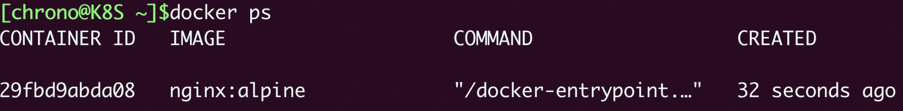
有了Nginx的反向代理之后，我们就可以打开浏览器，输入本机的“127.0.0.1”或者是虚拟机的IP地址（我这里仍然是“http://192.168.10.208”），看到WordPress的界面：

你也可以在Kubernetes里使用命令 kubectl logs 查看WordPress、MariaDB等Pod的运行日志，来验证它们是否已经正确地响应了请求：

使用Dashboard管理Kubernetes
到这里WordPress网站就搭建成功了，我们的主要任务也算是完成了，不过我还想再带你看看Kubernetes的图形管理界面，也就是Dashboard，看看不用命令行该怎么管理Kubernetes。
启动Dashboard的命令你还记得吗，在第10节课里讲插件的时候曾经说过，需要用minikube，命令是：
minikube dashboard
它会自动打开浏览器界面，显示出当前Kubernetes集群里的工作负载：

点击任意一个Pod的名字，就会进入管理界面，可以看到Pod的详细信息，而右上角有4个很重要的功能，分别可以查看日志、进入Pod内部、编辑Pod和删除Pod，相当于执行 logs、exec、edit、delete 命令，但要比命令行要直观友好的多：

比如说，我点击了第二个按钮，就会在浏览器里开启一个Shell窗口，直接就是Pod的内部Linux环境，在里面可以输入任意的命令，无论是查看状态还是调试都很方便：

ConfigMap/Secret等对象也可以在这里任意查看或编辑：

Dashboard里的可操作的地方还有很多，这里我只是一个非常简单的介绍。虽然你也许已经习惯了使用键盘和命令行，但偶尔换一换口味，改用鼠标和图形界面来管理Kubernetes也是件挺有意思的事情，有机会不妨尝试一下。
小结
好了，作为“初级篇”的最后一节课，今天我们回顾了一下Kubernetes的知识要点，我还是画一份详细的思维导图，帮助你课后随时复习总结。

这节课里我们使用Kubernetes搭建了WordPress网站，和第7讲里的Docker比较起来，我们应用了容器编排技术，以“声明式”的YAML来描述应用的状态和它们之间的关系，而不会列出详细的操作步骤，这就降低了我们的心智负担——调度、创建、监控等杂事都交给Kubernetes处理，我们只需“坐享其成”。
虽然我们朝着云原生的方向迈出了一大步，不过现在我们的容器编排还不够完善，Pod的IP地址还必须手工查找填写，缺少自动的服务发现机制，另外对外暴露服务的方式还很原始，必须要依赖集群外部力量的帮助。
所以，我们的学习之旅还将继续，在接下来的“中级篇”里，会开始研究更多的API对象，来解决这里遇到的问题。
课下作业
最后是课下作业时间，给你留两个动手题：
- MariaDB、WordPress现在用的是ConfigMap，能否改用Secret来实现呢？
- 你能否把Nginx代理转换成Pod的形式，让它在Kubernetes里运行呢？
期待能看到你动手体验后的想法，如果觉得有帮助，欢迎分享给自己身边的朋友一起学习。
下节课就是视频演示的操作课了，我们下节课再见。

16 视频：初级篇实操总结
你好，我是Chrono。
学完了前面的7节文字+音频的课程之后，今天又是一节视频课程，对“初级篇”里Kubernetes知识做一个回顾与总结，同样还是注重实际操作的演示，而不会讲解理论知识。
首先我们会启动本机环境里的minikube，登录虚拟节点看看apiserver、etcd、scheduler等组件，然后使用命令行工具kubectl操作Kubernetes，创建Pod、Job、CronJob、ConfigMap、Secret等API对象。
接下来我们视频上见。
一. minikube环境
视频操作要点：
我们从minikube环境开始，安装的过程就不演示了，我假设你已经按照[第9讲]里的步骤成功下载了minikube和kubectl的二进制文件。
先看一下minikube的版本号：
minikube version
显示的是当前的最新版本1.25.2，再看一下它的状态：
minikube status
可以看到Kubernetes的组件都没有启动，集群处于停止状态。
现在让我们用 minikube start 启动minikube集群：
minikube start --kubernetes-version=v1.23.3
稍等一小会，看看它提示里的表情符号，一个本地的微型Kubernetes集群就创建好了。从提示信息里可以看到，这个Kubernetes集群的版本是v1.23.3，运行在Docker 20.10.12上。
现在我们再看一下minikube的状态：
minikube status
可以看到Kubernetes的核心组件kubelet、apiserver都是运行状态了。
命令 minikube node list 可以查看这个微型集群的节点列表：
minikube node list
默认情况下，minikube只会创建一个节点，这里显示它的IP地址是“192.168.49.2”。
我们可以使用命令 minikube ssh 直接登录到这个节点，是虚拟机里的一个虚拟机，在里面可以执行任意的Linux操作：
uname -a #显示是Ubuntu操作系统
docker version #这个节点里也跑了一个docker，但其实是复用了宿主机的docker
docker ps #能够看到节点里以容器形式运行的Kubernetes进程，比如pause、scheduler等等
exit
看完了minikube集群的状态，让我们用kubectl来操作Kubernetes，首先是看版本号：
kubectl version
显示版本是1.23.3。用 kubectl get pod 看看当前集群里运行的运行应用，会发现是空的。
让我们用 run 命令运行一个Nginx Pod：
kubectl run ngx --image=nginx:alpine
这个时候我们再查看Pod， kubectl get pod 就会看到有一个Pod运行了。
这个Nginx pod属于default名字空间，而apiserver等核心组件是在kube-system名字空间，你可以用 -n 参数查看在kube-system里运行的Pod：
kubectl get pod -n kube-system
可以看到apiserver、etcd、scheduler、controller manager、coredns、kube-proxy等组件都是以Pod的形式在这里运行。
二. 用kubectl操作API对象
视频操作要点：
下面我们把注意力集中在kubectl操作Kubernetes API对象上。
先来查看当前Kubernetes版本支持的所有api对象，命令是 kubectl api-resources：
kubectl api-resources
它的输出信息很多，你可以看到Pod的简写是po、api version是v1、CronJob的简写是cj、api version是batch/v1，这些信息在我们编写YAML描述文件的时候非常有用。
再来看另一个常用的命令 kubectl explain，它能够给出api对象字段的详细信息，比如查看Pod：
kubectl explain pod
kubectl explain pod.metadata
kubectl explain pod.spec
kubectl explain pod.spec.containers
有了这个随手可得的文档，我们在编写YAML文件的时候就不会不知所措了。
创建YAML样板要用到两个特殊参数“–dry-run=client”和“-o yaml”，我把它定义成一个环境变量：
export out="--dry-run=client -o yaml"
然后我们再创建一个Pod的YAML：
kubectl run ngx --image=nginx:alpine $out > pod.yml
用vi编辑这个文件，删除不需要的字段，一个YAML描述文件形式的API对象就创建好了。
三. Pod对象
视频操作要点：
我们来看一个已经编辑好的Nginx pod对象，里面定义了名字是ngx-pod，有两个标签env和owner，spec里的containers定义了Pod里只有一个容器，镜像是nginx:alpine，对外的端口是80。
现在就可以使用命令 kubectl apply 创建这个Pod，再用 kubectl get pod 来查看状态：
kubectl apply -f ngx-pod.yml
kubectl get pod
命令 kubectl logs 会输出Nginx的运行日志：
kubectl logs ngx-pod
我们还可以用 kubectl exec 进入Pod里的容器，注意要有 --：
kubectl exec -it ngx-pod -- sh
nginx -v
uname -a
exit
最后我们用 kubectl delete 删除这个Pod：
kubectl delete -f ngx-pod.yml
四. 离线业务对象Job、CronJob
视频操作要点：
看完了Pod的基本操作之后，我们来看离线业务的对象Job和CronJob。
首先要用 kubectl create 创建一个Job样板文件：
kubectl create job echo-job --image=busybox $out
把它保存编辑之后，我们就得到了一个Job对象，用vi看一下。这个Job非常简单，执行echo命令，输出hello world。注意它的restartPolicy是OnFailure，表示失败后要原地重启容器。
现在来创建Job对象，用的命令还是 kubectl apply：
kubectl apply -f job.yml
创建之后用 kubectl get job、kubectl get pod 来分别查看Job和Pod的状态，使用命令 kubectl logs 来获取Pod的运行结果：
kubectl get job
kubectl get pod
kubectl logs echo-job-l52l7
CronJob同样也可以自动生成样板文件：
kubectl create cj echo-cj --image=busybox --schedule="" $out
vi cronjob.yml
CronJob对象里要注意的是，它使用jobTemplate又定义了一个Job，然后在字段schedule里使用cron语法定义了定时运行的规则，这里就是每分钟运行一次。
CronJob的用法和Job几乎是一样的，用 apply 命令创建后就可以用get来查看作业的运行状态：
kubectl apply -f cronjob.yml
kubectl get cj
kubectl get pod
最后让我们用 delete 命令删除这两个API对象：
kubectl delete -f job.yml
kubectl delete -f cronjob.yml
五. 配置信息对象ConfigMap和Secret
视频操作要点：
下面我来演示Kubernetes里的配置信息对象ConfigMap和secret。
还是老办法，先用 kubectl create 创建ConfigMap的样板文件，不过要命令后面多加一个参数 --from-literal ，从字面值生成一些数据：
kubectl create cm info --from-literal=k=v $out
Secret也是同样的创建方式，注意命令形式与ConfigMap略有不同，要用generic表示一般的机密信息：
kubectl create secret generic user --from-literal=name=root $out
我们来看看已经编辑好的YAML文件:
vi cm.yml
这里定义了4个配置项，注意ConfigMap要求必须是字符串，所以最好用引号引起来，避免解释成数字导致错误。
vi secret.yml
Secret里定义了3个配置项，由于做了base64编码，不能直接看到原值，不过我们可以在命令行里用工具base64 -d解码，比如看用户名：
echo cm9vdA== | base64 -d
现在让我们创建这两个对象：
kubectl apply -f cm.yml
kubectl apply -f secret.yml
然后查看这些对象的状态：
kubectl get cm
kubectl describe cm info
ConfigMap是明文显示：
kubectl get secret
kubectl describe secret user
而Secret的类型是Opaque，不透明的，不能直接看到。
接下来我们把这些配置信息以存储卷的形式注入Pod，需要在Pod里加入“volumes”和“volumeMounts”字段：
vi vol-pod.yml
在这份YAML里，我为ConfigMap和Secret定义了两个volume，分别是cm-vol和sec-vol，然后在volumeMounts里把它们挂载到了tmp目录。
用 kubectl apply 命令创建之后，我们还是用 kubectl exec 进入Pod，看看配置信息被加载成了什么形式：
kubectl apply -f vol-pod.yml
kubectl get pod
kubectl exec -it vol-pod -- sh
cd /tmp
ls #加载成两个目录
cd cm-items/
cat greeting
cd ..
cd sec-items/
cat pwd #已经被base64解码
六. 在Kubernetes里搭建WordPress
视频操作要点：
最后我们在Kubernetes里搭建WordPress，这些YAML文件都已经准备好了，只需要逐个用 apply 命令创建就可以。
首先是MariaDB数据库：
kubectl apply -f mariadb-pod.yml
kubectl get pod -o wide
需要看它的IP地址，这里是172.17.0.？，然后我们修改WordPress YAML，环境变量host改成MariaDB的地址，然后再创建WordPress Pod：
kubectl apply -f wp-pod.yml
kubectl get pod -o wide
现在这两个Pod都已经正常运行了，我们需要把WordPress的端口暴露出来，用的是 kubectl port-forward 命令：
kubectl port-forward wp-pod 8080:80 &
然后我们用Docker运行Nginx容器，代理这个端口：
./wp_proxy.sh
docker ps
现在我们打开Mac上的Safari浏览器，输入虚拟机的IP地址“http://192.168.10.208”，就可以看到WordPress的安装界面了。
课下作业
今天是动手操作课，记得让自己实际上手操作一遍，毕竟看一遍和写一遍学习效果完全不同哦。
欢迎分享自己的学习体验和疑问，在留言区参与讨论。我们下节课见。
17 更真实的云原生：实际搭建多节点的Kubernetes集群
你好，我是Chrono。
到今天，你学习这个专栏的进度就已经过半了，在前面的“入门篇”我们了解了Docker和容器技术，在“初级篇”我们掌握了Kubernetes的基本对象、原理和操作方法，一路走下来收获很多。
现在你应该对Kubernetes和容器编排有了一些初步的认识，那么接下来，让我们继续深入研究Kubernetes的其他API对象，也就是那些在Docker中不存在的但对云计算、集群管理至关重要的概念。
不过在那之前，我们还需要有一个比minikube更真实的Kubernetes环境，它应该是一个多节点的Kubernetes集群，这样更贴近现实中的生产系统，能够让我们尽快地拥有实际的集群使用经验。
所以在今天的这节课里，我们就来暂时忘掉minikube，改用kubeadm（https://kubernetes.io/zh/docs/reference/setup-tools/kubeadm/）搭建出一个新的Kubernetes集群，一起来看看更真实的云原生环境。
什么是kubeadm
前面的几节课里我们使用的都是minikube，它非常简单易用，不需要什么配置工作，就能够在单机环境里创建出一个功能完善的Kubernetes集群，给学习、开发、测试都带来了极大的便利。
不过minikube还是太“迷你”了，方便的同时也隐藏了很多细节，离真正生产环境里的计算集群有一些差距，毕竟许多需求、任务只有在多节点的大集群里才能够遇到，相比起来，minikube真的只能算是一个“玩具”。
那么，多节点的Kubernetes集群是怎么从无到有地创建出来的呢？
[第10讲]说过Kubernetes是很多模块构成的，而实现核心功能的组件像apiserver、etcd、scheduler等本质上都是可执行文件，所以也可以采用和其他系统差不多的方式，使用Shell脚本或者Ansible等工具打包发布到服务器上。
不过Kubernetes里的这些组件的配置和相互关系实在是太复杂了，用Shell、Ansible来部署的难度很高，需要具有相当专业的运维管理知识才能配置、搭建好集群，而且即使这样，搭建的过程也非常麻烦。
为了简化Kubernetes的部署工作，让它能够更“接地气”，社区里就出现了一个专门用来在集群中安装Kubernetes的工具，名字就叫“kubeadm”，意思就是“Kubernetes管理员”。

kubeadm，原理和minikube类似，也是用容器和镜像来封装Kubernetes的各种组件，但它的目标不是单机部署，而是要能够轻松地在集群环境里部署Kubernetes，并且让这个集群接近甚至达到生产级质量。
而在保持这个高水准的同时，kubeadm还具有了和minikube一样的易用性，只要很少的几条命令，如 init、join、upgrade、reset 就能够完成Kubernetes集群的管理维护工作，这让它不仅适用于集群管理员，也适用于开发、测试人员。
实验环境的架构是什么样的
在使用kubeadm搭建实验环境之前，我们先来看看集群的架构设计，也就是说要准备好集群所需的硬件设施。
这里我画了一张系统架构图，图里一共有3台主机，当然它们都是使用虚拟机软件VirtualBox/VMWare虚拟出来的，下面我来详细说明一下：
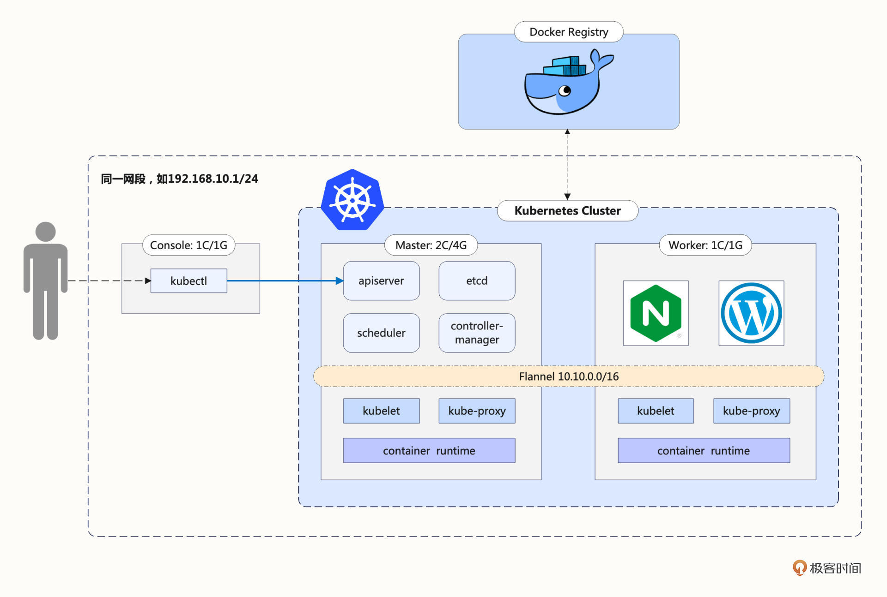
所谓的多节点集群，要求服务器应该有两台或者更多，为了简化我们只取最小值，所以这个Kubernetes集群就只有两台主机，一台是Master节点，另一台是Worker节点。当然，在完全掌握了kubeadm的用法之后，你可以在这个集群里添加更多的节点。
Master节点需要运行apiserver、etcd、scheduler、controller-manager等组件，管理整个集群，所以对配置要求比较高，至少是2核CPU、4GB的内存。

而Worker节点没有管理工作，只运行业务应用，所以配置可以低一些，为了节省资源我给它分配了1核CPU和1GB的内存，可以说是低到不能再低了。
基于模拟生产环境的考虑，在Kubernetes集群之外还需要有一台起辅助作用的服务器。
它的名字叫Console，意思是控制台，我们要在上面安装命令行工具kubectl，所有对Kubernetes集群的管理命令都是从这台主机发出去的。这也比较符合实际情况，因为安全的原因，集群里的主机部署好之后应该尽量少直接登录上去操作。
要提醒你的是，Console这台主机只是逻辑上的概念，不一定要是独立，你在实际安装部署的时候完全可以复用之前minikube的虚拟机，或者直接使用Master/Worker节点作为控制台。
这3台主机共同组成了我们的实验环境，所以在配置的时候要注意它们的网络选项，必须是在同一个网段，你可以再回顾一下[课前准备]，保证它们使用的是同一个“Host-Only”（VirtualBox）或者“自定”（VMWare Fusion）网络。
安装前的准备工作
不过有了架构图里的这些主机之后，我们还不能立即开始使用kubeadm安装Kubernetes，因为Kubernetes对系统有一些特殊要求，我们必须还要在Master和Worker节点上做一些准备。
这些工作的详细信息你都可以在Kubernetes的官网上找到，但它们分散在不同的文档里，比较凌乱，所以我把它们整合到了这里，包括改主机名、改Docker配置、改网络设置、改交换分区这四步。
第一，由于Kubernetes使用主机名来区分集群里的节点，所以每个节点的hostname必须不能重名。你需要修改“/etc/hostname”这个文件，把它改成容易辨识的名字，比如Master节点就叫 master，Worker节点就叫 worker：
sudo vi /etc/hostname
第二，虽然Kubernetes目前支持多种容器运行时，但Docker还是最方便最易用的一种，所以我们仍然继续使用Docker作为Kubernetes的底层支持，使用 apt 安装Docker Engine（可参考[第1讲]）。
安装完成后需要你再对Docker的配置做一点修改，在“/etc/docker/daemon.json”里把cgroup的驱动程序改成 systemd ，然后重启Docker的守护进程，具体的操作我列在了下面：
cat <<EOF | sudo tee /etc/docker/daemon.json
{
"exec-opts": ["native.cgroupdriver=systemd"],
"log-driver": "json-file",
"log-opts": {
"max-size": "100m"
},
"storage-driver": "overlay2"
}
EOF
sudo systemctl enable docker
sudo systemctl daemon-reload
sudo systemctl restart docker
第三，为了让Kubernetes能够检查、转发网络流量，你需要修改iptables的配置，启用“br_netfilter”模块：
cat <<EOF | sudo tee /etc/modules-load.d/k8s.conf
br_netfilter
EOF
cat <<EOF | sudo tee /etc/sysctl.d/k8s.conf
net.bridge.bridge-nf-call-ip6tables = 1
net.bridge.bridge-nf-call-iptables = 1
net.ipv4.ip_forward=1 # better than modify /etc/sysctl.conf
EOF
sudo sysctl --system
第四，你需要修改“/etc/fstab”，关闭Linux的swap分区，提升Kubernetes的性能：
sudo swapoff -a
sudo sed -ri '/\sswap\s/s/^#?/#/' /etc/fstab
完成之后，最好记得重启一下系统，然后给虚拟机拍个快照做备份，避免后续的操作失误导致重复劳动。
安装kubeadm
好，现在我们就要安装kubeadm了，在Master节点和Worker节点上都要做这一步。
kubeadm可以直接从Google自己的软件仓库下载安装，但国内的网络不稳定，很难下载成功，需要改用其他的软件源，这里我选择了国内的某云厂商：
sudo apt install -y apt-transport-https ca-certificates curl
curl https://mirrors.aliyun.com/kubernetes/apt/doc/apt-key.gpg | sudo apt-key add -
cat <<EOF | sudo tee /etc/apt/sources.list.d/kubernetes.list
deb https://mirrors.aliyun.com/kubernetes/apt/ kubernetes-xenial main
EOF
sudo apt update
更新了软件仓库，我们就可以用 apt install 获取kubeadm、kubelet和kubectl这三个安装必备工具了。apt默认会下载最新版本，但我们也可以指定版本号，比如使用和minikube相同的“1.23.3”：
sudo apt install -y kubeadm=1.23.3-00 kubelet=1.23.3-00 kubectl=1.23.3-00
安装完成之后，你可以用 kubeadm version、kubectl version 来验证版本是否正确：
kubeadm version
kubectl version --client

另外按照Kubernetes官网的要求，我们最好再使用命令 apt-mark hold ，锁定这三个软件的版本，避免意外升级导致版本错误：
sudo apt-mark hold kubeadm kubelet kubectl
下载Kubernetes组件镜像
前面我说过，kubeadm把apiserver、etcd、scheduler等组件都打包成了镜像，以容器的方式启动Kubernetes，但这些镜像不是放在Docker Hub上，而是放在Google自己的镜像仓库网站gcr.io，而它在国内的访问很困难，直接拉取镜像几乎是不可能的。
所以我们需要采取一些变通措施，提前把镜像下载到本地。
使用命令 kubeadm config images list 可以查看安装Kubernetes所需的镜像列表，参数 --kubernetes-version 可以指定版本号：
kubeadm config images list --kubernetes-version v1.23.3
k8s.gcr.io/kube-apiserver:v1.23.3
k8s.gcr.io/kube-controller-manager:v1.23.3
k8s.gcr.io/kube-scheduler:v1.23.3
k8s.gcr.io/kube-proxy:v1.23.3
k8s.gcr.io/pause:3.6
k8s.gcr.io/etcd:3.5.1-0
k8s.gcr.io/coredns/coredns:v1.8.6
知道了镜像的名字和标签就好办了，我们有两种方法可以比较容易地获取这些镜像。
第一种方法是利用minikube。因为minikube本身也打包了Kubernetes的组件镜像，所以完全可以从它的节点里把这些镜像导出之后再拷贝过来。
具体做法也很简单，先启动minikube，然后 minikube ssh 登录进虚拟节点，用 docker save -o 命令把相应版本的镜像都保存下来，再用 minikube cp 拷贝到本地，剩下的事情就不用我多说了：

这种方法安全可靠，不过操作上麻烦了些，所以就有了第二种方法，从国内的镜像网站下载然后再用 docker tag 改名，能够使用Shell编程实现自动化：
repo=registry.aliyuncs.com/google_containers
for name in `kubeadm config images list --kubernetes-version v1.23.3`; do
src_name=${name#k8s.gcr.io/}
src_name=${src_name#coredns/}
docker pull $repo/$src_name
docker tag $repo/$src_name $name
docker rmi $repo/$src_name
done
第二种方法速度快，但也有隐患，万一网站不提供服务，或者改动了镜像就比较危险了。
所以你可以把这两种方法结合起来，先用脚本从国内镜像仓库下载，然后再用minikube里的镜像做对比，只要IMAGE ID是一样就说明镜像是正确的。
这张截图就是Kubernetes 1.23.3的镜像列表（amd64/arm64），你在安装时可以参考：
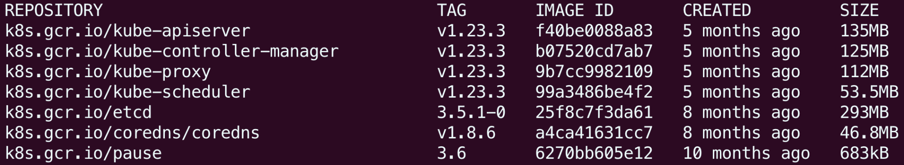
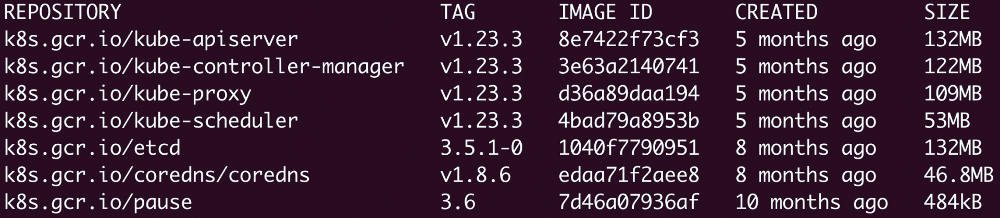
安装Master节点
准备工作都做好了，现在就可以开始正式安装Kubernetes了，我们先从Master节点开始。
kubeadm的用法非常简单，只需要一个命令 kubeadm init 就可以把组件在Master节点上运行起来，不过它还有很多参数用来调整集群的配置，你可以用 -h 查看。这里我只说一下我们实验环境用到的3个参数：
- --pod-network-cidr，设置集群里Pod的IP地址段。
- --apiserver-advertise-address，设置apiserver的IP地址，对于多网卡服务器来说很重要（比如VirtualBox虚拟机就用了两块网卡），可以指定apiserver在哪个网卡上对外提供服务。
- --kubernetes-version，指定Kubernetes的版本号。
下面的这个安装命令里，我指定了Pod的地址段是“10.10.0.0/16”，apiserver的服务地址是“192.168.10.210”，Kubernetes的版本号是“1.23.3”：
sudo kubeadm init \
--pod-network-cidr=10.10.0.0/16 \
--apiserver-advertise-address=192.168.10.210 \
--kubernetes-version=v1.23.3
因为我们已经提前把镜像下载到了本地，所以kubeadm的安装过程很快就完成了，它还会提示出接下来要做的工作：
To start using your cluster, you need to run the following as a regular user:
mkdir -p $HOME/.kube
sudo cp -i /etc/kubernetes/admin.conf $HOME/.kube/config
sudo chown $(id -u):$(id -g) $HOME/.kube/config
意思是要在本地建立一个“.kube”目录，然后拷贝kubectl的配置文件，你只要原样拷贝粘贴就行。
另外还有一个很重要的“kubeadm join”提示，其他节点要加入集群必须要用指令里的token和ca证书，所以这条命令务必拷贝后保存好：
Then you can join any number of worker nodes by running the following on each as root:
kubeadm join 192.168.10.210:6443 --token tv9mkx.tw7it9vphe158e74 \
--discovery-token-ca-cert-hash sha256:e8721b8630d5b562e23c010c70559a6d3084f629abad6a2920e87855f8fb96f3
安装完成后，你就可以使用 kubectl version、kubectl get node 来检查Kubernetes的版本和集群的节点状态了：
kubectl version
kubectl get node

你会注意到Master节点的状态是“NotReady”，这是由于还缺少网络插件，集群的内部网络还没有正常运作。
安装Flannel网络插件
Kubernetes定义了CNI标准，有很多网络插件，这里我选择最常用的Flannel，可以在它的GitHub仓库里（https://github.com/flannel-io/flannel/）找到相关文档。
它安装也很简单，只需要使用项目的“kube-flannel.yml”在Kubernetes里部署一下就好了。不过因为它应用了Kubernetes的网段地址，你需要修改文件里的“net-conf.json”字段，把 Network 改成刚才kubeadm的参数 --pod-network-cidr 设置的地址段。
比如在这里，就要修改成“10.10.0.0/16”：
net-conf.json: |
{
"Network": "10.10.0.0/16",
"Backend": {
"Type": "vxlan"
}
}
改好后，你就可以用 kubectl apply 来安装Flannel网络了：
kubectl apply -f kube-flannel.yml
稍等一小会，等镜像拉取下来并运行之后，你就可以执行 kubectl get node 来看节点状态：
kubectl get node

这时你应该能够看到Master节点的状态是“Ready”，表明节点网络也工作正常了。
安装Worker节点
如果你成功安装了Master节点，那么Worker节点的安装就简单多了，只需要用之前拷贝的那条 kubeadm join 命令就可以了，记得要用 sudo 来执行：
sudo \
kubeadm join 192.168.10.210:6443 --token tv9mkx.tw7it9vphe158e74 \
--discovery-token-ca-cert-hash sha256:e8721b8630d5b562e23c010c70559a6d3084f629abad6a2920e87855f8fb96f3
它会连接Master节点，然后拉取镜像，安装网络插件，最后把节点加入集群。
当然，这个过程中同样也会遇到拉取镜像的问题，你可以如法炮制，提前把镜像下载到Worker节点本地，这样安装过程中就不会再有障碍了。
Worker节点安装完毕后，执行 kubectl get node ，就会看到两个节点都是“Ready”状态：
现在让我们用 kubectl run ，运行Nginx来测试一下：
kubectl run ngx --image=nginx:alpine
kubectl get pod -o wide
会看到Pod运行在Worker节点上，IP地址是“10.10.1.2”，表明我们的Kubernetes集群部署成功。
小结
好了，把Master节点和Worker节点都安装好，我们今天的任务就算是基本完成了。
后面Console节点的部署工作更加简单，它只需要安装一个kubectl，然后复制“config”文件就行，你可以直接在Master节点上用“scp”远程拷贝，例如：
scp `which kubectl` chrono@192.168.10.208:~/
scp ~/.kube/config chrono@192.168.10.208:~/.kube
今天的过程多一些，要点我列在了下面：
- kubeadm是一个方便易用的Kubernetes工具，能够部署生产级别的Kubernetes集群。
- 安装Kubernetes之前需要修改主机的配置，包括主机名、Docker配置、网络设置、交换分区等。
- Kubernetes的组件镜像存放在gcr.io，国内下载比较麻烦，可以考虑从minikube或者国内镜像网站获取。
- 安装Master节点需要使用命令
kubeadm init，安装Worker节点需要使用命令kubeadm join，还要部署Flannel等网络插件才能让集群正常工作。
因为这些操作都是各种Linux命令，全手动敲下来确实很繁琐，所以我把这些步骤都做成了Shell脚本放在了GitHub上（https://github.com/chronolaw/k8s_study/tree/master/admin），你可以下载后直接运行。
课下作业
最后的课下作业是实际动手操作，请你多花费一些时间，用虚拟机创建出集群节点，再用kubeadm部署出这个多节点的Kubernetes环境，在接下来的“中级篇”和“高级篇”里我们就会在这个Kubernetes集群里做实验。
安装部署过程中有任何疑问，欢迎在留言区留言，我会第一时间回复你。如果觉得有帮助，也欢迎分享给自己身边的朋友一起学习，下节课见。

18 Deployment：让应用永不宕机
你好，我是Chrono。
在上一节课里，我们使用kubeadm搭建了一个由两个节点组成的小型Kubernetes集群，比起单机的minikube，它更接近真实环境，在这里面做实验我们今后也更容易过渡到生产系统。
有了这个Kubernetes环境，接下来我们就在“初级篇”里学习的Pod知识基础上，深入研究一些由Pod衍生出来的其他API对象。
今天要看的API对象名字叫“Deployment”，顾名思义，它是专门用来部署应用程序的，能够让应用永不宕机，多用来发布无状态的应用，是Kubernetes里最常用也是最有用的一个对象。
为什么要有Deployment
在[第13讲]里，我们学习了API对象Job和CronJob，它们代表了生产环境中的离线业务，通过对Pod的包装，向Pod添加控制字段，实现了基于Pod运行临时任务和定时任务的功能。
那么，除了“离线业务”，另一大类业务——也就是“在线业务”，在Kubernetes里应该如何处理呢？
我们先看看用Pod是否就足够了。因为它在YAML里使用“containers”就可以任意编排容器，而且还有一个“restartPolicy”字段，默认值就是 Always，可以监控Pod里容器的状态，一旦发生异常，就会自动重启容器。
不过，“restartPolicy”只能保证容器正常工作。不知你有没有想到，如果容器之外的Pod出错了该怎么办呢？比如说，有人不小心用 kubectl delete 误删了Pod，或者Pod运行的节点发生了断电故障，那么Pod就会在集群里彻底消失，对容器的控制也就无从谈起了。
还有我们也都知道，在线业务远不是单纯启动一个Pod这么简单，还有多实例、高可用、版本更新等许多复杂的操作。比如最简单的多实例需求，为了提高系统的服务能力，应对突发的流量和压力，我们需要创建多个应用的副本，还要即时监控它们的状态。如果还是只使用Pod，那就会又走回手工管理的老路，没有利用好Kubernetes自动化运维的优势。
其实，解决的办法也很简单，因为Kubernetes已经给我们提供了处理这种问题的思路，就是“单一职责”和“对象组合”。既然Pod管理不了自己，那么我们就再创建一个新的对象，由它来管理Pod，采用和Job/CronJob一样的形式——“对象套对象”。
这个用来管理Pod，实现在线业务应用的新API对象，就是Deployment。
如何使用YAML描述Deployment
我们先用命令 kubectl api-resources 来看看Deployment的基本信息：
kubectl api-resources
NAME SHORTNAMES APIVERSION NAMESPACED KIND
deployments deploy apps/v1 true Deployment
从它的输出信息里可以知道，Deployment的简称是“deploy”，它的apiVersion是“apps/v1”，kind是“Deployment”。
所以，依据前面学习Pod、Job的经验，你就应该知道Deployment的YAML文件头该怎么写了：
apiVersion: apps/v1
kind: Deployment
metadata:
name: xxx-dep
当然了，我们还是可以使用命令 kubectl create 来创建Deployment的YAML样板，免去反复手工输入的麻烦。
创建Deployment样板的方式和Job也差不多，先指定类型是Deployment（简写deploy），然后是它的名字，再用 --image 参数指定镜像名字。
比如下面的这条命令，我就创建了一个名字叫 ngx-dep 的对象，使用的镜像是 nginx:alpine：
export out="--dry-run=client -o yaml"
kubectl create deploy ngx-dep --image=nginx:alpine $out
得到的Deployment样板大概是下面的这个样子：
apiVersion: apps/v1
kind: Deployment
metadata:
labels:
app: ngx-dep
name: ngx-dep
spec:
replicas: 2
selector:
matchLabels:
app: ngx-dep
template:
metadata:
labels:
app: ngx-dep
spec:
containers:
- image: nginx:alpine
name: nginx
把它和Job/CronJob对比一下，你会发现有相似也有不同。相似的地方是都有“spec”“template”字段，“template”字段里也是一个Pod；不同的地方在于它的“spec”部分多了 replicas、selector 这两个新字段，聪明的你应该会猜到，这或许就会是Deployment特殊能力的根本。
没错，这两个新字段就是Deployment实现多实例、高可用等功能的关键所在。
Deployment的关键字段
先看 replicas 字段。它的含义比较简单明了，就是“副本数量”的意思，也就是说，指定要在Kubernetes集群里运行多少个Pod实例。
有了这个字段，就相当于为Kubernetes明确了应用部署的“期望状态”，Deployment对象就可以扮演运维监控人员的角色，自动地在集群里调整Pod的数量。
比如，Deployment对象刚创建出来的时候，Pod数量肯定是0，那么它就会根据YAML文件里的Pod模板，逐个创建出要求数量的Pod。
接下来Kubernetes还会持续地监控Pod的运行状态，万一有Pod发生意外消失了，数量不满足“期望状态”，它就会通过apiserver、scheduler等核心组件去选择新的节点，创建出新的Pod，直至数量与“期望状态”一致。
这里面的工作流程很复杂，但对于我们这些外部用户来说，设置起来却是非常简单，只需要一个 replicas 字段就搞定了，不需要再用人工监控管理，整个过程完全自动化。
下面我们再来看另一个关键字段 selector，它的作用是“筛选”出要被Deployment管理的Pod对象，下属字段“matchLabels”定义了Pod对象应该携带的label，它必须和“template”里Pod定义的“labels”完全相同，否则Deployment就会找不到要控制的Pod对象，apiserver也会告诉你YAML格式校验错误无法创建。
这个 selector 字段的用法初看起来好像是有点多余，为了保证Deployment成功创建，我们必须在YAML里把label重复写两次：一次是在“selector.matchLabels”，另一次是在“template.matadata”。像在这里，你就要在这两个地方连续写 app: ngx-dep ：
...
spec:
replicas: 2
selector:
matchLabels:
app: ngx-dep
template:
metadata:
labels:
app: ngx-dep
...
你也许会产生疑问：为什么要这么麻烦？为什么不能像Job对象一样，直接用“template”里定义好的Pod就行了呢？
这是因为在线业务和离线业务的应用场景差异很大。离线业务中的Pod基本上是一次性的，只与这个业务有关，紧紧地绑定在Job对象里，一般不会被其他对象所使用。
而在线业务就要复杂得多了，因为Pod永远在线，除了要在Deployment里部署运行，还可能会被其他的API对象引用来管理，比如负责负载均衡的Service对象。
所以Deployment和Pod实际上是一种松散的组合关系，Deployment实际上并不“持有”Pod对象，它只是帮助Pod对象能够有足够的副本数量运行，仅此而已。如果像Job那样，把Pod在模板里“写死”，那么其他的对象再想要去管理这些Pod就无能为力了。
好明白了这一点，那我们该用什么方式来描述Deployment和Pod的组合关系呢？
Kubernetes采用的是这种“贴标签”的方式，通过在API对象的“metadata”元信息里加各种标签（labels），我们就可以使用类似关系数据库里查询语句的方式，筛选出具有特定标识的那些对象。通过标签这种设计，Kubernetes就解除了Deployment和模板里Pod的强绑定，把组合关系变成了“弱引用”。
虽然话是这么说，但对于很多Kubernetes的初学者来说，理解Deployment里的spec定义还是一个难点。
所以我还是画了一张图，用不同的颜色来区分Deployment YAML里的字段，并且用虚线特别标记了 matchLabels 和 labels 之间的联系，希望能够帮助你理解Deployment与被它管理的Pod的组合关系。
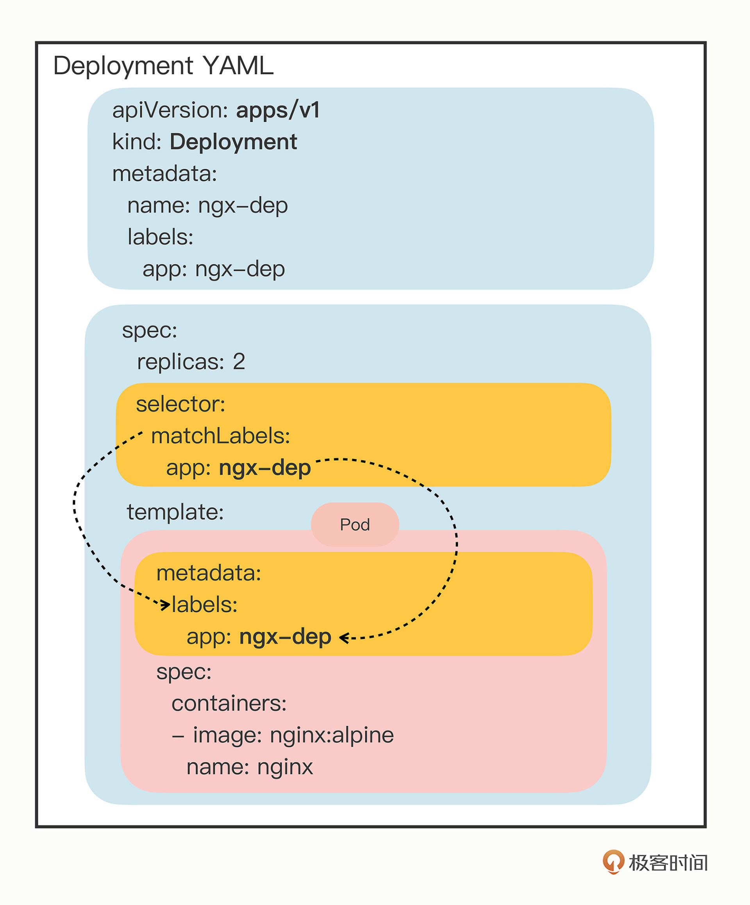
如何使用kubectl操作Deployment
把Deployment的YAML写好之后，我们就可以用 kubectl apply 来创建对象了：
kubectl apply -f deploy.yml
要查看Deployment的状态，仍然是用 kubectl get 命令：
kubectl get deploy

它显示的信息都很重要：
- READY表示运行的Pod数量，前面的数字是当前数量，后面的数字是期望数量，所以“2/2”的意思就是要求有两个Pod运行，现在已经启动了两个Pod。
- UP-TO-DATE指的是当前已经更新到最新状态的Pod数量。因为如果要部署的Pod数量很多或者Pod启动比较慢，Deployment完全生效需要一个过程，UP-TO-DATE就表示现在有多少个Pod已经完成了部署，达成了模板里的“期望状态”。
- AVAILABLE要比READY、UP-TO-DATE更进一步，不仅要求已经运行，还必须是健康状态，能够正常对外提供服务，它才是我们最关心的Deployment指标。
- 最后一个AGE就简单了，表示Deployment从创建到现在所经过的时间，也就是运行的时间。
因为Deployment管理的是Pod，我们最终用的也是Pod，所以还需要用 kubectl get pod 命令来看看Pod的状态：
kubectl get pod

从截图里你可以看到，被Deployment管理的Pod自动带上了名字，命名的规则是Deployment的名字加上两串随机数（其实是Pod模板的Hash值）。
好，到现在对象创建成功，Deployment和Pod的状态也都没问题，可以正常服务，我们是时候检验一下Deployment部署的效果了，看看是否如前面所说的，Deployment部署的应用真的可以做到“永不宕机”？
来尝试一下吧，让我们用 kubectl delete 删除一个Pod，模拟一下Pod发生故障的情景：
kubectl delete pod ngx-dep-6796688696-jm6tt
然后再查看Pod的状态：
kubectl get pod

你就会“惊喜”地发现，被删除的Pod确实是消失了，但Kubernetes在Deployment的管理之下，很快又创建出了一个新的Pod，保证了应用实例的数量始终是我们在YAML里定义的数量。
这就证明，Deployment确实实现了它预定的目标，能够让应用“永远在线”“永不宕机”。
在Deployment部署成功之后，你还可以随时调整Pod的数量，实现所谓的“应用伸缩”。这项工作在Kubernetes出现之前对于运维来说是一件很困难的事情，而现在由于有了Deployment就变得轻而易举了。
kubectl scale 是专门用于实现“扩容”和“缩容”的命令，你只要用参数 --replicas 指定需要的副本数量，Kubernetes就会自动增加或者删除Pod，让最终的Pod数量达到“期望状态”。
比如下面的这条命令，就把Nginx应用扩容到了5个：
kubectl scale --replicas=5 deploy ngx-dep

但要注意， kubectl scale 是命令式操作，扩容和缩容只是临时的措施，如果应用需要长时间保持一个确定的Pod数量，最好还是编辑Deployment的YAML文件，改动“replicas”，再以声明式的 kubectl apply 修改对象的状态。
因为Deployment使用了 selector 字段，这里我就顺便提一下Kubernetes里 labels 字段的使用方法吧。
之前我们通过 labels 为对象“贴”了各种“标签”，在使用 kubectl get 命令的时候，加上参数 -l，使用 ==、!=、in、notin 的表达式，就能够很容易地用“标签”筛选、过滤出所要查找的对象（有点类似社交媒体的 #tag 功能），效果和Deployment里的 selector 字段是一样的。
看两个例子，第一条命令找出“app”标签是 nginx 的所有Pod，第二条命令找出“app”标签是 ngx、nginx、ngx-dep 的所有Pod：
kubectl get pod -l app=nginx
kubectl get pod -l 'app in (ngx, nginx, ngx-dep)'
小结
好了，今天我们学习了Kubernetes里的一个重要的对象：Deployment，它表示的是在线业务，和Job/CronJob的结构类似，也包装了Pod对象，通过添加额外的控制功能实现了应用永不宕机，你也可以再对比一下[第13讲]来加深对它的理解。
我再简单小结一下今天的内容：
- Pod只能管理容器，不能管理自身，所以就出现了Deployment，由它来管理Pod。
- Deployment里有三个关键字段，其中的template和Job一样，定义了要运行的Pod模板。
- replicas字段定义了Pod的“期望数量”，Kubernetes会自动维护Pod数量到正常水平。
- selector字段定义了基于labels筛选Pod的规则，它必须与template里Pod的labels一致。
- 创建Deployment使用命令
kubectl apply，应用的扩容、缩容使用命令kubectl scale。
学了Deployment这个API对象，我们今后就不应该再使用“裸Pod”了。即使我们只运行一个Pod，也要以Deployment的方式来创建它，虽然它的 replicas 字段值是1，但Deployment会保证应用永远在线。
另外，作为Kubernetes里最常用的对象，Deployment的本事还不止这些，它还支持滚动更新、版本回退，自动伸缩等高级功能，这些在“高级篇”里我们再详细学习。
课下作业
最后是课下作业时间，给你留两个思考题：
- 如果把Deployment里的
replicas字段设置成0会有什么效果？有什么意义呢？ - 你觉得Deployment能够应用在哪些场景里？有没有什么缺点或者不足呢？
欢迎在留言区分享你的想法。
这一章我们学习的Kubernetes高级对象，对云计算、集群管理非常重要。多多思考，打好基础，我们继续深入。下节课再见。

19 Daemonset：忠实可靠的看门狗
你好，我是Chrono。
上一次课里我们学习了Kubernetes里的一个新API对象Deployment，它代表了在线业务，能够管理多个Pod副本，让应用永远在线，还能够任意扩容缩容。
虽然Deployment非常有用，但是，它并没有完全解决运维部署应用程序的所有难题。因为和简单的离线业务比起来，在线业务的应用场景太多太复杂，Deployment的功能特性只覆盖了其中的一部分，无法满足其他场景的需求。
今天我们就来看看另一类代表在线业务API对象：DaemonSet，它会在Kubernetes集群的每个节点上都运行一个Pod，就好像是Linux系统里的“守护进程”（Daemon）。
为什么要有DaemonSet
想知道为什么Kubernetes会引入DaemonSet对象，那就得知道Deployment有哪些不足。
我们先简单复习一下Deployment，它能够创建任意多个的Pod实例，并且维护这些Pod的正常运行，保证应用始终处于可用状态。
但是，Deployment并不关心这些Pod会在集群的哪些节点上运行，在它看来，Pod的运行环境与功能是无关的，只要Pod的数量足够，应用程序应该会正常工作。
这个假设对于大多数业务来说是没问题的，比如Nginx、WordPress、MySQL，它们不需要知道集群、节点的细节信息，只要配置好环境变量和存储卷，在哪里“跑”都是一样的。
但是有一些业务比较特殊，它们不是完全独立于系统运行的，而是与主机存在“绑定”关系，必须要依附于节点才能产生价值，比如说：
- 网络应用（如kube-proxy），必须每个节点都运行一个Pod，否则节点就无法加入Kubernetes网络。
- 监控应用（如Prometheus），必须每个节点都有一个Pod用来监控节点的状态，实时上报信息。
- 日志应用（如Fluentd），必须在每个节点上运行一个Pod，才能够搜集容器运行时产生的日志数据。
- 安全应用，同样的，每个节点都要有一个Pod来执行安全审计、入侵检查、漏洞扫描等工作。
这些业务如果用Deployment来部署就不太合适了，因为Deployment所管理的Pod数量是固定的，而且可能会在集群里“漂移”，但，实际的需求却是要在集群里的每个节点上都运行Pod，也就是说Pod的数量与节点数量保持同步。
所以，Kubernetes就定义了新的API对象DaemonSet，它在形式上和Deployment类似，都是管理控制Pod，但管理调度策略却不同。DaemonSet的目标是在集群的每个节点上运行且仅运行一个Pod，就好像是为节点配上一只“看门狗”，忠实地“守护”着节点，这就是DaemonSet名字的由来。
如何使用YAML描述DaemonSet
DaemonSet和Deployment都属于在线业务，所以它们也都是“apps”组，使用命令 kubectl api-resources 可以知道它的简称是 ds ，YAML文件头信息应该是：
apiVersion: apps/v1
kind: DaemonSet
metadata:
name: xxx-ds
不过非常奇怪，kubectl 不提供自动创建DaemonSet YAML样板的功能，也就是说，我们不能用命令 kubectl create 直接创建出一个DaemonSet对象。

这个缺点对于我们使用DaemonSet的确造成了不小的麻烦，毕竟如果用 kubectl explain 一个个地去查字段再去写YAML实在是太辛苦了。
不过，Kubernetes不给我们生成样板文件的机会，我们也可以自己去“抄”。你可以在Kubernetes的官网（https://kubernetes.io/zh/docs/concepts/workloads/controllers/daemonset/）上找到一份DaemonSet的YAML示例，把它拷贝下来，再去掉多余的部分，就可以做成自己的一份样板文件，大概是下面的这个样子：
apiVersion: apps/v1
kind: DaemonSet
metadata:
name: redis-ds
labels:
app: redis-ds
spec:
selector:
matchLabels:
name: redis-ds
template:
metadata:
labels:
name: redis-ds
spec:
containers:
- image: redis:5-alpine
name: redis
ports:
- containerPort: 6379
这个DaemonSet对象的名字是 redis-ds，镜像是 redis:5-alpine，使用了流行的NoSQL数据库Redis（你也许对它很熟悉）。
把这份YAML和上节课里的Deployment对象简单对比一下，你会发现：
前面的 kind、metadata 是对象独有的信息，自然是不同的，但下面的 spec 部分，DaemonSet也有 selector 字段，匹配 template 里Pod的 labels 标签，和Deployment对象几乎一模一样。
再仔细观察，我们就会看到，DaemonSet在 spec 里没有 replicas 字段，这是它与Deployment的一个关键不同点，意味着它不会在集群里创建多个Pod副本，而是要在每个节点上只创建出一个Pod实例。
也就是说，DaemonSet仅仅是在Pod的部署调度策略上和Deployment不同，其他的都是相同的，某种程度上我们也可以把DaemonSet看做是Deployment的一个特例。
我还是把YAML描述文件画了一张图，好让你看清楚与Deployment的差异：
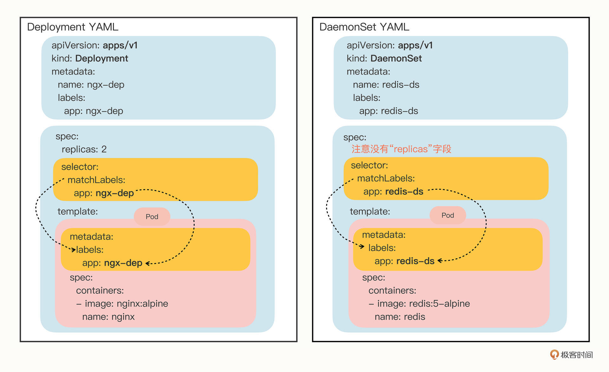
了解到这些区别，现在，我们就可以用变通的方法来创建DaemonSet的YAML样板了，你只需要用 kubectl create 先创建出一个Deployment对象，然后把 kind 改成 DaemonSet，再删除 spec.replicas 就行了，比如：
export out="--dry-run=client -o yaml"
# change "kind" to DaemonSet
kubectl create deploy redis-ds --image=redis:5-alpine $out
如何在Kubernetes里使用DaemonSet
现在，让我们执行命令 kubectl apply，把YAML发送给Kubernetes，让它创建DaemonSet对象，再用 kubectl get 查看对象的状态：
看这张截图，虽然我们没有指定DaemonSet里Pod要运行的数量，但它自己就会去查找集群里的节点，在节点里创建Pod。因为我们的实验环境里有一个Master一个Worker，而Master默认是不跑应用的，所以DaemonSet就只生成了一个Pod，运行在了“worker”节点上。
暂停一下，你发现这里有什么不对劲了吗？
按照DaemonSet的本意，应该在每个节点上都运行一个Pod实例才对，但Master节点却被排除在外了，这就不符合我们当初的设想了。
显然，DaemonSet没有尽到“看门”的职责，它的设计与Kubernetes集群的工作机制发生了冲突，有没有办法解决呢？
当然，Kubernetes早就想到了这点，为了应对Pod在某些节点的“调度”和“驱逐”问题，它定义了两个新的概念：污点（taint）和容忍度（toleration）。
什么是污点（taint）和容忍度（toleration）
“污点”是Kubernetes节点的一个属性，它的作用也是给节点“贴标签”，但为了不和已有的 labels 字段混淆，就改成了 taint。
和“污点”相对的，就是Pod的“容忍度”，顾名思义，就是Pod能否“容忍”污点。
我们把它俩放在一起就比较好理解了。集群里的节点各式各样，有的节点“纯洁无瑕”，没有“污点”；而有的节点因为某种原因粘上了“泥巴”，也就有了“污点”。Pod也脾气各异，有的“洁癖”很严重，不能容忍“污点”，只能挑选“干净”的节点；而有的Pod则比较“大大咧咧”，要求不那么高，可以适当地容忍一些小“污点”。
这么看来，“污点”和“容忍度”倒是有点像是一个“相亲”的过程。Pod就是一个挑剔的“甲方”，而“乙方”就是集群里的各个节点，Pod会根据自己对“污点”的“容忍程度”来选择合适的目标，比如要求“不抽烟不喝酒”，但可以“无车无房”，最终决定在哪个节点上“落户”。
Kubernetes在创建集群的时候会自动给节点Node加上一些“污点”，方便Pod的调度和部署。你可以用 kubectl describe node 来查看Master和Worker的状态：
kubectl describe node master
Name: master
Roles: control-plane,master
...
Taints: node-role.kubernetes.io/master:NoSchedule
...
kubectl describe node worker
Name: worker
Roles: <none>
...
Taints: <none>
...
可以看到，Master节点默认有一个 taint，名字是 node-role.kubernetes.io/master，它的效果是 NoSchedule，也就是说这个污点会拒绝Pod调度到本节点上运行，而Worker节点的 taint 字段则是空的。
这正是Master和Worker在Pod调度策略上的区别所在，通常来说Pod都不能容忍任何“污点”，所以加上了 taint 属性的Master节点也就会无缘Pod了。
明白了“污点”和“容忍度”的概念，你就知道该怎么让DaemonSet在Master节点（或者任意其他节点）上运行了，方法有两种。
第一种方法是去掉Master节点上的 taint，让Master变得和Worker一样“纯洁无瑕”，DaemonSet自然就不需要再区分Master/Worker。
操作Node上的“污点”属性需要使用命令 kubectl taint，然后指定节点名、污点名和污点的效果，去掉污点要额外加上一个 -。
比如要去掉Master节点的“NoSchedule”效果，就要用这条命令：
kubectl taint node master node-role.kubernetes.io/master:NoSchedule-

因为DaemonSet一直在监控集群节点的状态，命令执行后Master节点已经没有了“污点”，所以它立刻就会发现变化，然后就会在Master节点上创建一个“守护”Pod。你可以用 kubectl get 来查看这个变动情况：

但是，这种方法修改的是Node的状态，影响面会比较大，可能会导致很多Pod都跑到这个节点上运行，所以我们可以保留Node的“污点”，为需要的Pod添加“容忍度”，只让某些Pod运行在个别节点上，实现“精细化”调度。
这就是第二种方法，为Pod添加字段 tolerations，让它能够“容忍”某些“污点”，就可以在任意的节点上运行了。
tolerations 是一个数组，里面可以列出多个被“容忍”的“污点”，需要写清楚“污点”的名字、效果。比较特别是要用 operator 字段指定如何匹配“污点”，一般我们都使用 Exists，也就是说存在这个名字和效果的“污点”。
如果我们想让DaemonSet里的Pod能够在Master节点上运行，就要写出这样的一个 tolerations，容忍节点的 node-role.kubernetes.io/master:NoSchedule 这个污点：
tolerations:
- key: node-role.kubernetes.io/master
effect: NoSchedule
operator: Exists
现在我们先用 kubectl taint 命令把Master的“污点”加上：
kubectl taint node master node-role.kubernetes.io/master:NoSchedule

然后我们再重新部署加上了“容忍度”的DaemonSet：
kubectl apply -f ds.yml
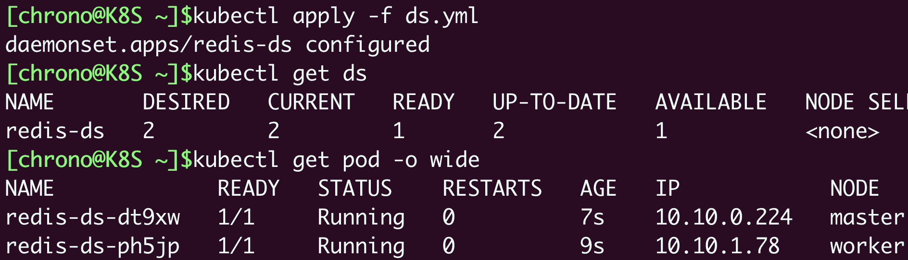
你就会看到DaemonSet仍然有两个Pod，分别运行在Master和Worker节点上，与第一种方法的效果相同。
需要特别说明一下，“容忍度”并不是DaemonSet独有的概念，而是从属于Pod，所以理解了“污点”和“容忍度”之后，你可以在Job/CronJob、Deployment里为它们管理的Pod也加上 tolerations，从而能够更灵活地调度应用。
至于都有哪些污点、污点有哪些效果我就不细说了，Kubernetes官网文档（https://kubernetes.io/zh/docs/concepts/scheduling-eviction/taint-and-toleration/）上都列的非常清楚，在理解了工作原理之后，相信你自己学起来也不会太难。
什么是静态Pod
DaemonSet是在Kubernetes里运行节点专属Pod最常用的方式，但它不是唯一的方式，Kubernetes还支持另外一种叫“静态Pod”的应用部署手段。
“静态Pod”非常特殊，它不受Kubernetes系统的管控，不与apiserver、scheduler发生关系，所以是“静态”的。
但既然它是Pod，也必然会“跑”在容器运行时上，也会有YAML文件来描述它，而唯一能够管理它的Kubernetes组件也就只有在每个节点上运行的kubelet了。
“静态Pod”的YAML文件默认都存放在节点的 /etc/kubernetes/manifests 目录下，它是Kubernetes的专用目录。
下面的这张截图就是Master节点里目录的情况：

你可以看到，Kubernetes的4个核心组件apiserver、etcd、scheduler、controller-manager原来都以静态Pod的形式存在的，这也是为什么它们能够先于Kubernetes集群启动的原因。
如果你有一些DaemonSet无法满足的特殊的需求，可以考虑使用静态Pod，编写一个YAML文件放到这个目录里，节点的kubelet会定期检查目录里的文件，发现变化就会调用容器运行时创建或者删除静态Pod。
小结
好了，今天我们学习了Kubernetes里部署应用程序的另一种方式：DaemonSet，它与Deployment很类似，差别只在于Pod的调度策略，适用于在系统里运行节点的“守护进程”。
简单小结一下今天的内容：
- DaemonSet的目标是为集群里的每个节点部署唯一的Pod，常用于监控、日志等业务。
- DaemonSet的YAML描述与Deployment非常接近，只是没有
replicas字段。 - “污点”和“容忍度”是与DaemonSet相关的两个重要概念，分别从属于Node和Pod，共同决定了Pod的调度策略。
- 静态Pod也可以实现和DaemonSet同样的效果，但它不受Kubernetes控制，必须在节点上纯手动部署，应当慎用。
课下作业
最后是课下作业时间，给你留两个思考题：
- 你觉得DaemonSet和Deployment在用法上还有哪些不同？它们分别适用于哪些场景？
- 你觉得在Kubernetes里应该如何用好“污点”和“容忍度”这两个概念？
欢迎留言分享你的想法，和其他同学一起参与讨论。我们下节课再见。
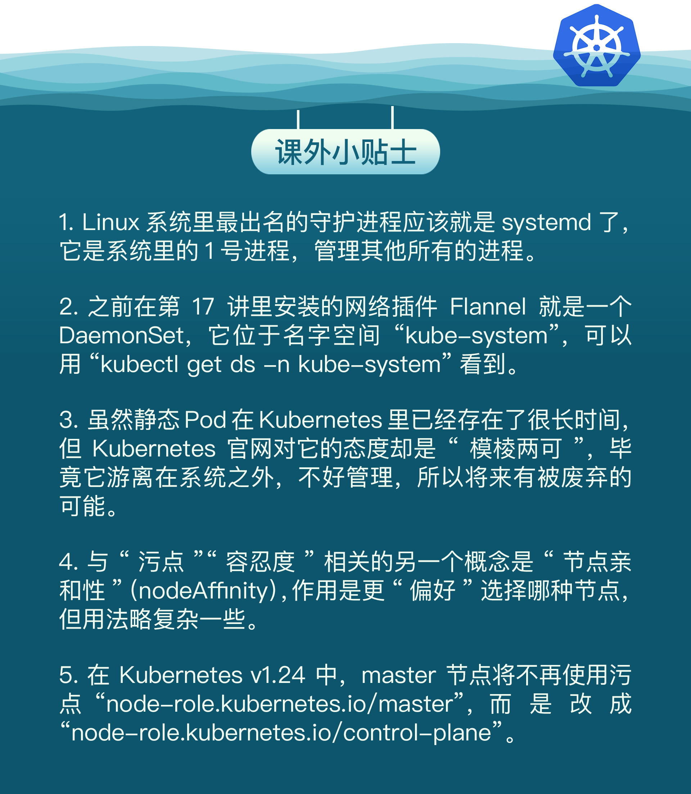
20 Service：微服务架构的应对之道
你好，我是Chrono。
在前面的课里我们学习了Deployment和DaemonSet这两个API对象，它们都是在线业务，只是以不同的策略部署应用，Deployment创建任意多个实例，Daemon为每个节点创建一个实例。
这两个API对象可以部署多种形式的应用，而在云原生时代，微服务无疑是应用的主流形态。为了更好地支持微服务以及服务网格这样的应用架构，Kubernetes又专门定义了一个新的对象：Service，它是集群内部的负载均衡机制，用来解决服务发现的关键问题。
今天我们就来看看什么是Service、如何使用YAML来定义Service，以及如何在Kubernetes里用好Service。
为什么要有Service
有了Deployment和DaemonSet，我们在集群里发布应用程序的工作轻松了很多。借助Kubernetes强大的自动化运维能力，我们可以把应用的更新上线频率由以前的月、周级别提升到天、小时级别，让服务质量更上一层楼。
不过，在应用程序快速版本迭代的同时，另一个问题也逐渐显现出来了，就是“服务发现”。
在Kubernetes集群里Pod的生命周期是比较“短暂”的，虽然Deployment和DaemonSet可以维持Pod总体数量的稳定，但在运行过程中，难免会有Pod销毁又重建，这就会导致Pod集合处于动态的变化之中。
这种“动态稳定”对于现在流行的微服务架构来说是非常致命的，试想一下，后台Pod的IP地址老是变来变去，客户端该怎么访问呢？如果不处理好这个问题，Deployment和DaemonSet把Pod管理得再完善也是没有价值的。
其实，这个问题也并不是什么难事，业内早就有解决方案来针对这样“不稳定”的后端服务，那就是“负载均衡”，典型的应用有LVS、Nginx等等。它们在前端与后端之间加入了一个“中间层”，屏蔽后端的变化，为前端提供一个稳定的服务。
但LVS、Nginx毕竟不是云原生技术，所以Kubernetes就按照这个思路，定义了新的API对象：Service。
所以估计你也能想到，Service的工作原理和LVS、Nginx差不多，Kubernetes会给它分配一个静态IP地址，然后它再去自动管理、维护后面动态变化的Pod集合，当客户端访问Service，它就根据某种策略，把流量转发给后面的某个Pod。
下面的这张图来自Kubernetes官网文档，比较清楚地展示了Service的工作原理：

你可以看到，这里Service使用了iptables技术，每个节点上的kube-proxy组件自动维护iptables规则，客户不再关心Pod的具体地址，只要访问Service的固定IP地址，Service就会根据iptables规则转发请求给它管理的多个Pod，是典型的负载均衡架构。
不过Service并不是只能使用iptables来实现负载均衡，它还有另外两种实现技术：性能更差的userspace和性能更好的ipvs，但这些都属于底层细节，我们不需要刻意关注。
如何使用YAML描述Service
知道了Service的基本工作原理，我们来看看怎么为Service编写YAML描述文件。
照例我们还是可以用命令 kubectl api-resources 查看它的基本信息，可以知道它的简称是svc，apiVersion是 v1。注意，这说明它与Pod一样，属于Kubernetes的核心对象，不关联业务应用，与Job、Deployment是不同的。
现在，相信你很容易写出Service的YAML文件头了吧：
apiVersion: v1
kind: Service
metadata:
name: xxx-svc
同样的，能否让Kubernetes为我们自动创建Service的YAML样板呢？还是使用命令 kubectl create 吗？
这里Kubernetes又表现出了行为上的不一致。虽然它可以自动创建YAML样板，但不是用命令 kubectl create，而是另外一个命令 kubectl expose，也许Kubernetes认为“expose”能够更好地表达Service“暴露”服务地址的意思吧。
因为在Kubernetes里提供服务的是Pod，而Pod又可以用Deployment/DaemonSet对象来部署，所以 kubectl expose 支持从多种对象创建服务，Pod、Deployment、DaemonSet都可以。
使用 kubectl expose 指令时还需要用参数 --port 和 --target-port 分别指定映射端口和容器端口，而Service自己的IP地址和后端Pod的IP地址可以自动生成，用法上和Docker的命令行参数 -p 很类似，只是略微麻烦一点。
比如，如果我们要为[第18讲]里的ngx-dep对象生成Service，命令就要这么写：
export out="--dry-run=client -o yaml"
kubectl expose deploy ngx-dep --port=80 --target-port=80 $out
生成的Service YAML大概是这样的：
apiVersion: v1
kind: Service
metadata:
name: ngx-svc
spec:
selector:
app: ngx-dep
ports:
- port: 80
targetPort: 80
protocol: TCP
你会发现，Service的定义非常简单，在“spec”里只有两个关键字段，selector 和 ports。
selector 和Deployment/DaemonSet里的作用是一样的，用来过滤出要代理的那些Pod。因为我们指定要代理Deployment，所以Kubernetes就为我们自动填上了ngx-dep的标签，会选择这个Deployment对象部署的所有Pod。
从这里你也可以看到，Kubernetes的这个标签机制虽然很简单，却非常强大有效，很轻松就关联上了Deployment的Pod。
ports 就很好理解了，里面的三个字段分别表示外部端口、内部端口和使用的协议，在这里就是内外部都使用80端口，协议是TCP。
当然，你在这里也可以把 ports 改成“8080”等其他的端口，这样外部服务看到的就是Service给出的端口，而不会知道Pod的真正服务端口。
为了让你看清楚Service与它引用的Pod的关系，我把这两个YAML对象画在了下面的这张图里，需要重点关注的是 selector、targetPort 与Pod的关联：

如何在Kubernetes里使用Service
在使用YAML创建Service对象之前，让我们先对第18讲里的Deployment做一点改造，方便观察Service的效果。
首先，我们创建一个ConfigMap，定义一个Nginx的配置片段，它会输出服务器的地址、主机名、请求的URI等基本信息：
apiVersion: v1
kind: ConfigMap
metadata:
name: ngx-conf
data:
default.conf: |
server {
listen 80;
location / {
default_type text/plain;
return 200
'srv : $server_addr:$server_port\nhost: $hostname\nuri : $request_method $host $request_uri\ndate: $time_iso8601\n';
}
}
然后我们在Deployment的“template.volumes”里定义存储卷，再用“volumeMounts”把配置文件加载进Nginx容器里：
apiVersion: apps/v1
kind: Deployment
metadata:
name: ngx-dep
spec:
replicas: 2
selector:
matchLabels:
app: ngx-dep
template:
metadata:
labels:
app: ngx-dep
spec:
volumes:
- name: ngx-conf-vol
configMap:
name: ngx-conf
containers:
- image: nginx:alpine
name: nginx
ports:
- containerPort: 80
volumeMounts:
- mountPath: /etc/nginx/conf.d
name: ngx-conf-vol
这两处修改用到了[第14讲]里的知识，如果你还没有熟练掌握，可以回去复习一下。
部署这个Deployment之后，我们就可以创建Service对象了，用的还是 kubectl apply：
kubectl apply -f svc.yml
创建之后，用命令 kubectl get 就可以看到它的状态：
你可以看到，Kubernetes为Service对象自动分配了一个IP地址“10.96.240.115”，这个地址段是独立于Pod地址段的（比如第17讲里的10.10.xx.xx）。而且Service对象的IP地址还有一个特点，它是一个“虚地址”，不存在实体，只能用来转发流量。
想要看Service代理了哪些后端的Pod，你可以用 kubectl describe 命令：
kubectl describe svc ngx-svc

截图里显示Service对象管理了两个endpoint，分别是“10.10.0.232:80”和“10.10.1.86:80”，初步判断与Service、Deployment的定义相符，那么这两个IP地址是不是Nginx Pod的实际地址呢？
我们还是用 kubectl get pod 来看一下，加上参数 -o wide：
kubectl get pod -o wide
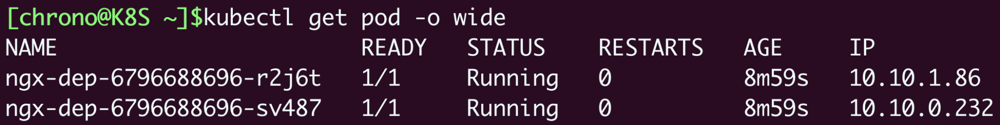
把Pod的地址与Service的信息做个对比，我们就能够验证Service确实用一个静态IP地址代理了两个Pod的动态IP地址。
那怎么测试Service的负载均衡效果呢？
因为Service、 Pod的IP地址都是Kubernetes集群的内部网段，所以我们需要用 kubectl exec 进入到Pod内部（或者ssh登录集群节点），再用curl等工具来访问Service：
kubectl exec -it ngx-dep-6796688696-r2j6t -- sh
在Pod里，用curl访问Service的IP地址，就会看到它把数据转发给后端的Pod，输出信息会显示具体是哪个Pod响应了请求，就表明Service确实完成了对Pod的负载均衡任务。
我们再试着删除一个Pod，看看Service是否会更新后端Pod的信息，实现自动化的服务发现：
kubectl delete pod ngx-dep-6796688696-r2j6t

由于Pod被Deployment对象管理，删除后会自动重建，而Service又会通过controller-manager实时监控Pod的变化情况，所以就会立即更新它代理的IP地址。通过截图你就可以看到有一个IP地址“10.10.1.86”消失了，换成了新的“10.10.1.87”，它就是新创建的Pod。
你也可以再尝试一下使用“ping”来测试Service的IP地址：

会发现根本ping不通，因为Service的IP地址是“虚”的，只用于转发流量，所以ping无法得到回应数据包，也就失败了。
如何以域名的方式使用Service
到这里Service的基本用法就讲得差不多了，不过它还有一些高级特性值得了解。
我们先来看看DNS域名。
Service对象的IP地址是静态的，保持稳定，这在微服务里确实很重要，不过数字形式的IP地址用起来还是不太方便。这个时候Kubernetes的DNS插件就派上了用处，它可以为Service创建易写易记的域名，让Service更容易使用。
使用DNS域名之前，我们要先了解一个新的概念：名字空间（namespace）。
注意它与我们在[第2讲]里说的用于资源隔离的Linux namespace技术完全不同，千万不要弄混了。Kubernetes只是借用了这个术语，但目标是类似的，用来在集群里实现对API对象的隔离和分组。
namespace的简写是“ns”，你可以使用命令 kubectl get ns 来查看当前集群里都有哪些名字空间，也就是说API对象有哪些分组：
kubectl get ns

Kubernetes有一个默认的名字空间，叫“default”，如果不显式指定，API对象都会在这个“default”名字空间里。而其他的名字空间都有各自的用途，比如“kube-system”就包含了apiserver、etcd等核心组件的Pod。
因为DNS是一种层次结构，为了避免太多的域名导致冲突，Kubernetes就把名字空间作为域名的一部分，减少了重名的可能性。
Service对象的域名完全形式是“对象.名字空间.svc.cluster.local”，但很多时候也可以省略后面的部分，直接写“对象.名字空间”甚至“对象名”就足够了，默认会使用对象所在的名字空间（比如这里就是default）。
现在我们来试验一下DNS域名的用法，还是先 kubectl exec 进入Pod，然后用curl访问 ngx-svc、ngx-svc.default 等域名：

可以看到，现在我们就不再关心Service对象的IP地址，只需要知道它的名字，就可以用DNS的方式去访问后端服务。
比起Docker，这无疑是一个巨大的进步，而且对比其他微服务框架（如Dubbo、Spring Cloud），由于服务发现机制被集成在了基础设施里，也会让应用的开发更加便捷。
（顺便说一下，Kubernetes也为每个Pod分配了域名，形式是“IP地址.名字空间.pod.cluster.local”，但需要把IP地址里的 . 改成 - 。比如地址 10.10.1.87，它对应的域名就是 10-10-1-87.default.pod。）
如何让Service对外暴露服务
由于Service是一种负载均衡技术，所以它不仅能够管理Kubernetes集群内部的服务，还能够担当向集群外部暴露服务的重任。
Service对象有一个关键字段“type”，表示Service是哪种类型的负载均衡。前面我们看到的用法都是对集群内部Pod的负载均衡，所以这个字段的值就是默认的“ClusterIP”，Service的静态IP地址只能在集群内访问。
除了“ClusterIP”，Service还支持其他三种类型，分别是“ExternalName”“LoadBalancer”“NodePort”。不过前两种类型一般由云服务商提供，我们的实验环境用不到，所以接下来就重点看“NodePort”这个类型。
如果我们在使用命令 kubectl expose 的时候加上参数 --type=NodePort，或者在YAML里添加字段 type:NodePort，那么Service除了会对后端的Pod做负载均衡之外，还会在集群里的每个节点上创建一个独立的端口，用这个端口对外提供服务，这也正是“NodePort”这个名字的由来。
让我们修改一下Service的YAML文件，加上字段“type”：
apiVersion: v1
...
spec:
...
type: NodePort
然后创建对象，再查看它的状态：
kubectl get svc

就会看到“TYPE”变成了“NodePort”，而在“PORT”列里的端口信息也不一样，除了集群内部使用的“80”端口，还多出了一个“30651”端口，这就是Kubernetes在节点上为Service创建的专用映射端口。
因为这个端口号属于节点，外部能够直接访问，所以现在我们就可以不用登录集群节点或者进入Pod内部，直接在集群外使用任意一个节点的IP地址，就能够访问Service和它代理的后端服务了。
比如我现在所在的服务器是“192.168.10.208”，在这台主机上用curl访问Kubernetes集群的两个节点“192.168.10.210”“192.168.10.220”，就可以得到Nginx Pod的响应数据：

我把NodePort与Service、Deployment的对应关系画成了图，你看了应该就能更好地明白它的工作原理：

学到这里，你是不是觉得NodePort类型的Service很方便呢。
不过它也有一些缺点。
第一个缺点是它的端口数量很有限。Kubernetes为了避免端口冲突，默认只在“30000~32767”这个范围内随机分配，只有2000多个，而且都不是标准端口号，这对于具有大量业务应用的系统来说根本不够用。
第二个缺点是它会在每个节点上都开端口，然后使用kube-proxy路由到真正的后端Service，这对于有很多计算节点的大集群来说就带来了一些网络通信成本，不是特别经济。
第三个缺点，它要求向外界暴露节点的IP地址，这在很多时候是不可行的，为了安全还需要在集群外再搭一个反向代理，增加了方案的复杂度。
虽然有这些缺点，但NodePort仍然是Kubernetes对外提供服务的一种简单易行的方式，在其他更好的方式出现之前，我们也只能使用它。
小结
好了，今天我们学习了Service对象，它实现了负载均衡和服务发现技术，是Kubernetes应对微服务、服务网格等现代流行应用架构的解决方案。
我再小结一下今天的要点：
- Pod的生命周期很短暂，会不停地创建销毁，所以就需要用Service来实现负载均衡，它由Kubernetes分配固定的IP地址，能够屏蔽后端的Pod变化。
- Service对象使用与Deployment、DaemonSet相同的“selector”字段，选择要代理的后端Pod，是松耦合关系。
- 基于DNS插件，我们能够以域名的方式访问Service，比静态IP地址更方便。
- 名字空间是Kubernetes用来隔离对象的一种方式，实现了逻辑上的对象分组，Service的域名里就包含了名字空间限定。
- Service的默认类型是“ClusterIP”，只能在集群内部访问，如果改成“NodePort”，就会在节点上开启一个随机端口号，让外界也能够访问内部的服务。
课下作业
最后是课下作业时间，给你留两个思考题：
- 为什么Service的IP地址是静态且虚拟的？出于什么目的，有什么好处？
- 你了解负载均衡技术吗？它都有哪些算法，Service会用哪种呢？
欢迎在留言区分享你的思考，以输出带动自己输入。到今天，你已经完成2/3的专栏学习了，回看一起学过的内容，不知你收获如何呢。
如果觉得有帮助，不妨分享给自己身边的朋友一起学习，我们下节课再见。

21 Ingress：集群进出流量的总管
你好，我是Chrono。
上次课里我们学习了Service对象，它是Kubernetes内置的负载均衡机制，使用静态IP地址代理动态变化的Pod，支持域名访问和服务发现，是微服务架构必需的基础设施。
Service很有用，但也只能说是“基础设施”，它对网络流量的管理方案还是太简单，离复杂的现代应用架构需求还有很大的差距，所以Kubernetes就在Service之上又提出了一个新的概念：Ingress。
比起Service，Ingress更接近实际业务，对它的开发、应用和讨论也是社区里最火爆的，今天我们就来看看Ingress，还有与它关联的Ingress Controller、Ingress Class等对象。
为什么要有Ingress
通过上次课程的讲解，我们知道了Service的功能和运行机制，它本质上就是一个由kube-proxy控制的四层负载均衡，在TCP/IP协议栈上转发流量（Service工作原理示意图）：
但在四层上的负载均衡功能还是太有限了，只能够依据IP地址和端口号做一些简单的判断和组合，而我们现在的绝大多数应用都是跑在七层的HTTP/HTTPS协议上的，有更多的高级路由条件，比如主机名、URI、请求头、证书等等，而这些在TCP/IP网络栈里是根本看不见的。
Service还有一个缺点，它比较适合代理集群内部的服务。如果想要把服务暴露到集群外部，就只能使用NodePort或者LoadBalancer这两种方式，而它们都缺乏足够的灵活性，难以管控，这就导致了一种很无奈的局面：我们的服务空有一身本领，却没有合适的机会走出去大展拳脚。
该怎么解决这个问题呢？
Kubernetes还是沿用了Service的思路，既然Service是四层的负载均衡，那么我再引入一个新的API对象，在七层上做负载均衡是不是就可以了呢？
不过除了七层负载均衡，这个对象还应该承担更多的职责，也就是作为流量的总入口，统管集群的进出口数据，“扇入”“扇出”流量（也就是我们常说的“南北向”），让外部用户能够安全、顺畅、便捷地访问内部服务（图片来源）：
所以，这个API对象就顺理成章地被命名为 Ingress，意思就是集群内外边界上的入口。
为什么要有Ingress Controller
再对比一下Service我们就能更透彻地理解Ingress。
Ingress可以说是在七层上另一种形式的Service，它同样会代理一些后端的Pod，也有一些路由规则来定义流量应该如何分配、转发，只不过这些规则都使用的是HTTP/HTTPS协议。
你应该知道，Service本身是没有服务能力的，它只是一些iptables规则，真正配置、应用这些规则的实际上是节点里的kube-proxy组件。如果没有kube-proxy，Service定义得再完善也没有用。
同样的，Ingress也只是一些HTTP路由规则的集合，相当于一份静态的描述文件，真正要把这些规则在集群里实施运行，还需要有另外一个东西，这就是 Ingress Controller，它的作用就相当于Service的kube-proxy，能够读取、应用Ingress规则，处理、调度流量。
按理来说，Kubernetes应该把Ingress Controller内置实现，作为基础设施的一部分，就像kube-proxy一样。
不过Ingress Controller要做的事情太多，与上层业务联系太密切，所以Kubernetes把Ingress Controller的实现交给了社区，任何人都可以开发Ingress Controller，只要遵守Ingress规则就好。
这就造成了Ingress Controller“百花齐放”的盛况。
由于Ingress Controller把守了集群流量的关键入口，掌握了它就拥有了控制集群应用的“话语权”，所以众多公司纷纷入场，精心打造自己的Ingress Controller，意图在Kubernetes流量进出管理这个领域占有一席之地。
这些实现中最著名的，就是老牌的反向代理和负载均衡软件Nginx了。从Ingress Controller的描述上我们也可以看到，HTTP层面的流量管理、安全控制等功能其实就是经典的反向代理，而Nginx则是其中稳定性最好、性能最高的产品，所以它也理所当然成为了Kubernetes里应用得最广泛的Ingress Controller。
不过，因为Nginx是开源的，谁都可以基于源码做二次开发，所以它又有很多的变种，比如社区的Kubernetes Ingress Controller（https://github.com/kubernetes/ingress-nginx）、Nginx公司自己的Nginx Ingress Controller（https://github.com/nginxinc/kubernetes-ingress）、还有基于OpenResty的Kong Ingress Controller（https://github.com/Kong/kubernetes-ingress-controller）等等。
根据Docker Hub上的统计，Nginx公司的开发实现是下载量最多的Ingress Controller，所以我将以它为例，讲解Ingress和Ingress Controller的用法。
下面的这张图就来自Nginx官网，比较清楚地展示了Ingress Controller在Kubernetes集群里的地位：
为什么要有IngressClass
那么到现在，有了Ingress和Ingress Controller，我们是不是就可以完美地管理集群的进出流量了呢？
最初Kubernetes也是这么想的，一个集群里有一个Ingress Controller，再给它配上许多不同的Ingress规则，应该就可以解决请求的路由和分发问题了。
但随着Ingress在实践中的大量应用，很多用户发现这种用法会带来一些问题，比如：
- 由于某些原因，项目组需要引入不同的Ingress Controller，但Kubernetes不允许这样做；
- Ingress规则太多，都交给一个Ingress Controller处理会让它不堪重负；
- 多个Ingress对象没有很好的逻辑分组方式，管理和维护成本很高；
- 集群里有不同的租户，他们对Ingress的需求差异很大甚至有冲突，无法部署在同一个Ingress Controller上。
所以，Kubernetes就又提出了一个 Ingress Class 的概念，让它插在Ingress和Ingress Controller中间，作为流量规则和控制器的协调人，解除了Ingress和Ingress Controller的强绑定关系。
现在，Kubernetes用户可以转向管理Ingress Class，用它来定义不同的业务逻辑分组，简化Ingress规则的复杂度。比如说，我们可以用Class A处理博客流量、Class B处理短视频流量、Class C处理购物流量。

这些Ingress和Ingress Controller彼此独立，不会发生冲突，所以上面的那些问题也就随着Ingress Class的引入迎刃而解了。
如何使用YAML描述Ingress/Ingress Class
我们花了比较多的篇幅学习Ingress、 Ingress Controller、Ingress Class这三个对象，全是理论，你可能觉得学得有点累。但这也是没办法的事情，毕竟现实的业务就是这么复杂，而且这个设计架构也是社区经过长期讨论后达成的一致结论，是我们目前能获得的最佳解决方案。
好，了解了这三个概念之后，我们就可以来看看如何为它们编写YAML描述文件了。
和之前学习Deployment、Service对象一样，首先应当用命令 kubectl api-resources 查看它们的基本信息，输出列在这里了：
kubectl api-resources
NAME SHORTNAMES APIVERSION NAMESPACED KIND
ingresses ing networking.k8s.io/v1 true Ingress
ingressclasses networking.k8s.io/v1 false IngressClass
你可以看到，Ingress和Ingress Class的apiVersion都是“networking.k8s.io/v1”，而且Ingress有一个简写“ing”，但Ingress Controller怎么找不到呢？
这是因为Ingress Controller和其他两个对象不太一样，它不只是描述文件，是一个要实际干活、处理流量的应用程序，而应用程序在Kubernetes里早就有对象来管理了，那就是Deployment和DaemonSet，所以我们只需要再学习Ingress和Ingress Class的的用法就可以了。
先看Ingress。
Ingress也是可以使用 kubectl create 来创建样板文件的，和Service类似，它也需要用两个附加参数：
--class，指定Ingress从属的Ingress Class对象。--rule，指定路由规则，基本形式是“URI=Service”，也就是说是访问HTTP路径就转发到对应的Service对象，再由Service对象转发给后端的Pod。
好，现在我们就执行命令，看看Ingress到底长什么样：
export out="--dry-run=client -o yaml"
kubectl create ing ngx-ing --rule="ngx.test/=ngx-svc:80" --class=ngx-ink $out
apiVersion: networking.k8s.io/v1
kind: Ingress
metadata:
name: ngx-ing
spec:
ingressClassName: ngx-ink
rules:
- host: ngx.test
http:
paths:
- path: /
pathType: Exact
backend:
service:
name: ngx-svc
port:
number: 80
在这份Ingress的YAML里，有两个关键字段：“ingressClassName”和“rules”，分别对应了命令行参数，含义还是比较好理解的。
只是“rules”的格式比较复杂，嵌套层次很深。不过仔细点看就会发现它是把路由规则拆散了，有host和http path，在path里又指定了路径的匹配方式，可以是精确匹配（Exact）或者是前缀匹配（Prefix），再用backend来指定转发的目标Service对象。
不过我个人觉得，Ingress YAML里的描述还不如 kubectl create 命令行里的 --rule 参数来得直观易懂，而且YAML里的字段太多也很容易弄错，建议你还是让kubectl来自动生成规则，然后再略作修改比较好。
有了Ingress对象，那么与它关联的Ingress Class是什么样的呢？
其实Ingress Class本身并没有什么实际的功能，只是起到联系Ingress和Ingress Controller的作用，所以它的定义非常简单，在“spec”里只有一个必需的字段“controller”，表示要使用哪个Ingress Controller，具体的名字就要看实现文档了。
比如，如果我要用Nginx开发的Ingress Controller，那么就要用名字“nginx.org/ingress-controller”：
apiVersion: networking.k8s.io/v1
kind: IngressClass
metadata:
name: ngx-ink
spec:
controller: nginx.org/ingress-controller
Ingress和Service、Ingress Class的关系我也画成了一张图，方便你参考：
如何在Kubernetes里使用Ingress/Ingress Class
因为Ingress Class很小，所以我把它与Ingress合成了一个YAML文件，让我们用 kubectl apply 创建这两个对象：
kubectl apply -f ingress.yml
然后我们用 kubectl get 来查看对象的状态：
kubectl get ingressclass
kubectl get ing
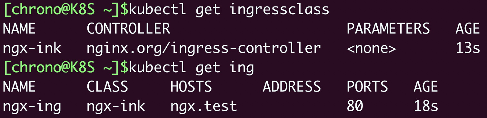
命令 kubectl describe 可以看到更详细的Ingress信息：
kubectl describe ing ngx-ing

可以看到，Ingress对象的路由规则Host/Path就是在YAML里设置的域名“ngx.test/”，而且已经关联了第20讲里创建的Service对象，还有Service后面的两个Pod。
另外，不要对Ingress里“Default backend”的错误提示感到惊讶，在找不到路由的时候，它被设计用来提供一个默认的后端服务，但不设置也不会有什么问题，所以大多数时候我们都忽略它。
如何在Kubernetes里使用Ingress Controller
准备好了Ingress和Ingress Class，接下来我们就需要部署真正处理路由规则的Ingress Controller。
你可以在GitHub上找到Nginx Ingress Controller的项目（https://github.com/nginxinc/kubernetes-ingress），因为它以Pod的形式运行在Kubernetes里，所以同时支持Deployment和DaemonSet两种部署方式。这里我选择的是Deployment，相关的YAML也都在我们课程的项目（https://github.com/chronolaw/k8s_study/tree/master/ingress）里复制了一份。
Nginx Ingress Controller的安装略微麻烦一些，有很多个YAML需要执行，但如果只是做简单的试验，就只需要用到4个YAML：
kubectl apply -f common/ns-and-sa.yaml
kubectl apply -f rbac/rbac.yaml
kubectl apply -f common/nginx-config.yaml
kubectl apply -f common/default-server-secret.yaml
前两条命令为Ingress Controller创建了一个独立的名字空间“nginx-ingress”，还有相应的账号和权限，这是为了访问apiserver获取Service、Endpoint信息用的；后两条则是创建了一个ConfigMap和Secret，用来配置HTTP/HTTPS服务。
部署Ingress Controller不需要我们自己从头编写Deployment，Nginx已经为我们提供了示例YAML，但创建之前为了适配我们自己的应用还必须要做几处小改动：
- metadata里的name要改成自己的名字，比如
ngx-kic-dep。 - spec.selector和template.metadata.labels也要修改成自己的名字，比如还是用
ngx-kic-dep。 - containers.image可以改用apline版本，加快下载速度，比如
nginx/nginx-ingress:2.2-alpine。 - 最下面的args要加上
-ingress-class=ngx-ink，也就是前面创建的Ingress Class的名字，这是让Ingress Controller管理Ingress的关键。
修改完之后，Ingress Controller的YAML大概是这个样子：
apiVersion: apps/v1
kind: Deployment
metadata:
name: ngx-kic-dep
namespace: nginx-ingress
spec:
replicas: 1
selector:
matchLabels:
app: ngx-kic-dep
template:
metadata:
labels:
app: ngx-kic-dep
...
spec:
containers:
- image: nginx/nginx-ingress:2.2-alpine
...
args:
- -ingress-class=ngx-ink
有了Ingress Controller，这些API对象的关联就更复杂了，你可以用下面的这张图来看出它们是如何使用对象名字联系起来的：

确认Ingress Controller 的YAML修改完毕之后，就可以用 kubectl apply 创建对象：
kubectl apply -f kic.yml
注意Ingress Controller位于名字空间“nginx-ingress”，所以查看状态需要用“-n”参数显式指定，否则我们只能看到“default”名字空间里的Pod：
kubectl get deploy -n nginx-ingress
kubectl get pod -n nginx-ingress
现在Ingress Controller就算是运行起来了。
不过还有最后一道工序，因为Ingress Controller本身也是一个Pod，想要向外提供服务还是要依赖于Service对象。所以你至少还要再为它定义一个Service，使用NodePort或者LoadBalancer暴露端口，才能真正把集群的内外流量打通。这个工作就交给你课下自己去完成了。
这里，我就用[第15讲]里提到的命令kubectl port-forward，它可以直接把本地的端口映射到Kubernetes集群的某个Pod里，在测试验证的时候非常方便。
下面这条命令就把本地的8080端口映射到了Ingress Controller Pod的80端口：
kubectl port-forward -n nginx-ingress ngx-kic-dep-8859b7b86-cplgp 8080:80 &

我们在curl发测试请求的时候需要注意，因为Ingress的路由规则是HTTP协议，所以就不能用IP地址的方式访问，必须要用域名、URI。
你可以修改 /etc/hosts 来手工添加域名解析，也可以使用 --resolve 参数，指定域名的解析规则，比如在这里我就把“ngx.test”强制解析到“127.0.0.1”，也就是被 kubectl port-forward 转发的本地地址：
curl --resolve ngx.test:8080:127.0.0.1 http://ngx.test:8080

把这个访问结果和上一节课里的Service对比一下，你会发现最终效果是一样的，都是把请求转发到了集群内部的Pod，但Ingress的路由规则不再是IP地址，而是HTTP协议里的域名、URI等要素。
小结
好了，今天就讲到这里，我们学习了Kubernetes里七层的反向代理和负载均衡对象，包括Ingress、Ingress Controller、Ingress Class，它们联合起来管理了集群的进出流量，是集群入口的总管。
小结一下今天的主要内容：
- Service是四层负载均衡，能力有限，所以就出现了Ingress，它基于HTTP/HTTPS协议定义路由规则。
- Ingress只是规则的集合，自身不具备流量管理能力，需要Ingress Controller应用Ingress规则才能真正发挥作用。
- Ingress Class解耦了Ingress和Ingress Controller，我们应当使用Ingress Class来管理Ingress资源。
- 最流行的Ingress Controller是Nginx Ingress Controller，它基于经典反向代理软件Nginx。
再补充一点，目前的Kubernetes流量管理功能主要集中在Ingress Controller上，已经远不止于管理“入口流量”了，它还能管理“出口流量”，也就是 egress，甚至还可以管理集群内部服务之间的“东西向流量”。
此外，Ingress Controller通常还有很多的其他功能，比如TLS终止、网络应用防火墙、限流限速、流量拆分、身份认证、访问控制等等，完全可以认为它是一个全功能的反向代理或者网关，感兴趣的话你可以找找这方面的资料。
课下作业
最后是课下作业时间，给你留两个思考题：
- 四层负载均衡（Service）与七层负载均衡（Ingress）有哪些异同点？
- 你认为Ingress Controller作为集群的流量入口还应该做哪些事情？
欢迎留言写下你的想法，思考题闭环是你巩固所学的第一步，进步从完成开始。
下节课是我们这个章节的实战演练课，我们下节课再见。
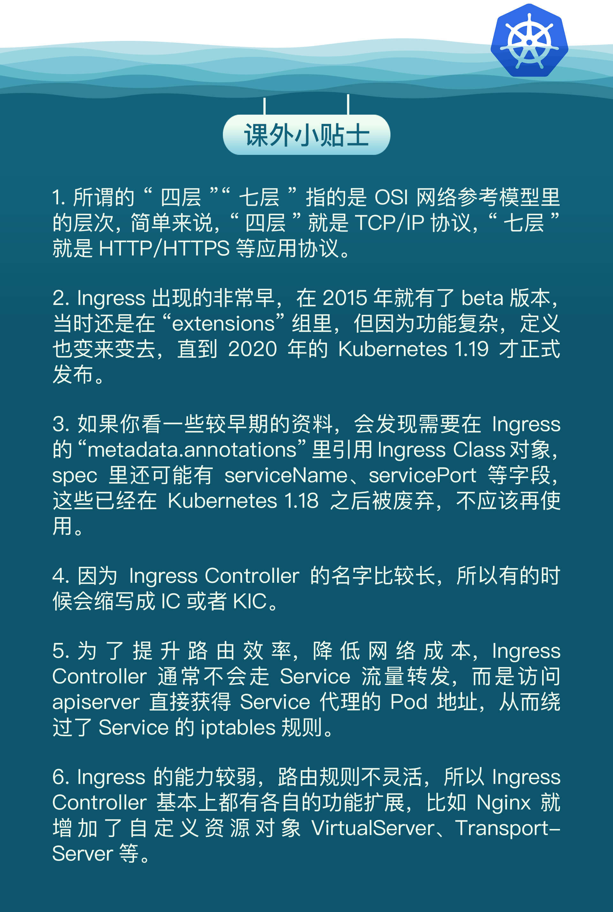
22 实战演练：玩转Kubernetes（2）
你好，我是Chrono。
我们的“中级篇”到今天马上就要结束了，感谢你这段时间坚持不懈的学习。
作为“中级篇”的收尾课程，我照例还是会对前面学过的内容做一个全面的回顾和总结，把知识点都串联起来，加深你对它们的印象。
下面我先梳理一下“中级篇”里讲过的Kubernetes知识要点，然后是实战演示，搭建WordPress网站。当然这次比前两次又有进步，不用Docker，也不用裸Pod，而是用我们新学习的Deployment、Service、Ingress等对象。
Kubernetes技术要点回顾
Kubernetes是云原生时代的操作系统，它能够管理大量节点构成的集群，让计算资源“池化”，从而能够自动地调度运维各种形式的应用。
搭建多节点的Kubernetes集群是一件颇具挑战性的工作，好在社区里及时出现了kubeadm这样的工具，可以“一键操作”，使用 kubeadm init、kubeadm join 等命令从无到有地搭建出生产级别的集群（[17讲]）。
kubeadm使用容器技术封装了Kubernetes组件，所以只要节点上安装了容器运行时（Docker、containerd等），它就可以自动从网上拉取镜像，然后以容器的方式运行组件，非常简单方便。
在这个更接近实际生产环境的Kubernetes集群里，我们学习了Deployment、DaemonSet、Service、Ingress、Ingress Controller等API对象。
（[18讲]）Deployment是用来管理Pod的一种对象，它代表了运维工作中最常见的一类在线业务，在集群中部署应用的多个实例，而且可以很容易地增加或者减少实例数量，从容应对流量压力。
Deployment的定义里有两个关键字段：一个是 replicas，它指定了实例的数量；另一个是 selector，它的作用是使用标签“筛选”出被Deployment管理的Pod，这是一种非常灵活的关联机制，实现了API对象之间的松耦合。
（[19讲]）DaemonSet是另一种部署在线业务的方式，它很类似Deployment，但会在集群里的每一个节点上运行一个Pod实例，类似Linux系统里的“守护进程”，适合日志、监控等类型的应用。
DaemonSet能够任意部署Pod的关键概念是“污点”（taint）和“容忍度”（toleration）。Node会有各种“污点”，而Pod可以使用“容忍度”来忽略“污点”，合理使用这两个概念就可以调整Pod在集群里的部署策略。
（[20讲]）由Deployment和DaemonSet部署的Pod，在集群中处于“动态平衡”的状态，总数量保持恒定，但也有临时销毁重建的可能，所以IP地址是变化的，这就为微服务等应用架构带来了麻烦。
Service是对Pod IP地址的抽象，它拥有一个固定的IP地址，再使用iptables规则把流量负载均衡到后面的Pod，节点上的kube-proxy组件会实时维护被代理的Pod状态，保证Service只会转发给健康的Pod。
Service还基于DNS插件支持域名，所以客户端就不再需要关心Pod的具体情况，只要通过Service这个稳定的中间层，就能够访问到Pod提供的服务。
（[21讲]）Service是四层的负载均衡，但现在的绝大多数应用都是HTTP/HTTPS协议，要实现七层的负载均衡就要使用Ingress对象。
Ingress定义了基于HTTP协议的路由规则，但要让规则生效，还需要Ingress Controller和Ingress Class来配合工作。
- Ingress Controller是真正的集群入口，应用Ingress规则调度、分发流量，此外还能够扮演反向代理的角色，提供安全防护、TLS卸载等更多功能。
- Ingress Class是用来管理Ingress和Ingress Controller的概念，方便我们分组路由规则，降低维护成本。
不过Ingress Controller本身也是一个Pod，想要把服务暴露到集群外部还是要依靠Service。Service支持NodePort、LoadBalancer等方式，但NodePort的端口范围有限，LoadBalancer又依赖于云服务厂商，都不是很灵活。
折中的办法是用少量NodePort暴露Ingress Controller，用Ingress路由到内部服务，外部再用反向代理或者LoadBalancer把流量引进来。
WordPress网站基本架构
简略回顾了Kubernetes里这些API对象，下面我们就来使用它们再搭建出WordPress网站，实践加深理解。
既然我们已经掌握了Deployment、Service、Ingress这些Pod之上的概念，网站自然会有新变化，架构图我放在了这里：
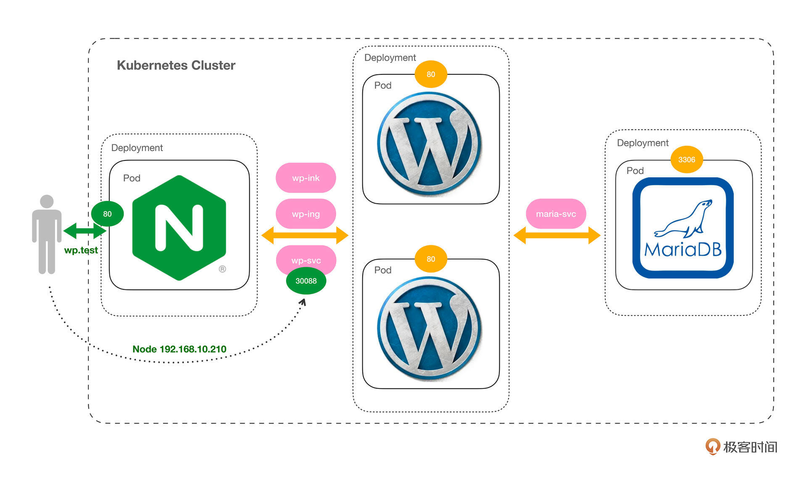
这次的部署形式比起Docker、minikube又有了一些细微的差别，重点是我们已经完全舍弃了Docker，把所有的应用都放在Kubernetes集群里运行，部署方式也不再是裸Pod，而是使用Deployment，稳定性大幅度提升。
原来的Nginx的作用是反向代理，那么在Kubernetes里它就升级成了具有相同功能的Ingress Controller。WordPress原来只有一个实例，现在变成了两个实例（你也可以任意横向扩容），可用性也就因此提高了不少。而MariaDB数据库因为要保证数据的一致性，暂时还是一个实例。
还有，因为Kubernetes内置了服务发现机制Service，我们再也不需要去手动查看Pod的IP地址了，只要为它们定义Service对象，然后使用域名就可以访问MariaDB、WordPress这些服务。
网站对外提供服务我选择了两种方式。
一种是让WordPress的Service对象以NodePort的方式直接对外暴露端口30088，方便测试；另一种是给Nginx Ingress Controller添加“hostNetwork”属性，直接使用节点上的端口号，类似Docker的host网络模式，好处是可以避开NodePort的端口范围限制。
下面我们就按照这个基本架构来逐步搭建出新版本的WordPress网站，编写YAML声明。
这里有个小技巧，在实际操作的时候你一定要记得善用 kubectl create、kubectl expose 创建样板文件，节约时间的同时，也能避免低级的格式错误。
- WordPress网站部署MariaDB ————————
首先我们还是要部署MariaDB，这个步骤和在[第15讲]里做的也差不多。
先要用ConfigMap定义数据库的环境变量，有 DATABASE、USER、PASSWORD、ROOT_PASSWORD：
apiVersion: v1
kind: ConfigMap
metadata:
name: maria-cm
data:
DATABASE: 'db'
USER: 'wp'
PASSWORD: '123'
ROOT_PASSWORD: '123'
然后我们需要把MariaDB由Pod改成Deployment的方式，replicas设置成1个，template里面的Pod部分没有任何变化，还是要用 envFrom把配置信息以环境变量的形式注入Pod，相当于把Pod套了一个Deployment的“外壳”：
apiVersion: apps/v1
kind: Deployment
metadata:
labels:
app: maria-dep
name: maria-dep
spec:
replicas: 1
selector:
matchLabels:
app: maria-dep
template:
metadata:
labels:
app: maria-dep
spec:
containers:
- image: mariadb:10
name: mariadb
ports:
- containerPort: 3306
envFrom:
- prefix: 'MARIADB_'
configMapRef:
name: maria-cm
我们还需要再为MariaDB定义一个Service对象，映射端口3306，让其他应用不再关心IP地址，直接用Service对象的名字来访问数据库服务：
apiVersion: v1
kind: Service
metadata:
labels:
app: maria-dep
name: maria-svc
spec:
ports:
- port: 3306
protocol: TCP
targetPort: 3306
selector:
app: maria-dep
因为这三个对象都是数据库相关的，所以可以在一个YAML文件里书写，对象之间用 --- 分开，这样用 kubectl apply 就可以一次性创建好：
kubectl apply -f wp-maria.yml
执行命令后，你应该用 kubectl get 查看对象是否创建成功，是否正常运行：

- WordPress网站部署WordPress ————————–
第二步是部署WordPress应用。
因为刚才创建了MariaDB的Service，所以在写ConfigMap配置的时候“HOST”就不应该是IP地址了，而应该是DNS域名，也就是Service的名字maria-svc，这点需要特别注意：
apiVersion: v1
kind: ConfigMap
metadata:
name: wp-cm
data:
HOST: 'maria-svc'
USER: 'wp'
PASSWORD: '123'
NAME: 'db'
WordPress的Deployment写法和MariaDB也是一样的，给Pod套一个Deployment的“外壳”，replicas设置成2个，用字段“envFrom”配置环境变量：
apiVersion: apps/v1
kind: Deployment
metadata:
labels:
app: wp-dep
name: wp-dep
spec:
replicas: 2
selector:
matchLabels:
app: wp-dep
template:
metadata:
labels:
app: wp-dep
spec:
containers:
- image: wordpress:5
name: wordpress
ports:
- containerPort: 80
envFrom:
- prefix: 'WORDPRESS_DB_'
configMapRef:
name: wp-cm
然后我们仍然要为WordPress创建Service对象，这里我使用了“NodePort”类型，并且手工指定了端口号“30088”（必须在30000~32767之间）：
apiVersion: v1
kind: Service
metadata:
labels:
app: wp-dep
name: wp-svc
spec:
ports:
- name: http80
port: 80
protocol: TCP
targetPort: 80
nodePort: 30088
selector:
app: wp-dep
type: NodePort
现在让我们用 kubectl apply 部署WordPress：
kubectl apply -f wp-dep.yml
这些对象的状态可以从下面的截图看出来：

因为WordPress的Service对象是NodePort类型的，我们可以在集群的每个节点上访问WordPress服务。
比如一个节点的IP地址是“192.168.10.210”，那么你就在浏览器的地址栏里输入“http://192.168.10.210:30088”，其中的“30088”就是在Service里指定的节点端口号，然后就能够看到WordPress的安装界面了：

- WordPress网站部署Nginx Ingress Controller —————————————–
现在MariaDB，WordPress都已经部署成功了，第三步就是部署Nginx Ingress Controller。
首先我们需要定义Ingress Class，名字就叫“wp-ink”，非常简单：
apiVersion: networking.k8s.io/v1
kind: IngressClass
metadata:
name: wp-ink
spec:
controller: nginx.org/ingress-controller
然后用 kubectl create 命令生成Ingress的样板文件，指定域名是“wp.test”，后端Service是“wp-svc:80”，Ingress Class就是刚定义的“wp-ink”：
kubectl create ing wp-ing --rule="wp.test/=wp-svc:80" --class=wp-ink $out
得到的Ingress YAML就是这样，注意路径类型我还是用的前缀匹配“Prefix”：
apiVersion: networking.k8s.io/v1
kind: Ingress
metadata:
name: wp-ing
spec:
ingressClassName: wp-ink
rules:
- host: wp.test
http:
paths:
- path: /
pathType: Prefix
backend:
service:
name: wp-svc
port:
number: 80
接下来就是最关键的Ingress Controller对象了，它仍然需要从Nginx项目的示例YAML修改而来，要改动名字、标签，还有参数里的Ingress Class。
在之前讲基本架构的时候我说过了，这个Ingress Controller不使用Service，而是给它的Pod加上一个特殊字段 hostNetwork，让Pod能够使用宿主机的网络，相当于另一种形式的NodePort：
apiVersion: apps/v1
kind: Deployment
metadata:
name: wp-kic-dep
namespace: nginx-ingress
spec:
replicas: 1
selector:
matchLabels:
app: wp-kic-dep
template:
metadata:
labels:
app: wp-kic-dep
spec:
serviceAccountName: nginx-ingress
# use host network
hostNetwork: true
containers:
...
准备好Ingress资源后，我们创建这些对象：
kubectl apply -f wp-ing.yml -f wp-kic.yml
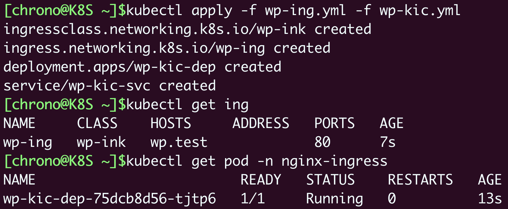
现在所有的应用都已经部署完毕，可以在集群外面访问网站来验证结果了。
不过你要注意，Ingress使用的是HTTP路由规则，用IP地址访问是无效的，所以在集群外的主机上必须能够识别我们的“wp.test”域名，也就是说要把域名“wp.test”解析到Ingress Controller所在的节点上。
如果你用的是Mac，那就修改 /etc/hosts；如果你用的是Windows，就修改 C:\Windows\System32\Drivers\etc\hosts，添加一条解析规则就行：
cat /etc/hosts
192.168.10.210 wp.test
有了域名解析，在浏览器里你就不必使用IP地址，直接用域名“wp.test”走Ingress Controller就能访问我们的WordPress网站了：

到这里，我们在Kubernetes上部署WordPress网站的工作就全部完成了。
小结
这节课我们回顾了“中级篇”里的一些知识要点，我把它们总结成了思维导图，你课后可以对照着它查缺补漏，巩固学习成果。

今天我们还在Kubernetes集群里再次搭建了WordPress网站，应用了新对象Deployment、Service、Ingress，为网站增加了横向扩容、服务发现和七层负载均衡这三个非常重要的功能，提升了网站的稳定性和可用性，基本上解决了在“初级篇”所遇到的问题。
虽然这个网站离真正实用还差得比较远，但框架已经很完善了，你可以在这个基础上添加其他功能，比如创建证书Secret、让Ingress支持HTTPS等等。
另外，我们保证了网站各项服务的高可用，但对于数据库MariaDB来说，虽然Deployment在发生故障时能够及时重启Pod，新Pod却不会从旧Pod继承数据，之前网站的数据会彻底消失，这个后果是完全不可接受的。
所以在后续的“高级篇”里，我们会继续学习持久化存储对象PersistentVolume，以及有状态的StatefulSet等对象，进一步完善我们的网站。
课下作业
最后是课下作业时间，还是两个动手操作题：
- 你能否把WordPress和Ingress Controller改成DaemonSet的部署方式？
- 你能否为Ingress Controller创建Service对象，让它以NodePort的方式对外提供服务？
欢迎留言分享你的实操体验，如果觉得这篇文章对你有帮助，也欢迎你分享给身边的朋友一起学习。下节课是视频课，我们下节课再见。

23 视频：中级篇实操总结
你好，我是Chrono。
到今天我们“中级篇”的学习也告一段落了，在这段时间里我们使用kubeadm搭建了更接近生产环境的多节点Kubernetes集群，然后学习了Deployment、DaemonSet、Service、Ingress这4个非常重要的API对象。
这节课作为对“中级篇”的总结和回顾，仍然是视频的形式，把前面几节课里的一些操作都实际演示出来，方便你对照着操作上下文来学习。
首先我会带你看看kubeadm搭建集群的完整过程，然后编写YAML文件，示范Deployment、DaemonSet、Service、Ingress等对象的具体用法，最后是使用这些对象搭建WordPress网站。
让我们开始视频课程的学习吧。
一点说明：视频是我的操作实录，有些包安装比较慢，屏幕会几秒没有动作，在参考视频以及你自己操作的时候可以耐心一些。
一. 安装kubeadm
我们先来安装Master节点，当然在这之前你需要保证已经安装好了Docker（安装参考[第1讲]）。
首先四步准备工作：改主机名、改Docker配置、改网络设置、改交换分区。
修改主机名，把它改成 master：
sudo vi /etc/hostname
修改Docker的配置文件，把cgroup的驱动程序改成 systemd，然后是修改iptables的配置，启用 br_netfilter 模块，还有修改“/etc/fstab”，关闭Linux的swap分区。
这些操作步骤都已经列在了[第17讲]里了，因为一个个文件修改很麻烦，我就写了一个脚本文件，把这些操作都自动化了，大概看一下：
vi prepare.sh
第一部分是修改Docker配置文件然后重启，第二部分是修改iptables配置，第三部分是关闭Linux的swap分区。我们执行这个脚本，安装的准备工作就做好了。
接下来，下载kubeadm可执行文件，同样我也写成了一个方便的脚本文件：
vi admin.sh
基本流程和Kubernetes官方文档是一样的，只是改成了国内的软件源。
注意在使用 apt install 的时候，应该明确指定要安装的版本号，像这里我就使用的是Kubernetes 1.23.3，如果不指定就会使用当前的最新版本，也就是1.24。
安装完成之后，我们用 kubeadm version、kubectl version 来看一下版本是否正确：
kubeadm version
kubectl version --client
可以看到确实是安装了我们刚才指定的1.23.3版本。
二. 安装Kubernetes
有了kubeadm，我们就可以开始正式安装Kubernetes了。安装时需要从gcr.io拉取镜像，我这里从国内镜像网站上提前下载好了镜像，给你看一下：
docker images
这些镜像中包括Kubernetes的核心组件，比如etcd、apiserver、controller-manager。
现在我们来执行 kubeadm init 初始化Master节点，看一下脚本文件：
vi master.sh
初始化的时候我使用了参数 pod-network-cidr 指定Pod的IP地址范围是“10.10.0.0/16”，然后Kubernetes版本也指定使用1.23.3。
为了让kubectl在安装完成后能正常工作，脚本里还会把Kubernetes的配置文件拷贝到当前用户的 .kube 目录下。
好了，现在我们就运行这个脚本。
注意Master节点初始化完成后，kubeadm会给出一些重要的提示信息，一个是拷贝配置文件，这个我们已经在脚本里做过了，另一个是Worker节点加入集群的 kubeadm join 命令，一定要保存好。我们可以新建一个文件，比如k.txt，然后把它存下来。
我们再用 kubectl version、kubectl get node 来检查Kubernetes的版本和集群的节点状态了：
kubectl version
kubectl get node
Master节点的状态是“NotReady”，接下来还要安装网络插件Flannel。
Flannel的安装很简单，记得要修改它的YAML文件，“net-conf.json”里的网络范围必须和 kubeadm init 里的一样：
vi flannel.yml
现在我们用 kubectl apply 来安装Flannel网络：
kubectl apply -f kube-flannel.yml
稍等一小会，我们再执行 kubectl get node 来看节点状态：
kubectl get node
就看到Master节点的状态是“Ready”，表明节点网络也工作正常了。
三. Kubernetes集群部署
Worker节点的安装步骤和Master节点是差不多的，先是改主机名，再用prepare.sh做准备工作，修改Docker配置文件、iptables，关闭Linux的swap分区，然后下载kubeadm可执行文件和Kubernetes镜像。
这几步和Master节点完全一样，我就不展示脚本文件了，直接运行。
有了kubeadm之后，因为这个是Worker节点，所以我们不需要执行 kubeadm init，而是要执行 kubeadm join，也就是之前安装Master节点时拷贝的那条命令。它会自动连接Master节点，然后拉取镜像，安装网络插件，最后把节点加入集群。
Worker节点安装好之后，让我们在控制台检查节点的状态，执行 kubectl get node，会看到两个节点都是“Ready”。
现在让我们用 kubectl run，运行Nginx来测试一下：
kubectl run ngx --image=nginx:alpine
kubectl get pod -o wide
会看到Pod运行在Worker节点上，表明我们的Kubernetes多节点集群部署成功。
四. Deployment的使用
接下来我们来看看Deployment的用法。
首先是 kubectl api-resources 来查看Deployment的基本信息：
kubectl api-resources | grep deploy
可以看到Deployment的简称是“deploy”，它的apiVersion是“apps/v1”，kind是“Deployment”。
然后我们执行 kubectl create，让Kubernetes为我们自动生成Deployment的样板文件。
先要定义一个环境变量out:
export out="--dry-run=client -o yaml"
然后创建名字叫“ngx-dep”的对象，使用的镜像是“nginx:alpine”：
kubectl create deploy ngx-dep --image=nginx:alpine $out
我们把这个样板存入一个文件ngx.yml：
kubectl create deploy ngx-dep --image=nginx:alpine $out > deploy.yml
这里可以删除一些不需要的字段，让YAML看起来更干净，然后把replicas改成2，意思是启动两个Nginx Pod。
把Deployment的YAML写好之后，我们就可以用 kubectl apply 来创建对象了：
kubectl apply -f deploy.yml
用 kubectl get 命令查看Deployment的状态：
kubectl get deploy
kubectl get pod
最后来试验一下Deployment的应用伸缩功能，使用命令 kubectl scale，把Pod数量改成5个：
kubectl scale --replicas=5 deploy ngx-dep
我们再用 kubectl get 命令查看，就会发现Pod已经成功变成了5个副本：
kubectl get pod
最后删除这个Deployment：
kubectl delete deploy ngx-dep
五. DaemonSet的使用
看完Deployment，我再来演示DaemonSet。
因为DaemonSet不能使用 kubectl create 直接生成样板文件，但大体结构和Deployment是一样的，所以我们可以先生成一个Deployment，然后再修改几个字段就行了。
这里我使用了Linux系统里常用的小工具sed，直接替换Deployment里的名字，再删除replicas字段，这样就自动生成了DaemonSet的样板文件：
kubectl create deploy redis-ds --image=redis:5-alpine $out \
| sed 's/Deployment/DaemonSet/g' - \
| sed -e '/replicas/d' -
这个样板文件因为是从Deployment改来的，所以不会有tolerations字段，不能在Master节点上运行，需要手工添加。
下面这个就是已经改好的完整的DaemonSet YAML描述文件：
vi ds.yml
注意看里面的tolerations字段，它能够容忍节点的 node-role.kubernetes.io/master:NoSchedule 这个污点，也就是说能够运行在Master节点上。
现在让我们部署这个加上了“容忍度”的DaemonSet：
kubectl apply -f ds.yml
再用 kubectl get 查看对象的状态：
kubectl get ds
kubectl get pod -o wide
可以看到，这个Redis 的DaemonSet已经跑在了Master和Worker节点上。
最后删除这个DaemonSet：
kubectl delete -f ds.yml
六. Service的使用
下面我们来看看Kubernetes里的负载均衡对象Service。
因为Service对象服务于Pod、Deployment等对象，所以在创建它之前，我们需要先创建一个Deployment：
kubectl apply -f deploy.yml
这个Deployment管理了两个Nginx Pod：
kubectl get pod -o wide
然后我们我们使用 kubectl expose 创建Service样板文件：
kubectl expose deploy ngx-dep --port=80 --target-port=80 $out
修改之后就是svc.yml，再用 kubectl apply 创建Service对象：
kubectl apply -f svc.yml
用 kubectl get svc 可以列出Service对象，可以看到它的虚IP地址：
kubectl get svc
想要看Service代理了哪些后端的Pod，要用 kubectl describe 命令：
kubectl describe svc ngx-svc
用 kubectl get pod 可以对比验证Service是否正确代理了Nginx Pod：
kubectl get pod -o wide
现在让我们用 kubectl exec 进入Pod，验证Service的域名功能：
kubectl exec -it ngx-dep-6796688696-4h6lb -- sh
使用curl，加上域名“ngx-svc”，也就是Service对象的名字：
curl ngx-svc
多执行几次，就会看到通过这个域名，Service对象实现了对后端Pod的负载均衡，把流量分发到不同的Pod。
我们还可以再尝试Service的其他域名形式，比如加上名字空间：
curl ngx-svc.default
curl ngx-svc.default.svc.cluster.local
最后看一下Service使用NodePort方式对外暴露服务的用法，看一下Service对象：
kubectl get svc
在PORT里显示它分配了一个随机的端口号31980，只要访问集群里任意一个节点，加上这个端口号，就可以访问到Service对象和它后面的Pod。
我们来试验一下，注意210是Master节点，220是Worker节点：
curl 192.168.10.210:31980
curl 192.168.10.220:31980
最后删除Deployment和Service对象：
kubectl delete -f deploy.yml
kubectl delete -f svc.yml
七. Ingress的使用
学习了Service之后，我们再来看管理集群入口流量的Ingress对象。
我们使用Nginx公司开发的Ingress Controller，需要按照它的文档，创建名字空间、RBAC等相关的资源，这里我使用一个简单脚本来完成：
cat setup.sh
./setup.sh
使用命令 kubectl get ns 可以看到已经有了一个新的名字空间 nginx-ingress。
为了测试验证Ingress和Ingress controller的用法，我们还是要先创建Deployment和Service对象：
kubectl apply -f deploy.yml
kubectl apply -f svc.yml
来看一下Ingress的定义：
vi ingress.yml
这个YAML里包含了两个API对象，第一个是Ingress Class，名字是ngx-ink，注意在spec里，controller要指定成Nginx Ingress Controller。
第二个对象就是路由规则对象Ingress了，我为它添加了一个注解nginx.org/lb-method，指定使用Round-Robin负载均衡算法，然后是关键字段ingressClassName，这样就可以把Ingress和Ingress Class联系起来。
后面的rules就是具体的路由规则，比较复杂，要指定host、path，还有后端要转发的Service，最好用kubectl create来自动生成，不然很容易写错。
接下来我们看看Ingress Controller的定义，它在kic YAML 里：
vi kic.yml
它其实是从Nginx官方的示例文件修改而来的，所以只需要关注几个地方。
第一个是镜像，我改成了更精简的Alpine版本，第二个是启动参数args，一定要加上-ingress-class，关联上刚才的Ingress Class对象，否则Ingress Controller就无法找到路由规则Ingress。
它后面还有几个参数，比如-health-status、-ready-status等等，你可以参考官方文档了解它们的作用。
现在我们就应用这两个YAML 文件，创建Ingress对象：
kubectl apply -f ingress.yml
kubectl apply -f kic.yml
用 kubectl get 来逐个查看这些对象的状态：
kubectl get ingressclass
kubectl get ing
kubectl describe ing ngx-ing
kubectl get deploy -n nginx-ingress
kubectl get pod -n nginx-ingress
确认它们都工作正常，我们来做个测试，把本地的8080端口映射到Ingress Controller Pod的80端口：
kubectl port-forward -n nginx-ingress ngx-kic-dep-8859b7b86-cplgp 8080:80 &
因为在Ingress里我们设定的路由规则是ngx.test域名，所以要用curl的resolve参数来把它强制解析到127.0.0.1：
curl --resolve ngx.test:8080:127.0.0.1 http://ngx.test:8080
多执行几次，你就会发现Nginx Ingress Controller通过域名路由规则，把请求转发到了不同的后端Pod。
最后我们删除刚才创建的这些Deployment、Service、Ingress等对象：
kubectl delete -f deploy.yml
kubectl delete -f svc.yml
kubectl delete -f ingress.yml
kubectl delete -f kic.yml
八. 搭建WordPress网站
这里我们还是来搭建WordPress网站，实际操作Deployment、Service、Ingress这些对象的用法。
第一步是部署MariaDB：
wp-maria.yml
它的ConfigMap没有变化，还是“DATABASE”“USER”“PASSWORD”那几个环境变量。下面的部署方式改成了Deployment，简单起见只使用一个实例。之后又为它定义了一个Service对象，这样我们就可以使用域名而不是IP地址来访问数据库。
第二步是部署WordPress应用：
vi wp-dep.yml
注意在ConfigMap里我们不再使用固定IP地址了，而是改用了Service提供的域名maria-svc。然后在Deployment里，把WordPress实例设置为2，增加了冗余度，提高了可用性。之后我们还是为它定义了Service对象，并且设置为NodePort模式，指定使用端口30088。
第三步是部署Ingress：
vi wp-ing.yml
Ingress的定义和之前差不多，但Ingress Class的名字改成了wp-ink，Ingress路由的host改成了wp.test。
Ingress Controller的变化也不大：
vi wp-kic.yml
关键还是args里的参数-ingress-class，必须和Ingress Class匹配，也就是wp-ink。还有就是字段hostNetwork: true，让Pod直接使用节点的网络
看完了这些YAML ，让我们用kubectl apply来创建对象：
kubectl apply -f wp-maria.yml
kubectl apply -f wp-dep.yml
kubectl apply -f wp-ing.yml
kubectl apply -f wp-kic.yml
创建完成之后，我们再用kubectl get看一下对象的状态：
kubectl get deploy
kubectl get svc
kubectl get pod -n nginx-ingress
现在让我们来到集群之外，假设你已经修改了本地的hosts域名解析文件，把域名wp.test解析到Kubernetes的节点，那就可以直接在浏览器里输入http://wp.test来访问Nginx Ingress Controller，再访问WordPress网站了。
课后作业
如果你在操作过程中遇到困难，欢迎在留言区留言，记得把你的问题描述清楚，这样我和其他同学也能更好地就问题详细讨论。
希望你在这段时间的学习过程中有所收获，下节课就是最后的高级篇了，我们下节课再见。
24 PersistentVolume：怎么解决数据持久化的难题？
你好，我是Chrono。
经过了“初级篇”和“中级篇”的学习，相信你对Kubernetes的认识已经比较全面了，那么在接下来的“高级篇”里，我们再进一步，探索Kubernetes更深层次的知识点和更高级的应用技巧。
今天就先从PersistentVolume讲起。
早在[第14讲]介绍ConfigMap/Secret的时候，我们就遇到过Kubernetes里的Volume存储卷的概念，它使用字段 volumes 和 volumeMounts，相当于是给Pod挂载了一个“虚拟盘”，把配置信息以文件的形式注入进Pod供进程使用。
不过，那个时候的Volume只能存放较少的数据，离真正的“虚拟盘”还差得很远。
今天我们就一起来了解Volume的高级用法，看看Kubernetes管理存储资源的API对象PersistentVolume、PersistentVolumeClaim、StorageClass，然后使用本地磁盘来创建实际可用的存储卷。
什么是PersistentVolume
在刚完成的“中级篇”实战中（[22讲]），我们在Kubernetes集群里搭建了WordPress网站，但其中存在一个很严重的问题：Pod没有持久化功能，导致MariaDB无法“永久”存储数据。
因为Pod里的容器是由镜像产生的，而镜像文件本身是只读的，进程要读写磁盘只能用一个临时的存储空间，一旦Pod销毁，临时存储也就会立即回收释放，数据也就丢失了。
为了保证即使Pod销毁后重建数据依然存在，我们就需要找出一个解决方案，让Pod用上真正的“虚拟盘”。怎么办呢？
其实，Kubernetes的Volume对数据存储已经给出了一个很好的抽象，它只是定义了有这么一个“存储卷”，而这个“存储卷”是什么类型、有多大容量、怎么存储，我们都可以自由发挥。Pod不需要关心那些专业、复杂的细节，只要设置好 volumeMounts，就可以把Volume加载进容器里使用。
所以，Kubernetes就顺着Volume的概念，延伸出了PersistentVolume对象，它专门用来表示持久存储设备，但隐藏了存储的底层实现，我们只需要知道它能安全可靠地保管数据就可以了（由于PersistentVolume这个词很长，一般都把它简称为PV）。
那么，集群里的PV都从哪里来呢？
作为存储的抽象，PV实际上就是一些存储设备、文件系统，比如Ceph、GlusterFS、NFS，甚至是本地磁盘，管理它们已经超出了Kubernetes的能力范围，所以，一般会由系统管理员单独维护，然后再在Kubernetes里创建对应的PV。
要注意的是，PV属于集群的系统资源，是和Node平级的一种对象，Pod对它没有管理权，只有使用权。
什么是PersistentVolumeClaim/StorageClass
现在有了PV，我们是不是可以直接在Pod里挂载使用了呢？
还不行。因为不同存储设备的差异实在是太大了：有的速度快，有的速度慢；有的可以共享读写，有的只能独占读写；有的容量小，只有几百MB，有的容量大到TB、PB级别……
这么多种存储设备，只用一个PV对象来管理还是有点太勉强了，不符合“单一职责”的原则，让Pod直接去选择PV也很不灵活。于是Kubernetes就又增加了两个新对象，PersistentVolumeClaim和StorageClass，用的还是“中间层”的思想，把存储卷的分配管理过程再次细化。
我们看这两个新对象。
PersistentVolumeClaim，简称PVC，从名字上看比较好理解，就是用来向Kubernetes申请存储资源的。PVC是给Pod使用的对象，它相当于是Pod的代理，代表Pod向系统申请PV。一旦资源申请成功，Kubernetes就会把PV和PVC关联在一起，这个动作叫做“绑定”（bind）。
但是，系统里的存储资源非常多，如果要PVC去直接遍历查找合适的PV也很麻烦，所以就要用到StorageClass。
StorageClass的作用有点像[第21讲]里的IngressClass，它抽象了特定类型的存储系统（比如Ceph、NFS），在PVC和PV之间充当“协调人”的角色，帮助PVC找到合适的PV。也就是说它可以简化Pod挂载“虚拟盘”的过程，让Pod看不到PV的实现细节。

如果看到这里，你觉得还是差点理解也不要着急，我们找个生活中的例子来类比一下。毕竟和常用的CPU、内存比起来，我们对存储系统的认识还是比较少的，所以Kubernetes里，PV、PVC和StorageClass这三个新概念也不是特别好掌握。
看例子，假设你在公司里想要10张纸打印资料，于是你给前台打电话讲清楚了需求。
- “打电话”这个动作，就相当于PVC，向Kubernetes申请存储资源。
- 前台里有各种牌子的办公用纸，大小、规格也不一样，这就相当于StorageClass。
- 前台根据你的需要，挑选了一个品牌，再从库存里拿出一包A4纸，可能不止10张，但也能够满足要求，就在登记表上新添了一条记录，写上你在某天申领了办公用品。这个过程就是PVC到PV的绑定。
- 而最后到你手里的A4纸包，就是PV存储对象。
好，大概了解了这些API对象，我们接下来可以结合YAML描述和实际操作再慢慢体会。
如何使用YAML描述PersistentVolume
Kubernetes里有很多种类型的PV，我们先看看最容易的本机存储“HostPath”，它和Docker里挂载本地目录的 -v 参数非常类似，可以用它来初步认识一下PV的用法。
因为Pod会在集群的任意节点上运行，所以首先，我们要作为系统管理员在每个节点上创建一个目录，它将会作为本地存储卷挂载到Pod里。
为了省事，我就在 /tmp 里建立名字是 host-10m-pv 的目录，表示一个只有10MB容量的存储设备。
有了存储，我们就可以使用YAML来描述这个PV对象了。
不过很遗憾，你不能用 kubectl create 直接创建PV对象，只能用 kubectl api-resources、kubectl explain 查看PV的字段说明，手动编写PV 的YAML描述文件。
下面我给出一个YAML示例，你可以把它作为样板，编辑出自己的PV：
apiVersion: v1
kind: PersistentVolume
metadata:
name: host-10m-pv
spec:
storageClassName: host-test
accessModes:
- ReadWriteOnce
capacity:
storage: 10Mi
hostPath:
path: /tmp/host-10m-pv/
PV对象的文件头部分很简单，还是API对象的“老一套”，我就不再详细解释了，重点看它的 spec 部分，每个字段都很重要，描述了存储的详细信息。
“storageClassName”就是刚才说过的，对存储类型的抽象StorageClass。这个PV是我们手动管理的，名字可以任意起，这里我写的是 host-test，你也可以把它改成 manual、hand-work 之类的词汇。
“accessModes”定义了存储设备的访问模式，简单来说就是虚拟盘的读写权限，和Linux的文件访问模式差不多，目前Kubernetes里有3种：
- ReadWriteOnce：存储卷可读可写，但只能被一个节点上的Pod挂载。
- ReadOnlyMany：存储卷只读不可写，可以被任意节点上的Pod多次挂载。
- ReadWriteMany：存储卷可读可写，也可以被任意节点上的Pod多次挂载。
你要注意，这3种访问模式限制的对象是节点而不是Pod，因为存储是系统级别的概念，不属于Pod里的进程。
显然，本地目录只能是在本机使用，所以这个PV使用了 ReadWriteOnce。
第三个字段“capacity”就很好理解了，表示存储设备的容量，这里我设置为10MB。
再次提醒你注意，Kubernetes里定义存储容量使用的是国际标准，我们日常习惯使用的KB/MB/GB的基数是1024，要写成Ki/Mi/Gi，一定要小心不要写错了，否则单位不一致实际容量就会对不上。
最后一个字段“hostPath”最简单，它指定了存储卷的本地路径，也就是我们在节点上创建的目录。
用这些字段把PV的类型、访问模式、容量、存储位置都描述清楚，一个存储设备就创建好了。
如何使用YAML描述PersistentVolumeClaim
有了PV，就表示集群里有了这么一个持久化存储可以供Pod使用，我们需要再定义PVC对象，向Kubernetes申请存储。
下面这份YAML就是一个PVC，要求使用一个5MB的存储设备，访问模式是 ReadWriteOnce：
apiVersion: v1
kind: PersistentVolumeClaim
metadata:
name: host-5m-pvc
spec:
storageClassName: host-test
accessModes:
- ReadWriteOnce
resources:
requests:
storage: 5Mi
PVC的内容与PV很像，但它不表示实际的存储，而是一个“申请”或者“声明”，spec里的字段描述的是对存储的“期望状态”。
所以PVC里的 storageClassName、accessModes 和PV是一样的，但不会有字段 capacity，而是要用 resources.request 表示希望要有多大的容量。
这样，Kubernetes就会根据PVC里的描述，去找能够匹配StorageClass和容量的PV，然后把PV和PVC“绑定”在一起，实现存储的分配，和前面打电话要A4纸的过程差不多。
如何在Kubernetes里使用PersistentVolume
现在我们已经准备好了PV和PVC，就可以让Pod实现持久化存储了。
首先需要用 kubectl apply 创建PV对象：
kubectl apply -f host-path-pv.yml
然后用 kubectl get 查看它的状态：
kubectl get pv

从截图里我们可以看到，这个PV的容量是10MB，访问模式是RWO（ReadWriteOnce），StorageClass是我们自己定义的 host-test，状态显示的是 Available，也就是处于可用状态，可以随时分配给Pod使用。
接下来我们创建PVC，申请存储资源：
kubectl apply -f host-path-pvc.yml
kubectl get pvc
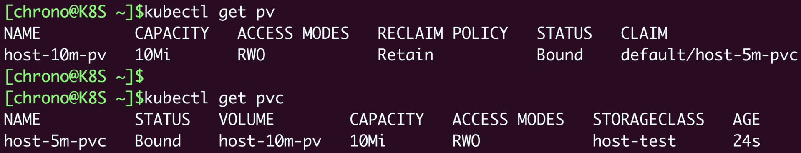
一旦PVC对象创建成功，Kubernetes就会立即通过StorageClass、resources等条件在集群里查找符合要求的PV，如果找到合适的存储对象就会把它俩“绑定”在一起。
PVC对象申请的是5MB，但现在系统里只有一个10MB的PV，没有更合适的对象，所以Kubernetes也只能把这个PV分配出去，多出的容量就算是“福利”了。
你会看到这两个对象的状态都是 Bound，也就是说存储申请成功，PVC的实际容量就是PV的容量10MB，而不是最初申请的容量5MB。
那么，如果我们把PVC的申请容量改大一些会怎么样呢？比如改成100MB：

你会看到PVC会一直处于 Pending 状态，这意味着Kubernetes在系统里没有找到符合要求的存储，无法分配资源，只能等有满足要求的PV才能完成绑定。
如何为Pod挂载PersistentVolume
PV和PVC绑定好了，有了持久化存储，现在我们就可以为Pod挂载存储卷。用法和[第14讲]里差不多，先要在 spec.volumes 定义存储卷，然后在 containers.volumeMounts 挂载进容器。
不过因为我们用的是PVC，所以要在 volumes 里用字段 persistentVolumeClaim 指定PVC的名字。
下面就是Pod的YAML描述文件，把存储卷挂载到了Nginx容器的 /tmp 目录：
apiVersion: v1
kind: Pod
metadata:
name: host-pvc-pod
spec:
volumes:
- name: host-pvc-vol
persistentVolumeClaim:
claimName: host-5m-pvc
containers:
- name: ngx-pvc-pod
image: nginx:alpine
ports:
- containerPort: 80
volumeMounts:
- name: host-pvc-vol
mountPath: /tmp
我把Pod和PVC/PV的关系画成了图（省略了字段accessModes），你可以从图里看出它们是如何联系起来的：
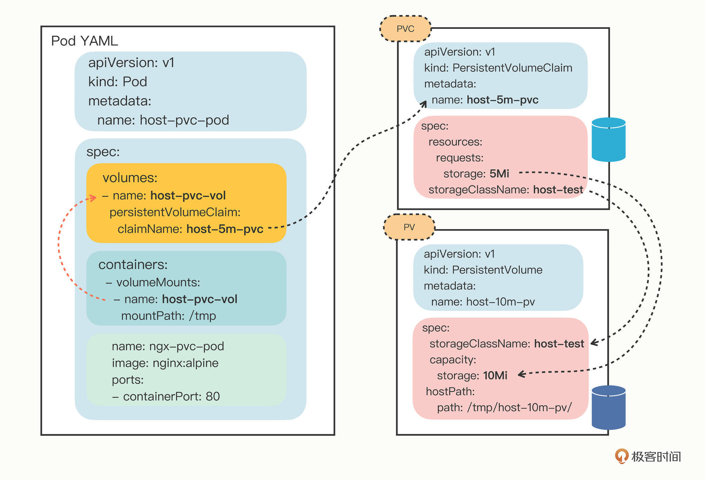
现在我们创建这个Pod，查看它的状态：
kubectl apply -f host-path-pod.yml
kubectl get pod -o wide
它被Kubernetes调到了worker节点上，那么PV是否确实挂载成功了呢？让我们用 kubectl exec 进入容器，执行一些命令看看：

容器的 /tmp 目录里生成了一个 a.txt 的文件，根据PV的定义，它就应该落在worker节点的磁盘上，所以我们就登录worker节点检查一下：
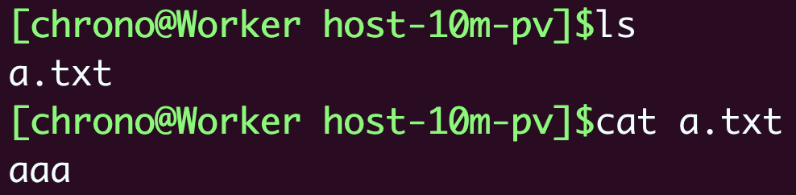
你会看到确实在worker节点的本地目录有一个 a.txt 的文件，再对一下时间，就可以确认是刚才在Pod里生成的文件。
因为Pod产生的数据已经通过PV存在了磁盘上，所以如果Pod删除后再重新创建，挂载存储卷时会依然使用这个目录，数据保持不变，也就实现了持久化存储。
不过还有一点小问题，因为这个PV是HostPath类型，只在本节点存储，如果Pod重建时被调度到了其他节点上，那么即使加载了本地目录，也不会是之前的存储位置，持久化功能也就失效了。
所以，HostPath类型的PV一般用来做测试，或者是用于DaemonSet这样与节点关系比较密切的应用，我们下节课再讲实现真正任意的数据持久化。
小结
好了，今天我们一起学习了Kubernetes里应对持久化存储的解决方案，一共有三个API对象，分别是PersistentVolume、PersistentVolumeClaim、StorageClass。它们管理的是集群里的存储资源，简单来说就是磁盘，Pod必须通过它们才能够实现数据持久化。
再小结一下今天的主要内容：
- PersistentVolume简称为PV，是Kubernetes对存储设备的抽象，由系统管理员维护，需要描述清楚存储设备的类型、访问模式、容量等信息。
- PersistentVolumeClaim简称为PVC，代表Pod向系统申请存储资源，它声明对存储的要求，Kubernetes会查找最合适的PV然后绑定。
- StorageClass抽象特定类型的存储系统，归类分组PV对象，用来简化PV/PVC的绑定过程。
- HostPath是最简单的一种PV，数据存储在节点本地，速度快但不能跟随Pod迁移。
课下作业
最后是课下作业时间，给你留两个思考题：
- HostPath类型的PV要求节点上必须有相应的目录，如果这个目录不存在（比如忘记创建了）会怎么样呢？
- 你对使用PV/PVC/StorageClass这三个对象来分配存储的流程有什么看法？它们的抽象是好还是坏？
进阶高手是需要自驱的，在这最后的高级篇，非常期待看到你的思考。我们下节课再见。
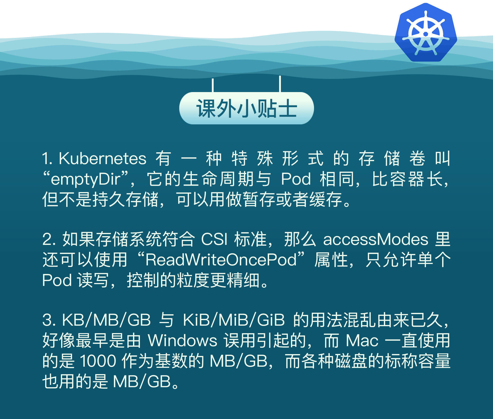
25 PersistentVolume + NFS：怎么使用网络共享存储？
你好，我是Chrono。
在上节课里我们看到了Kubernetes里的持久化存储对象PersistentVolume、PersistentVolumeClaim、StorageClass，把它们联合起来就可以为Pod挂载一块“虚拟盘”，让Pod在其中任意读写数据。
不过当时我们使用的是HostPath，存储卷只能在本机使用，而Kubernetes里的Pod经常会在集群里“漂移”，所以这种方式不是特别实用。
要想让存储卷真正能被Pod任意挂载，我们需要变更存储的方式，不能限定在本地磁盘，而是要改成网络存储，这样Pod无论在哪里运行，只要知道IP地址或者域名，就可以通过网络通信访问存储设备。
网络存储是一个非常热门的应用领域，有很多知名的产品，比如AWS、Azure、Ceph，Kubernetes还专门定义了CSI（Container Storage Interface）规范，不过这些存储类型的安装、使用都比较复杂，在我们的实验环境里部署难度比较高。
所以今天的这次课里，我选择了相对来说比较简单的NFS系统（Network File System），以它为例讲解如何在Kubernetes里使用网络存储，以及静态存储卷和动态存储卷的概念。
如何安装NFS服务器
作为一个经典的网络存储系统，NFS有着近40年的发展历史，基本上已经成为了各种UNIX系统的标准配置，Linux自然也提供对它的支持。
NFS采用的是Client/Server架构，需要选定一台主机作为Server，安装NFS服务端；其他要使用存储的主机作为Client，安装NFS客户端工具。
所以接下来，我们在自己的Kubernetes集群里再增添一台名字叫Storage的服务器，在上面安装NFS，实现网络存储、共享网盘的功能。不过这台Storage也只是一个逻辑概念，我们在实际安装部署的时候完全可以把它合并到集群里的某台主机里，比如这里我就复用了[第17讲]里的Console。
新的网络架构如下图所示：

在Ubuntu系统里安装NFS服务端很容易，使用apt即可：
sudo apt -y install nfs-kernel-server
安装好之后，你需要给NFS指定一个存储位置，也就是网络共享目录。一般来说，应该建立一个专门的 /data 目录，这里为了简单起见，我就使用了临时目录 /tmp/nfs：
mkdir -p /tmp/nfs
接下来你需要配置NFS访问共享目录，修改 /etc/exports，指定目录名、允许访问的网段，还有权限等参数。这些规则比较琐碎，和我们的Kubernetes课程关联不大，我就不详细解释了，你只要把下面这行加上就行，注意目录名和IP地址要改成和自己的环境一致：
/tmp/nfs 192.168.10.0/24(rw,sync,no_subtree_check,no_root_squash,insecure)
改好之后，需要用 exportfs -ra 通知NFS，让配置生效，再用 exportfs -v 验证效果：
sudo exportfs -ra
sudo exportfs -v

现在，你就可以使用 systemctl 来启动NFS服务器了：
sudo systemctl start nfs-server
sudo systemctl enable nfs-server
sudo systemctl status nfs-server
你还可以使用命令 showmount 来检查NFS的网络挂载情况：
showmount -e 127.0.0.1
如何安装NFS客户端
有了NFS服务器之后，为了让Kubernetes集群能够访问NFS存储服务，我们还需要在每个节点上都安装NFS客户端。
这项工作只需要一条apt命令，不需要额外的配置：
sudo apt -y install nfs-common
同样，在节点上可以用 showmount 检查NFS能否正常挂载，注意IP地址要写成NFS服务器的地址，我在这里就是“192.168.10.208”：

现在让我们尝试手动挂载一下NFS网络存储，先创建一个目录 /tmp/test 作为挂载点：
mkdir -p /tmp/test
然后用命令 mount 把NFS服务器的共享目录挂载到刚才创建的本地目录上：
sudo mount -t nfs 192.168.10.208:/tmp/nfs /tmp/test
最后测试一下，我们在 /tmp/test 里随便创建一个文件，比如 x.yml：
touch /tmp/test/x.yml
再回到NFS服务器，检查共享目录 /tmp/nfs，应该会看到也出现了一个同样的文件 x.yml，这就说明NFS安装成功了。之后集群里的任意节点，只要通过NFS客户端，就能把数据写入NFS服务器，实现网络存储。
如何使用NFS存储卷
现在我们已经为Kubernetes配置好了NFS存储系统，就可以使用它来创建新的PV存储对象了。
先来手工分配一个存储卷，需要指定 storageClassName 是 nfs，而 accessModes 可以设置成 ReadWriteMany，这是由NFS的特性决定的，它支持多个节点同时访问一个共享目录。
因为这个存储卷是NFS系统，所以我们还需要在YAML里添加 nfs 字段，指定NFS服务器的IP地址和共享目录名。
这里我在NFS服务器的 /tmp/nfs 目录里又创建了一个新的目录 1g-pv，表示分配了1GB的可用存储空间，相应的，PV里的 capacity 也要设置成同样的数值，也就是 1Gi。
把这些字段都整理好后，我们就得到了一个使用NFS网络存储的YAML描述文件：
apiVersion: v1
kind: PersistentVolume
metadata:
name: nfs-1g-pv
spec:
storageClassName: nfs
accessModes:
- ReadWriteMany
capacity:
storage: 1Gi
nfs:
path: /tmp/nfs/1g-pv
server: 192.168.10.208
现在就可以用命令 kubectl apply 来创建PV对象，再用 kubectl get pv 查看它的状态：
kubectl apply -f nfs-static-pv.yml
kubectl get pv
再次提醒你注意，spec.nfs 里的IP地址一定要正确，路径一定要存在（事先创建好），否则Kubernetes按照PV的描述会无法挂载NFS共享目录，PV就会处于“pending”状态无法使用。
有了PV，我们就可以定义申请存储的PVC对象了，它的内容和PV差不多，但不涉及NFS存储的细节，只需要用 resources.request 来表示希望要有多大的容量，这里我写成1GB，和PV的容量相同：
apiVersion: v1
kind: PersistentVolumeClaim
metadata:
name: nfs-static-pvc
spec:
storageClassName: nfs
accessModes:
- ReadWriteMany
resources:
requests:
storage: 1Gi
创建PVC对象之后，Kubernetes就会根据PVC的描述，找到最合适的PV，把它们“绑定”在一起，也就是存储分配成功：

我们再创建一个Pod，把PVC挂载成它的一个volume，具体的做法和[上节课]是一样的，用 persistentVolumeClaim 指定PVC的名字就可以了：
apiVersion: v1
kind: Pod
metadata:
name: nfs-static-pod
spec:
volumes:
- name: nfs-pvc-vol
persistentVolumeClaim:
claimName: nfs-static-pvc
containers:
- name: nfs-pvc-test
image: nginx:alpine
ports:
- containerPort: 80
volumeMounts:
- name: nfs-pvc-vol
mountPath: /tmp
Pod、PVC、PV和NFS存储的关系可以用下图来形象地表示，你可以对比一下HostPath PV的用法，看看有什么不同：
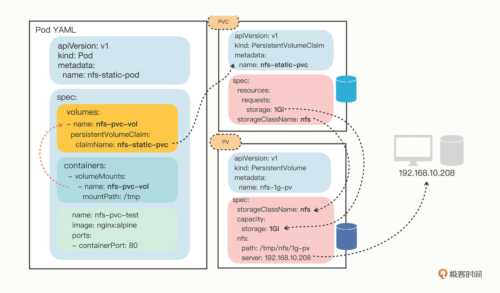
因为我们在PV/PVC里指定了 storageClassName 是 nfs，节点上也安装了NFS客户端，所以Kubernetes就会自动执行NFS挂载动作，把NFS的共享目录 /tmp/nfs/1g-pv 挂载到Pod里的 /tmp，完全不需要我们去手动管理。
最后还是测试一下，用 kubectl apply 创建Pod之后，我们用 kubectl exec 进入Pod，再试着操作NFS共享目录：
退出Pod，再看一下NFS服务器的 /tmp/nfs/1g-pv 目录，你就会发现Pod里创建的文件确实写入了共享目录：

而且更好的是，因为NFS是一个网络服务，不会受Pod调度位置的影响，所以只要网络通畅，这个PV对象就会一直可用，数据也就实现了真正的持久化存储。
如何部署NFS Provisoner
现在有了NFS这样的网络存储系统，你是不是认为Kubernetes里的数据持久化问题就已经解决了呢？
对于这个问题，我觉得可以套用一句现在的流行语：“解决了，但没有完全解决。”
说它“解决了”，是因为网络存储系统确实能够让集群里的Pod任意访问，数据在Pod销毁后仍然存在，新创建的Pod可以再次挂载，然后读取之前写入的数据，整个过程完全是自动化的。
说它“没有完全解决”，是因为PV还是需要人工管理，必须要由系统管理员手动维护各种存储设备，再根据开发需求逐个创建PV，而且PV的大小也很难精确控制，容易出现空间不足或者空间浪费的情况。
在我们的这个实验环境里，只有很少的PV需求，管理员可以很快分配PV存储卷，但是在一个大集群里，每天可能会有几百几千个应用需要PV存储，如果仍然用人力来管理分配存储，管理员很可能会忙得焦头烂额，导致分配存储的工作大量积压。
那么能不能让创建PV的工作也实现自动化呢？或者说，让计算机来代替人类来分配存储卷呢？
这个在Kubernetes里就是“动态存储卷”的概念，它可以用StorageClass绑定一个Provisioner对象，而这个Provisioner就是一个能够自动管理存储、创建PV的应用，代替了原来系统管理员的手工劳动。
有了“动态存储卷”的概念，前面我们讲的手工创建的PV就可以称为“静态存储卷”。
目前，Kubernetes里每类存储设备都有相应的Provisioner对象，对于NFS来说，它的Provisioner就是“NFS subdir external provisioner”，你可以在GitHub上找到这个项目（https://github.com/kubernetes-sigs/nfs-subdir-external-provisioner）。
NFS Provisioner也是以Pod的形式运行在Kubernetes里的，在GitHub的 deploy 目录里是部署它所需的YAML文件，一共有三个，分别是rbac.yaml、class.yaml和deployment.yaml。
不过这三个文件只是示例，想在我们的集群里真正运行起来还要修改其中的两个文件。
第一个要修改的是rbac.yaml，它使用的是默认的 default 名字空间，应该把它改成其他的名字空间，避免与普通应用混在一起，你可以用“查找替换”的方式把它统一改成 kube-system。
第二个要修改的是deployment.yaml，它要修改的地方比较多。首先要把名字空间改成和rbac.yaml一样，比如是 kube-system，然后重点要修改 volumes 和 env 里的IP地址和共享目录名，必须和集群里的NFS服务器配置一样。
按照我们当前的环境设置，就应该把IP地址改成 192.168.10.208，目录名改成 /tmp/nfs：
spec:
template:
spec:
serviceAccountName: nfs-client-provisioner
containers:
...
env:
- name: PROVISIONER_NAME
value: k8s-sigs.io/nfs-subdir-external-provisioner
- name: NFS_SERVER
value: 192.168.10.208 #改IP地址
- name: NFS_PATH
value: /tmp/nfs #改共享目录名
volumes:
- name: nfs-client-root
nfs:
server: 192.168.10.208 #改IP地址
Path: /tmp/nfs #改共享目录名
还有一件麻烦事，deployment.yaml的镜像仓库用的是gcr.io，拉取很困难，而国内的镜像网站上偏偏还没有它，为了让实验能够顺利进行，我不得不“曲线救国”，把它的镜像转存到了Docker Hub上。
所以你还需要把镜像的名字由原来的“k8s.gcr.io/sig-storage/nfs-subdir-external-provisioner:v4.0.2”改成“chronolaw/nfs-subdir-external-provisioner:v4.0.2”，其实也就是变动一下镜像的用户名而已。
把这两个YAML修改好之后，我们就可以在Kubernetes里创建NFS Provisioner了：
kubectl apply -f rbac.yaml
kubectl apply -f class.yaml
kubectl apply -f deployment.yaml
使用命令 kubectl get，再加上名字空间限定 -n kube-system，就可以看到NFS Provisioner在Kubernetes里运行起来了。

如何使用NFS动态存储卷
比起静态存储卷，动态存储卷的用法简单了很多。因为有了Provisioner，我们就不再需要手工定义PV对象了，只需要在PVC里指定StorageClass对象，它再关联到Provisioner。
我们来看一下NFS默认的StorageClass定义：
apiVersion: storage.k8s.io/v1
kind: StorageClass
metadata:
name: nfs-client
provisioner: k8s-sigs.io/nfs-subdir-external-provisioner
parameters:
archiveOnDelete: "false"
YAML里的关键字段是 provisioner，它指定了应该使用哪个Provisioner。另一个字段 parameters 是调节Provisioner运行的参数，需要参考文档来确定具体值，在这里的 archiveOnDelete: "false" 就是自动回收存储空间。
理解了StorageClass的YAML之后，你也可以不使用默认的StorageClass，而是根据自己的需求，任意定制具有不同存储特性的StorageClass，比如添加字段 onDelete: "retain" 暂时保留分配的存储，之后再手动删除：
apiVersion: storage.k8s.io/v1
kind: StorageClass
metadata:
name: nfs-client-retained
provisioner: k8s-sigs.io/nfs-subdir-external-provisioner
parameters:
onDelete: "retain"
接下来我们定义一个PVC，向系统申请10MB的存储空间，使用的StorageClass是默认的 nfs-client：
apiVersion: v1
kind: PersistentVolumeClaim
metadata:
name: nfs-dyn-10m-pvc
spec:
storageClassName: nfs-client
accessModes:
- ReadWriteMany
resources:
requests:
storage: 10Mi
写好了PVC，我们还是在Pod里用 volumes 和 volumeMounts 挂载，然后Kubernetes就会自动找到NFS Provisioner，在NFS的共享目录上创建出合适的PV对象：
apiVersion: v1
kind: Pod
metadata:
name: nfs-dyn-pod
spec:
volumes:
- name: nfs-dyn-10m-vol
persistentVolumeClaim:
claimName: nfs-dyn-10m-pvc
containers:
- name: nfs-dyn-test
image: nginx:alpine
ports:
- containerPort: 80
volumeMounts:
- name: nfs-dyn-10m-vol
mountPath: /tmp
使用 kubectl apply 创建好PVC和Pod，让我们来查看一下集群里的PV状态：

从截图你可以看到，虽然我们没有直接定义PV对象，但由于有NFS Provisioner，它就自动创建一个PV，大小刚好是在PVC里申请的10MB。
如果你这个时候再去NFS服务器上查看共享目录，也会发现多出了一个目录，名字与这个自动创建的PV一样，但加上了名字空间和PVC的前缀：

我还是把Pod、PVC、StorageClass和Provisioner的关系画成了一张图，你可以清楚地看出来这些对象的关联关系，还有Pod是如何最终找到存储设备的：

小结
好了，今天的这节课里我们继续学习PV/PVC，引入了网络存储系统，以NFS为例研究了静态存储卷和动态存储卷的用法，其中的核心对象是StorageClass和Provisioner。
我再小结一下今天的要点：
- 在Kubernetes集群里，网络存储系统更适合数据持久化，NFS是最容易使用的一种网络存储系统，要事先安装好服务端和客户端。
- 可以编写PV手工定义NFS静态存储卷，要指定NFS服务器的IP地址和共享目录名。
- 使用NFS动态存储卷必须要部署相应的Provisioner，在YAML里正确配置NFS服务器。
- 动态存储卷不需要手工定义PV，而是要定义StorageClass，由关联的Provisioner自动创建PV完成绑定。
课下作业
最后是课下作业时间，给你留两个思考题：
- 动态存储卷相比静态存储卷有什么好处？有没有缺点？
- StorageClass在动态存储卷的分配过程中起到了什么作用？
期待你的思考。如果觉得有收获，也欢迎你分享给朋友一起讨论。我们下节课再见。

26 StatefulSet：怎么管理有状态的应用？
你好，我是Chrono。
在中级篇里，我们学习了Deployment和DaemonSet两种API对象，它们是在Kubernetes集群里部署应用的重要工具，不过它们也有一个缺点，只能管理“无状态应用”（Stateless Application），不能管理“有状态应用”（Stateful Application）。
“有状态应用”的处理比较复杂，要考虑的事情很多，但是这些问题我们其实可以通过组合之前学过的Deployment、Service、PersistentVolume等对象来解决。
今天我们就来研究一下什么是“有状态应用”，然后看看Kubernetes为什么会设计一个新对象——StatefulSet来专门管理“有状态应用”。
什么是有状态的应用
我们先从PersistentVolume谈起，它为Kubernetes带来了持久化存储的功能，能够让应用把数据存放在本地或者远程的磁盘上。
那么你有没有想过，持久化存储，对应用来说，究竟意味着什么呢？
有了持久化存储，应用就可以把一些运行时的关键数据落盘，相当于有了一份“保险”，如果Pod发生意外崩溃，也只不过像是按下了暂停键，等重启后挂载Volume，再加载原数据就能够满血复活，恢复之前的“状态”继续运行。
注意到了吗？这里有一个关键词——“状态”，应用保存的数据，实际上就是它某个时刻的“运行状态”。
所以从这个角度来说，理论上任何应用都是有状态的。
只是有的应用的状态信息不是很重要，即使不恢复状态也能够正常运行，这就是我们常说的“无状态应用”。“无状态应用”典型的例子就是Nginx这样的Web服务器，它只是处理HTTP请求，本身不生产数据（日志除外），不需要特意保存状态，无论以什么状态重启都能很好地对外提供服务。
还有一些应用，运行状态信息就很重要了，如果因为重启而丢失了状态是绝对无法接受的，这样的应用就是“有状态应用”。
“有状态应用”的例子也有很多，比如Redis、MySQL这样的数据库，它们的“状态”就是在内存或者磁盘上产生的数据，是应用的核心价值所在，如果不能够把这些数据及时保存再恢复，那绝对会是灾难性的后果。
理解了这一点，我们结合目前学到的知识思考一下：Deployment加上PersistentVolume，在Kubernetes里是不是可以轻松管理有状态的应用了呢？
的确，用Deployment来保证高可用，用PersistentVolume来存储数据，确实可以部分达到管理“有状态应用”的目的（你可以自己试着编写这样的YAML）。
但是Kubernetes的眼光则更加全面和长远，它认为“状态”不仅仅是数据持久化，在集群化、分布式的场景里，还有多实例的依赖关系、启动顺序和网络标识等问题需要解决，而这些问题恰恰是Deployment力所不及的。
因为只使用Deployment，多个实例之间是无关的，启动的顺序不固定，Pod的名字、IP地址、域名也都是完全随机的，这正是“无状态应用”的特点。
但对于“有状态应用”，多个实例之间可能存在依赖关系，比如master/slave、active/passive，需要依次启动才能保证应用正常运行，外界的客户端也可能要使用固定的网络标识来访问实例，而且这些信息还必须要保证在Pod重启后不变。
所以，Kubernetes就在Deployment的基础之上定义了一个新的API对象，名字也很好理解，就叫StatefulSet，专门用来管理有状态的应用。
如何使用YAML描述StatefulSet
首先我们还是用命令 kubectl api-resources 来查看StatefulSet的基本信息，可以知道它的简称是 sts，YAML文件头信息是：
apiVersion: apps/v1
kind: StatefulSet
metadata:
name: xxx-sts
和DaemonSet类似，StatefulSet也可以看做是Deployment的一个特例，它也不能直接用 kubectl create 创建样板文件，但它的对象描述和Deployment差不多，你同样可以把Deployment适当修改一下，就变成了StatefulSet对象。
这里我给出了一个使用Redis的StatefulSet，你来看看它与Deployment有什么差异：
apiVersion: apps/v1
kind: StatefulSet
metadata:
name: redis-sts
spec:
serviceName: redis-svc
replicas: 2
selector:
matchLabels:
app: redis-sts
template:
metadata:
labels:
app: redis-sts
spec:
containers:
- image: redis:5-alpine
name: redis
ports:
- containerPort: 6379
我们会发现，YAML文件里除了 kind 必须是“StatefulSet”，在 spec 里还多出了一个“serviceName”字段，其余的部分和Deployment是一模一样的，比如 replicas、selector、template 等等。
这两个不同之处其实就是StatefulSet与Deployment的关键区别。想要真正理解这一点，我们得结合StatefulSet在Kubernetes里的使用方法来分析。
如何在Kubernetes里使用StatefulSet
让我们用 kubectl apply 创建StatefulSet对象，用 kubectl get 先看看它是什么样的：
kubectl apply -f redis-sts.yml
kubectl get sts
kubectl get pod

从截图里，你应该能够看到，StatefulSet所管理的Pod不再是随机的名字了，而是有了顺序编号，从0开始分别被命名为 redis-sts-0、redis-sts-1，Kubernetes也会按照这个顺序依次创建（0号比1号的AGE要长一点），这就解决了“有状态应用”的第一个问题：启动顺序。
有了启动的先后顺序，应用该怎么知道自己的身份，进而确定互相之间的依赖关系呢？
Kubernetes给出的方法是使用hostname，也就是每个Pod里的主机名，让我们再用 kubectl exec 登录Pod内部看看：
kubectl exec -it redis-sts-0 -- sh
在Pod里查看环境变量 $HOSTNAME 或者是执行命令 hostname，都可以得到这个Pod的名字 redis-sts-0。
有了这个唯一的名字，应用就可以自行决定依赖关系了，比如在这个Redis例子里，就可以让先启动的0号Pod是主实例，后启动的1号Pod是从实例。
解决了启动顺序和依赖关系，还剩下第三个问题：网络标识，这就需要用到Service对象。
不过这里又有一点奇怪的地方，我们不能用命令 kubectl expose 直接为StatefulSet生成Service，只能手动编写YAML。但是这肯定难不倒你，经过了这么多练习，现在你应该能很轻松地写出一个Service对象。
因为不能自动生成，你在写Service对象的时候要小心一些，metadata.name 必须和StatefulSet里的 serviceName 相同，selector 里的标签也必须和StatefulSet里的一致：
apiVersion: v1
kind: Service
metadata:
name: redis-svc
spec:
selector:
app: redis-sts
ports:
- port: 6379
protocol: TCP
targetPort: 6379
写好Service之后，还是用 kubectl apply 创建这个对象：

可以看到这个Service并没有什么特殊的地方，也是用标签选择器找到StatefulSet管理的两个Pod，然后找到它们的IP地址。
不过，StatefulSet的奥秘就在它的域名上。
还记得在[第20讲]里我们说过的Service的域名用法吗？Service自己会有一个域名，格式是“对象名.名字空间”，每个Pod也会有一个域名，形式是“IP地址.名字空间”。但因为IP地址不稳定，所以Pod的域名并不实用，一般我们会使用稳定的Service域名。
当我们把Service对象应用于StatefulSet的时候，情况就不一样了。
Service发现这些Pod不是一般的应用，而是有状态应用，需要有稳定的网络标识，所以就会为Pod再多创建出一个新的域名，格式是“Pod名.服务名.名字空间.svc.cluster.local”。当然，这个域名也可以简写成“Pod名.服务名”。
我们还是用 kubectl exec 进入Pod内部，用ping命令来验证一下：
kubectl exec -it redis-sts-0 -- sh

显然，在StatefulSet里的这两个Pod都有了各自的域名，也就是稳定的网络标识。那么接下来，外部的客户端只要知道了StatefulSet对象，就可以用固定的编号去访问某个具体的实例了，虽然Pod的IP地址可能会变，但这个有编号的域名由Service对象维护，是稳定不变的。
到这里，通过StatefulSet和Service的联合使用，Kubernetes就解决了“有状态应用”的依赖关系、启动顺序和网络标识这三个问题，剩下的多实例之间内部沟通协调等事情就需要应用自己去想办法处理了。
关于Service，有一点值得再多提一下。
Service原本的目的是负载均衡，应该由它在Pod前面来转发流量，但是对StatefulSet来说，这项功能反而是不必要的，因为Pod已经有了稳定的域名，外界访问服务就不应该再通过Service这一层了。所以，从安全和节约系统资源的角度考虑，我们可以在Service里添加一个字段 clusterIP: None ，告诉Kubernetes不必再为这个对象分配IP地址。
我画了一张图展示StatefulSet与Service对象的关系，你可以参考一下它们字段之间的互相引用：
如何实现StatefulSet的数据持久化
现在StatefulSet已经有了固定的名字、启动顺序和网络标识，只要再给它加上数据持久化功能，我们就可以实现对“有状态应用”的管理了。
这里就能用到上一节课里学的PersistentVolume和NFS的知识，我们可以很容易地定义StorageClass，然后编写PVC，再给Pod挂载Volume。
不过，为了强调持久化存储与StatefulSet的一对一绑定关系，Kubernetes为StatefulSet专门定义了一个字段“volumeClaimTemplates”，直接把PVC定义嵌入StatefulSet的YAML文件里。这样能保证创建StatefulSet的同时，就会为每个Pod自动创建PVC，让StatefulSet的可用性更高。
“volumeClaimTemplates”这个字段好像有点难以理解，你可以把它和Pod的 template、Job的 jobTemplate 对比起来学习，它其实也是一个“套娃”的对象组合结构，里面就是应用了StorageClass的普通PVC而已。
让我们把刚才的Redis StatefulSet对象稍微改造一下，加上持久化存储功能：
apiVersion: apps/v1
kind: StatefulSet
metadata:
name: redis-pv-sts
spec:
serviceName: redis-pv-svc
volumeClaimTemplates:
- metadata:
name: redis-100m-pvc
spec:
storageClassName: nfs-client
accessModes:
- ReadWriteMany
resources:
requests:
storage: 100Mi
replicas: 2
selector:
matchLabels:
app: redis-pv-sts
template:
metadata:
labels:
app: redis-pv-sts
spec:
containers:
- image: redis:5-alpine
name: redis
ports:
- containerPort: 6379
volumeMounts:
- name: redis-100m-pvc
mountPath: /data
这个YAML文件比较长，内容比较多，不过你只要有点耐心，分功能模块逐个去看也能很快看明白。
首先StatefulSet对象的名字是 redis-pv-sts，表示它使用了PV存储。然后“volumeClaimTemplates”里定义了一个PVC，名字是 redis-100m-pvc，申请了100MB的NFS存储。在Pod模板里用 volumeMounts 引用了这个PVC，把网盘挂载到了 /data 目录，也就是Redis的数据目录。
下面的这张图就是这个StatefulSet对象完整的关系图：-

最后使用 kubectl apply 创建这些对象，一个带持久化功能的“有状态应用”就算是运行起来了：
kubectl apply -f redis-pv-sts.yml
你可以使用命令 kubectl get pvc 来查看StatefulSet关联的存储卷状态：
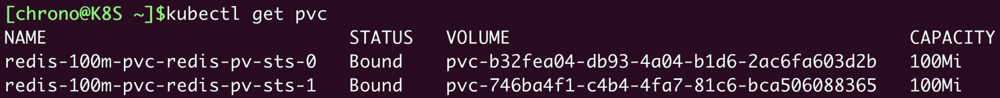
看这两个PVC的命名，不是随机的，是有规律的，用的是PVC名字加上StatefulSet的名字组合而成，所以即使Pod被销毁，因为它的名字不变，还能够找到这个PVC，再次绑定使用之前存储的数据。
那我们就来实地验证一下吧，用 kubectl exec 运行Redis的客户端，在里面添加一些KV数据：
kubectl exec -it redis-pv-sts-0 -- redis-cli

这里我设置了两个值，分别是 a=111 和 b=222。
现在我们模拟意外事故，删除这个Pod：
kubectl delete pod redis-pv-sts-0
由于StatefulSet和Deployment一样会监控Pod的实例，发现Pod数量少了就会很快创建出新的Pod，并且名字、网络标识也都会和之前的Pod一模一样：
那Redis里存储的数据怎么样了呢？是不是真的用到了持久化存储，也完全恢复了呢？
你可以再用Redis客户端登录去检查一下：
kubectl exec -it redis-pv-sts-0 -- redis-cli

因为我们把NFS网络存储挂载到了Pod的 /data 目录，Redis就会定期把数据落盘保存，所以新创建的Pod再次挂载目录的时候会从备份文件里恢复数据，内存里的数据就恢复原状了。
小结
好了，今天我们学习了专门部署“有状态应用”的API对象StatefulSet，它与Deployment非常相似，区别是由它管理的Pod会有固定的名字、启动顺序和网络标识，这些特性对于在集群里实施有主从、主备等关系的应用非常重要。
我再简单小结一下今天的内容：
- StatefulSet的YAML描述和Deployment几乎完全相同，只是多了一个关键字段
serviceName。 - 要为StatefulSet里的Pod生成稳定的域名，需要定义Service对象，它的名字必须和StatefulSet里的
serviceName一致。 - 访问StatefulSet应该使用每个Pod的单独域名，形式是“Pod名.服务名”，不应该使用Service的负载均衡功能。
- 在StatefulSet里可以用字段“volumeClaimTemplates”直接定义PVC，让Pod实现数据持久化存储。
课下作业
最后是课下作业时间，给你留两个思考题：
- 有了StatefulSet提供的固定名字和启动顺序，应用还需要怎么做才能实现主从等依赖关系呢？
- 是否可以不使用“volumeClaimTemplates”内嵌定义PVC呢？会有什么样的后果呢？
欢迎在留言区参与讨论，分享你的想法。我们下节课再见。

27 滚动更新：如何做到平滑的应用升级降级？
你好，我是Chrono。
上次课里我们学习了管理有状态应用的对象StatefulSet，再加上管理无状态应用的Deployment和DaemonSet，我们就能在Kubernetes里部署任意形式的应用了。
不过，只是把应用发布到集群里是远远不够的，要让应用稳定可靠地运行，还需要有持续的运维工作。
如果你还记得在[第18节课]里，我们学过Deployment的“应用伸缩”功能就是一种常见的运维操作，在Kubernetes里，使用命令 kubectl scale，我们就可以轻松调整Deployment下属的Pod数量，因为StatefulSet是Deployment的一种特例，所以它也可以使用 kubectl scale 来实现“应用伸缩”。
除了“应用伸缩”，其他的运维操作比如应用更新、版本回退等工作，该怎么做呢？这些也是我们日常运维中经常会遇到的问题。
今天我就以Deployment为例，来讲讲Kubernetes在应用管理方面的高级操作：滚动更新，使用 kubectl rollout 实现用户无感知的应用升级和降级。
Kubernetes如何定义应用版本
应用的版本更新，大家都知道是怎么回事，比如我们发布了V1版，过了几天加了新功能，要发布V2版。
不过说起来简单，版本更新实际做起来是一个相当棘手的事。因为系统已经上线运行，必须要保证不间断地对外提供服务，通俗地说就是“给空中的飞机换引擎”。尤其在以前，需要开发、测试、运维、监控、网络等各个部门的一大堆人来协同工作，费时又费力。
但是，应用的版本更新其实是有章可循的，现在我们有了Kubernetes这个强大的自动化运维管理系统，就可以把它的过程抽象出来，让计算机去完成那些复杂繁琐的人工操作。
在Kubernetes里，版本更新使用的不是API对象，而是两个命令：kubectl apply 和 kubectl rollout，当然它们也要搭配部署应用所需要的Deployment、DaemonSet等YAML文件。
不过在我们信心满满开始操作之前，首先要理解在Kubernetes里，所谓的“版本”到底是什么？
我们常常会简单地认为“版本”就是应用程序的“版本号”，或者是容器镜像的“标签”，但不要忘了，在Kubernetes里应用都是以Pod的形式运行的，而Pod通常又会被Deployment等对象来管理，所以应用的“版本更新”实际上更新的是整个Pod。
那Pod又是由什么来决定的呢？
仔细回忆一下之前我们创建的那么多个对象，你就会发现，Pod是由YAML描述文件来确定的，更准确地说，是Deployment等对象里的字段 template。
所以，在Kubernetes里应用的版本变化就是 template 里Pod的变化，哪怕 template 里只变动了一个字段，那也会形成一个新的版本，也算是版本变化。
但 template 里的内容太多了，拿这么长的字符串来当做“版本号”不太现实，所以Kubernetes就使用了“摘要”功能，用摘要算法计算 template 的Hash值作为“版本号”，虽然不太方便识别，但是很实用。
我们就拿[第18讲]里的Nginx Deployment作为例子吧，创建对象之后，使用 kubectl get 来查看Pod的状态：

Pod名字里的那串随机数“6796……”就是Pod模板的Hash值，也就是Pod的“版本号”。
如果你变动了Pod YAML描述，比如把镜像改成 nginx:stable-alpine，或者把容器名字改成 nginx-test，都会生成一个新的应用版本，kubectl apply 后就会重新创建Pod：

你可以看到，Pod名字里的Hash值变成了“7c6c……”，这就表示Pod的版本更新了。
Kubernetes如何实现应用更新
为了更仔细地研究Kubernetes的应用更新过程，让我们来略微改造一下Nginx Deployment对象，看看Kubernetes到底是怎么实现版本更新的。
首先修改ConfigMap，让它输出Nginx的版本号，方便我们用curl查看版本：
apiVersion: v1
kind: ConfigMap
metadata:
name: ngx-conf
data:
default.conf: |
server {
listen 80;
location / {
default_type text/plain;
return 200
'ver : $nginx_version\nsrv : $server_addr:$server_port\nhost: $hostname\n';
}
}
然后我们修改Pod镜像，明确地指定版本号是 1.21-alpine，实例数设置为4个：
apiVersion: apps/v1
kind: Deployment
metadata:
name: ngx-dep
spec:
replicas: 4
... ...
containers:
- image: nginx:1.21-alpine
... ...
把它命名为 ngx-v1.yml，然后执行命令 kubectl apply 部署这个应用：
kubectl apply -f ngx-v1.yml
我们还可以为它创建Service对象，再用 kubectl port-forward 转发请求来查看状态：
kubectl port-forward svc/ngx-svc 8080:80 &
curl 127.1:8080

从curl命令的输出中可以看到，现在应用的版本是 1.21.6。
现在，让我们编写一个新版本对象 ngx-v2.yml，把镜像升级到 nginx:1.22-alpine，其他的都不变。
因为Kubernetes的动作太快了，为了能够观察到应用更新的过程，我们还需要添加一个字段 minReadySeconds，让Kubernetes在更新过程中等待一点时间，确认Pod没问题才继续其余Pod的创建工作。
要提醒你注意的是，minReadySeconds 这个字段不属于Pod模板，所以它不会影响Pod版本：
apiVersion: apps/v1
kind: Deployment
metadata:
name: ngx-dep
spec:
minReadySeconds: 15 # 确认Pod就绪的等待时间
replicas: 4
... ...
containers:
- image: nginx:1.22-alpine
... ...
现在我们执行命令 kubectl apply 来更新应用，因为改动了镜像名，Pod模板变了，就会触发“版本更新”，然后用一个新命令：kubectl rollout status，来查看应用更新的状态：
kubectl apply -f ngx-v2.yml
kubectl rollout status deployment ngx-dep

更新完成后，你再执行 kubectl get pod，就会看到Pod已经全部替换成了新版本“d575……”，用curl访问Nginx，输出信息也变成了“1.22.0”：

仔细查看 kubectl rollout status 的输出信息，你可以发现，Kubernetes不是把旧Pod全部销毁再一次性创建出新Pod，而是在逐个地创建新Pod，同时也在销毁旧Pod，保证系统里始终有足够数量的Pod在运行，不会有“空窗期”中断服务。
新Pod数量增加的过程有点像是“滚雪球”，从零开始，越滚越大，所以这就是所谓的“滚动更新”（rolling update）。
使用命令 kubectl describe 可以更清楚地看到Pod的变化情况：
kubectl describe deploy ngx-dep

- 一开始的时候V1 Pod（即ngx-dep-54b865d75）的数量是4；
- 当“滚动更新”开始的时候，Kubernetes创建1个 V2 Pod（即ngx-dep-d575d5776），并且把V1 Pod数量减少到3；
- 接着再增加V2 Pod的数量到2，同时V1 Pod的数量变成了1；
- 最后V2 Pod的数量达到预期值4，V1 Pod的数量变成了0，整个更新过程就结束了。
看到这里你是不是有点明白了呢，其实“滚动更新”就是由Deployment控制的两个同步进行的“应用伸缩”操作，老版本缩容到0，同时新版本扩容到指定值，是一个“此消彼长”的过程。
这个滚动更新的过程我画了一张图，你可以参考它来进一步体会：

Kubernetes如何管理应用更新
Kubernetes的“滚动更新”功能确实非常方便，不需要任何人工干预就能简单地把应用升级到新版本，也不会中断服务，不过如果更新过程中发生了错误或者更新后发现有Bug该怎么办呢？
要解决这两个问题，我们还是要用 kubectl rollout 命令。
在应用更新的过程中，你可以随时使用 kubectl rollout pause 来暂停更新，检查、修改Pod，或者测试验证，如果确认没问题，再用 kubectl rollout resume 来继续更新。
这两个命令比较简单，我就不多做介绍了，要注意的是它们只支持Deployment，不能用在DaemonSet、StatefulSet上（最新的1.24支持了StatefulSet的滚动更新）。
对于更新后出现的问题，Kubernetes为我们提供了“后悔药”，也就是更新历史，你可以查看之前的每次更新记录，并且回退到任何位置，和我们开发常用的Git等版本控制软件非常类似。
查看更新历史使用的命令是 kubectl rollout history：
kubectl rollout history deploy ngx-dep
它会输出一个版本列表，因为我们创建Nginx Deployment是一个版本，更新又是一个版本，所以这里就会有两条历史记录。
但 kubectl rollout history 的列表输出的有用信息太少，你可以在命令后加上参数 --revision 来查看每个版本的详细信息，包括标签、镜像名、环境变量、存储卷等等，通过这些就可以大致了解每次都变动了哪些关键字段：
kubectl rollout history deploy --revision=2

假设我们认为刚刚更新的 nginx:1.22-alpine 不好，想要回退到上一个版本，就可以使用命令 kubectl rollout undo，也可以加上参数 --to-revision 回退到任意一个历史版本：
kubectl rollout undo deploy ngx-dep

kubectl rollout undo 的操作过程其实和 kubectl apply 是一样的，执行的仍然是“滚动更新”，只不过使用的是旧版本Pod模板，把新版本Pod数量收缩到0，同时把老版本Pod扩展到指定值。
这个V2到V1的“版本降级”的过程我同样画了一张图，它和从V1到V2的“版本升级”过程是完全一样的，不同的只是版本号的变化方向：
Kubernetes如何添加更新描述
讲到这里，Kubernetes里应用更新的功能就学得差不多了。
不过，你有没有觉得 kubectl rollout history 的版本列表好像有点太简单了呢？只有一个版本更新序号，而另一列 CHANGE-CAUSE 为什么总是显示成 <none> 呢？能不能像Git一样，每次更新也加上说明信息呢？
这当然是可以的，做法也很简单，我们只需要在Deployment的 metadata 里加上一个新的字段 annotations。
annotations 字段的含义是“注解”“注释”，形式上和 labels 一样，都是Key-Value，也都是给API对象附加一些额外的信息，但是用途上区别很大。
annotations添加的信息一般是给Kubernetes内部的各种对象使用的，有点像是“扩展属性”；labels主要面对的是Kubernetes外部的用户，用来筛选、过滤对象的。
如果用一个简单的比喻来说呢，annotations 就是包装盒里的产品说明书，而 labels 是包装盒外的标签贴纸。
借助 annotations，Kubernetes既不破坏对象的结构，也不用新增字段，就能够给API对象添加任意的附加信息，这就是面向对象设计中典型的OCP“开闭原则”，让对象更具扩展性和灵活性。
annotations 里的值可以任意写，Kubernetes会自动忽略不理解的Key-Value，但要编写更新说明就需要使用特定的字段 kubernetes.io/change-cause。
下面来操作一下，我们创建3个版本的Nginx应用，同时添加更新说明：
apiVersion: apps/v1
kind: Deployment
metadata:
name: ngx-dep
annotations:
kubernetes.io/change-cause: v1, ngx=1.21
... ...
apiVersion: apps/v1
kind: Deployment
metadata:
name: ngx-dep
annotations:
kubernetes.io/change-cause: update to v2, ngx=1.22
... ...
apiVersion: apps/v1
kind: Deployment
metadata:
name: ngx-dep
annotations:
kubernetes.io/change-cause: update to v3, change name
... ...
你需要注意YAML里的 metadata 部分，使用 annotations.kubernetes.io/change-cause 描述了版本更新的情况，相比 kubectl rollout history --revision 的罗列大量信息更容易理解。
依次使用 kubectl apply 创建并更新对象之后，我们再用 kubectl rollout history 来看一下更新历史：

这次显示的列表信息就好看多了，每个版本的主要变动情况列得非常清楚，和Git版本管理的感觉很像。
小结
好，今天我们一起学习了Kubernetes里的高级应用管理功能：滚动更新，它会自动缩放新旧版本的Pod数量，能够在用户无感知的情况下实现服务升级或降级，让原本复杂棘手的运维工作变得简单又轻松。
再小结一下今天的要点：
- 在Kubernetes里应用的版本不仅仅是容器镜像，而是整个Pod模板，为了便于处理使用了摘要算法，计算模板的Hash值作为版本号。
- Kubernetes更新应用采用的是滚动更新策略，减少旧版本Pod的同时增加新版本Pod，保证在更新过程中服务始终可用。
- 管理应用更新使用的命令是
kubectl rollout，子命令有status、history、undo等。 - Kubernetes会记录应用的更新历史，可以使用
history --revision查看每个版本的详细信息，也可以在每次更新时添加注解kubernetes.io/change-cause。
另外，在Deployment里还有其他一些字段可以对滚动更新的过程做更细致的控制，它们都在 spec.strategy.rollingUpdate 里，比如 maxSurge、maxUnavailable 等字段，分别控制最多新增Pod数和最多不可用Pod数，一般用默认值就足够了，你如果感兴趣也可以查看Kubernetes文档进一步研究。
课下作业
最后是课下作业时间，给你留两个思考题：
- 今天学的Kubernetes的“滚动更新”，与我们常说的“灰度发布”有什么相同点和不同点？
- 直接部署旧版本的YAML也可以实现版本回退，
kubectl rollout undo命令的好处是什么？
欢迎在留言区积极参与讨论。如果觉得今天的内容对你有帮助，也欢迎转发给身边的朋友一起讨论，我们下节课再见。
28 应用保障：如何让Pod运行得更健康？
你好，我是Chrono。
在前面这么多节的课程中，我们都是在研究如何使用各种API对象来管理、操作Pod，而对Pod本身的关注却不是太多。
作为Kubernetes里的核心概念和原子调度单位，Pod的主要职责是管理容器，以逻辑主机、容器集合、进程组的形式来代表应用，它的重要性是不言而喻的。
那么今天我们回过头来，在之前那些上层API对象的基础上，一起来看看在Kubernetes里配置Pod的两种方法：资源配额Resources、检查探针Probe，它们能够给Pod添加各种运行保障，让应用运行得更健康。
容器资源配额
早在[第2讲]的时候我们就说过，创建容器有三大隔离技术：namespace、cgroup、chroot。其中的namespace实现了独立的进程空间，chroot实现了独立的文件系统，但唯独没有看到cgroup的具体应用。
cgroup的作用是管控CPU、内存，保证容器不会无节制地占用基础资源，进而影响到系统里的其他应用。
不过，容器总是要使用CPU和内存的，该怎么处理好需求与限制这两者之间的关系呢？
Kubernetes的做法与我们在[第24讲]里提到的PersistentVolumeClaim用法有些类似，就是容器需要先提出一个“书面申请”，Kubernetes再依据这个“申请”决定资源是否分配和如何分配。
但是CPU、内存与存储卷有明显的不同，因为它是直接“内置”在系统里的，不像硬盘那样需要“外挂”，所以申请和管理的过程也就会简单很多。
具体的申请方法很简单，只要在Pod容器的描述部分添加一个新字段 resources 就可以了，它就相当于申请资源的 Claim。
来看一个YAML示例：
apiVersion: v1
kind: Pod
metadata:
name: ngx-pod-resources
spec:
containers:
- image: nginx:alpine
name: ngx
resources:
requests:
cpu: 10m
memory: 100Mi
limits:
cpu: 20m
memory: 200Mi
这个YAML文件定义了一个Nginx Pod，我们需要重点学习的是 containers.resources，它下面有两个字段：
- “requests”，意思是容器要申请的资源，也就是说要求Kubernetes在创建Pod的时候必须分配这里列出的资源，否则容器就无法运行。
- “limits”，意思是容器使用资源的上限，不能超过设定值，否则就有可能被强制停止运行。
在请求 cpu 和 memory 这两种资源的时候，你需要特别注意它们的表示方式。
内存的写法和磁盘容量一样，使用 Ki、Mi、Gi 来表示 KB、MB、GB，比如 512Ki、100Mi、0.5Gi 等。
而CPU因为在计算机中数量有限，非常宝贵，所以Kubernetes允许容器精细分割CPU，即可以1个、2个地完整使用CPU，也可以用小数0.1、0.2的方式来部分使用CPU。这其实是效仿了UNIX“时间片”的用法，意思是进程最多可以占用多少CPU时间。
不过CPU时间也不能无限分割，Kubernetes里CPU的最小使用单位是0.001，为了方便表示用了一个特别的单位 m，也就是“milli”“毫”的意思，比如说500m就相当于0.5。
现在我们再来看这个YAML，你就应该明白了，它向系统申请的是1%的CPU时间和100MB的内存，运行时的资源上限是2%CPU时间和200MB内存。有了这个申请，Kubernetes就会在集群中查找最符合这个资源要求的节点去运行Pod。
下面是我在网上找的一张动图，Kubernetes会根据每个Pod声明的需求，像搭积木或者玩俄罗斯方块一样，把节点尽量“塞满”，充分利用每个节点的资源，让集群的效益最大化。
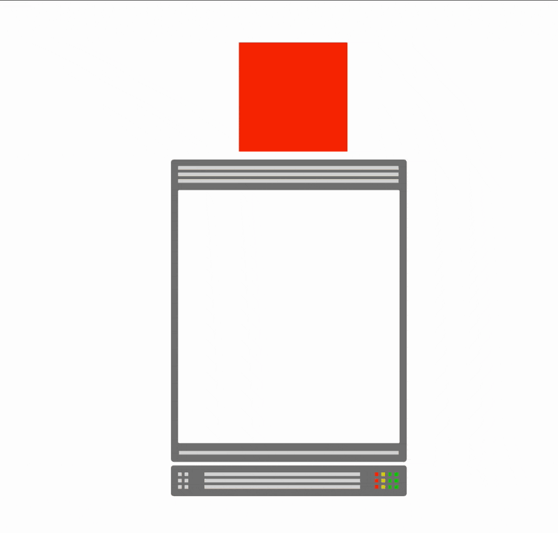
你可能会有疑问：如果Pod不写 resources 字段，Kubernetes会如何处理呢？
这就意味着Pod对运行的资源要求“既没有下限，也没有上限”，Kubernetes不用管CPU和内存是否足够，可以把Pod调度到任意的节点上，而且后续Pod运行时也可以无限制地使用CPU和内存。
我们课程里是实验环境，这样做是当然是没有问题的，但如果是生产环境就很危险了，Pod可能会因为资源不足而运行缓慢，或者是占用太多资源而影响其他应用，所以我们应当合理评估Pod的资源使用情况，尽量为Pod加上限制。
看到这里估计你会继续追问：如果预估错误，Pod申请的资源太多，系统无法满足会怎么样呢？
让我们来试一下吧，先删除Pod的资源限制 resources.limits，把 resources.request.cpu 改成比较极端的“10”，也就是要求10个CPU：
...
resources:
requests:
cpu: 10
然后使用 kubectl apply 创建这个Pod，你可能会惊奇地发现，虽然我们的Kubernetes集群里只有3个CPU，但Pod也能创建成功。
不过我们再用 kubectl get pod 去查看的话，就会发现它处于“Pending”状态，实际上并没有真正被调度运行：

使用命令 kubectl describe 来查看具体原因，会发现有这么一句提示：
这就很明确地告诉我们Kubernetes调度失败，当前集群里的所有节点都无法运行这个Pod，因为它要求的CPU实在是太多了。
什么是容器状态探针
现在，我们使用 resources 字段加上资源配额之后，Pod在Kubernetes里的运行就有了初步保障，Kubernetes会监控Pod的资源使用情况，让它既不会“饿死”也不会“撑死”。
但这只是最初级的运行保障，如果你开发或者运维过实际的后台服务就会知道，一个程序即使正常启动了，它也有可能因为某些原因无法对外提供服务。其中最常见的情况就是运行时发生“死锁”或者“死循环”的故障，这个时候从外部来看进程一切都是正常的，但内部已经是一团糟了。
所以，我们还希望Kubernetes这个“保姆”能够更细致地监控Pod的状态，除了保证崩溃重启，还必须要能够探查到Pod的内部运行状态，定时给应用做“体检”，让应用时刻保持“健康”，能够满负荷稳定工作。
那应该用什么手段来检查应用的健康状态呢？
因为应用程序各式各样，对于外界来说就是一个黑盒子，只能看到启动、运行、停止这三个基本状态，此外就没有什么好的办法来知道它内部是否正常了。
所以，我们必须把应用变成灰盒子，让部分内部信息对外可见，这样Kubernetes才能够探查到内部的状态。
这么说起来，检查的过程倒是有点像现在我们很熟悉的核酸检测，Kubernetes用一根小棉签在应用的“检查口”里提取点数据，就可以从这些信息来判断应用是否“健康”了，这项功能也就被形象地命名为“探针”（Probe），也可以叫“探测器”。
Kubernetes为检查应用状态定义了三种探针，它们分别对应容器不同的状态：
- Startup，启动探针，用来检查应用是否已经启动成功，适合那些有大量初始化工作要做，启动很慢的应用。
- Liveness，存活探针，用来检查应用是否正常运行，是否存在死锁、死循环。
- Readiness，就绪探针，用来检查应用是否可以接收流量，是否能够对外提供服务。
你需要注意这三种探针是递进的关系：应用程序先启动，加载完配置文件等基本的初始化数据就进入了Startup状态，之后如果没有什么异常就是Liveness存活状态，但可能有一些准备工作没有完成，还不一定能对外提供服务，只有到最后的Readiness状态才是一个容器最健康可用的状态。
初次接触这三种状态可能有点难理解，我画了一张图，你可以看一下状态与探针的对应关系：

那Kubernetes具体是如何使用状态和探针来管理容器的呢？
如果一个Pod里的容器配置了探针，Kubernetes在启动容器后就会不断地调用探针来检查容器的状态：
- 如果Startup探针失败，Kubernetes会认为容器没有正常启动，就会尝试反复重启，当然其后面的Liveness探针和Readiness探针也不会启动。
- 如果Liveness探针失败，Kubernetes就会认为容器发生了异常，也会重启容器。
- 如果Readiness探针失败，Kubernetes会认为容器虽然在运行，但内部有错误，不能正常提供服务，就会把容器从Service对象的负载均衡集合中排除，不会给它分配流量。
知道了Kubernetes对这三种状态的处理方式，我们就可以在开发应用的时候编写适当的检查机制，让Kubernetes用“探针”定时为应用做“体检”了。
在刚才图的基础上，我又补充了Kubernetes的处理动作，看这张图你就能很好地理解容器探针的工作流程了：

如何使用容器状态探针
掌握了资源配额和检查探针的概念，我们进入今天的高潮部分，看看如何在Pod的YAML描述文件里定义探针。
startupProbe、livenessProbe、readinessProbe这三种探针的配置方式都是一样的，关键字段有这么几个：
- periodSeconds，执行探测动作的时间间隔，默认是10秒探测一次。
- timeoutSeconds，探测动作的超时时间，如果超时就认为探测失败，默认是1秒。
- successThreshold，连续几次探测成功才认为是正常，对于startupProbe和livenessProbe来说它只能是1。
- failureThreshold，连续探测失败几次才认为是真正发生了异常，默认是3次。
至于探测方式，Kubernetes支持3种：Shell、TCP Socket、HTTP GET，它们也需要在探针里配置：
- exec，执行一个Linux命令，比如ps、cat等等，和container的command字段很类似。
- tcpSocket，使用TCP协议尝试连接容器的指定端口。
- httpGet，连接端口并发送HTTP GET请求。
要使用这些探针，我们必须要在开发应用时预留出“检查口”，这样Kubernetes才能调用探针获取信息。这里我还是以Nginx作为示例，用ConfigMap编写一个配置文件：
apiVersion: v1
kind: ConfigMap
metadata:
name: ngx-conf
data:
default.conf: |
server {
listen 80;
location = /ready {
return 200 'I am ready';
}
}
你可能不是太熟悉Nginx的配置语法，我简单解释一下。
在这个配置文件里，我们启用了80端口，然后用 location 指令定义了HTTP路径 /ready，它作为对外暴露的“检查口”，用来检测就绪状态，返回简单的200状态码和一个字符串表示工作正常。
现在我们来看一下Pod里三种探针的具体定义：
apiVersion: v1
kind: Pod
metadata:
name: ngx-pod-probe
spec:
volumes:
- name: ngx-conf-vol
configMap:
name: ngx-conf
containers:
- image: nginx:alpine
name: ngx
ports:
- containerPort: 80
volumeMounts:
- mountPath: /etc/nginx/conf.d
name: ngx-conf-vol
startupProbe:
periodSeconds: 1
exec:
command: ["cat", "/var/run/nginx.pid"]
livenessProbe:
periodSeconds: 10
tcpSocket:
port: 80
readinessProbe:
periodSeconds: 5
httpGet:
path: /ready
port: 80
StartupProbe使用了Shell方式，使用 cat 命令检查Nginx存在磁盘上的进程号文件（/var/run/nginx.pid），如果存在就认为是启动成功，它的执行频率是每秒探测一次。
LivenessProbe使用了TCP Socket方式，尝试连接Nginx的80端口，每10秒探测一次。
ReadinessProbe使用的是HTTP GET方式，访问容器的 /ready 路径，每5秒发一次请求。
现在我们用 kubectl apply 创建这个Pod，然后查看它的状态：
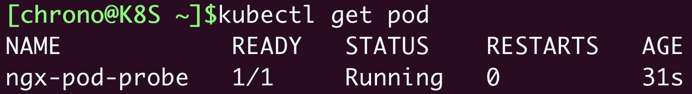
当然，因为这个Nginx应用非常简单，它启动后探针的检查都会是正常的，你可以用 kubectl logs 来查看Nginx的访问日志，里面会记录HTTP GET探针的执行情况：

从截图中你可以看到，Kubernetes正是以大约5秒一次的频率，向URI /ready 发送HTTP请求，不断地检查容器是否处于就绪状态。
为了验证另两个探针的工作情况，我们可以修改探针，比如把命令改成检查错误的文件、错误的端口号：
startupProbe:
exec:
command: ["cat", "nginx.pid"] #错误的文件
livenessProbe:
tcpSocket:
port: 8080 #错误的端口号
然后我们重新创建Pod对象，观察它的状态。
当StartupProbe探测失败的时候，Kubernetes就会不停地重启容器，现象就是 RESTARTS 次数不停地增加，而livenessProbe和readinessProbePod没有执行，Pod虽然是Running状态，也永远不会READY：
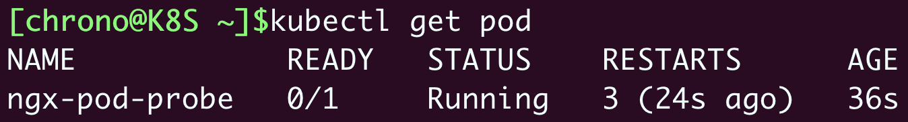
因为failureThreshold的次数默认是三次，所以Kubernetes会连续执行三次livenessProbe TCP Socket探测，每次间隔10秒，30秒之后都失败才重启容器：
你也可以自己试着改一下readinessProbe，看看它失败时Pod会是什么样的状态。
小结
好了，今天我们学习了两种为Pod配置运行保障的方式：Resources和Probe。Resources就是为容器加上资源限制，而Probe就是主动健康检查，让Kubernetes实时地监控应用的运行状态。
再简单小结一下今天的内容：
- 资源配额使用的是cgroup技术，可以限制容器使用的CPU和内存数量，让Pod合理利用系统资源，也能够让Kubernetes更容易调度Pod。
- Kubernetes定义了Startup、Liveness、Readiness三种健康探针，它们分别探测应用的启动、存活和就绪状态。
- 探测状态可以使用Shell、TCP Socket、HTTP Get三种方式，还可以调整探测的频率和超时时间等参数。
课下作业
最后是课下作业时间，给你留两个思考题：
- 你能够解释一下Liveness和Readiness这两种探针的区别吗？
- 你认为Shell、TCP Socket、HTTP GET这三种探测方式各有什么优缺点？
欢迎在下方留言区留言参与讨论，课程快要完结了，感谢你坚持学习了这么久。我们下节课再见。

29 集群管理：如何用名字空间分隔系统资源？
你好，我是Chrono。
在上一节课里我们学习了资源配额和检查探针，它们可以保障Pod这个微观单位很好地运行。那么很自然地，我们就会想：在集群的宏观层次，会不会也有类似的方法来为Kubernetes提供运行保障呢？
这是毫无疑问的，因为Kubernetes在各个方面都考虑得非常周密，也有很多的手段来管理、控制集群的资源。
今天我们就来看看名字空间（namespace）的一些高级用法。
为什么要有名字空间
其实我们很早就接触过Kubernetes的名字空间，比如[第10讲]中查看apiserver等组件要用到 kube-system 名字空间，还有在[第20讲]里的Service对象，DNS的完整域名里也会用到名字空间。
不过之前学习的重点是Kubernetes架构和API对象，对名字空间没有特别关注，而且也过去比较久了，所以现在我们来重新认识一下名字空间。
首先要明白，Kubernetes的名字空间并不是一个实体对象，只是一个逻辑上的概念。它可以把集群切分成一个个彼此独立的区域，然后我们把对象放到这些区域里，就实现了类似容器技术里namespace的隔离效果，应用只能在自己的名字空间里分配资源和运行，不会干扰到其他名字空间里的应用。
你可能要问了：Kubernetes的Master/Node架构已经能很好地管理集群，为什么还要引入名字空间这个东西呢？它的实际意义是什么呢？
我觉得，这恰恰是Kubernetes面对大规模集群、海量节点时的一种现实考虑。因为集群很大、计算资源充足，会有非常多的用户在Kubernetes里创建各式各样的应用，可能会有百万数量级别的Pod，这就使得资源争抢和命名冲突的概率大大增加了，情形和单机Linux系统里是非常相似的。
比如说，现在有一个Kubernetes集群，前端组、后端组、测试组都在使用它。这个时候就很容易命名冲突，比如后端组先创建了一个Pod叫“Web”，这个名字就被“占用”了，之后前端组和测试组就只能绞尽脑汁再新起一个不冲突的名字。接着资源争抢也容易出现，比如某一天，测试组不小心部署了有Bug的应用，在节点上把资源都给“吃”完了，就会导致其他组的同事根本无法工作。
所以，当多团队、多项目共用Kubernetes的时候，为了避免这些问题的出现，我们就需要把集群给适当地“局部化”，为每一类用户创建出只属于它自己的“工作空间”。
如果把Kubernetes比做一个大牧场的话，API对象就是里面的鸡鸭牛羊，而名字空间就是圈养它们的围栏，有了各自合适的活动区域，就能更有效、更安全地利用Kubernetes。
如何使用名字空间
名字空间也是一种API对象，使用命令 kubectl api-resources 可以看到它的简称是“ns”，命令 kubectl create 不需要额外的参数，可以很容易地创建一个名字空间，比如：
kubectl create ns test-ns
kubectl get ns
Kubernetes初始化集群的时候也会预设4个名字空间：default、kube-system、kube-public、kube-node-lease。我们常用的是前两个，default 是用户对象默认的名字空间，kube-system 是系统组件所在的名字空间，相信你对它们已经很熟悉了。
想要把一个对象放入特定的名字空间，需要在它的 metadata 里添加一个 namespace 字段，比如我们要在“test-ns”里创建一个简单的Nginx Pod，就要这样写：
apiVersion: v1
kind: Pod
metadata:
name: ngx
namespace: test-ns
spec:
containers:
- image: nginx:alpine
name: ngx
kubectl apply 创建这个对象之后，我们直接用 kubectl get 是看不到它的，因为默认查看的是“default”名字空间，想要操作其他名字空间的对象必须要用 -n 参数明确指定：
kubectl get pod -n test-ns

因为名字空间里的对象都从属于名字空间，所以在删除名字空间的时候一定要小心，一旦名字空间被删除，它里面的所有对象也都会消失。
你可以执行一下 kubectl delete，试着删除刚才创建的名字空间“test-ns”：
kubectl delete ns test-ns
就会发现删除名字空间后，它里面的Pod也会无影无踪了。
什么是资源配额
有了名字空间，我们就可以像管理容器一样，给名字空间设定配额，把整个集群的计算资源分割成不同的大小，按需分配给团队或项目使用。
不过集群和单机不一样，除了限制最基本的CPU和内存，还必须限制各种对象的数量，否则对象之间也会互相挤占资源。
名字空间的资源配额需要使用一个专门的API对象，叫做 ResourceQuota，简称是 quota，我们可以使用命令 kubectl create 创建一个它的样板文件：
export out="--dry-run=client -o yaml"
kubectl create quota dev-qt $out
因为资源配额对象必须依附在某个名字空间上，所以在它的 metadata 字段里必须明确写出 namespace（否则就会应用到default名字空间）。
下面我们先创建一个名字空间“dev-ns”，再创建一个资源配额对象“dev-qt”：
apiVersion: v1
kind: Namespace
metadata:
name: dev-ns
---
apiVersion: v1
kind: ResourceQuota
metadata:
name: dev-qt
namespace: dev-ns
spec:
... ...
ResourceQuota对象的使用方式比较灵活，既可以限制整个名字空间的配额，也可以只限制某些类型的对象（使用scopeSelector），今天我们看第一种，它需要在 spec 里使用 hard 字段，意思就是“硬性全局限制”。
在ResourceQuota里可以设置各类资源配额，字段非常多，我简单地归了一下类，你可以课后再去官方文档上查找详细信息：
- CPU和内存配额，使用
request.*、limits.*，这是和容器资源限制是一样的。 - 存储容量配额，使
requests.storage限制的是PVC的存储总量，也可以用persistentvolumeclaims限制PVC的个数。 - 核心对象配额，使用对象的名字（英语复数形式），比如
pods、configmaps、secrets、services。 - 其他API对象配额，使用
count/name.group的形式，比如count/jobs.batch、count/deployments.apps。
下面的这个YAML就是一个比较完整的资源配额对象：
apiVersion: v1
kind: ResourceQuota
metadata:
name: dev-qt
namespace: dev-ns
spec:
hard:
requests.cpu: 10
requests.memory: 10Gi
limits.cpu: 10
limits.memory: 20Gi
requests.storage: 100Gi
persistentvolumeclaims: 100
pods: 100
configmaps: 100
secrets: 100
services: 10
count/jobs.batch: 1
count/cronjobs.batch: 1
count/deployments.apps: 1
我来稍微解释一下它为名字空间加上的全局资源配额：
- 所有Pod的需求总量最多是10个CPU和10GB的内存，上限总量是10个CPU和20GB的内存。
- 只能创建100个PVC对象，使用100GB的持久化存储空间。
- 只能创建100个Pod，100个ConfigMap，100个Secret，10个Service。
- 只能创建1个Job，1个CronJob，1个Deployment。
这个YAML文件比较大，字段比较多，如果你觉得不是太容易阅读的话，也可以把它拆成几个小的YAML，分类限制资源数量，也许会更灵活一些。比如：
apiVersion: v1
kind: ResourceQuota
metadata:
name: cpu-mem-qt
namespace: dev-ns
spec:
hard:
requests.cpu: 10
requests.memory: 10Gi
limits.cpu: 10
limits.memory: 20Gi
apiVersion: v1
kind: ResourceQuota
metadata:
name: core-obj-qt
namespace: dev-ns
spec:
hard:
pods: 100
configmaps: 100
secrets: 100
services: 10
如何使用资源配额
现在让我们用 kubectl apply 创建这个资源配额对象，然后用 kubectl get 查看，记得要用 -n 指定名字空间：
kubectl apply -f quota-ns.yml
kubectl get quota -n dev-ns
你可以看到输出了ResourceQuota的全部信息，但都挤在了一起，看起来很困难，这时可以再用命令 kubectl describe 来查看对象，它会给出一个清晰的表格：
kubectl describe quota -n dev-ns

现在让我们尝试在这个名字空间里运行两个busybox Job，同样要加上 -n 参数：
kubectl create job echo1 -n dev-ns --image=busybox -- echo hello
kubectl create job echo2 -n dev-ns --image=busybox -- echo hello
ResourceQuota限制了名字空间里最多只能有一个Job，所以创建第二个Job对象时会失败，提示超出了资源配额。
再用命令 kubectl describe 来查看，也会发现Job资源已经到达了上限：

不过，只要我们删除刚才的Job，就又可以运行一个新的离线业务了：

同样的，这个“dev-ns”里也只能创建一个CronJob和一个Deployment，你可以课后自己尝试一下。
默认资源配额
学到这里估计你也发现了，在名字空间加上了资源配额限制之后，它会有一个合理但比较“烦人”的约束：要求所有在里面运行的Pod都必须用字段 resources 声明资源需求，否则就无法创建。
比如说，现在我们想用命令 kubectl run 创建一个Pod：
kubectl run ngx --image=nginx:alpine -n dev-ns

发现给出了一个“Forbidden”的错误提示，说不满足配额要求。
Kubernetes这样做的原因也很好理解，上一讲里我们说过，如果Pod里没有 resources 字段，就可以无限制地使用CPU和内存，这显然与名字空间的资源配额相冲突。为了保证名字空间的资源总量可管可控，Kubernetes就只能拒绝创建这样的Pod了。
这个约束对于集群管理来说是好事，但对于普通用户来说却带来了一点麻烦，本来YAML文件就已经够大够复杂的了，现在还要再增加几个字段，再费心估算它的资源配额。如果有很多小应用、临时Pod要运行的话，这样做的人力成本就比较高，不是太划算。
那么能不能让Kubernetes自动为Pod加上资源限制呢？也就是说给个默认值，这样就可以省去反复设置配额的烦心事。
这个时候就要用到一个很小但很有用的辅助对象了—— LimitRange，简称是 limits，它能为API对象添加默认的资源配额限制。
你可以用命令 kubectl explain limits 来查看它的YAML字段详细说明，这里说几个要点：
spec.limits是它的核心属性，描述了默认的资源限制。type是要限制的对象类型，可以是Container、Pod、PersistentVolumeClaim。default是默认的资源上限，对应容器里的resources.limits，只适用于Container。defaultRequest默认申请的资源，对应容器里的resources.requests，同样也只适用于Container。max、min是对象能使用的资源的最大最小值。
这个YAML就示范了一个LimitRange对象：
apiVersion: v1
kind: LimitRange
metadata:
name: dev-limits
namespace: dev-ns
spec:
limits:
- type: Container
defaultRequest:
cpu: 200m
memory: 50Mi
default:
cpu: 500m
memory: 100Mi
- type: Pod
max:
cpu: 800m
memory: 200Mi
它设置了每个容器默认申请0.2的CPU和50MB内存，容器的资源上限是0.5的CPU和100MB内存，每个Pod的最大使用量是0.8的CPU和200MB内存。
使用 kubectl apply 创建LimitRange之后，再用 kubectl describe 就可以看到它的状态：
kubectl describe limitranges -n dev-ns

现在我们就可以不用编写 resources 字段直接创建Pod了，再运行之前的 kubectl run 命令：
kubectl run ngx --image=nginx:alpine -n dev-ns
有了这个默认的资源配额作为“保底”，这次就没有报错，Pod顺利创建成功，用 kubectl describe 查看Pod的状态，也可以看到LimitRange为它自动加上的资源配额：

小结
今天我们学习了如何使用名字空间来管理Kubernetes集群资源。
在我们的实验环境里，因为只有一个用户（也就是你自己），可以独占全部资源，所以使用名字空间的意义不大。
但是在生产环境里会有很多用户共同使用Kubernetes，必然会有对资源的竞争，为了公平起见，避免某些用户过度消耗资源，就非常有必要用名字空间做好集群的资源规划了。
再简单小结一下今天的内容：
- 名字空间是一个逻辑概念，没有实体，它的目标是为资源和对象划分出一个逻辑边界，避免冲突。
- ResourceQuota对象可以为名字空间添加资源配额，限制全局的CPU、内存和API对象数量。
- LimitRange对象可以为容器或者Pod添加默认的资源配额，简化对象的创建工作。
课下作业
最后是课下作业时间，给你留两个思考题：
- 如果你是Kubernetes系统管理员，你会如何使用名字空间来管理生产集群呢？
- 你觉得设置资源配额应该遵循什么样的基本原则？
在最后这段一起学习的旅途中，期待在留言区看到你的思考，如果觉得今天的内容对你有帮助，也欢迎分享给身边的朋友一起讨论。我们下节课再见。

30 系统监控：如何使用Metrics Server和Prometheus？
你好，我是Chrono。
在前面的两节课里，我们学习了对Pod和对集群的一些管理方法，其中的要点就是设置资源配额，让Kubernetes用户能公平合理地利用系统资源。
虽然有了这些方法，但距离我们把Pod和集群管好用好还缺少一个很重要的方面——集群的可观测性。也就是说，我们希望给集群也安装上“检查探针”，观察到集群的资源利用率和其他指标，让集群的整体运行状况对我们“透明可见”，这样才能更准确更方便地做好集群的运维工作。
但是观测集群是不能用“探针”这种简单的方式的，所以今天我就带你一起来看看Kubernetes为集群提供的两种系统级别的监控项目：Metrics Server和Prometheus，以及基于它们的水平自动伸缩对象HorizontalPodAutoscaler。
Metrics Server
如果你对Linux系统有所了解的话，也许知道有一个命令 top 能够实时显示当前系统的CPU和内存利用率，它是性能分析和调优的基本工具，非常有用。Kubernetes也提供了类似的命令，就是 kubectl top，不过默认情况下这个命令不会生效，必须要安装一个插件Metrics Server才可以。
Metrics Server是一个专门用来收集Kubernetes核心资源指标（metrics）的工具，它定时从所有节点的kubelet里采集信息，但是对集群的整体性能影响极小，每个节点只大约会占用1m的CPU和2MB的内存，所以性价比非常高。
下面的这张图来自Kubernetes官网，你可以对Metrics Server的工作方式有个大概了解：它调用kubelet的API拿到节点和Pod的指标，再把这些信息交给apiserver，这样kubectl、HPA就可以利用apiserver来读取指标了：

在Metrics Server的项目网址（https://github.com/kubernetes-sigs/metrics-server）可以看到它的说明文档和安装步骤，不过如果你已经按照[第17讲]用kubeadm搭建了Kubernetes集群，就已经具备了全部前提条件，接下来只需要几个简单的操作就可以完成安装。
Metrics Server的所有依赖都放在了一个YAML描述文件里，你可以使用wget或者curl下载：
wget https://github.com/kubernetes-sigs/metrics-server/releases/latest/download/components.yaml
但是在 kubectl apply 创建对象之前，我们还有两个准备工作要做。
第一个工作，是修改YAML文件。你需要在Metrics Server的Deployment对象里，加上一个额外的运行参数 --kubelet-insecure-tls，也就是这样：
apiVersion: apps/v1
kind: Deployment
metadata:
name: metrics-server
namespace: kube-system
spec:
... ...
template:
spec:
containers:
- args:
- --kubelet-insecure-tls
... ...
这是因为Metrics Server默认使用TLS协议，要验证证书才能与kubelet实现安全通信，而我们的实验环境里没有这个必要，加上这个参数可以让我们的部署工作简单很多（生产环境里就要慎用）。
第二个工作，是预先下载Metrics Server的镜像。看这个YAML文件，你会发现Metrics Server的镜像仓库用的是gcr.io，下载很困难。好在它也有国内的镜像网站，你可以用[第17讲]里的办法，下载后再改名，然后把镜像加载到集群里的节点上。
这里我给出一段Shell脚本代码，供你参考：
repo=registry.aliyuncs.com/google_containers
name=k8s.gcr.io/metrics-server/metrics-server:v0.6.1
src_name=metrics-server:v0.6.1
docker pull $repo/$src_name
docker tag $repo/$src_name $name
docker rmi $repo/$src_name
两个准备工作都完成之后，我们就可以使用YAML部署Metrics Server了：
kubectl apply -f components.yaml
Metrics Server属于名字空间“kube-system”，可以用 kubectl get pod 加上 -n 参数查看它是否正常运行：
kubectl get pod -n kube-system

现在有了Metrics Server插件，我们就可以使用命令 kubectl top 来查看Kubernetes集群当前的资源状态了。它有两个子命令，node 查看节点的资源使用率，pod 查看Pod的资源使用率。
由于Metrics Server收集信息需要时间，我们必须等一小会儿才能执行命令，查看集群里节点和Pod状态：
kubectl top node
kubectl top pod -n kube-system
从这个截图里你可以看到：
- 集群里两个节点CPU使用率都不高，分别是8%和4%，但内存用的很多，master节点用了差不多一半（48%），而worker节点几乎用满了（89%）。
- 名字空间“kube-system”里有很多Pod，其中apiserver最消耗资源，使用了75m的CPU和363MB的内存。
HorizontalPodAutoscaler
有了Metrics Server，我们就可以轻松地查看集群的资源使用状况了，不过它另外一个更重要的功能是辅助实现应用的“水平自动伸缩”。
在[第18讲]里我们提到有一个命令 kubectl scale，可以任意增减Deployment部署的Pod数量，也就是水平方向的“扩容”和“缩容”。但是手动调整应用实例数量还是比较麻烦的，需要人工参与，也很难准确把握时机，难以及时应对生产环境中突发的大流量，所以最好能把这个“扩容”“缩容”也变成自动化的操作。
Kubernetes为此就定义了一个新的API对象，叫做“HorizontalPodAutoscaler”，简称是“hpa”。顾名思义，它是专门用来自动伸缩Pod数量的对象，适用于Deployment和StatefulSet，但不能用于DaemonSet（原因很明显吧）。
HorizontalPodAutoscaler的能力完全基于Metrics Server，它从Metrics Server获取当前应用的运行指标，主要是CPU使用率，再依据预定的策略增加或者减少Pod的数量。
下面我们就来看看该怎么使用HorizontalPodAutoscaler，首先要定义Deployment和Service，创建一个Nginx应用，作为自动伸缩的目标对象：
apiVersion: apps/v1
kind: Deployment
metadata:
name: ngx-hpa-dep
spec:
replicas: 1
selector:
matchLabels:
app: ngx-hpa-dep
template:
metadata:
labels:
app: ngx-hpa-dep
spec:
containers:
- image: nginx:alpine
name: nginx
ports:
- containerPort: 80
resources:
requests:
cpu: 50m
memory: 10Mi
limits:
cpu: 100m
memory: 20Mi
---
apiVersion: v1
kind: Service
metadata:
name: ngx-hpa-svc
spec:
ports:
- port: 80
protocol: TCP
targetPort: 80
selector:
app: ngx-hpa-dep
在这个YAML里我只部署了一个Nginx实例，名字是 ngx-hpa-dep。注意在它的 spec 里一定要用 resources 字段写清楚资源配额，否则HorizontalPodAutoscaler会无法获取Pod的指标，也就无法实现自动化扩缩容。
接下来我们要用命令 kubectl autoscale 创建一个HorizontalPodAutoscaler的样板YAML文件，它有三个参数：
- min，Pod数量的最小值，也就是缩容的下限。
- max，Pod数量的最大值，也就是扩容的上限。
- cpu-percent，CPU使用率指标，当大于这个值时扩容，小于这个值时缩容。
好，现在我们就来为刚才的Nginx应用创建HorizontalPodAutoscaler，指定Pod数量最少2个，最多10个，CPU使用率指标设置的小一点，5%，方便我们观察扩容现象：
export out="--dry-run=client -o yaml" # 定义Shell变量
kubectl autoscale deploy ngx-hpa-dep --min=2 --max=10 --cpu-percent=5 $out
得到的YAML描述文件就是这样：
apiVersion: autoscaling/v1
kind: HorizontalPodAutoscaler
metadata:
name: ngx-hpa
spec:
maxReplicas: 10
minReplicas: 2
scaleTargetRef:
apiVersion: apps/v1
kind: Deployment
name: ngx-hpa-dep
targetCPUUtilizationPercentage: 5
我们再使用命令 kubectl apply 创建这个HorizontalPodAutoscaler后，它会发现Deployment里的实例只有1个，不符合min定义的下限的要求，就先扩容到2个：

从这张截图里你可以看到，HorizontalPodAutoscaler会根据YAML里的描述，找到要管理的Deployment，把Pod数量调整成2个，再通过Metrics Server不断地监测Pod的CPU使用率。
下面我们来给Nginx加上压力流量，运行一个测试Pod，使用的镜像是“httpd:alpine”，它里面有HTTP性能测试工具ab（Apache Bench）：
kubectl run test -it --image=httpd:alpine -- sh

然后我们向Nginx发送一百万个请求，持续1分钟，再用 kubectl get hpa 来观察HorizontalPodAutoscaler的运行状况：
ab -c 10 -t 60 -n 1000000 'http://ngx-hpa-svc/'
因为Metrics Server大约每15秒采集一次数据，所以HorizontalPodAutoscaler的自动化扩容和缩容也是按照这个时间点来逐步处理的。
当它发现目标的CPU使用率超过了预定的5%后，就会以2的倍数开始扩容，一直到数量上限，然后持续监控一段时间，如果CPU使用率回落，就会再缩容到最小值。
Prometheus
显然，有了Metrics Server和HorizontalPodAutoscaler的帮助，我们的应用管理工作又轻松了一些。不过，Metrics Server能够获取的指标还是太少了，只有CPU和内存，想要监控到更多更全面的应用运行状况，还得请出这方面的权威项目“Prometheus”。
其实，Prometheus的历史比Kubernetes还要早一些，它最初是由Google的离职员工在2012年创建的开源项目，灵感来源于Borg配套的BorgMon监控系统。后来在2016年，Prometheus作为第二个项目加入了CNCF，并在2018年继Kubernetes之后顺利毕业，成为了CNCF的不折不扣的“二当家”，也是云原生监控领域的“事实标准”。
和Kubernetes一样，Prometheus也是一个庞大的系统，我们这里就只做一个简略的介绍。
下面的这张图是Prometheus官方的架构图，几乎所有文章在讲Prometheus的时候必然要拿出来，所以我也没办法“免俗”：
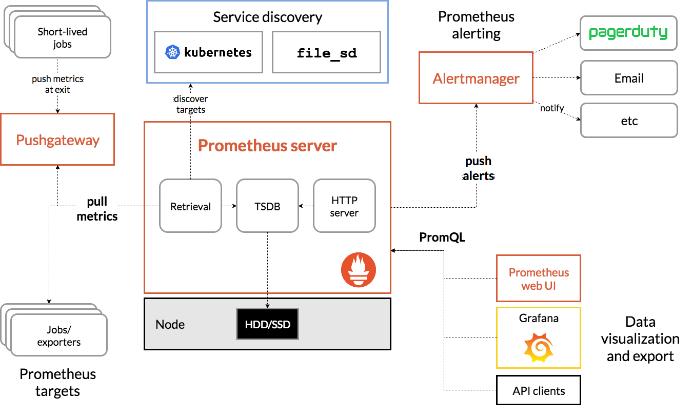
Prometheus系统的核心是它的Server，里面有一个时序数据库TSDB，用来存储监控数据，另一个组件Retrieval使用拉取（Pull）的方式从各个目标收集数据，再通过HTTP Server把这些数据交给外界使用。
在Prometheus Server之外还有三个重要的组件：
- Push Gateway，用来适配一些特殊的监控目标，把默认的Pull模式转变为Push模式。
- Alert Manager，告警中心，预先设定规则，发现问题时就通过邮件等方式告警。
- Grafana是图形化界面，可以定制大量直观的监控仪表盘。
由于同属于CNCF，所以Prometheus自然就是“云原生”，在Kubernetes里运行是顺理成章的事情。不过它包含的组件实在是太多，部署起来有点麻烦，这里我选用了“kube-prometheus”项目（https://github.com/prometheus-operator/kube-prometheus/），感觉操作起来比较容易些。
下面就跟着我来在Kubernetes实验环境里体验一下Prometheus吧。
我们先要下载kube-prometheus的源码包，当前的最新版本是0.11：
wget https://github.com/prometheus-operator/kube-prometheus/archive/refs/tags/v0.11.0.tar.gz
解压缩后，Prometheus部署相关的YAML文件都在 manifests 目录里，有近100个，你可以先大概看一下。
和Metrics Server一样，我们也必须要做一些准备工作，才能够安装Prometheus。
第一步，是修改 prometheus-service.yaml、grafana-service.yaml。
这两个文件定义了Prometheus和Grafana服务对象，我们可以给它们添加 type: NodePort（参考[第20讲]），这样就可以直接通过节点的IP地址访问（当然你也可以配置成Ingress）。
第二步，是修改 kubeStateMetrics-deployment.yaml、prometheusAdapter-deployment.yaml，因为它们里面有两个存放在gcr.io的镜像，必须解决下载镜像的问题。
但很遗憾，我没有在国内网站上找到它们的下载方式，为了能够顺利安装，只能把它们下载后再上传到Docker Hub上。所以你需要修改镜像名字，把前缀都改成 chronolaw：
image: k8s.gcr.io/kube-state-metrics/kube-state-metrics:v2.5.0
image: k8s.gcr.io/prometheus-adapter/prometheus-adapter:v0.9.1
image: chronolaw/kube-state-metrics:v2.5.0
image: chronolaw/prometheus-adapter:v0.9.1
这两个准备工作完成之后，我们要执行两个 kubectl create 命令来部署Prometheus，先是 manifests/setup 目录，创建名字空间等基本对象，然后才是 manifests 目录：
kubectl create -f manifests/setup
kubectl create -f manifests
Prometheus的对象都在名字空间“monitoring”里，创建之后可以用 kubectl get 来查看状态：
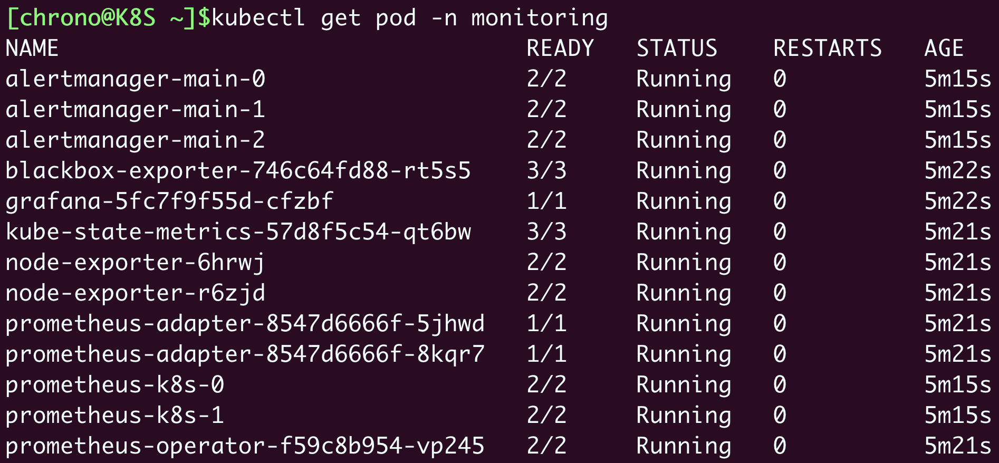
确定这些Pod都运行正常，我们再来看看它对外的服务端口：
kubectl get svc -n monitoring
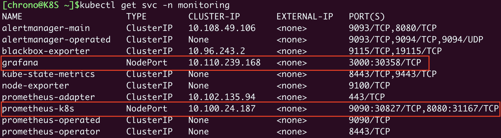
前面修改了Grafana和Prometheus的Service对象，所以这两个服务就在节点上开了端口，Grafana是“30358”，Prometheus有两个端口，其中“9090”对应的“30827”是Web端口。
在浏览器里输入节点的IP地址（我这里是“http://192.168.10.210”），再加上端口号“30827”，我们就能看到Prometheus自带的Web界面，：
Web界面上有一个查询框，可以使用PromQL来查询指标，生成可视化图表，比如在这个截图里我就选择了“node_memory_Active_bytes”这个指标，意思是当前正在使用的内存容量。
Prometheus的Web界面比较简单，通常只用来调试、测试，不适合实际监控。我们再来看Grafana，访问节点的端口“30358”（我这里是“http://192.168.10.210:30358”），它会要求你先登录，默认的用户名和密码都是“admin”：
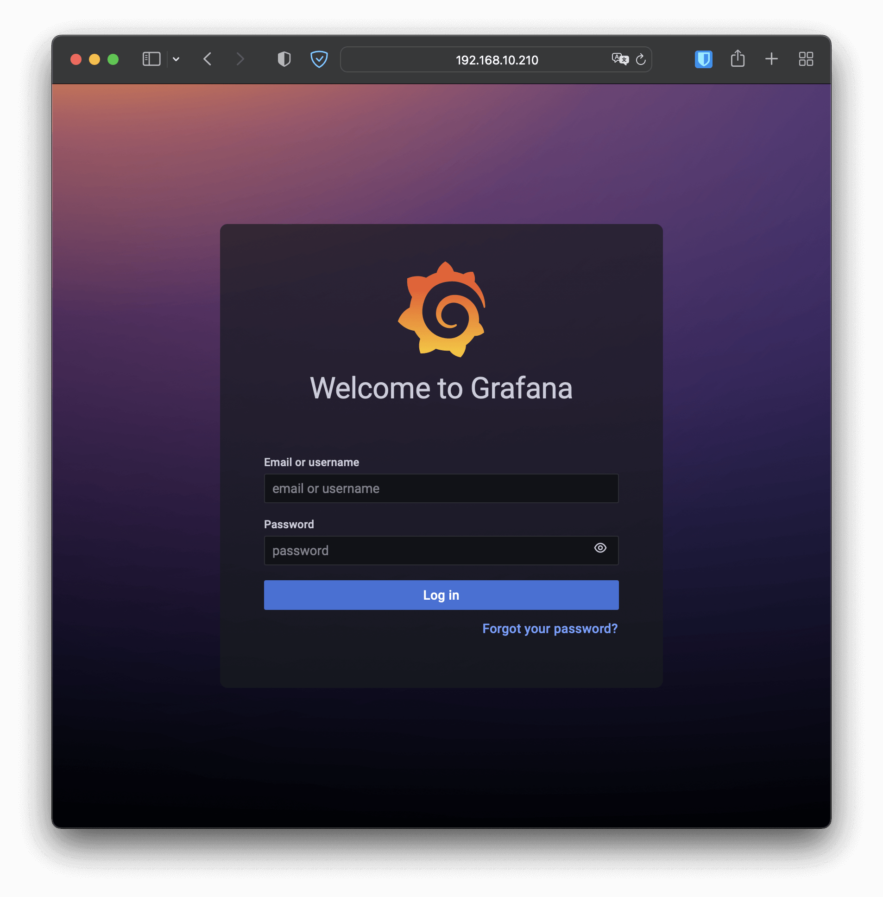
Grafana内部已经预置了很多强大易用的仪表盘，你可以在左侧菜单栏的“Dashboards - Browse”里任意挑选一个：

比如我选择了“Kubernetes / Compute Resources / Namespace (Pods)”这个仪表盘，就会出来一个非常漂亮图表，比Metrics Server的 kubectl top 命令要好看得多，各种数据一目了然：

关于Prometheus就暂时介绍到这里，再往下讲可能就要偏离我们的Kubernetes主题了，如果你对它感兴趣的话，可以课后再去它的官网上看文档，或者参考其他的学习资料。
小结
在云原生时代，系统的透明性和可观测性是非常重要的。今天我们一起学习了Kubernetes里的两个系统监控项目：命令行方式的Metrics Server、图形化界面的Prometheus，利用好它们就可以让我们随时掌握Kubernetes集群的运行状态，做到“明察秋毫”。
再简单小结一下今天的内容：
- Metrics Server是一个Kubernetes插件，能够收集系统的核心资源指标，相关的命令是
kubectl top。 - Prometheus是云原生监控领域的“事实标准”，用PromQL语言来查询数据，配合Grafana可以展示直观的图形界面，方便监控。
- HorizontalPodAutoscaler实现了应用的自动水平伸缩功能，它从Metrics Server获取应用的运行指标，再实时调整Pod数量，可以很好地应对突发流量。
课下作业
最后是课下作业时间，给你留两个思考题：
- 部署了HorizontalPodAutoscaler之后，如果再执行
kubectl scale手动扩容会发生什么呢？ - 你有过应用监控的经验吗？应该关注哪些重要的指标呢？
非常期待在留言区看到你的发言，同我同其他同学一起讨论。我们下节课再见。

31 网络通信：CNI是怎么回事？又是怎么工作的？
你好，我是Chrono。
到现在，我们对Kubernetes已经非常熟悉了，它是一个集群操作系统，能够管理大量计算节点和运行在里面的应用。不过，还有一个很重要的基础知识我们还没有学习，那就是“网络通信”。
早在“入门篇”的[第6讲]里，我们就简单介绍过Docker的网络模式，然后在“中级篇”的[第17讲]，我们又为Kubernetes安装了一个网络插件Flannel。这些都与网络相关，但也只是浅尝辄止，并没有太多深究。
如果你是一个喜欢刨根问底的人，会不会很好奇：Flannel到底是如何工作的呢？它为什么能够让Kubernetes集群正常通信呢？还有没有其他网络插件呢？
今天我们就来聊一下这个话题，讲讲Kubernetes的网络接口标准CNI，以及Calico、Cilium等性能更好的网络插件。
Kubernetes的网络模型
在学习Kubernetes的网络之前，我们还是要先简单回顾一下Docker的网络知识。
你对Docker的null、host和bridge三种网络模式还有印象吗？这里我重新画了一张图，描述了Docker里最常用的bridge网络模式：

Docker会创建一个名字叫“docker0”的网桥，默认是私有网段“172.17.0.0/16”。每个容器都会创建一个虚拟网卡对（veth pair），两个虚拟网卡分别“插”在容器和网桥上，这样容器之间就可以互联互通了。
Docker的网络方案简单有效，但问题是它只局限在单机环境里工作，跨主机通信非常困难（需要做端口映射和网络地址转换）。
针对Docker的网络缺陷，Kubernetes提出了一个自己的网络模型“IP-per-pod”，能够很好地适应集群系统的网络需求，它有下面的这4点基本假设：
- 集群里的每个Pod都会有唯一的一个IP地址。
- Pod里的所有容器共享这个IP地址。
- 集群里的所有Pod都属于同一个网段。
- Pod直接可以基于IP地址直接访问另一个Pod，不需要做麻烦的网络地址转换（NAT）。
我画了一张Kubernetes网络模型的示意图，你可以看一下：

这个网络让Pod摆脱了主机的硬限制，是一个“平坦”的网络模型，很好理解，通信自然也非常简单。
因为Pod都具有独立的IP地址，相当于一台虚拟机，而且直连互通，也就可以很容易地实施域名解析、负载均衡、服务发现等工作，以前的运维经验都能够直接使用，对应用的管理和迁移都非常友好。
什么是CNI
Kubernetes定义的这个网络模型很完美，但要把这个模型落地实现就不那么容易了。所以Kubernetes就专门制定了一个标准：CNI（Container Networking Interface）。
CNI为网络插件定义了一系列通用接口，开发者只要遵循这个规范就可以接入Kubernetes，为Pod创建虚拟网卡、分配IP地址、设置路由规则，最后就能够实现“IP-per-pod”网络模型。
依据实现技术的不同，CNI插件可以大致上分成“Overlay”“Route”和“Underlay”三种。
Overlay的原意是“覆盖”，是指它构建了一个工作在真实底层网络之上的“逻辑网络”，把原始的Pod网络数据封包，再通过下层网络发送出去，到了目的地再拆包。因为这个特点，它对底层网络的要求低，适应性强，缺点就是有额外的传输成本，性能较低。
Route也是在底层网络之上工作，但它没有封包和拆包，而是使用系统内置的路由功能来实现Pod跨主机通信。它的好处是性能高，不过对底层网络的依赖性比较强，如果底层不支持就没办法工作了。
Underlay就是直接用底层网络来实现CNI，也就是说Pod和宿主机都在一个网络里，Pod和宿主机是平等的。它对底层的硬件和网络的依赖性是最强的，因而不够灵活，但性能最高。
自从2015年CNI发布以来，由于它的接口定义宽松，有很大的自由发挥空间，所以社区里就涌现出了非常多的网络插件，我们之前在[第17讲]里提到的Flannel就是其中之一。
Flannel（https://github.com/flannel-io/flannel/）由CoreOS公司（已被Redhat收购）开发，最早是一种Overlay模式的网络插件，使用UDP和VXLAN技术，后来又用Host-Gateway技术支持了Route模式。Flannel简单易用，是Kubernetes里最流行的CNI插件，但它在性能方面表现不是太好，所以一般不建议在生产环境里使用。
现在还有两个常用CNI插件：Calico、Cilium，我们做个简略的介绍。

Calico（https://github.com/projectcalico/calico）是一种Route模式的网络插件，使用BGP协议（Border Gateway Protocol）来维护路由信息，性能要比Flannel好，而且支持多种网络策略，具备数据加密、安全隔离、流量整形等功能。
Cilium（https://github.com/cilium/cilium）是一个比较新的网络插件，同时支持Overlay模式和Route模式，它的特点是深度使用了Linux eBPF技术，在内核层次操作网络数据，所以性能很高，可以灵活实现各种功能。在2021年它加入了CNCF，成为了孵化项目，是非常有前途的CNI插件。
CNI插件是怎么工作的
Flannel比较简单，我们先以它为例看看CNI在Kubernetes里的工作方式。
这里必须要说明一点，计算机网络很复杂，有IP地址、MAC地址、网段、网卡、网桥、路由等许许多多的概念，而且数据会流经多个设备，理清楚脉络比较麻烦，今天我们会做一个大概的描述，不会讲那些太底层的细节。
我们先来在实验环境里用Deployment创建3个Nginx Pod，作为研究对象：
kubectl create deploy ngx-dep --image=nginx:alpine --replicas=3
使用命令 kubectl get pod 可以看到，有两个Pod运行在master节点上，IP地址分别是“10.10.0.3”“10.10.0.4”，另一个Pod运行在worker节点上，IP地址是“10.10.1.77”：
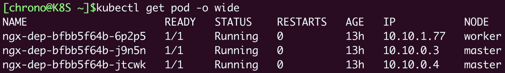
Flannel默认使用的是基于VXLAN的Overlay模式，整个集群的网络结构我画了一张示意图，你可以对比一下Docker的网络结构：

从单机的角度来看的话，Flannel的网络结构和Docker几乎是一模一样的，只不过网桥换成了“cni0”，而不是“docker0”。
接下来我们来操作一下，看看Pod里的虚拟网卡是如何接入cni0网桥的。
在Pod里执行命令 ip addr 就可以看到它里面的虚拟网卡“eth0”：
你需要注意它的形式，第一个数字“3”是序号，意思是第3号设备，“@if45”就是它另一端连接的虚拟网卡，序号是45。
因为这个Pod的宿主机是master，我们就要登录到master节点，看看这个节点上的网络情况，同样还是用命令 ip addr：
这里就可以看到宿主机（master）节点上的第45号设备了，它的名字是 veth41586979@if3，“veth”表示它是一个虚拟网卡，而后面的“@if3”就是Pod里对应的3号设备，也就是“eth0”网卡了。
那么“cni0”网桥的信息该怎么查看呢？这需要在宿主机（master）上使用命令 brctl show：
从这张截图里，你可以发现“cni0”网桥上有4个虚拟网卡，第三个就是“veth41586979”，所以这个网卡就被“插”在了“cni0”网桥上，然后因为虚拟网卡的“结对”特性，Pod也就连上了“cni0”网桥。
单纯用Linux命令不太容易看清楚网卡和网桥的联系，所以我把它们整合在了下面的图里，加上了虚线标记，这样你就能更清晰地理解Pod、veth和cni0的引用关系了：
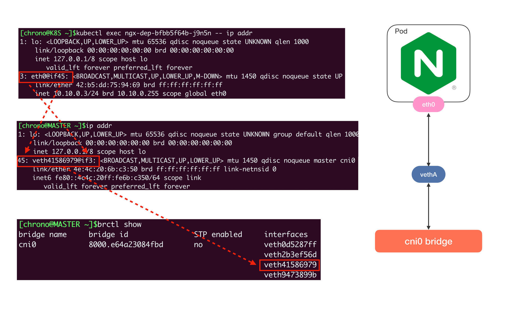
使用同样的方式，你可以知道另一个Pod “10.10.0.4”的网卡是 veth2b3ef56d@if3，它也在“cni0”网桥上，所以借助这个网桥，本机的Pod就可以直接通信。
弄清楚了本机网络，我们再来看跨主机的网络，它的关键是节点的路由表，用命令 route 查看：

它告诉我们有这些信息：
- 10.10.0.0/24网段的数据，都要走cni0设备，也就是“cni0”网桥。
- 10.10.1.0/24网段的数据，都要走flannel.1设备，也就是Flannel。
- 192.168.10.0/24网段的数据，都要走ens160设备，也就是我们宿主机的网卡。
假设我们要从master节点的“10.10.0.3”访问worker节点的“10.10.1.77”，因为master节点的“cni0”网桥管理的只是“10.10.0.0/24”这个网段，所以按照路由表，凡是“10.10.1.0/24”都要让flannel.1来处理，这样就进入了Flannel插件的工作流程。
然后Flannel就要来决定应该如何把数据发到另一个节点，在各种表里去查询。因为这个过程比较枯燥，我就不详细说了，你可以参考下面的示意图，用到的命令有 ip neighbor、bridge fdb 等等：

Flannel得到的结果就是要把数据发到“192.168.10.220”，也就是worker节点，所以它就会在原始网络包前面加上这些额外的信息，封装成VXLAN报文，用“ens160”网卡发出去，worker节点收到后再拆包，执行类似的反向处理，就可以把数据交给真正的目标Pod了。
使用Calico网络插件
看到这里，是不是觉得Flannel的Overlay处理流程非常复杂，绕来绕去很容易让人头晕，那下面我们就来看看另一个Route模式的插件Calico。
你可以在Calico的网站（https://www.tigera.io/project-calico/）上找到它的安装方式，我选择的是“本地自助安装（Self-managed on-premises）”，可以直接下载YAML文件：
wget https://projectcalico.docs.tigera.io/manifests/calico.yaml
由于Calico使用的镜像较大，为了加快安装速度，可以考虑在每个节点上预先使用 docker pull 拉取镜像：
docker pull calico/cni:v3.23.1
docker pull calico/node:v3.23.1
docker pull calico/kube-controllers:v3.23.1
Calico的安装非常简单，只需要用 kubectl apply 就可以（记得安装之前最好把Flannel删除）：
kubectl apply -f calico.yaml
安装之后我们来查看一下Calico的运行状态，注意它也是在“kube-system”名字空间：
我们仍然创建3个Nginx Pod来做实验：
kubectl create deploy ngx-dep --image=nginx:alpine --replicas=3
我们会看到master节点上有两个Pod，worker节点上有一个Pod，但它们的IP地址与刚才Flannel的明显不一样了，分别是“10.10.219.*”和“10.10.171.*”，这说明Calico的IP地址分配策略和Flannel是不同的：

然后我们来看看Pod里的网卡情况，你会发现虽然还是有虚拟网卡，但宿主机上的网卡名字变成了 calica17a7ab6ab@if4，而且并没有连接到“cni0”网桥上：

这是不是很奇怪？
其实这是Calico的工作模式导致的正常现象。因为Calico不是Overlay模式，而是Route模式，所以它就没有用Flannel那一套，而是在宿主机上创建路由规则，让数据包不经过网桥直接“跳”到目标网卡去。
来看一下节点上的路由表就能明白：
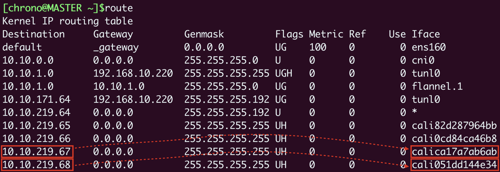
假设Pod A“10.10.219.67”要访问Pod B“10.10.219.68”，那么查路由表，知道要走“cali051dd144e34”这个设备，而它恰好就在Pod B里，所以数据就会直接进Pod B的网卡，省去了网桥的中间步骤。
Calico的网络架构我也画了一张示意图，你可以再对比Flannel来学习：

至于在Calico里跨主机通信是如何路由的，你完全可以对照着路由表，一步步地“跳”到目标Pod去（提示：tunl0设备）。
小结
好说了这么多，你应该看到了，Kubernetes的整个网络数据传输过程有大量的细节，非常多的环节都参与其中，想把它彻底弄明白还真不是件容易的事情。
不过好在CNI通过“依赖倒置”的原则把这些工作都交给插件去解决了，不管下层是什么样的环境，不管插件是怎么实现的，我们在Kubernetes集群里只会有一个干净、整洁的网络空间。
我来简单小结一下今天的内容：
- Kubernetes使用的是“IP-per-pod”网络模型，每个Pod都会有唯一的IP地址，所以简单易管理。
- CNI是Kubernetes定义的网络插件接口标准，按照实现方式可以分成“Overlay”“Route”和“Underlay”三种，常见的CNI插件有Flannel、Calico和Cilium。
- Flannel支持Overlay模式，它使用了cni0网桥和flannel.1设备，本机通信直接走cni0，跨主机通信会把原始数据包封装成VXLAN包再走宿主机网卡发送，有性能损失。
- Calico支持Route模式，它不使用cni0网桥，而是创建路由规则，把数据包直接发送到目标网卡，所以性能高。
课下作业
最后是课下作业时间，给你留两个思考题：
- Kubernetes没有内置网络实现，而是用CNI定义了标准接口，这么做的好处在哪里？
- 你对Flannel和Calico这两个网络插件的工作模式有什么样的看法？
欢迎在留言区发言参与讨论，这是最后一节知识点学习课，下节课我们进入回顾总结，曙光就在前方，期待你在马上到来的实操课和视频课中见证自己的成长。下节课见。

32 实战演练：玩转Kubernetes（3）
你好，我是Chrono。
到今天，我们的“高级篇”课程也要结束了。比起前面的“初级篇”“中级篇”来说，这里的知识点比较多，难度也要高一些。如果你能够一篇不漏地学习下来，相信一定对Kubernetes有更深层次的认识和理解。
今天的这节课还是来对前面的知识做回顾与总结，提炼出文章里的学习要点和重点，你也可以顺便检验一下自己的掌握程度，试试在不回看课程的情况下，自己能不能流畅说出关联的操作细节。
复习之后，我们就来进行最后一次实战演练了。首先会继续改进贯穿课程始终的WordPress网站，把MariaDB改成StatefulSet，加上NFS持久化存储；然后我们会在Kubernetes集群里安装Dashboard，综合实践Ingress、namespace的用法。
要点回顾一：API对象
“高级篇”可以分成三个部分，第一部分讲的是PersistentVolume、StatefulSet等API对象。
（[24讲]）PersistentVolume简称PV，是Kubernetes对持久化存储的抽象，代表了LocalDisk、NFS、Ceph等存储设备，和CPU、内存一样，属于集群的公共资源。
因为不同存储设备之间的差异很大，为了更好地描述PV特征，就出现了StorageClass，它的作用是分类存储设备，让我们更容易去选择PV对象。
PV一般由系统管理员来创建，我们如果要使用PV就要用PVC（PersistentVolumeClaim）去申请，说清楚需求的容量、访问模式等参数，然后Kubernetes就会查找最合适的PV分配给我们使用。
（[25讲]）手动创建PV的工作量很大，麻烦而且容易出错，所以就有了“动态存储卷”的概念，需要在StorageClass里绑定一个Provisioner对象，由它来代替人工，根据PVC自动创建出符合要求的PV。
有了PV和PVC，我们就可以在Pod里用“persistentVolumeClaim”来引用PVC，创建出可供容器使用的Volume，然后在容器里用“volumeMounts”把它挂载到某个路径上，这样容器就可以读写PV，实现数据的持久化存储了。
（[26讲]）持久化存储的一个重要应用领域就是保存应用的状态数据，管理有状态的应用，就要使用新的对象StatefulSet，可以认为它是管理无状态应用对象Deployment的一个特例。
StatefulSet对象的YAML描述和Deployment非常像，“spec”里只是多了一个“serviceName”字段，但它部署应用的方式却与Deployment差距很大。
Deployment创建的Pod是随机的名字，而StatefulSet会对Pod顺序编号、顺序创建，保证应用有一个确定的启动先后次序，这样就可以实现主从、主备等关系。
在使用Service为StatefulSet创建服务的时候，它也会为每个Pod单独创建域名，同样也是顺序编号，保证Pod有稳定的网络标识，外部用户就可以用这个域名来准确地访问到某个具体的Pod。
StatefulSet还使用“volumeClaimTemplates”字段来定义持久化存储，里面其实就是一个PVC，每个Pod可以用这个模板来生成自己的PVC去申请PV，实现存储卷与Pod的独立绑定。
通过启动顺序、稳定域名和存储模板这三个关键能力，StatefulSet就可以很好地处理Redis、MySQL等有状态应用了。
要点回顾二：应用管理
“高级篇”第二部分讲的是应用管理，包括滚动更新、资源配额和健康检查等内容。
（[27讲]）在Kubernetes里部署好应用后，我们还需要对它做持续的运维管理，其中一项任务是版本的更新和回退。
版本更新很简单，只要编写一个新的YAML（Deployment、DaemonSet、StatefulSet），再用 kubectl apply 应用就可以了。Kubernetes采用的是“滚动更新”策略，实际上是两个同步进行的“扩容”和“缩容”动作，这样在更新的过程中始终会有Pod处于可用状态，能够平稳地对外提供服务。
应用的更新历史可以用命令 kubectl rollout history 查看，如果有什么意外，就可以用 kubectl rollout undo 来回退。这两个命令相当于给我们的更新流程上了一个保险，可以放心大胆操作，失败就用“S/L大法”。
（[28讲]）为了让Pod里的容器能够稳定运行，我们可以采用资源配额和检查探针这两种手段。
资源配额能够限制容器申请的CPU和内存数量，不至于过多或者过少，保持在一个合理的程度，更有利于Kubernetes调度。
检查探针是Kubernetes内置的应用监控工具，有Startup、Liveness、Readiness三种，分别探测启动、存活、就绪状态，探测的方式也有exec、tcpSocket、httpGet三种。组合运用这些就可以灵活地检查容器的状态，Kubernetes发现不可用就会重启容器，让应用在总体上处于健康水平。
要点回顾三：集群管理
“高级篇”第三部分讲的是集群管理，有名字空间、系统监控和网络通信等知识点。
（[29讲]）Kubernetes的集群里虽然有很多计算资源，但毕竟是有限的，除了要给Pod加上资源配额，我们也要为集群加上资源配额，方法就是用名字空间，把整体的资源池切分成多个小块，按需分配给不同的用户使用。
名字空间的资源配额使用的是“ResourceQuota”，除了基本的CPU和内存，它还能够限制存储容量和各种API对象的数量，这样就可以避免多用户互相挤占，更高效地利用集群资源。
（[30讲]）系统监控是集群管理的另一个重要方面，Kubernetes提供了Metrics Server和Prometheus两个工具：
- Metrics Server专门用来收集Kubernetes核心资源指标，可以用
kubectl top来查看集群的状态，它也是水平自动伸缩对象HorizontalPodAutoscaler的前提条件。 - Prometheus，继Kubernetes之后的第二个CNCF毕业项目，是云原生监控领域的“事实标准”，在集群里部署之后就可以用Grafana可视化监控各种指标，还可以集成自动报警等功能。
（[31讲]）对于底层的基础网络设施，Kubernetes定义了平坦的网络模型“IP-per-pod”，实现它就要符合CNI标准。常用的网络插件有Flannel、Calico、Cilium等，Flannel使用Overlay模式，性能较低，Calico使用Route模式，性能较高。
现在，“高级篇”的众多知识要点我们都完整地过了一遍，你是否已经都理解、掌握了它们呢？
搭建WordPress网站
接下来我们就来在[第22讲]的基础上继续优化WordPress网站，其中的关键是让数据库MariaDB实现数据持久化。
网站的整体架构图变化不大，前面的Nginx、WordPress还是原样，只需要修改MariaDB：

因为MariaDB由Deployment改成了StatefulSet，所以我们要修改YAML，添加“serviceName”“volumeClaimTemplates”这两个字段，定义网络标识和NFS动态存储卷，然后在容器部分用“volumeMounts”挂载到容器里的数据目录“/var/lib/mysql”。
修改后的YAML就是这个样子：
apiVersion: apps/v1
kind: StatefulSet
metadata:
labels:
app: maria-sts
name: maria-sts
spec:
# headless svc
serviceName: maria-svc
# pvc
volumeClaimTemplates:
- metadata:
name: maria-100m-pvc
spec:
storageClassName: nfs-client
accessModes:
- ReadWriteMany
resources:
requests:
storage: 100Mi
replicas: 1
selector:
matchLabels:
app: maria-sts
template:
metadata:
labels:
app: maria-sts
spec:
containers:
- image: mariadb:10
name: mariadb
imagePullPolicy: IfNotPresent
ports:
- containerPort: 3306
envFrom:
- prefix: 'MARIADB_'
configMapRef:
name: maria-cm
volumeMounts:
- name: maria-100m-pvc
mountPath: /var/lib/mysql
改完MariaDB，我们还要再对WordPress做一点小修改。
还记得吗？StatefulSet管理的每个Pod都有自己的域名，所以要把WordPress的环境变量改成MariaDB的新名字，也就是“maria-sts-0.maria-svc”：
apiVersion: v1
kind: ConfigMap
metadata:
name: wp-cm
data:
HOST: 'maria-sts-0.maria-svc' #注意这里
USER: 'wp'
PASSWORD: '123'
NAME: 'db'
改完这两个YAML，我们就可以逐个创建MariaDB、WordPress、Ingress等对象了。
和之前一样，访问NodePort的“30088”端口，或者是用Ingress Controller的“wp.test”域名，都可以进入WordPress网站：

StatefulSet的持久化存储是否生效了呢？
你可以把这些对象都删除后重新创建，再进入网站，看看是否原来的数据依然存在。或者更简单一点，直接查看NFS的存储目录，应该可以看到MariaDB生成的一些数据库文件：
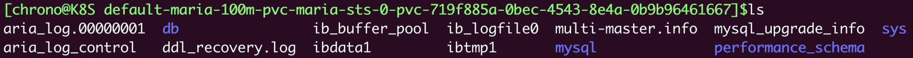
这两种方式都能够证明，我们的MariaDB使用StatefulSet部署后数据已经保存在了磁盘上，不会因为对象的销毁而丢失。
到这里，第一个小实践你就已经完成了，给自己鼓鼓劲，我们一起来做第二个实践，在Kubernetes集群里安装Dashboard。
部署Dashboard
在“初级篇”的实战演练课里（[第15讲]），我简单介绍了Kubernetes的图形管理界面，也就是Dashboard，不知道你是否还有印象。当时Dashboard是直接内置在minikube里的，不需要安装，一个命令启动，就能在浏览器里直观地管理Kubernetes集群了，非常方便。
那现在我们用kubeadm部署了实际的多节点集群，能否也用上Dashboard呢？接下来我就带你来一起动手，从零开始安装Dashboard。
首先，你应该先去Dashboard的项目网站（https://github.com/kubernetes/dashboard），看一下它的说明文档，了解一下它的基本情况。
它的安装很简单，只需要一个YAML文件，可以直接下载：
wget https://raw.githubusercontent.com/kubernetes/dashboard/v2.6.0/aio/deploy/recommended.yaml
这个YAML里包含了很多对象，虽然文件比较大，但现在的你应该基本都能够看懂了，要点有这么几个：
- 所有的对象都属于“kubernetes-dashboard”名字空间。
- Dashboard使用Deployment部署了一个实例，端口号是8443。
- 容器启用了Liveness探针，使用HTTPS方式检查存活状态。
- Service对象使用的是443端口，它映射了Dashboard的8443端口。
使用命令 kubectl apply 就可以轻松部署Dashboard了：
kubectl apply -f dashboard.yaml

部署Ingress/Ingress Controller
不过，为了给我们的实战增加一点难度，我们可以在前面配一个Ingress入口，用反向代理的方式来访问它。
由于Dashboard默认使用的是加密的HTTPS协议，拒绝明文HTTP访问，所以我们要先生成证书，让Ingress也走HTTPS协议。
简单起见，我直接用Linux里的命令行工具“openssl”来生成一个自签名的证书（如果你有条件，也可以考虑找CA网站申请免费证书）：
openssl req -x509 -days 365 -out k8s.test.crt -keyout k8s.test.key \
-newkey rsa:2048 -nodes -sha256 \
-subj '/CN=k8s.test' -extensions EXT -config <( \
printf "[dn]\nCN=k8s.test\n[req]\ndistinguished_name = dn\n[EXT]\nsubjectAltName=DNS:k8s.test\nkeyUsage=digitalSignature\nextendedKeyUsage=serverAuth")
openssl的命令比较长，我简单解释一下：它生成的是一个X509格式的证书，有效期365天，私钥是RSA2048位，摘要算法是SHA256，签发的网站是“k8s.test”。
运行命令行后会生成两个文件，一个是证书“k8s.test.crt”，另一个是私钥“k8s.test.key”，我们需要把这两个文件存入Kubernetes里供Ingress使用。
因为这两个文件属于机密信息，存储的方式当然就是用Secret了。你仍然可以用命令 kubectl create secret 来自动创建YAML，不过类型不是“generic”，而是“tls”，同时还要用 -n 指定名字空间，用 --cert、--key 指定文件：
export out="--dry-run=client -o yaml"
kubectl create secret tls dash-tls -n kubernetes-dashboard --cert=k8s.test.crt --key=k8s.test.key $out > cert.yml
出来的YAML大概是这个样子：
apiVersion: v1
kind: Secret
metadata:
name: dash-tls
namespace: kubernetes-dashboard
type: kubernetes.io/tls
data:
tls.crt: LS0tLS1CRUdJTiBDRVJU...
tls.key: LS0tLS1CRUdJTiBQUklW...
创建这个Secret对象之后，你可以再用 kubectl describe 来检查它的状态：

接下来我们就来编写Ingress Class和Ingress对象，为了保持名字空间的整齐，也把它放在“kubernetes-dashboard”名字空间里。
Ingress Class对象很简单，名字是“dash-ink”，指定Controller还是我们之前用的Nginx官方的Ingress Controller：
apiVersion: networking.k8s.io/v1
kind: IngressClass
metadata:
name: dash-ink
namespace: kubernetes-dashboard
spec:
controller: nginx.org/ingress-controller
Ingress对象可以用 kubectl create 命令自动生成，如果你有点忘记的话，可以回头参考一下[第21讲]：
kubectl create ing dash-ing --rule="k8s.test/=kubernetes-dashboard:443" --class=dash-ink -n kubernetes-dashboard $out
但这次因为是HTTPS协议，所以我们要在Ingress里多加一点东西，一个是“annotations”字段，指定后端目标是HTTPS服务，另一个是“tls”字段，指定域名和证书，也就是刚才创建的Secret：
apiVersion: networking.k8s.io/v1
kind: Ingress
metadata:
name: dash-ing
namespace: kubernetes-dashboard
annotations:
nginx.org/ssl-services: "kubernetes-dashboard"
spec:
ingressClassName: dash-ink
tls:
- hosts:
- k8s.test
secretName: dash-tls
rules:
- host: k8s.test
http:
paths:
- path: /
pathType: Prefix
backend:
service:
name: kubernetes-dashboard
port:
number: 443
最后一个对象，就是Ingress Controller了，还是拿现成的模板修改，记得要把“args”里的Ingress Class改成我们自己的“dash-ink”：
apiVersion: apps/v1
kind: Deployment
metadata:
name: dash-kic-dep
namespace: nginx-ingress
spec:
...
args:
- -ingress-class=dash-ink
要让我们在外面能够访问Ingress Controller，还要为它再定义一个Service，类型是“NodePort”，端口指定是“30443”：
apiVersion: v1
kind: Service
metadata:
name: dash-kic-svc
namespace: nginx-ingress
spec:
ports:
- port: 443
protocol: TCP
targetPort: 443
nodePort: 30443
selector:
app: dash-kic-dep
type: NodePort
把上面的Secret、Ingress Class、Ingress、Ingress Controller、Service都创建好之后，我们再来确认一下它们的运行状态：

因为这些对象比较多，处于不同的名字空间，关联有点复杂，我画了一个简单的示意图，你可以看一下：

访问Dashboard
到这里，Dashboard的部署工作就基本完成了。为了能正常访问，我们还要为它创建一个用户，才能登录进Dashboard。
Dashboard的网站上有一个简单示例（https://github.com/kubernetes/dashboard/blob/master/docs/user/access-control/creating-sample-user.md），我们直接拿来用就行：
apiVersion: v1
kind: ServiceAccount
metadata:
name: admin-user
namespace: kubernetes-dashboard
---
apiVersion: rbac.authorization.k8s.io/v1
kind: ClusterRoleBinding
metadata:
name: admin-user
roleRef:
apiGroup: rbac.authorization.k8s.io
kind: ClusterRole
name: cluster-admin
subjects:
- kind: ServiceAccount
name: admin-user
namespace: kubernetes-dashboard
这个YAML创建了一个Dashboard的管理员账号，名字叫“admin-user”，使用的是Kubernetes的RBAC机制，就不展开细讲了。
这个账号不能用简单的“用户名+密码”的方式登录，需要用到一个Token，可以用 kubectl get secret、kubectl describe secret 查到：
kubectl get secret -n kubernetes-dashboard
kubectl describe secrets -n kubernetes-dashboard admin-user-token-xxxx
Token是一个很长的字符串，把它拷贝存好，再为它的测试域名“k8s.test”加上域名解析（修改/etc/hosts），然后我们就可以在浏览器里输入网址“https://k8s.test:30443”访问Dashboard了：
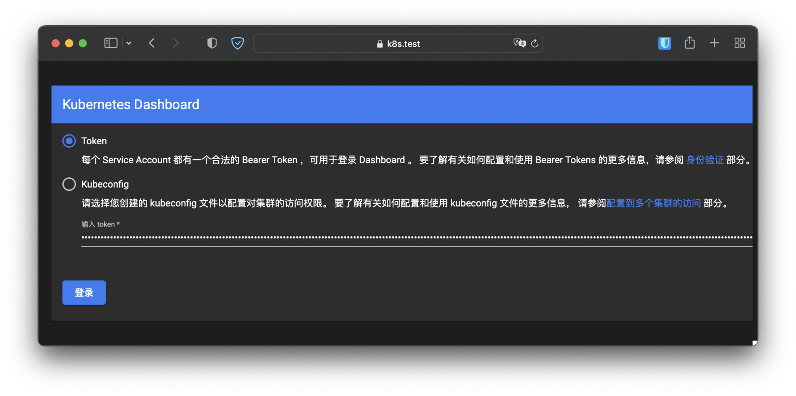
下面的两张截图就是我查看集群里“kube-system”名字空间的情况，由于我们之前安装了Metrics Server，所以Dashboard也能够以图形的方式显示CPU和内存状态，有那么一点Prometheus + Grafana的意思：


小结
好了，今天我们一起回顾了“高级篇”里的要点，下面的这张思维导图就是对这些知识点的全面总结，你可以再认真研究一下：
今天我们有两个实战项目。首先是WordPress，把后端的存储服务MariaDB改造成了StatefulSet，挂载了NFS网盘，这样就实现了一个功能比较完善的网站，达到了基本可用的程度。
接着我们又在Kubernetes里安装了Dashboard，主要部署在名字空间“kubernetes-dashboard”。Dashboard自身的安装很简单，但我们又为它在前面搭建了一个反向代理，配上了安全证书，进一步实践了Ingress的用法。
不过这两个项目还没有完全覆盖“高级篇”的内容，你可以再接着改进它们，比如加上健康检查、资源配额、自动水平伸缩等，多动手来巩固所学的知识。
课下作业
今天的课下作业时间，我想就留给你自己来操作一下这节课里的两个实战演练吧，如果遇到了什么问题，可以在留言区随时提问。

33 视频：高级篇实操总结
你好，我是Chrono。
在“高级篇”的这段时间里，我们学习了PersistentVolume、PersistentVolumeClaim、StatefulSet等API对象，具备了部署有状态应用的能力，然后还学习了管理运维应用和集群的多种方式，包括滚动更新、资源配额、检查探针、名字空间、系统监控等等。
掌握了这些知识，现在的你再回想一下三个月前学习第一节课的时候，有没有发现其实Kubernetes也没有当初自己想象得那么高深莫测呢？
今天也是我们课程的最后一节正课，还是会用视频的形式，把“高级篇”里的一些重要的部分都实际演示出来，结合前面的文字和图片，你可以再次加深对Kubernetes的印象。
接下来就一起开始我们的学习吧。
- PV和PVC ———-
我们先来创建一个本地存储卷，也就是PV。
在Master和Worker节点的“/tmp”目录里，先建立一个“host-10m-pv”的目录，表示一个只有10MB容量的存储设备：
mkdir /tmp/host-10m-pv
然后我们使用YAML来定义这个PV对象：
vi host-path-pv.yml
它的kind是PersistentVolume，名字是“host-10m-pv”，后面“spec”里的字段都很重要，描述了PV的基本信息。
- 因为这个PV是我们手动管理的，“storageClassName”的名字你可以任意起，这里我写的是“host-test”。
- “accessModes”定义了存储设备的访问模式，用的是最简单的“ReadWriteOnce”，可读可写，但只能被这个节点的Pod挂载。
- “capacity”定义了存储的容量，因为是测试，就设置成了10MB。注意，定义存储容量使用的是国际标准单位，必须要写成Ki/Mi/Gi的形式，否则就会出错。
- 最后一个字段“hostPath”指定了存储卷的本地路径，也就是刚才节点上创建的目录“/tmp/host-10m-pv/”。
现在我们用 kubectl apply 创建PV对象：
kubectl apply -f host-path-pv.yml
再用 kubectl get 查看状态：
kubectl get pv
就可以看到Kubernetes里已经有这个存储卷了。它的容量是10MB，访问模式是RWO，状态显示的是“Available”，StorageClass是我们自己定义的“host-test”。
接下来我们再来定义PVC对象：
vi host-path-pvc.yml
它的名字是“host-5m-pvc”，“storageClassName”名字是“host-test”，访问模式是“ReadWriteOnce”，在“resources”字段里向Kubernetes申请使用5MB的存储。
PVC比较简单，不像PV那样包含磁盘路径等存储细节。我们还是用 kubectl apply 创建对象：
kubectl apply -f host-path-pvc.yml
再用 kubectl get 查看PV和PVC的状态：
kubectl get pv,pvc
就会发现已经成功分配了存储卷，状态是“Bound”。虽然PVC申请的是5MB，但系统里只有一个10MB的PV可以用，没有更合适的，所以Kubernetes也只能把它俩绑定在一起。
下面要做的就是把这个PVC挂载进Pod里了，来看这个YAML文件：
vi host-path-pod.yml
它在“volumes”里用“persistentVolumeClaim”声明了PVC的名字“host-5m-pvc”，这样就把PVC和Pod联系起来了。
后面的“volumeMounts”就是挂载存储卷，这个你应该比较熟悉了吧，用name指定volume的名字，用path指定路径，这里就是挂载到了容器里的“/tmp”目录。
现在我们创建这个Pod，再查看它的状态：
kubectl apply -f host-path-pod.yml
kubectl get pod -o wide
可以看到它被Kubernetes调到到了worker节点上，让我们用 kubectl exec 进入容器，执行Shell命令，生成一个文本文件：
kubectl exec -it host-pvc-pod -- sh
echo aaa > /tmp/a.txt
然后我们登录worker节点，看一下PV对应的目录“/tmp/host-10m-pv”：
cd /tmp/host-10m-pv
ls
cat a.txt
输出的内容刚好就是我们在容器里生成的数据，这就说明Pod的数据确实已经持久化到了PV定义的存储设备上。
- NFS网络存储卷 ————
下面我们来看看在Kubernetes里使用NFS网络存储卷的用法。
NFS服务器和客户端、还有NFS Provisioner的安装过程我就略过了，你可以对照着[第25讲]一步步来。
安装完成之后，可以看一下Provisioner的运行状态：
kubectl get deploy -n kube-system | grep nfs
kubectl get pod -n kube-system | grep nfs
注意一定要配置好NFS Provisioner里的IP地址和目录，如果地址错误或者目录不存在，那么Pod就无法正常启动，需要用 kubectl logs 来查看错误原因。
来看一下NFS默认的StorageClass定义：
vi class.yaml
它的名字是“nfs-client”，这个很关键，我们必须在PVC里写上它才能够找到NFS Provisioner。
现在我们来看PVC和Pod的定义：
vi nfs-dynamic-pv.yml
这个PVC申请的是10MB，使用的访问模式是“ReadWriteMany”，这是因为NFS是网络共享存储，支持多个Pod同时挂载。
在Pod里我们还是用“persistentVolumeClaim”声明PVC，“volumeMounts”挂载存储卷，目标还是容器里的“/tmp”目录。
使用 kubectl apply 应用这个YAML，就会创建好PVC和Pod，用 kubectl get 查看一下集群里的PV和PVC：
kubectl get pv,pvc
就可以看到，NFS Provisioner自动为我们创建一个10MB的PV，不多也不少。
我们再去NFS服务器上查看共享目录，也会找到PV的存储目录，名字里第一部分是名字空间default，第二部分是这个PVC的名字。在这个目录生成一个文本文件：
echo aaa > a.txt
然后我们再用 kubectl exec 进入Pod，看看它里面的“/tmp”目录：
kubectl exec -it nfs-dyn-pod -- sh
cd /tmp
ls
cat a.txt
会发现NFS磁盘上的文件也出现在了容器里，也就是说共享了网络存储卷。
- 创建使用NFS的对象 ————–
掌握了PV、PVC、NFS的用法之后，我们就可以来实验StatefulSet的用法了，创建一个使用NFS存储的对象。
看一下StatefulSet对象的YAML描述文件：
vi redis-pv-sts.yml
- 第一个重要的字段，是“serviceName”，指定了StatefulSet的服务名是“redis-pv-svc”，它也必须要和后面定义的Service对象一致。
- 第二个重要字段是“volumeClaimTemplates”，相当于把PVC模板定义直接镶嵌进了对象里，storageClass还是“nfs-client”，申请了100MB的存储容量。
- 后面的字段都比较简单，和Deployment完全一样，比如replicas、selector、containers。
StatefulSet对象下面是它配套的Service定义，关键是这个“clusterIP: None”，不给Service分配虚IP地址，也就是说它是一个“Headless Service”。外部访问StatefulSet不会经过Service的转发，而是直接访问Pod。
使用 kubectl apply 创建这两个对象，“有状态应用”就运行起来了：
kubectl apply -f redis-pv-sts.yml
用 kubectl get 来查看StatefulSet对象的状态：
kubectl get sts,pod
这两个有状态的Pod名字是顺序编号的，从0开始分别被命名为 redis-pv-sts-0、redis-pv-sts-1，运行的顺序是：0号Pod启动成功后，才会启动1号Pod。
我们再用 kubectl exec 进入Pod内部：
kubectl exec -it redis-pv-sts-0 -- sh
看它的hostname，和Pod名字是一样的：
hostname
再来用试验一下两个Pod的独立域名，应该都可以正常访问：
ping redis-pv-sts-0.redis-svc
ping redis-pv-sts-1.redis-svc
使用命令 kubectl get pvc 来查看StatefulSet关联的存储卷状态：
kubectl get pv,pvc
可以看到StatefulSet使用PVC模板自动创建了两个PV并且绑定了。
为了验证持久化存储的效果，我们用 kubectl exec 运行Redis客户端，添加一些KV数据：
kubectl exec -it redis-pv-sts-0 -- redis-cli
set a 111
set b 222
quit
然后删除这个Pod：
kubectl delete pod redis-pv-sts-0
StatefulSet会监控Pod的运行情况，发现数量不对会重新拉起这个Pod。我们再用Redis客户端登录去检查一下：
kubectl exec -it redis-pv-sts-0 -- redis-cli
get a
get b
keys *
就可以看到，Pod挂载了原来的存储卷，自动恢复了之前添加的Key-Value数据。
- 滚动更新 ——–
现在我们来学习一下Kubernetes里滚动更新的用法。
这里有一个V1版本的Nginx应用：
vi ngx-v1.yml
注意在“annotations”里我们使用了字段“kubernetes.io/change-cause”，标注了版本信息“v1, ngx=1.21”，使用的镜像是“nginx:1.21-alpine”。
它后面还有一个配套的Service，比较简单，用的是NodePort，就不多解释了。
然后我们执行命令 kubectl apply 部署这个应用：
kubectl apply -f ngx-v1.yml
用curl发送HTTP请求，看看它的运行信息：
curl 192.168.10.210:30080
从curl命令的输出中可以看到，现在应用的版本是“1.21.6”。
执行 kubectl get pod，看名字后的Hash值，就是Pod的版本。
再来看第二版的对象“ngx-v2.yml”：
vi ngx-v2.yml
它也是在“annotations”里标注了版本信息，镜像升级到“nginx:1.22-alpine”，还添加了一个字段“minReadySeconds”来方便我们观察应用更新的过程。
现在执行命令 kubectl apply，因为改动了镜像名，Pod模板变了，就会触发“版本更新”，kubectl rollout status 来查看应用更新的状态：
kubectl apply -f ngx-v2.yml
kubectl rollout status deploy ngx-dep
再执行 kubectl get pod，就会看到Pod已经全部替换成了新版本，用curl访问Nginx，输出的信息也变成了“1.22.0”：
kubectl get pod
curl 192.168.10.210:30080
命令 kubectl describe 可以更清楚地看到Pod的变化情况，是两个同步进行的扩容和缩容动作：
kubectl describe deploy ngx-dep
那我们再来查看更新历史，命令是 kubectl rollout history：
kubectl rollout history deploy ngx-dep
可以看到在“CHANGE-CAUSE”列里有刚才两个版本的更新信息。
我们最后用 kubectl rollout undo 来回退到上一个版本：
kubectl rollout undo deploy ngx-dep
再来看更新历史 kubectl rollout history，会发现又变成了最初的版本，用curl发请求试一下：
curl 192.168.10.210:30080
Nginx又恢复成了第一版的1.21.6，我们的版本回退也就成功了。
- 水平伸缩 ——–
接下来看Kubernetes的水平自动伸缩功能，也就是对象“HorizontalPodAutoscaler”。
水平自动伸缩功能要求必须有Metrics Server插件，它的安装过程我就不演示了，来直接看看它的运行状态，使用 kubectl get pod：
kubectl get pod -n kube-system
可以看到有一个Metrics Server Pod正在运行。
然后我们看一下当前的系统指标：
kubectl top node
kubectl top pod -n kube-system
确认Metrics Server 运行正常，下面我们就可以试验水平自动伸缩功能了。
首先我们来定义一个Deployment对象，部署1个Nginx实例：
vi ngx-hpa-dep.yml
注意在YAML里我们必须要用“resources”字段明确写出它的资源配额，否则HorizontalPodAutoscaler无法获取Pod的指标，也就无法实现自动化扩缩容。
kubectl apply 创建对象后，用 kubectl get pod，可以看到它现在只有一个实例。
接下来的HPA对象很简单，它指定Pod数量最多10个，最少2个，CPU使用率指标设是5%。使用命令 kubectl apply 创建HPA，它会发现Nginx实例只有1个，不符合的下限的要求，就会扩容到2个：
kubectl get pod
kubectl get hpa
然后我们启动一个http Pod，用里面的压力测试工具ab来给Nginx增加流量压力：
kubectl run test -it --image=httpd:alpine -- sh
向Nginx发送一百万个请求，持续30秒，再用 kubectl get hpa 来观察HorizontalPodAutoscaler的运行状况：
ab -c 10 -t 30 -n 1000000 'http://ngx-hpa-svc/'
kubectl get hpa
你可以看到HPA会通过Metrics Server不断地监测Pod的CPU使用率，超过设定值就开始扩容，一直到数量上限。
- Prometheus ————–
我们来看看CNCF的二号项目Prometheus。
首先从GitHub上下载它的源码包，最新的版本是0.11，然后解压缩得到部署所需的YAML文件。
然后我们修改 prometheus-service.yaml、grafana-service.yaml 这两个文件，把Service类型改成NodePort，这样就可以直接用节点的IP地址访问。为了方便，我们还把Prometheus的节点端口指定成了“30090”，Grafana的节点端口指定成了“30030”。
记得还要修改 kubeStateMetrics-deployment.yaml、prometheusAdapter-deployment.yaml，因为它们里面的镜像放在了gcr.io上，拉取很困难，改成docker hub上的会容易一些。
修改完之后，执行两个 kubectl create 命令来部署Prometheus。先是“manifests/setup”目录，创建名字空间等基本对象，然后才是“manifests”目录：
kubectl create -f manifests/setup
kubectl create -f manifests
Prometheus的对象都在名字空间“monitoring”里，创建之后可以用 kubectl get 来查看状态：
kubectl get pod -n monitoring
再来看一下它们的Service对象：
kubectl get svc -n monitoring
端口就是刚才我们设置的“30090”和“30030”。
Prometheus启动之后，我们在浏览器里输入节点的IP地址，再加上端口号“30090”，就会看到Prometheus的Web界面。
可以在这个查询框里任意选择指标，或者使用PromQL编辑表达式，生成可视化图表，比如“node_memory_Active_bytes”这个指标，就当前正在使用的内存容量。
再来看Grafana，访问节点的端口“30030”，就会出来Grafana的登录界面，默认的用户名和密码都是“admin”。
Grafana内部预置了很多仪表盘，我们可以在菜单栏的“Dashboards - Browse”里随意挑选，比如选择“Kubernetes / Compute Resources / Namespace (Pods)”这个仪表盘。
- Dashboard ————-
现在我们来在Kubernetes集群里部署仪表盘插件Dashboard。
这里使用的是2.6.0版，只有一个YAML文件，来大概看一下：
vi dashboard.yaml
- 所有的对象都属于“kubernetes-dashboard”名字空间。
- Service对象使用的是443端口，它映射了Dashboard的8443端口。
- Dashboard使用Deployment部署了一个实例，端口号是8443。
- 容器启用了Liveness探针，使用HTTPS方式检查存活状态。
使用命令 kubectl apply 就可以一键部署Dashboard：
kubectl apply -f dashboard.yaml
kubectl get pod -n kubernetes-dashboard
接下来我们给Dashboard配一个Ingress入口，用反向代理的方式来访问它。
先要用openssl工具生成一个自签名的证书，然后把生成的证书和私钥都转换成Secret对象。因为这操作命令比较长，敲键盘很麻烦，这里写成了脚本文件。
openssl req -x509 -days 365 -out k8s.test.crt -keyout k8s.test.key \
-newkey rsa:2048 -nodes -sha256 \
-subj '/CN=k8s.test' -extensions EXT -config <( \
printf "[dn]\nCN=k8s.test\n[req]\ndistinguished_name = dn\n[EXT]\nsubjectAltName=DNS:k8s.test\nkeyUsage=digitalSignature\nextendedKeyUsage=serverAuth")
export out="--dry-run=client -o yaml"
kubectl create secret tls dash-tls -n kubernetes-dashboard --cert=k8s.test.crt --key=k8s.test.key $out > cert.yml
证书的参数是有效期365天，私钥是RSA2048位，摘要算法是SHA256，Secret对象的名字是“dash-tls”。
然后我们来看Ingress Class和Ingress的定义：
vi ingress.yml
注意它们也都在名字空间“kubernetes-dashboard”里。Ingress要在“annotations”字段里指定后端目标是HTTPS服务，“tls”字段指定域名“k8s.test”和证书Secret对象“dash-tls”。
再来定义Ingress Controller，镜像用的是“nginx-ingress:2.2-alpine”，注意一定要把“args”里的Ingress Class设置成刚才的“dash-ink”，Service对象也改成NodePort，端口号是30443。
最后我们还要给Dashboard创建一个用户，admin-user：
vi admin.yml
这些YAML都准备好了，让我们用 kubectl apply 来逐个创建对象：
kubectl apply -f cert.yml
kubectl apply -f ingress.yml
kubectl apply -f kic.yml
kubectl apply -f admin.yml
在用浏览器访问Dashboard之前，我们要先获取用户的Token，它是以Secret的方式存储的：
kubectl get secret -n kubernetes-dashboard
kubectl describe secrets -n kubernetes-dashboard admin-user-token-xxxx
把这个Token拷贝一下，确保能够解析“k8s.test”这个域名，在浏览器里输入网址“https://k8s.test:30443”，我们就可以登录Dashboard了。
课下作业
不知道今天的参考视频有没有帮你解决一点实操上的小问题，如果你成功做完了所有项目，欢迎在留言区交流经验和新想法，如果遇到了困难，也欢迎描述清楚发上来，我们一起讨论。
加餐 docker-compose：单机环境下的容器编排工具
你好，我是Chrono。
我们的课程学到了这里，你已经对Kubernetes有相当程度的了解了吧。
作为云原生时代的操作系统，Kubernetes源自Docker又超越了Docker，依靠着它的master/node架构，掌控成百上千台的计算节点，然后使用YAML语言定义各种API对象来编排调度容器，实现了对现代应用的管理。
不过，你有没有觉得，在Docker和Kubernetes之间，是否还缺了一点什么东西呢？
Kubernetes的确是非常强大的容器编排平台，但强大的功能也伴随着复杂度和成本的提升，不说那几十个用途各异的API对象，单单说把Kubernetes运行起来搭建一个小型的集群，就需要耗费不少精力。但是，有的时候，我们只是想快速启动一组容器来执行简单的开发、测试工作，并不想承担Kubernetes里apiserver、scheduler、etcd这些组件的运行成本。
显然，在这种简易任务的应用场景里，Kubernetes就显得有些“笨重”了。即使是“玩具”性质的minikube、kind，对电脑也有比较高的要求，会“吃”掉不少的计算资源，属于“大材小用”。
那到底有没有这样的工具，既像Docker一样轻巧易用，又像Kubernetes一样具备容器编排能力呢？
今天我就来介绍docker-compose，它恰好满足了刚才的需求，是一个在单机环境里轻量级的容器编排工具，填补了Docker和Kubernetes之间的空白位置。
什么是docker-compose
还是让我们从Docker诞生那会讲起。
在Docker把容器技术大众化之后，Docker周边涌现出了数不胜数的扩展、增强产品，其中有一个名字叫“Fig”的小项目格外令人瞩目。
Fig为Docker引入了“容器编排”的概念，使用YAML来定义容器的启动参数、先后顺序和依赖关系，让用户不再有Docker冗长命令行的烦恼，第一次见识到了“声明式”的威力。
Docker公司也很快意识到了Fig这个小工具的价值，于是就在2014年7月把它买了下来，集成进Docker内部，然后改名成了“docker-compose”。

从这段简短的历史中你可以看到，虽然docker-compose也是容器编排技术，也使用YAML，但它的基因与Kubernetes完全不同，走的是Docker的技术路线，所以在设计理念和使用方法上有差异就不足为怪了。
docker-compose自身的定位是管理和运行多个Docker容器的工具，很显然，它没有Kubernetes那么“宏伟”的目标，只是用来方便用户使用Docker而已，所以学习难度比较低，上手容易，很多概念都是与Docker命令一一对应的。
但这有时候也会给我们带来困扰，毕竟docker-compose和Kubernetes同属容器编排领域，用法不一致就容易导致认知冲突、混乱。考虑到这一点，我们在学习docker-compose的时候就要把握一个“度”，够用就行，不要太过深究，否则会对Kubernetes的学习造成一些不良影响。
如何使用docker-compose
docker-compose的安装非常简单，它在GitHub（https://github.com/docker/compose）上提供了多种形式的二进制可执行文件，支持Windows、macOS、Linux等操作系统，也支持x86_64、arm64等硬件架构，可以直接下载。
在Linux上安装的Shell命令我放在这里了，用的是最新的2.6.1版本：
# intel x86_64
sudo curl -SL https://github.com/docker/compose/releases/download/v2.6.1/docker-compose-linux-x86_64 \
-o /usr/local/bin/docker-compose
# apple m1
sudo curl -SL https://github.com/docker/compose/releases/download/v2.6.1/docker-compose-linux-aarch64 \
-o /usr/local/bin/docker-compose
sudo chmod +x /usr/local/bin/docker-compose
sudo ln -s /usr/local/bin/docker-compose /usr/bin/docker-compose
安装完成之后，来看一下它的版本号，命令是 docker-compose version，用法和 docker version 是一样的：
docker-compose version

接下来，我们就要编写YAML文件，来管理Docker容器了，先用[第7讲]里的私有镜像仓库作为示范吧。
docker-compose里管理容器的核心概念是“service”。注意，它与Kubernetes里的 Service 虽然名字很像，但却是完全不同的东西。docker-compose里的“service”就是一个容器化的应用程序，通常是一个后台服务，用YAML定义这些容器的参数和相互之间的关系。
如果硬要和Kubernetes对比的话，和“service”最像的API对象应该算是Pod里的container了，同样是管理容器运行，但docker-compose的“service”又融合了一些Service、Deployment的特性。
下面的这个就是私有镜像仓库Registry的YAML文件，关键字段就是“services”，对应的Docker命令我也列了出来：
docker run -d -p 5000:5000 registry
services:
registry:
image: registry
container_name: registry
restart: always
ports:
- 5000:5000
把它和Kubernetes对比一下，你会发现它和Pod定义非常像，“services”相当于Pod，而里面的“service”就相当于“spec.containers”：
apiVersion: v1
kind: Pod
metadata:
name: ngx-pod
spec:
restartPolicy: Always
containers:
- image: nginx:alpine
name: ngx
ports:
- containerPort: 80
比如用 image 声明镜像，用 ports 声明端口，很容易理解，只是在用法上有些不一样，像端口映射用的就还是Docker的语法。
由于docker-compose的字段定义在官网（https://docs.docker.com/compose/compose-file/）上有详细的说明文档，我就不在这里费口舌解释了，你可以自行参考。
需要提醒的是，在docker-compose里，每个“service”都有一个自己的名字，它同时也是这个容器的唯一网络标识，有点类似Kubernetes里 Service 域名的作用。
好，现在我们就可以启动应用了，命令是 docker-compose up -d，同时还要用 -f 参数来指定YAML文件，和 kubectl apply 差不多：
docker-compose -f reg-compose.yml up -d

因为docker-compose在底层还是调用的Docker，所以它启动的容器用 docker ps 也能够看到：
不过，我们用 docker-compose ps 能够看到更多的信息：
docker-compose -f reg-compose.yml ps

下面我们把Nginx的镜像改个标签，上传到私有仓库里测试一下：
docker tag nginx:alpine 127.0.0.1:5000/nginx:v1
docker push 127.0.0.1:5000/nginx:v1
再用curl查看一下它的标签列表，就可以看到确实上传成功了：
curl 127.1:5000/v2/nginx/tags/list
想要停止应用，我们需要使用 docker-compose down 命令：
docker-compose -f reg-compose.yml down

通过这个小例子，我们就成功地把“命令式”的Docker操作，转换成了“声明式”的docker-compose操作，用法与Kubernetes十分接近，同时还没有Kubernetes那些昂贵的运行成本，在单机环境里可以说是最适合不过了。
使用docker-compose搭建WordPress网站
不过，私有镜像仓库Registry里只有一个容器，不能体现docker-compose容器编排的好处，我们再用它来搭建一次WordPress网站，深入感受一下。
架构图和第7讲还是一样的：
第一步还是定义数据库MariaDB，环境变量的写法与Kubernetes的ConfigMap有点类似，但使用的字段是 environment，直接定义，不用再“绕一下”：
services:
mariadb:
image: mariadb:10
container_name: mariadb
restart: always
environment:
MARIADB_DATABASE: db
MARIADB_USER: wp
MARIADB_PASSWORD: 123
MARIADB_ROOT_PASSWORD: 123
我们可以再对比第7讲里启动MariaDB的Docker命令，可以发现docker-compose的YAML和命令行是非常像的，几乎可以直接照搬：
docker run -d --rm \
--env MARIADB_DATABASE=db \
--env MARIADB_USER=wp \
--env MARIADB_PASSWORD=123 \
--env MARIADB_ROOT_PASSWORD=123 \
mariadb:10
第二步是定义WordPress网站，它也使用 environment 来设置环境变量：
services:
...
wordpress:
image: wordpress:5
container_name: wordpress
restart: always
environment:
WORDPRESS_DB_HOST: mariadb #注意这里，数据库的网络标识
WORDPRESS_DB_USER: wp
WORDPRESS_DB_PASSWORD: 123
WORDPRESS_DB_NAME: db
depends_on:
- mariadb
不过，因为docker-compose会自动把MariaDB的名字用做网络标识，所以在连接数据库的时候（字段 WORDPRESS_DB_HOST）就不需要手动指定IP地址了，直接用“service”的名字 mariadb 就行了。这是docker-compose比Docker命令要方便的一个地方，和Kubernetes的域名机制很像。
WordPress定义里还有一个值得注意的是字段 depends_on，它用来设置容器的依赖关系，指定容器启动的先后顺序，这在编排由多个容器组成的应用的时候是一个非常便利的特性。
第三步就是定义Nginx反向代理了，不过很可惜，docker-compose里没有ConfigMap、Secret这样的概念，要加载配置还是必须用外部文件，无法集成进YAML。
Nginx的配置文件和第7讲里也差不多，同样的，在 proxy_pass 指令里不需要写IP地址了，直接用WordPress的名字就行：
server {
listen 80;
default_type text/html;
location / {
proxy_http_version 1.1;
proxy_set_header Host $host;
proxy_pass http://wordpress; #注意这里，网站的网络标识
}
}
然后我们就可以在YAML里定义Nginx了，加载配置文件用的是 volumes 字段，和Kubernetes一样，但里面的语法却又是Docker的形式：
services:
...
nginx:
image: nginx:alpine
container_name: nginx
hostname: nginx
restart: always
ports:
- 80:80
volumes:
- ./wp.conf:/etc/nginx/conf.d/default.conf
depends_on:
- wordpress
到这里三个“service”就都定义好了，我们用 docker-compose up -d 启动网站，记得还是要用 -f 参数指定YAML文件：
docker-compose -f wp-compose.yml up -d
启动之后，用 docker-compose ps 来查看状态：

我们也可以用 docker-compose exec 来进入容器内部，验证一下这几个容器的网络标识是否工作正常：
docker-compose -f wp-compose.yml exec -it nginx sh

从截图里你可以看到，我们分别ping了 mariadb 和 wordpress 这两个服务，网络都是通的，不过它的IP地址段用的是“172.22.0.0/16”，和Docker默认的“172.17.0.0/16”不一样。
再打开浏览器，输入本机的“127.0.0.1”或者是虚拟机的IP地址（我这里是“http://192.168.10.208”），就又可以看到熟悉的WordPress界面了：
小结
好了，今天我们暂时离开了Kubernetes，回头看了一下Docker世界里的容器编排工具docker-compose。
和Kubernetes比起来，docker-compose有它自己的局限性，比如只能用于单机，编排功能比较简单，缺乏运维监控手段等等。但它也有优点：小巧轻便，对软硬件的要求不高，只要有Docker就能够运行。
所以虽然Kubernetes已经成为了容器编排领域的霸主，但docker-compose还是有一定的生存空间，像GitHub上就有很多项目提供了docker-compose YAML来快速搭建原型或者测试环境，其中的一个典型就是CNCF Harbor。
对于我们日常工作来说，docker-compose也是很有用的。如果是只有几个容器的简单应用，用Kubernetes来运行实在是有种“杀鸡用牛刀”的感觉，而用Docker命令、Shell脚本又很不方便，这就是docker-compose出场的时候了，它能够让我们彻底摆脱“命令式”，全面使用“声明式”来操作容器。
我再简单小结一下今天的内容：
- docker-compose源自Fig，是专门用来编排Docker容器的工具。
- docker-compose也使用YAML来描述容器，但语法语义更接近Docker命令行。
- docker-compose YAML里的关键概念是“service”，它是一个容器化的应用。
- docker-compose的命令与Docker类似，比较常用的有
up、ps、down，用来启动、查看和停止应用。
另外，docker-compose里还有不少有用的功能，比如存储卷、自定义网络、特权进程等等，感兴趣的话可以再去看看官网资料。
欢迎留言交流你的学习想法，我们下节课回归正课，下节课见。

加餐 谈谈Kong Ingress Controller
你好，我是Chrono。
课程已经完结三个多月了，还记得结课时我说的那句话吗：“是终点，更是起点”，课程的完结绝不意味着我们终止对Kubernetes的钻研，相反，不论你我，都会在这个学习的道路上持续地走下去。
当初开课时，我计划了很多内容，不过Kubernetes的领域实在太广，加上我日常工作比较忙，时间和精力有限，所以一些原定的知识点没有来得及展现，比较可惜，我一直想找机会做个补偿。
这几天开发任务略微空闲了些，我就又回到了专栏，准备使用另一个流行的工具：Kong Ingress Controller，再来讲讲对Kubernetes集群管理非常重要的Ingress。
认识Kong Ingress Controller
我们先快速回顾一下Ingress的知识（[第21讲]）。
Ingress类似Service，基于HTTP/HTTPS协议，是七层负载均衡规则的集合，但它自身没有管理能力，必须要借助Ingress Controller才能控制Kubernetes集群的进出口流量。
所以，基于Ingress的定义，就出现了各式各样的Ingress Controller实现。
我们已经见过了Nginx官方开发的Nginx Ingress Controller，但它局限于Nginx自身的能力，Ingress、Service等对象更新时必须要修改静态的配置文件，再重启进程（reload），在变动频繁的微服务系统里就会引发一些问题。
而今天要说的Kong Ingress Controller，则是站在了Nginx这个巨人的肩膀之上，基于OpenResty和内嵌的LuaJIT环境，实现了完全动态的路由变更，消除了reload的成本，运行更加平稳，而且还有很多额外的增强功能，非常适合那些对Kubernetes集群流量有更高、更细致管理需求的用户（图片来源Kong官网）。

安装Kong Ingress Controller
接下来我们就来看看如何在Kubernetes集群里引入Kong Ingress Controller。
简单起见，这次我选择了minikube环境，版本还是1.25.2，对应的Kubernetes也是之前的1.23.3：

目前Kong Ingress Controller的最新版本是2.7.0，你可以从GitHub上(https://github.com/Kong/kubernetes-ingress-controller)直接获取它的源码包：
wget https://github.com/Kong/kubernetes-ingress-controller/archive/refs/tags/v2.7.0.tar.gz
Kong Ingress Controller安装所需的YAML文件，都存放在解压缩后的“deploy”目录里，提供“有数据库”和“无数据库”两种部署方式，这里我选择了最简单的“无数据库”方式，只需要一个 all-in-one-dbless.yaml 就可以完成部署工作，也就是执行这条 kubectl apply 命令：
kubectl apply -f all-in-one-dbless.yaml

我们可以再对比一下两种 Ingress Controller的安装方式。Nginx Ingress Controller是由多个分散的YAML文件组成的，需要顺序执行多次 kubectl apply 命令，有点麻烦；而Kong Ingress Controller则把Namespace、RBAC、Secret、CRD等对象都合并在了一个文件里，安装很方便，同时也不会发生遗忘创建资源的错误。
安装之后，Kong Ingress Controller会创建一个新的名字空间“kong”，里面有一个默认的Ingress Controller，还有对应的Service，你可以用 kubectl get 来查看：
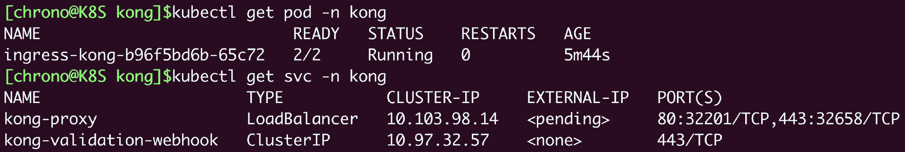
看这里的截图，你可能会注意到，在 kubectl get pod 输出的“READY”列里显示的是“2/2”，意思是这个Pod里有两个容器。
这也是Kong Ingress Controller与Nginx Ingress Controller在实现架构方面的一个明显不同点。
Kong Ingress Controller，在Pod里使用两个容器，分别运行管理进程Controller和代理进程Proxy，两个容器之间使用环回地址（Loopback）通信；而Nginx Ingress Controller则是因为要修改静态的Nginx配置文件，所以管理进程和代理进程必须在一个容器里（图片表示Kong架构设计）。

两种方式并没有优劣之分，但Kong Ingress Controller分离的好处是两个容器彼此独立，可以各自升级维护，对运维更友好一点。
Kong Ingress Controller还创建了两个Service对象，其中的“kong-proxy”是转发流量的服务，注意它被定义成了“LoadBalancer”类型，显然是为了在生产环境里对外暴露服务，不过在我们的实验环境（无论是minikube还是kubeadm）中只能使用NodePort的形式，这里可以看到80端口被映射到了节点的32201。
现在让我们尝试访问一下Kong Ingress Controller，IP就用worker节点的地址，如果你和我一样用的是minikube，则可以用 $(minikube ip) 的形式简单获取：
curl $(minikube ip):32201 -i

从curl获取的响应结果可以看到， Kong Ingress Controller 2.7内部使用的Kong版本是3.0.1，因为现在我们没有为它配置任何Ingress资源，所以返回了状态码404，这是正常的。
我们还可以用 kubectl exec 命令进入Pod，查看它的内部信息：
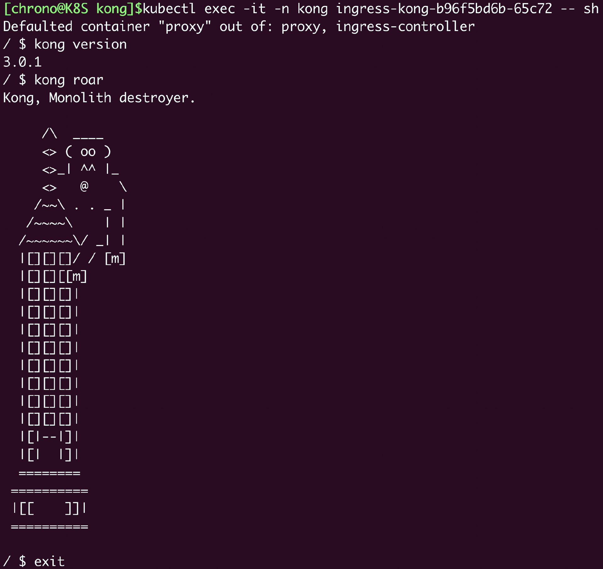
虽然Kong Ingress Controller里有两个容器，但我们不需要特意用 -c 选项指定容器，它会自动进入默认的Proxy容器（另一个Controller容器里因为不包含Shell，也是无法进入查看的）。
使用Kong Ingress Controller
安装好了，我们看如何使用。和第21讲里的一样，我们仍然不使用默认的Ingress Controller，而是利用Ingress Class自己创建一个新的实例，这样能够更好地理解掌握Kong Ingress Controller的用法。
首先，定义后端应用，还是用Nginx来模拟，做法和[第20讲]里的差不多，用ConfigMap定义配置文件再加载进Nginx Pod里，然后部署Deployment和Service，比较简单，你也比较熟悉，就不列出YAML 代码了，只看一下运行命令后的截图：

显示我创建了两个Nginx Pod，Service对象的名字是ngx-svc。
接下来是定义Ingress Class，名字是“kong-ink”， “spec.controller”字段的值是Kong Ingress Controller的名字“ingress-controllers.konghq.com/kong”，YAML的格式可以参考[第21讲]：
apiVersion: networking.k8s.io/v1
kind: IngressClass
metadata:
name: kong-ink
spec:
controller: ingress-controllers.konghq.com/kong
然后就是定义Ingress对象了，我们还是可以用 kubectl create 来生成YAML 样板文件，用 --rule 指定路由规则，用 --class 指定Ingress Class：
kubectl create ing kong-ing --rule="kong.test/=ngx-svc:80" --class=kong-ink $out
生成的Ingress对象大概就是下面这样，域名是“kong.test”，流量会转发到后端的ngx-svc服务：
apiVersion: networking.k8s.io/v1
kind: Ingress
metadata:
name: kong-ing
spec:
ingressClassName: kong-ink
rules:
- host: kong.test
http:
paths:
- path: /
pathType: Prefix
backend:
service:
name: ngx-svc
port:
number: 80
最后，我们要从 all-in-one-dbless.yaml 这个文件中分离出Ingress Controller的定义。其实也很简单，只要搜索“Deployment”就可以了，然后把它以及相关的Service代码复制一份，另存成“kic.yml”。
当然了，刚复制的代码和默认的Kong Ingress Controller是完全相同的，所以我们必须要参考帮助文档做一些修改，要点我列在了这里：
- Deployment、Service里metadata的 name 都要重命名，比如改成 ingress-kong-dep、ingress-kong-svc。
- spec.selector 和 template.metadata.labels 也要修改成自己的名字，一般来说和Deployment的名字一样，也就是ingress-kong-dep。
- 第一个容器是流量代理Proxy，它里面的镜像可以根据需要，改成任意支持的版本，比如Kong:2.7、Kong:2.8或者Kong:3.1。
- 第二个容器是规则管理Controller，要用环境变量“CONTROLLER_INGRESS_CLASS”指定新的Ingress Class名字
kong-ink，同时用“CONTROLLER_PUBLISH_SERVICE”指定Service的名字ingress-kong-svc。 - Service对象可以把类型改成NodePort，方便后续的测试。
改了这些之后，一个新的Kong Ingress Controller就完成了，大概是这样，修改点我也加注释了你可以对照着看：
apiVersion: apps/v1
kind: Deployment
metadata:
name: ingress-kong-dep # 重命名
namespace: kong
spec:
replicas: 1
selector:
matchLabels:
app: ingress-kong-dep # 重命名
template:
metadata:
labels:
app: ingress-kong-dep # 重命名
spec:
containers:
- env: # 第一个容器， Proxy
...
image: kong:3.1 # 改镜像
- env: # 第二个容器，Controller
- name: CONTROLLER_INGRESS_CLASS
value: kong-ink # 改Ingress Class
- name: CONTROLLER_PUBLISH_SERVICE
value: kong/ingress-kong-svc # 改Service
...
---
apiVersion: v1
kind: Service
metadata:
name: ingress-kong-svc # 重命名
namespace: kong
spec:
...
selector:
app: ingress-kong-dep # 重命名
type: NodePort # 改类型
在我们专栏的配套GitHub项目里，你也可以直接找到改好的YAML 文件。- 把这些都准备好，我们就可以来测试验证Kong Ingress Controller了：
kubectl apply -f ngx-deploy.yml
kubectl apply -f ingress.yml
kubectl apply -f kic.yml

这个截图显示了这些对象的创建结果，其中，新Service对象的NodePort端口是32521。
下面我们就来用curl发送HTTP请求，注意，应该用“–resolve”或者“-H”参数指定Ingress里定义的域名“kong.test”，否则Kong Ingress Controller会找不到路由：
curl $(minikube ip):32521 -H 'host: kong.test' -v
你可以看到，Kong Ingress Controller正确应用了Ingress路由规则，返回了后端Nginx应用的响应数据，而且从响应头“Via”里还可以发现，它现在用的是Kong 3.1。
扩展Kong Ingress Controller
到这里，Kong Ingress Controller的基本用法你就掌握了。
不过，只使用Kubernetes标准的Ingress资源来管理流量，是无法发挥出Kong Ingress Controller的真正实力的，它还有很多非常好用、非常实用的增强功能。
我们在[第27讲]里曾经说过annotation，是Kubernetes为资源对象提供的一个方便扩展功能的手段，所以，使用annotation就可以在不修改Ingress自身定义的前提下，让Kong Ingress Controller更好地利用内部的Kong来管理流量。
目前Kong Ingress Controller支持在Ingress和Service这两个对象上添加annotation，相关的详细文档可以参考官网（https://docs.konghq.com/kubernetes-ingress-controller/2.7.x/references/annotations/），这里我只介绍两个annotation。
第一个是“konghq.com/host-aliases”，它可以为Ingress规则添加额外的域名。
你应该知道吧，Ingress的域名里可以使用通配符 *，比如 *.abc.com，但问题在于 * 只能是前缀，不能是后缀，也就是说我们无法写出 abc.* 这样的域名，这在管理多个域名的时候就显得有点麻烦。
有了“konghq.com/host-aliases”，我们就可以用它来“绕过”这个限制，让Ingress轻松匹配有不同后缀的域名。
比如，我修改一下Ingress定义，在“metadata”里添加一个annotation，让它除了“kong.test”，还能够支持“kong.dev”“kong.ops”等域名，就是这样：
apiVersion: networking.k8s.io/v1
kind: Ingress
metadata:
name: kong-ing
annotations:
konghq.com/host-aliases: "kong.dev, kong.ops" #注意这里
spec:
...
使用 kubectl apply 更新Ingress，再用curl来测试一下：

你就会发现Ingress已经支持了这几个新域名。
第二个是“konghq.com/plugins”，它可以启用Kong Ingress Controller内置的各种插件（Plugins）。
插件，是Kong Ingress Controller的一个特色功能，你可以理解成是“预制工件”，能够附加在流量转发的过程中，实现各种数据处理，并且这个插件机制是开放的，我们既可以使用官方插件，也可以使用第三方插件，还可以使用Lua、Go等语言编写符合自己特定需求的插件。
Kong公司维护了一个经过认证的插件中心（https://docs.konghq.com/hub/），你可以在这里找到涉及认证、安全、流控、分析、日志等多个领域大约100多个插件，今天我们看两个常用的 Response Transformer、Rate Limiting。
Response Transformer插件实现了对响应数据的修改，能够添加、替换、删除响应头或者响应体；Rate Limiting插件就是限速，能够以时分秒等单位任意限制客户端访问的次数。
定义插件需要使用CRD资源，名字是“KongPlugin”，你也可以用kubectl api-resources、kubectl explain 等命令来查看它的apiVersion、kind等信息：

下面我就给出这两个插件对象的示例定义：
apiVersion: configuration.konghq.com/v1
kind: KongPlugin
metadata:
name: kong-add-resp-header-plugin
plugin: response-transformer
config:
add:
headers:
- Resp-New-Header:kong-kic
---
apiVersion: configuration.konghq.com/v1
kind: KongPlugin
metadata:
name: kong-rate-limiting-plugin
plugin: rate-limiting
config:
minute: 2
KongPlugin对象，因为是自定义资源，所以和标准Kubernetes对象不一样，不使用“spec”字段，而是用“plugin”来指定插件名，用“config”来指定插件的配置参数。
比如在这里，我就让Response Transformer插件添加一个新的响应头字段，让Rate Limiting插件限制客户端每分钟只能发两个请求。
定义好这两个插件之后，我们就可以在Ingress对象里用annotations来启用插件功能了：
apiVersion: networking.k8s.io/v1
kind: Ingress
metadata:
name: kong-ing
annotations:
konghq.com/plugins: |
kong-add-resp-header-plugin,
kong-rate-limiting-plugin
现在让我们应用这些插件对象，并且更新Ingress：
kubectl apply -f crd.yml
再发送curl请求：
curl $(minikube ip):32521 -H 'host: kong.test' -i

你就会发现响应头里多出了几个字段，其中的 RateLimit-* 是限速信息，而 Resp-New-Header 就是新加的响应头字段。
把curl连续执行几次，就可以看到限速插件生效了：
Kong Ingress Controller会返回429错误，告诉你访问受限，而且会用“Retry-After”等字段来告诉你多少秒之后才能重新发请求。
小结
好了，今天我们学习了另一种在Kubernetes管理集群进出流量的工具：Kong Ingress Controller，小结一下要点内容：
- Kong Ingress Controller的底层内核仍然是Nginx，但基于OpenResty和LuaJIT，实现了对路由的完全动态管理，不需要reload。
- 使用“无数据库”的方式可以非常简单地安装Kong Ingress Controller，它是一个由两个容器组成的Pod。
- Kong Ingress Controller支持标准的Ingress资源，但还使用了annotation和CRD提供更多的扩展增强功能，特别是插件，可以灵活地加载或者拆卸，实现复杂的流量管理策略。
作为一个CNCF云原生项目，Kong Ingress Controller已经得到了广泛的应用和认可，而且在近年的发展过程中，它也开始支持新的Gateway API，等下次有机会我们再细聊吧。
课下作业
最后是课下作业时间，给你留两个思考题：
- 你能否对比一下Kong Ingress Controller和Nginx Ingress Controller这两个产品，你看重的是它哪方面的表现呢？
- 你觉得插件这种机制有什么好处，能否列举一些其他领域里的类似项目？
好久不见了，期待看到你的想法，我们一起讨论，留言区见。

结束语 是终点，更是起点
你好，我是Chrono。
经过近三个月的刻苦努力，我们的Kubernetes学习之旅在今天就抵达“终点站”了。
三个月的时间，说长不长，说短不短，所谓“一期一会”，我非常珍惜与你共同度过的这段时间，同时也感谢你对专栏的支持和热情留言，正是由于我们彼此的帮助和鼓励，才让这段光阴变得更有意义、更加精彩。
分别之际，我再来聊聊我自己的学习经历和建议吧，就当做是一个简单的“复盘”。
我的Kubernetes学习经验
其实在“开篇词”里已经说过了我学习Kubernetes的过程，不过作为“前车之鉴”，我觉得有必要再回顾一下，相信也有不少同学对我是如何学习Kubernetes会比较感兴趣，而且这段经历也有一点参考的价值。
首先要说的是，我属于研发出身，技术背景是C/C++/Nginx，所以在学习的过程中就会下意识地从这个角度去筛选知识点，偏重应用的开发和部署，对系统的安装、运维、管理则关注的不是太多。
这里我也给你提个醒，学Kubernetes最好是结合自己的实际情况，定个“小目标”，比如“我要学会在Kubernetes里开发云原生应用”“我要运维Kubernetes的监控系统”“我要搭建出高可用的Kubernetes生产系统”等等，而我当初的目标就是“要搞明白Nginx Ingress Controller的用法”。
有了这样比较明确的目标，你就会有方向、有重点地去研究Kubernetes，方便检查自己的学习进度，也更容易集中精力“钻进去”，否则漫无目的学习就很容易迷失在Kubernetes的知识海洋里（图片来源），也很难构建起完整的知识体系。

和大多数人一样，我一开始学Kubernetes也是困难重重，主要原因还是Kubernetes是一个全新的系统，上来就要面对一大堆“不知所云”的概念（Pod、ConfigMap、Deployment等等），没有任何以往的经验可以借鉴，完全要从零开始。
初学者想要翻越这个“高山”必须要下苦功夫、花大力气，我个人感觉这个过程没有捷径可走，必须反复阅读思考，再通过做实验来加深印象。只要度过了这个“危险期”，理解了底层知识，打好了基础，后面的学习就会变得轻松一些了。
说到做实验，我认为这也是学习Kubernetes的一个非常重要的手段。毕竟Kubernetes是一个“操作系统”，如果仅仅是看文字资料“纸上谈兵”，不真正上手演练，是很难弄清楚它的工作原理和运行机制的。
最初我用的就是minikube，简单方便，功能也很齐全，对于Kubernetes入门来说非常合适，可以快速上手。
不过因为minikube是基于Docker虚拟的，在节点和网络等方面离真实环境还是有一些差距，所以我也建议你在对Kubernetes有了比较深入的了解之后还是应该改换成kubeadm，这样才能够更透彻地学习研究Kubernetes。
在学习的过程中我还有两个“最佳实践”，一个是勤记笔记，另一个是画思维导图。
俗话说“好记性不如烂笔头”，资料看得太多，大脑不可能全记住，我们就要及时把阅读时的思考和体会写下来。
不过你也不必强求笔记完整详细，短短一两句话、简单的几个链接都是有价值的，等到笔记积累到一定的数量，就可以再花一些时间做个归纳和浓缩，这个时候就会用到思维导图。
我想你应该对思维导图很熟悉吧，它的树状发散的形式很好地符合了人的自然思维模式，可以想到哪儿就写到哪儿，不需要什么心理负担，而且我们还可以给条目加各种小标记，条目之间还可以互相引用，用视觉效果来强化学习。
把碎片化的笔记和有结构的思维导图结合起来，我们就能更顺畅地整理思路、总结经验，把零散的想法、概念分类合并，逐渐就能掌握系统、全面的知识了。
作为示范，我把刚才说的这些也画成了思维导图。你看，有了图形化、可视化，知识点学习吸收起来是不是就更容易一些呢。

今后要怎么学Kubernetes
课程虽然马上要结束了，但在“终点站”之外，Kubernetes的世界才刚刚展现在你的面前。这个世界是如此的广阔宏大，我们的Kubernetes课程可以说是只走出了“万里长征的第一步”，今后的道路将要去向何处，就要由你自己来把握了。
接下来我就来说说四个可能的方向吧，你可以把它们看成是学习Kubernetes的“攻略指引”，帮助你走出属于自己的路。
第一个是阅读Kubernetes官网上的文档。
Kubernetes官网（https://kubernetes.io/zh-cn/docs/home/）里的资料非常丰富详细，包括入门介绍、安装指导、基本概念、应用教程、运维任务、参考手册等等。
当然了，官网文档不是完全面向初学者的，不像我们的课程那样“循序渐进”，写得也不都是那么通俗易懂，要有一定的基础才能够看得下去。但它的优势就是全面、权威，覆盖了Kubernetes的每一个特性，你对Kubernetes有任何的疑惑和不解，都能够在这些文档里找到答案。
不过官网文档太多太杂也对我们的学习造成了困难，想要去按部就班地查找知识点会很麻烦，这个时候就要善用它的搜索功能了，用关键字来快速定位文章、页面，节约我们的时间和精力。
第二个学习方向是看Kubernetes的博客。
官网上的文档只是描述了Kubernetes的现状，而没有讲它的历史，想要知道Kubernetes里的这些API对象是怎么设计出来的，怎么一步步发展到今天的这个样子，就要去看它的技术博客文章了。
这里我推荐你去阅读英文博客（https://kubernetes.io/blog/），虽然中文官网也有博客，但翻译的不全，比较少，而英文博客从2015年开始，每个重要特性的变更几乎都有文章来介绍。而且博客和文档不同，它更注重面对普通用户，阐述的是技术决策的思考过程，也就更容易理解一些。
如果条件允许的话，我建议你从2015年的第一篇博客开始看起，最好每篇都简略地过一遍。把这些博客全看完，“以史为鉴”，你就能够理解Kubernetes的演变过程了，也会对Kubernetes的现状有更深刻的认识。
第三个是上CNCF网站（https://www.cncf.io/），看它的全景图，在里面找自己感兴趣的项目，然后在Kubernetes环境里部署应用起来，在实践中学习Kubernetes。
CNCF全景图里的项目非常多，其中由它托管的项目又分成毕业（Graduated）项目、孵化（Incubating）项目和沙盒（Sandbox）项目。
其实这些项目只要进入了CNCF，质量都是比较高的，区别只在于成熟度的不同而已。毕业项目是最成熟的，已经被业界广泛承认和采用，可用于生产环境；孵化项目应用程度还不太广，贡献者也不是太多，只有少数生产实践；而沙盒项目则属于实验性质，还没有经过充分的测试验证。
这里我们也可以来简单了解下毕业项目和孵化项目，课后你可以挑自己感兴趣的深入研究。
这张图是目前CNCF里全部的16个毕业项目：
这里面我们已经全面学习了Kubernetes，简单介绍过containerd和Prometheus，其他我个人比较感兴趣的还有Harbor、Helm、Vitess。
CNCF的孵化项目目前有39个，比起毕业项目它们的知名度要略差一些，这个截图列出了一部分，其中我比较感兴趣的有gRPC、SPIRE、NATS、OpenTelemetry：

第四个学习方向要量力而行，是参加Kubernetes的培训并且通过认证（https://kubernetes.io/zh-cn/training/）。
和很多其他的计算机技术一样，Kubernetes也设立了官方的培训课程和资质认证，在国内大家都比较了解的应该就是CKA（Certified Kubernetes Administrator）了，另外还有一个更高级的是CKS（Certified Kubernetes Security Specialist）。
CKA主要考查的是对Kubernetes的概念理解和集群管理维护能力，重点是动手操作，使用kubectl来解决各种实际环境里可能遇到的问题。它的难度并不太高，但考点覆盖面广，而且考试时间长达2个小时（以前是3个小时），对脑力和体力都有不小的挑战。
由于Kubernetes在云原生领域“一统天下”，CKA认证近几年也就“火”了起来，相关的考试资料有很多，你可以轻易地在各大网站上找到，学完了我们的这个专栏课程，再适当地强化训练一下，拿到CKA证书应该不是什么太难的事情。
不过要注意的是，因为Kubernetes版本更新很频繁，所以CKA是有时效期的，三年（以前是两年）过后失效就得重考，你需要评估一下考试对自己收益再慎重做决定。
临别感言
聊了自己的学习经验，也总结了四条继续攻略的学习方向供你参考，在我们共度三个月的最后我也还有一些感触想跟你分享。
虽然这已经是我在极客时间的第三个专栏了，但挑战仍然是不小，从年初隆冬时的调研开始，到盛夏酷暑时的收笔完结，持续了大半年，很多的业余时间都“赔”进来了，但我觉得值。
和前两个课写的HTTP协议、C++语言比起来，我使用Kubernetes的时间还是有点短，所以自身的积累也就不那么深厚，写文章不像以前能那么“信手拈来”，要反复查文档、做实验来确认，整个过程有苦有乐。现在课程结束了，回头再看，也算是对自己Kubernetes能力的一个思考和总结，收获还是挺多的。
不过由于Kubernetes的知识点太深太杂，虽然我尽力想把它们讲清楚，课程里的每一节几乎都在15分钟左右（对比前两个专栏的10分钟大幅度增长），工作量加大了很多，但感觉还是只说透了很少的一部分，其他有用的相关内容就只能寥寥一两句话带过，实在有点无奈和可惜。
以后如果有机会的话，我想也还会和前两个专栏一样，不定期地补充一些“加餐”，把自己对Kubernetes最新的理解和心得分享出来，让我们持续学习，共同进步。
另外，我还看到有同学在留言里反复提及“上生产系统”，这个要求对于我来说可能是有点高了。因为我基本不参与系统运维工作，搭建Kubernetes环境只是方便我自己的开发测试，真正上线应用还是会找专门的运维同事，而实际的生产环境要比虚拟机环境复杂得多，我没有时间也没有能力把这些都了解清楚，所以也只能抱歉了。
不知道你是否一直在默默认真学习，在专栏要结束的今天，我非常希望能在留言区见到你的身影，听听你学习这个专栏的感受和收获，如果你对课程有任何反馈与建议，也欢迎填写这份问卷。
行文至此，那就让我们在这里道一声珍重，说一声“再见”吧。
祝愿你以此为新征途的起点，满怀信心和希望，大步迈向充满无尽可能的Kubernetes新世界，开拓出自己的成功之路！